生成时间：2026-08-25T11:16:35+08:00
今日保留论文数：12
内容构成：今日新文 12 篇；补充推荐 0 篇；经典旧文精读 0 篇
高能天体物理重点
1. Particle acceleration and non-thermal broadband spectrum of extended shocked outflows in black hole binary V4641 Sgr - a galactic pevatron
- 来源：arXiv / astro-ph.HE
- 链接：https://arxiv.org/abs/2608.22051v1
- 作者：Andrei Bykov, Sergei Osipov, Vadim Romansky, Eugene Churazov, Ildar Khabibullin
- 评分：novelty 8/10，importance 9/10，relevance 10/10，final 10.00/10
- 推荐理由：围绕V4641 Sgr的VHE伽马发现，结合MHD和非线性粒子加速模型，同时解释射电、X射线及H.E.S.S./HAWC/LHAASO数据，并提出银河PeVatron和TeV-PeV质子预测；强相关且重要。
中文题目：黑洞双星 V4641 Sgr 延展激波外流中的粒子加速与非热宽带谱：一个银河系 PeVatron 模型
做了什么：这篇论文试图解释微类星体 V4641 Sgr 周围几十秒差距尺度上的射电、X 射线和甚高能伽马射线非热辐射。作者把磁流体力学外流模拟与非线性动理学蒙特卡洛粒子加速模型结合，提出：窄的近相对论极向喷流与准球形超爱丁顿吸积盘风相互作用，形成一组强激波；这些激波可把电子加速到 PeV 量级，并把相当一部分喷流动能注入 TeV–PeV 质子。模型同时对接 MeerKAT 射电形态、SRG/eROSITA 与 INTEGRAL/Swift BAT X 射线数据，以及 H.E.S.S.、HAWC、LHAASO 的甚高能测量，因而把 V4641 Sgr 描述为一个可能间歇工作的银河系 PeVatron。
为什么重要：银河系 PeV 宇宙线源的身份仍未完全解决。通常讨论对象是年轻超新星遗迹、脉冲星风云、银河中心或大质量恒星形成区；这篇文章把超爱丁顿黑洞双星外流推进到同一问题中，并给出跨射电、X 射线、TeV 到 PeV 伽马射线的一体化动力学模型。如果成立，微类星体不只是局域高能天体，而可能在爆发周期中短时成为有效的 PeVatron。
理论 / 观测 / 仪器方法价值：本文的价值不只在于拟合一条谱能量分布，而在于把大尺度外流几何、激波位置、粒子加速和多波段辐射联系起来。它给出了可检验的空间预言：伽马射线和 X 射线亮斑应与喷流—盘风相互作用产生的强激波区域相关，而 MeerKAT 的蝴蝶结形射电结构对应准球形盘风的终止面。对观测者来说，深 X 射线成像和更高角分辨率的 TeV 形态测量可以直接检验模型。
为什么应该关注：如果你关心银河系宇宙线起源，这篇文章提供了一个不同于标准超新星遗迹图景的候选通道；如果你研究微类星体，它说明短暂超爱丁顿爆发可能在几十秒差距尺度留下长期可见的非热遗迹；如果你做高能观测，它明确指出哪些空间轮廓、谱形和多波段对应关系最能区分间歇黑洞双星加速器与更持久的 SS 433/W50 类系统。
展开详细解读：文章讲解、背景、理论、重点章节、图表与相关工作
文章详细讲解
科学问题：V4641 Sgr 是一个已知经历强烈、短时、可能超爱丁顿爆发的恒星质量黑洞双星。近年的甚高能观测提示其周围环境存在 TeV 乃至更高能伽马射线辐射，同时射电图像显示出延展的非热结构。核心问题是：这些辐射是否能由同一个物理加速器解释？如果可以，粒子是否真的达到 PeV 能区，V4641 Sgr 是否可被视为银河系 PeVatron？
作者怎么做：论文构造了一个包含两类外流的物理图像：一是窄的近相对论极向喷流，二是准球形、较慢但质量负载较高的吸积盘风。二者在双星周围几十秒差距尺度相互碰撞并形成激波系统。作者用磁流体力学模拟给出外流的密度、速度、磁场和激波几何，再用非线性动理学蒙特卡洛模型计算粒子在强激波处的加速、逃逸和能量分配，最后合成同步辐射、逆康普顿辐射以及强子相关的高能辐射成分。
关键结果：模型能够同时解释 MeerKAT 发现的蝴蝶结形射电结构、SRG/eROSITA 全天巡天中新给出的 X 射线信息、INTEGRAL 与 Swift BAT 的归档硬 X 射线约束，以及 H.E.S.S.、HAWC、LHAASO 的甚高能伽马射线测量。论文强调，X 射线和伽马射线亮斑并非随意放置的发射区，而应与喷流和盘风相互作用产生的强激波位置相关。射电蝴蝶结结构则被解释为准球形盘风终止面附近的同步辐射。
局限和下一步：这个解释依赖若干仍需观测验证的要素，包括历史喷流活动的占空比、盘风动能、环境密度、磁场放大效率以及电子和质子注入效率。当前高能伽马射线角分辨率有限，X 射线曝光也不足以精确描绘所有激波对应的细结构。作者因此提出，深 X 射线观测可检验加速器是否间歇工作，并与更持久的 SS 433/W50 体系区分开来；未来 CTA、LHAASO 长期监测和更深 MeerKAT 或 SKA 射电图像也会是关键。
关键结果是怎么做出来的
本文最重要的证据链是“空间形态加宽带谱”的联合解释，而不是单一能段的谱拟合。样本不是大量同类源统计，而是围绕 V4641 Sgr 这个具体源的多波段资料整合：射电端使用 MeerKAT 揭示的延展蝴蝶结形结构；软 X 射线端加入 SRG/eROSITA 全天巡天数据；硬 X 射线端用 INTEGRAL 和 Swift BAT 归档数据约束；高能端对照 H.E.S.S.、HAWC、LHAASO 的甚高能测量。读者应把这篇文章理解为一个单源、多数据集、物理模型驱动的解释框架。
事件数或样本量在这里主要体现为各观测数据集的空间与谱测量点，而不是瞬变统计样本。作者关注的是几十秒差距尺度上的延展辐射是否在位置、尺度和能谱上都能由同一外流历史解释。MHD 模拟提供外流相互作用后形成的激波面和终止结构；非线性蒙特卡洛加速模型再给出不同激波区域中的粒子谱。若模型只解释 TeV 谱而不能解释射电形态，或只解释 MeerKAT 形态而无法达到 LHAASO 能区，就不能支撑 PeVatron 结论。
显著性或置信度的核心不是传统意义上某个新源的盲搜检出，而是模型与多波段观测的一致性。论文应当包含或隐含对谱能量分布点、空间轮廓、X 射线通量上限或测量值的对比。读者需要检查模型曲线是否穿过 H.E.S.S.、HAWC、LHAASO 的能谱区间，是否不违反 INTEGRAL/Swift BAT 的硬 X 射线约束，以及 SRG/eROSITA 的软 X 射线亮度是否可由同一电子群体同步辐射解释。
支撑结论的关键图表应包括：MHD 模拟的密度或速度切片、激波位置与观测亮斑的空间叠加、从射电到 PeV 伽马射线的谱能量分布、以及粒子能谱或最高能量随位置的变化。若论文给出了不同外流功率、磁场或活动年龄的模型曲线，读者应重点比较哪些参数改变会导致 X 射线过亮、TeV 谱过软，或无法延伸到 LHAASO 能区。
主要系统误差来自三个层面。第一，源距离、年龄和历史爆发能量会共同影响物理尺度、总能量预算和辐射冷却时间。第二，环境密度和磁场结构决定激波强度、同步辐射效率及强子相互作用效率。第三，高能伽马射线的源关联和延展形态仍受角分辨率、背景模型和邻近发射源污染影响。稳健性检验应看模型是否只在一组精细调参下成立，还是在合理参数范围内都能维持“PeV 电子与 TeV–PeV 质子”这一结论。
展开背景、理论、公式、模型、章节和图表导读
背景知识
V4641 Sgr 是银河系内的黑洞 X 射线双星，也常被归入微类星体讨论。它最引人注意的历史特征是短时强爆发、快速喷流和可能的超爱丁顿吸积阶段。与持续喷流源不同，V4641 Sgr 的能量注入可能高度间歇，但一次强爆发留下的外流结构可以在星际介质中存活很长时间，因此今天看到的延展非热辐射可能是过去活动周期的“遗迹”。
银河系 PeVatron 问题的传统候选源包括年轻超新星遗迹、银河中心、脉冲星风云和大质量恒星团。所谓 PeVatron 并不只是能发出 TeV 光子，而是能够把带电粒子加速到接近或超过膝区所需的 PeV 能量。由于电子在强磁场和辐射场中冷却很快，若看到 PeV 量级电子的辐射迹象，通常意味着局地、强效且相对近期的加速；若是 PeV 质子，则可能需要通过中性 pion 衰变伽马射线或相关中微子间接判断。
微类星体作为宇宙线源的想法并不新，SS 433/W50 是最著名的银河系喷流—星际介质相互作用实验室。但 V4641 Sgr 的特殊之处在于其爆发更短、更剧烈，外流可能包含近相对论喷流与宽角盘风的混合。这样的几何可能自然产生多个强激波和剪切区，为非线性粒子加速提供条件。
为什么现在值得重看？一方面，MeerKAT 等高灵敏度射电阵列揭示了低面亮度的大尺度结构；另一方面，SRG/eROSITA、HAWC、LHAASO 与 H.E.S.S. 使软 X 射线到超高能伽马射线的约束更完整。过去单靠 X 射线双星爆发光变很难判断其长期反馈，如今可以直接观察其周围几十秒差距的非热遗迹。
常见误区有三个。第一，把微类星体喷流只理解为亚秒差距或毫角秒尺度现象，忽略其在星际介质中积累的机械反馈。第二，把 TeV 伽马射线源自动等同于 PeVatron；实际上只有在谱形、截止能和辐射机制被约束后，才能谈 PeV 粒子。第三，把电子逆康普顿和强子 pion 衰变解释看成简单二选一；在复杂激波外流中，电子和质子可能同时被加速，并在不同波段占主导。
基础理论 / 方法脉络
基本物理图像是机械能转化为非热粒子能量。黑洞双星在超爱丁顿吸积时可同时驱动窄喷流和宽角盘风。喷流速度高、动能通量集中；盘风速度较低但覆盖立体角大、质量负载强。二者与外部星际介质相互作用后，会形成弓形激波、反向激波、接触间断面和终止面，这些地方的速度剪切、压缩和湍流为一阶费米加速提供环境。
一阶费米加速的直观图像是带电粒子在激波上下游磁湍流中多次散射，每次穿越激波获得平均能量增益。强非相对论激波在测试粒子近似下给出接近幂律的动量谱；当被加速粒子压力反过来改变激波结构时，就需要非线性动理学处理。本文使用蒙特卡洛模型正是为了处理粒子散射、回流、逃逸和激波修正，而不是简单指定一个固定幂律。
辐射上，射电到 X 射线主要可由高能电子同步辐射产生；TeV 到 PeV 伽马射线可能来自电子逆康普顿散射，也可能来自高能质子与气体碰撞产生的 pion 衰变。同步辐射对磁场非常敏感，逆康普顿对目标光子场敏感，强子辐射对气体密度和质子总能量敏感。因此，多波段联合拟合的价值在于打破单一能段的退化。
本文的模型假设包括：历史超爱丁顿活动提供足够机械能；喷流和盘风的几何并存；强激波位置决定局地高能发射亮斑；磁场在激波和湍流区被放大；电子和质子都能被有效注入加速过程。关键观测量包括空间尺度、表面亮度轮廓、谱能量分布、X 射线通量或上限、以及伽马射线谱的最高能端。
主要退化关系包括磁场强度与电子数目的退化、源年龄与最高能量的退化、环境密度与强子伽马射线亮度的退化、以及加速器占空比与当前辐射亮度的退化。选择效应也不可忽视：TeV–PeV 仪器角分辨率有限，容易把复杂延展结构简化为一个源；X 射线软能段受吸收影响；射电低面亮度结构依赖成像动态范围和背景扣除。
公式与推导
第一步是外流机械能输入。若喷流或盘风的质量流率为 \(\dot{M}\)，速度为 \(v\)，则机械功率近似为
这里 \(L_{\rm k}\) 是可供激波、湍流和非热粒子分享的能量通量；对近相对论喷流应使用相对论修正，但该式给出了能量预算的基本尺度。
第二步是终止激波或外流头部位置的压强平衡。若各向同性等效功率为 \(L_{\rm k}\)，外部介质密度为 (\
\(ho_{\rm ISM}\))，外流头部速度为 \(v_{\rm h}\)，则可用
估计终止半径 \(R\)。这里 \(v_{\rm w}\) 表示宽角风速度；窄喷流情形需把 \(4\pi\) 替换为对应立体角。这个关系说明形态尺度直接约束机械功率、年龄和环境密度。
第三步是一阶费米加速时间。对扩散系数 \(D(E)\) 和激波速度 \(u_{\rm s}\)，加速时间可写为
其中 \(\eta_{\rm acc}\) 是与上下游速度压缩比和散射模型有关的无量纲系数。若接近 Bohm 扩散，
其中 \(r_{\rm L}\) 是拉莫尔半径，\(Z\) 是电荷数，\(B\) 是磁场强度。
第四步是最高能量由加速、冷却、逃逸或源年龄竞争决定：
对电子，同步冷却时间为
其中 \(m_{\rm e}\) 是电子质量，\(\sigma_{\rm T}\) 是 Thomson 截面，\(\gamma\) 是电子洛伦兹因子。该式解释了为什么 PeV 电子要求非常高效且局地的加速。
第五步是同步辐射特征频率。电子能量 \(E_{\rm e}=\gamma m_{\rm e}c^2\) 在磁场 \(B\) 中的特征频率近似为
因此射电到 X 射线谱形可反推电子谱和磁场组合，但仅靠同步辐射存在 \(B\) 与电子归一化的退化。
第六步是逆康普顿能量标度。在 Thomson 极限下，目标光子能量为 \(\epsilon\) 时，散射后光子能量约为
若进入 Klein–Nishina 区，该标度会变软并降低辐射效率，因此 TeV–PeV 谱形可帮助区分电子逆康普顿与强子过程。
第七步是强子伽马射线亮度的近似标度。若高能质子总能量为 \(W_{\rm p}\)，气体数密度为 \(n\)，质子质子碰撞截面为 \(\sigma_{pp}\)，则
其中 \(f_{\pi}\) 表示进入中性 pion 衰变伽马射线的能量比例。该式显示强子解释需要同时知道气体密度和质子能量库。
第八步是观测拟合中常用的计数似然。对第 \(i\) 个能量或空间 bin，观测计数为 \(k_i\)，模型预期为 \(\mu_i(\boldsymbol{\theta})\)，Poisson 似然为
这里 \(\boldsymbol{\theta}\) 包括外流功率、年龄、磁场、密度和粒子注入效率等参数；多波段联合约束本质上是在同一参数集下同时解释多个 \(\mu_i\)。
第九步是模型比较或扩展源显著性的常用检验统计量：
其中 \(\hat{\boldsymbol{\theta}}_{1}\) 是含源或含延展结构模型的最大似然参数，\(\hat{\boldsymbol{\theta}}_{0}\) 是背景或替代模型。读者检查高能源关联时，应关注这种统计量是否对背景模型和空间模板稳健。
模型拟合 / 应用方法
这类工作拟合的不是一个孤立的解析谱，而是一组相互耦合的物理量：外流机械功率、喷流开角、盘风速度、活动年龄、环境密度、磁场放大程度、电子和质子注入效率、扩散系数以及逃逸边界。MHD 模拟先确定可能的激波结构和空间模板，动理学模型再给出粒子谱，最后投影为射电、X 射线和伽马射线通量。
似然层面，理想做法是对不同仪器的计数空间联合建模，包括点扩散函数、曝光、能量响应、背景模板和系统误差。实际论文常会以谱能量分布点和空间轮廓对比为主。读者应注意作者是否把不同仪器的非同时观测视为同一长期平均状态；对间歇源而言，这一假设需要通过冷却时间和活动周期来论证。
残差诊断尤其重要。射电残差若集中在蝴蝶结边缘，可能说明盘风终止面几何不对；软 X 射线若模型过亮，可能说明磁场过强或近期电子注入过多；TeV 谱若过硬或过软，会影响电子逆康普顿与强子成分的比例判断；PeV 端若只靠少数高能点支撑，则需警惕背景和源混淆。
参数退化包括 \(B\) 与电子能量总量的退化、\(n\) 与 \(W_{\rm p}\) 的退化、\(t_{\rm age}\) 与扩散系数的退化、喷流功率与活动占空比的退化。若只拟合总谱，许多组合都可通过调节归一化给出类似结果；空间信息和 X 射线冷却约束是打破退化的关键。
模型可能失败的地方也很清楚：如果深 X 射线观测找不到与预测激波位置一致的亮斑，或者更高角分辨率 TeV 观测显示伽马射线峰与喷流—盘风结构无关，本文图景会受压。相反，如果未来观测确认 X 射线、射电边缘和高能伽马射线延展方向一致，并且谱形需要 PeV 粒子，那么微类星体 PeVatron 通道会显著增强。
重点章节 / 结果段落怎么读
数据与观测约束部分应首先阅读。重点看作者如何汇总 MeerKAT 射电形态、SRG/eROSITA 软 X 射线、INTEGRAL/Swift BAT 硬 X 射线以及 H.E.S.S.、HAWC、LHAASO 甚高能数据。注意这些数据是否同一时间、同一空间区域、同一通量定义；不同仪器视场和角分辨率差异会影响结论。
MHD 模拟部分是全文几何解释的核心。读者应看喷流和盘风的初始条件、动能功率、速度、开角、环境密度和模拟时间。尤其要检查激波位置是否自然落在观测亮斑附近，而不是事后人为调节。
非线性动理学蒙特卡洛部分决定 PeVatron 主张是否可信。这里应关注散射模型、注入条件、磁场放大、逃逸边界和粒子反馈。若最高能量来自过于乐观的 Bohm 扩散或极高磁场，应在心里降低结论稳健性。
宽带辐射结果部分需要逐波段检查。射电是否解释形态，X 射线是否解释新数据且不违反硬 X 射线限制，TeV–PeV 谱是否能同时通过 H.E.S.S.、HAWC、LHAASO 的测量区间。不要只看总曲线贴合，应看不同辐射机制分量。
讨论与预测部分最有观测价值。作者把 V4641 Sgr 与 SS 433/W50 对比，强调前者可能是间歇加速器。读者应记下可证伪预言：深 X 射线应看到与激波相关的空间结构，高能伽马射线形态应与外流轴和终止面相关，射电低面亮度结构应追踪盘风终止面。
建议重点查看的图表
-
外流模拟的密度、速度或压强切片：看窄喷流、准球形盘风、弓形激波和终止面是否清楚分离，尺度是否达到观测所需的几十秒差距。
-
激波位置与多波段亮斑叠加图：看 X 射线和伽马射线峰值是否真正靠近强激波，而不是只在大尺度上方向一致。
-
MeerKAT 射电图像或模型射电表面亮度图：重点看蝴蝶结结构、边缘增亮、中心空洞或对称性；这些形态决定盘风终止面解释是否合理。
-
宽带谱能量分布图：从射电、X 射线到 TeV–PeV，检查总模型线和各成分线，尤其看同步、逆康普顿和强子分量的交接能区。
-
粒子能谱图：看电子和质子的最高能量、谱弯曲、逃逸成分以及非线性激波修正导致的硬化或凹形谱。
-
参数变化或稳健性图：若有不同年龄、磁场、外流功率或密度的模型，检查哪些观测点最敏感，哪些参数组合会被 X 射线或 PeV 端排除。
-
X 射线空间轮廓或残差图：看 SRG/eROSITA 数据与模型在软能段的局部差异，尤其注意吸收、背景和点源扣除。
-
与 SS 433/W50 或其他微类星体的尺度和功率比较表：看 V4641 Sgr 是否真的代表不同的间歇工作模式。
关键图表逐图导读
图 1：建议先看源区多波段概览图。横纵轴通常是天球坐标，底图可能为射电或 X 射线强度，叠加 TeV 显著性等值线。读图时要确认等值线的角分辨率与底图是否相差很大；若 TeV 点扩散函数远宽于射电结构，空间重合只能作为弱证据。
图 2：MHD 模拟切片通常展示密度、压强、速度或磁场。坐标轴应为物理尺度，例如秒差距。模型线或颜色条对应流体量级。主要结论是喷流与盘风能自然形成多个强激波和终止面；陷阱是颜色动态范围可能夸大低密度腔体，需看是否标出激波压缩区。
图 3：射电表面亮度模型与 MeerKAT 观测对比应重点看蝴蝶结形态。若坐标轴是角距离，需结合源距离换算物理尺度。模型若只匹配总体大小但不能给出边缘增亮或双叶结构，盘风终止面解释就不够强。
图 4：宽带谱能量分布通常以能量或频率为横轴，以 \(\nu F_{\nu}\) 或 \(E^2 dN/dE\) 为纵轴。数据点来自不同仪器，模型线分为同步、逆康普顿、强子以及总和。读图陷阱是非同时数据被放在同一图上；应检查冷却时间是否足够长，使这种合并有物理意义。
图 5：粒子分布或最高能量图应展示电子、质子在不同激波区的能谱。横轴为粒子能量，纵轴为粒子数或能量密度。若质子谱延伸到 PeV 而电子因冷却截断，这是合理的；若电子 PeV 成分很强，则必须对应局地 X 射线同步辐射预言。
图 6：X 射线数据与模型对比图可能是能谱、图像或径向轮廓。需要看残差是否在统计误差内，是否存在未建模点源或吸收结构。对本文而言，深 X 射线观测是最直接的后续检验，因此任何 X 射线残差都比单纯的谱曲线偏差更重要。
图 7：参数敏感性或替代模型图若存在，应看低磁场电子模型、高密度强子模型、不同活动年龄模型之间的差别。最关键的问题是：PeVatron 结论是否在所有可接受模型中都需要，还是只在某个偏好参数点出现。
论文原图 / 可嵌入图片
Fig05
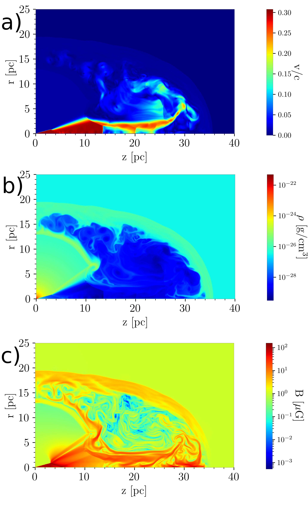
图注：Magneto-hydrodynamic maps of the flow from the axisymmetric simulations of jet- wind interactions. The jet velocity was initiated with a velocity of 0.3c and the power of $2\cdot10^{39}~ \ergs$. The wind velocity was initiated at 3000 $\kms$. Panel a - map of the flow velocity, panel b - map of density, panel c - map of the magnetic field in the flow.
对应解读：对应“建议重点查看的图表”第1项和“关键图表逐图导读”图2：外流 MHD 模拟切片，检验窄喷流、准球形盘风、激波和终止面结构。
入选理由：这是候选图中最直接支撑论文核心物理图景的模拟图，包含速度、密度和磁场三类诊断量，可判断喷流—盘风相互作用是否自然形成强激波和几十秒差距尺度的加速区，比单纯示意图更有科学约束力。
来源与置信度：\(arxiv_source\)；high；\(arxiv_source\) / \(arxive_main.tex\):figure[5]
Fig02
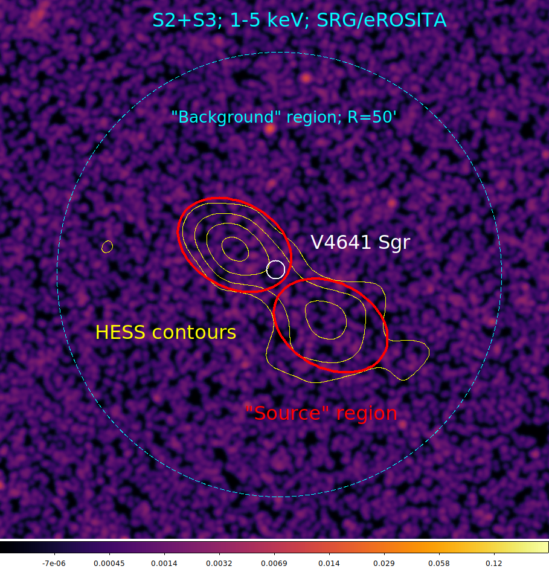
图注：The eROSITA 1-5 keV map for the two scans S2 and S3, when the central black hole was dim, enabling a search for extended faint X-ray emission from the regions where VHE radiation was detected. The yellow contours show the distribution of the VHE emission from the H.E.S.S. observations (significance levels $S=$3, 5, 7, and 9) reported in \(\citet{V4641_HESS_2026A&A...706A...8A}.\) The red ellipses show the regions used to extract X-ray flux. The large circle depicts the region used to estimate the X-ray background (excluding the elliptical regions).
对应解读：对应“建议重点查看的图表”第2项、第7项以及“关键图表逐图导读”图1/图6：eROSITA 软 X 射线图像与 H.E.S.S. VHE 显著性等值线叠加，并标出取谱区域和背景区域。
入选理由：该图把 X 射线数据、TeV 伽马射线显著性等值线和通量提取区域放在同一坐标系中，是检验多波段亮斑是否空间相关、以及 eROSITA 对弥散 X 射线约束是否可靠的关键观测图。
来源与置信度：\(arxiv_source\)；high；\(arxiv_source\) / \(arxive_main.tex\):figure[2]
Fig08
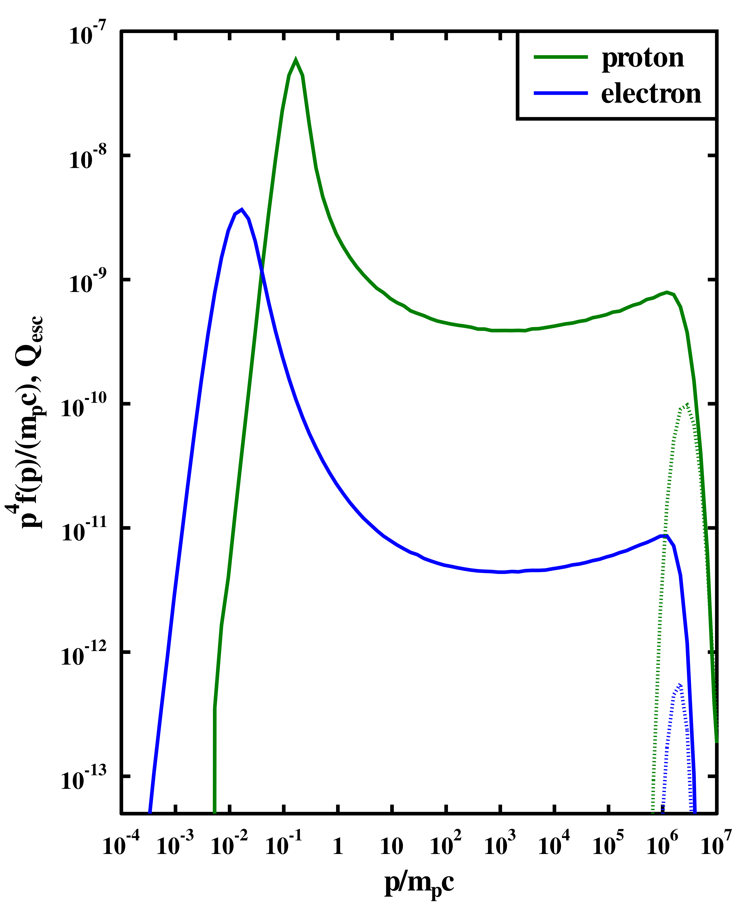
图注：The distribution functions of electrons and protons accelerated at the strong recollimation shock front of the extended transrelativistic jet A of velocity 0.3c (see Figs.\(\ref{MHD},\) \ref{profile_window}) are shown as solid curves. The spectra for Jet B have the same shape in the VHE range but differ in amplitude. The spectra were simulated with the non-linear Monte Carlo DSA model. The fluxes of escape particles through the FEB are shown by dashed curves (\ref{Qesc}).
对应解读：对应“建议重点查看的图表”第5项和模型拟合段落：强再准直激波处电子、质子分布函数及逃逸粒子通量。
入选理由：这张图直接展示非线性 Monte Carlo DSA 模型给出的电子和质子能谱，并包含逃逸成分，是判断 PeV 粒子是否由喷流强激波产生、以及 PeVatron 结论是否成立的核心证据。
来源与置信度：\(arxiv_source\)；high；\(arxiv_source\) / \(arxive_main.tex\):figure[8]
Fig10
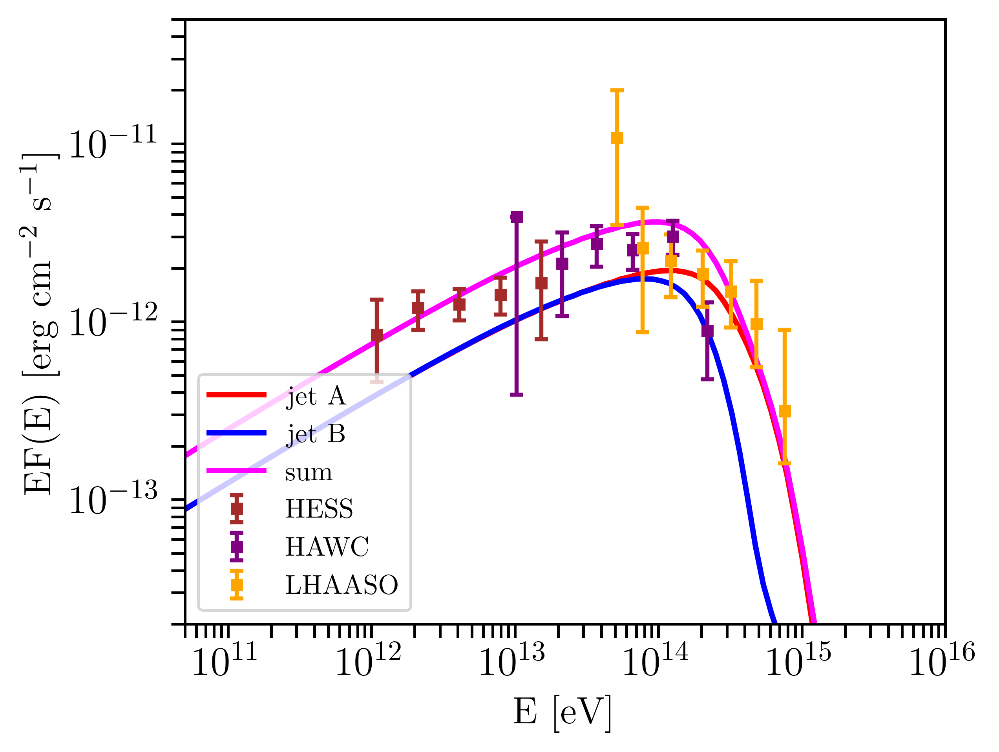
图注：Simulated high energy spectrum of the inverse Compton radiation from VHE electrons accelerated (their spectra are shown in Fig.\ref{pdf_jet}) in the shocked jet of velocity $0.3\,c$ shown with solid lines together with gamma-ray fluxes measured by H.E.S.S. and LHAASO observatories in V4641~Sgr.
对应解读：对应“建议重点查看的图表”第4项和模型拟合段落：高能伽马射线谱与 H.E.S.S.、LHAASO 数据对比。
入选理由：虽然不是完整射电到 PeV 的宽带 SED，但它直接比较了喷流电子逆康普顿模型与 H.E.S.S./LHAASO 伽马射线观测，是检验 TeV–PeV 端谱形和高能粒子需求的关键图。
来源与置信度：\(arxiv_source\)；high；\(arxiv_source\) / \(arxive_main.tex\):figure[10]
Fig11
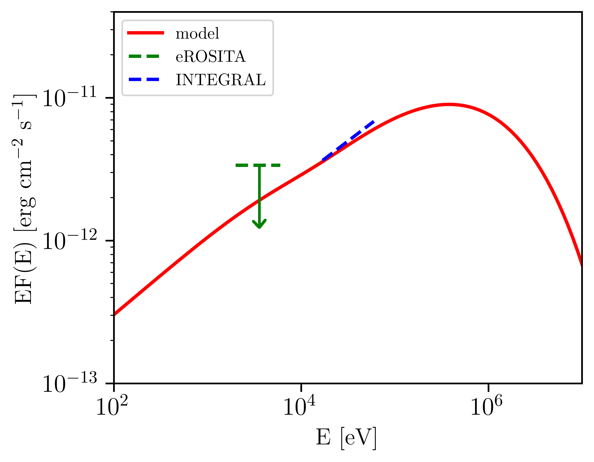
图注：Simulated spectral energy distribution of synchrotron X-ray radiation of electrons accelerated at the strong recollimation in the extended transrelativistic jet of velocity 0.3c in V4641~Sgr with the magnitude of the amplified turbulent magnetic field 20 $\mu$G (model jet B). This is the maximal flux for a persistent source consistent with the $3\sigma$ upper limit from SRG/eROSITA on the diffuse 2 - 6 keV emission from the extended region associated with the VHE radiation sources shown in Fig.~\(\ref{eR_map}\) and the fluxes of the hard X-ray sources IGR J18193-2542 and Swift BAT J1818.7-2553 discussed in section \(\ref{Xrays}.\) The spectral fluxes of jet A with a lower magnetic field are somewhat below that of jet B (see Fig.~\ref{longspectrum}). The X-ray fluxes are expected to be lower than that shown here in the case of the intermittent evolution of the particle accelerator in V4641 Sgr as discussed in \(\S\) \(\ref{Xrays1}.\)
对应解读：对应“建议重点查看的图表”第4项、第7项和“关键图表逐图导读”图6：同步 X 射线谱与 eROSITA 上限、INTEGRAL/Swift BAT 硬 X 射线源约束。
入选理由：该图把模型预测的同步 X 射线通量与软、硬 X 射线观测约束联系起来，能直接检验磁场强度、电子注入和持续/间歇活动假设，是打破模型参数退化的重要图。
来源与置信度：\(arxiv_source\)；high；\(arxiv_source\) / \(arxive_main.tex\):figure[11]
Fig12
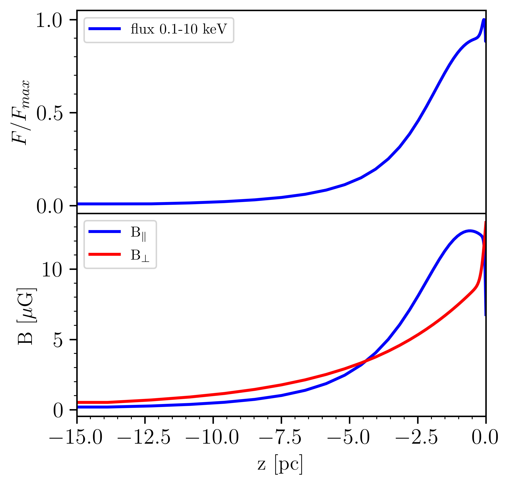
图注：Spatial profile of X-ray brightness in relative units for a jet with a turbulent magnetic field of 20 $\mu$G (model jet B). In the lower panel, the profiles of the turbulent magnetic fields parallel (blue) and transverse (red) to the jet direction are shown. These were used to evaluate the predicted spectra. The shock front position is at $z=0$ and the axis is directed to the central source.
对应解读：对应“建议重点查看的图表”第7项和模型拟合段落：X 射线空间亮度轮廓及沿喷流方向的湍动磁场分布。
入选理由：这张图给出可由未来深 X 射线观测检验的空间亮度预测，并标出相对于激波前沿的位置；它比纯谱图更能测试 X 射线亮斑是否应与强激波和磁场放大区重合。
来源与置信度：\(arxiv_source\)；high；\(arxiv_source\) / \(arxive_main.tex\):figure[12]
强相关工作
同一源背景应检索 V4641 Sgr 的历史爆发、喷流速度、黑洞质量和距离测量，关键词包括“V4641 Sgr microquasar outburst jet super-Eddington”、“V4641 Sgr MeerKAT bow-tie radio”、“V4641 Sgr HAWC LHAASO HESS gamma-ray”。这些论文提供源的基本参数和多波段观测事实，是判断本文能量预算是否合理的前提。
同类源方面，SS 433/W50 是最重要的历史原型：它展示了恒星质量紧致天体喷流如何在几十秒差距尺度塑造星际介质并产生非热辐射。与 SS 433 相比，V4641 Sgr 的关键差异是可能更间歇、更短促的超爱丁顿活动，因此应检索“SS 433 W50 TeV gamma-ray jet cosmic rays”和“microquasar PeVatron”。
基础理论方面，扩散激波加速、非线性宇宙线反馈、Bohm 扩散、同步冷却和逆康普顿 Klein–Nishina 效应是理解本文的必要背景。关键词包括“diffusive shock acceleration nonlinear Monte Carlo cosmic ray modified shocks”、“PeVatron gamma-ray hadronic leptonic degeneracy”。
可能的张力来自源关联和辐射机制退化。高能伽马射线延展源在银河面附近容易受背景模型、邻近源和角分辨率影响；电子逆康普顿模型与强子 pion 衰变模型在有限能段内也可能都能拟合。因此应同时检索相反解释，如“V4641 Sgr pulsar wind nebula alternative gamma-ray source”、“V4641 Sgr hadronic leptonic model comparison”。
同一事件 / 同类源线索：
- https://arxiv.org/abs/2608.22051
- https://arxiv.org/pdf/2608.22051
- https://simbad.u-strasbg.fr/simbad/sim-id?Ident=V4641%20Sgr
相似工作：
- https://ui.adsabs.harvard.edu/abs/2018Natur.562...82H/abstract
- https://ui.adsabs.harvard.edu/abs/2024Natur.634..557H/abstract
基础理论 / 方法工作：
- https://ui.adsabs.harvard.edu/abs/1978MNRAS.182..147B/abstract
- https://ui.adsabs.harvard.edu/abs/1977ICRC...11..132K/abstract
- https://ui.adsabs.harvard.edu/abs/1987PhR...154....1B/abstract
相反观点 / 张力线索：
（未提供）
2. Galactic Microquasar and Supernova Remnants Imprinting on Diffuse Neutrino and Gamma-Ray Sky
- 来源：arXiv / astro-ph.HE
- 链接：https://arxiv.org/abs/2608.22374v1
- 作者：Shiqi Yu, Bing Theodore Zhang
- 评分：novelty 8/10，importance 8/10，relevance 10/10，final 9.70/10
- 推荐理由：直接建模银河弥散高能中微子和伽马射线天空，结合IceCube与LHAASO结果，并区分微类星体和SNR宇宙线贡献；高度契合伽马/中微子/宇宙线多信使重点。
中文题目：银河系微类星体和超新星遗迹如何在弥散中微子与伽马射线天空中留下印记
做了什么：这篇文章建立了一个银河系弥散强子辐射模型，把两类宇宙线加速器——超新星遗迹和微类星体——同时放进三维气体靶场中计算由强子相互作用产生的中微子与伽马射线。核心结论是：在约 \(10\,\mathrm{TeV}\) 以下，逃逸自超新星遗迹的宇宙线主导银河弥散辐射；更高能段则可能由微类星体贡献主要份额。模型给出的中微子通量与 IceCube 近期十二年银河弥散中微子结果相容，并为 LHAASO 等高能伽马射线观测提供可检验的多信使基线。
为什么重要：银河系弥散中微子和伽马射线是检验银河宇宙线起源的直接窗口。过去许多模板把银河宇宙线注入谱近似为单一人口、单一谱形，这在 GeV 到 PeV 的大能区间内过于粗糙。本文的重要性在于把不同加速器族群的能谱和空间分布分开处理，从而让 IceCube 与 LHAASO 看到的高能弥散信号可以被解释为多个源族群叠加，而不是简单归因于一个经验模板。
理论 / 观测 / 仪器方法价值：对理论而言，本文提供了一个从源族群、逃逸宇宙线、三维气体分布到 \(\gamma\) 射线和中微子通量的可扩展计算框架。对观测而言，它给出了哪些能段、哪些银经银纬区域更可能区分超新星遗迹和微类星体贡献的预测。对方法而言，它提示未来弥散模板不应只调节一个全局谱指数，而应显式纳入加速器族群、源分布、气体靶场和未分辨点源的系统不确定性。
为什么应该关注：如果你关心银河宇宙线能否由超新星遗迹单独解释、IceCube 的银河面中微子到底是弥散背景还是未分辨源、或者 LHAASO 的超高能银河 \(\gamma\) 射线如何与中微子对齐，这篇文章都值得看。它不是给出一个封闭答案，而是提出一个物理上更可调、也更容易被未来多信使数据证伪的基线模型。
展开详细解读：文章讲解、背景、理论、重点章节、图表与相关工作
文章详细讲解
科学问题：银河系高能弥散中微子和 \(\gamma\) 射线主要来自哪里？传统答案通常从超新星遗迹加速宇宙线出发，再让宇宙线与星际气体发生 \(pp\) 碰撞产生 \(\pi^0\)、\(\pi^\pm\)，进而产生 \(\gamma\) 射线和中微子。但 IceCube 的银河面中微子结果和 LHAASO 的高能银河 \(\gamma\) 射线结果把问题推到了更高能段：如果只用一个从低能外推上来的宇宙线注入谱，是否会低估或误判高能贡献？本文的切入点是，银河系中不止有超新星遗迹，微类星体这类含有相对论喷流的 X 射线双星也可能向星际介质注入高能强子。
作者怎么做：文章构建了一个数值框架，把超新星遗迹和微类星体作为两个独立宇宙线源族群处理。每一族群有自己的注入谱、空间分布和归一化约束；宇宙线逃逸后在银河气体中产生强子辐射。与简单二维模板不同，模型使用高分辨率三维靶气体分布，并把宇宙线注入锚定到本地宇宙线观测，避免任意调高整个银河的宇宙线能量密度。然后分别计算弥散中微子与 \(\gamma\) 射线天空，并与 IceCube 十二年银河弥散中微子测量、LHAASO 高能 \(\gamma\) 射线约束进行比较。
关键结果：模型显示不同源族群在能量上分工明显。超新星遗迹逃逸宇宙线在 \(\lesssim 10\,\mathrm{TeV}\) 的弥散中微子或相应 \(\gamma\) 射线能段占优，这与经典银河宇宙线图像一致；但在更高能段，微类星体贡献可以超过超新星遗迹，成为弥散天空的重要甚至主导成分。这个结论的物理含义是，高能银河弥散辐射的谱硬化或超额不一定要求修改全银河传播模型，也可能是源族群叠加造成的。
局限和下一步：这类模型的主要局限来自微类星体族群的统计不完整性、喷流强子载荷不确定性、源活动占空比、宇宙线逃逸时间以及三维气体图的不确定性。文章给出的不是唯一解，而是一个物理上自洽的基线：它能容纳现有 IceCube 通量，同时也留下未分辨点源贡献的空间。下一步应将模型与更精细的方向信息、能谱分箱、源掩膜策略和未来 IceCube-Gen2、KM3NeT、LHAASO 后续数据联合拟合。
关键结果是怎么做出来的
本文最重要的证据链从样本和模板选择开始。作者没有把银河弥散辐射写成一个经验空间模板乘以单一幂律谱，而是把源分为超新星遗迹和微类星体两组。每一组的宇宙线注入先由本地宇宙线观测或能量预算限制归一化，再投射到银河三维气体分布上。这意味着模型预测同时受源分布、气体密度和能谱形状约束，而不是只靠调节一个自由归一化拟合 IceCube 数据。
在事件数层面，摘要只说明对比的是 IceCube 近期十二年银河弥散中微子测量，没有给出本文使用的逐事件列表或精确事件数。因此读者应把文章的统计证据理解为通量和模板层面的比较，而不是一次独立的 IceCube 事件级重分析。关键应查看模型是否在 IceCube 给出的能谱点、方向模板或置信区间内；如果论文包含不同银纬掩膜或银河面窗口的预测，应优先检查这些窗口内模型与数据的残差。
显著性或置信度的判断应关注作者是否使用了 \(\chi^2\)、泊松似然、或与公开通量点的误差条比较。多源族群模型的优势不应只看总通量“过点”，还要看能谱拐折是否自然出现：超新星遗迹分量在低能主导、微类星体在 \(\gtrsim 10\,\mathrm{TeV}\) 接管。如果论文展示了总模型、超新星遗迹分量、微类星体分量三条曲线，那张图就是支撑结论的核心图。
系统误差方面，最重要的是三维气体分布和源族群参数。气体柱密度误差会直接缩放 \(pp\) 产额；微类星体空间分布和喷流强子功率会改变高能段归一化；超新星遗迹最大能量和逃逸谱会影响 \(10\,\mathrm{TeV}\) 附近的交接位置。稳健性检验应包括改变微类星体注入谱指数、改变源分布、改变气体模型、以及与 LHAASO 高能 \(\gamma\) 射线上限或数据点的交叉检验。
模型比较的重点不是“微类星体一定存在贡献”，而是“加入微类星体后是否比单一超新星遗迹模板更少依赖非物理的谱硬化或归一化”。如果论文给出单源族群与双源族群的残差、信息准则或似然差，读者应检查改进是否集中在高能端，以及这种改进是否被新增自由参数过度解释。
展开背景、理论、公式、模型、章节和图表导读
背景知识
研究对象是银河系弥散高能中微子和 \(\gamma\) 射线。所谓弥散辐射并不是来自一个明亮点源，而是大量宇宙线在银河磁场中传播并与星际气体、辐射场相互作用后的总和。对强子过程而言，质子和原子核与气体碰撞会产生介子，\(\pi^0\) 衰变给出 \(\gamma\) 射线，\(\pi^\pm\) 衰变给出中微子。因此中微子和 \(\gamma\) 射线的联合观测可以直接检验银河宇宙线的强子成分。
历史上，超新星遗迹长期被视为银河宇宙线到膝区附近的主要候选源。理由包括能量预算合理、激波加速机制成熟、若干超新星遗迹已在 GeV 到 TeV \(\gamma\) 射线中被观测到。但问题一直存在：单个超新星遗迹能否普遍加速到足够高能？逃逸宇宙线如何在源附近和全银河传播？本地测到的宇宙线谱能否代表全银河平均？这些问题直接影响弥散中微子预言。
微类星体是含有恒星级致密天体和伴星的吸积系统，常带有相对论喷流。它们在电磁观测中表现为 X 射线双星和射电喷流，有些系统显示粒子加速迹象。若喷流中有显著强子成分，微类星体可能在高能端贡献宇宙线。过去这类贡献在银河弥散模板中常被简化或忽略，部分原因是源数较少、活动性强、喷流组成不确定。
现在值得重新看，是因为 IceCube 已报告银河面高能中微子信号，LHAASO 也在更高能段提供银河 \(\gamma\) 射线测量。这两个观测把传统模型推向了多信使一致性检验：同一个强子宇宙线族群不能只解释中微子而完全违反 \(\gamma\) 射线约束，也不能只拟合 \(\gamma\) 射线而不给出相应中微子。
常见误区有三点。第一，把弥散辐射等同于均匀背景，忽略气体分布和源分布导致的强方向性。第二，把所有银河宇宙线源用同一个谱指数和截止能量描述，忽视源族群差异。第三，把 IceCube 的银河中微子通量直接当作纯弥散成分，而不考虑未分辨点源、模板选择和南北天区曝光差异。本文正是针对这些简化做出改进。
基础理论 / 方法脉络
基础物理图像是强子宇宙线在银河中传播，遇到星际气体后发生非弹性 \(pp\) 碰撞。碰撞产生的 \(\pi^0\) 很快衰变为两个 \(\gamma\) 光子，\(\pi^\pm\) 通过 \(\mu^\pm\) 衰变链产生电子、正电子和中微子。只要辐射场吸收不强，中微子和 \(\gamma\) 射线在源项层面有相对固定的联系，因此多信使比较能约束强子模型。
本文的模型假设可以概括为：银河中至少有两个宇宙线源族群，超新星遗迹和微类星体；它们的空间分布、注入谱和最高能量不必相同；逃逸后的宇宙线与三维气体密度 \(n_{\rm H}(\mathbf{r})\) 相互作用形成弥散发射。这样的处理比单一模板多了自由度，但自由度有物理来源：不同加速器的能量预算、活动时间和谱形确实不同。
关键可观测量是方向和能量相关的强度 \(I_\nu(E_\nu,l,b)\) 与 \(I_\gamma(E_\gamma,l,b)\)，其中 \((l,b)\) 是银经和银纬。它们由沿视线的发射率积分得到。发射率又取决于宇宙线谱密度、气体密度和 \(pp\) 产额函数。若模型使用高分辨率三维气体图，银心、旋臂和局部气体云都会改变天空形态。
观测方法上，IceCube 对银河中微子的检出依赖方向模板和能谱假设，因为单个中微子事件角分辨率和能量分辨率有限。LHAASO 的 \(\gamma\) 射线观测则受气体模板、源掩膜、宇宙线各向同性背景和弥散前景分离影响。本文这类工作通常不会重新处理探测器原始事件，而是把物理模型投影成可与公开通量、模板或置信区间比较的预测。
主要退化关系包括：源功率与气体密度归一化退化，注入谱指数与传播能量依赖退化，未分辨点源与真正弥散成分退化，微类星体高能贡献与超新星遗迹最高能量退化。一个模型若只在总能谱上吻合并不足够，必须同时检查空间形态和 \(\gamma\)-中微子一致性。
公式与推导
第一步是写出一个源族群 \(a\) 的宇宙线注入谱。常用近似为带截止的幂律：
其中 \(a\in\{\mathrm{SNR},\mathrm{MQ}\}\) 分别表示超新星遗迹和微类星体，\(Q_{0,a}\) 是归一化，\(f_a(\mathbf{r})\) 是空间分布，\(p_a\) 是注入谱指数，\(E_{\rm cut,a}\) 是截止能量。
第二步是把注入和传播连接起来。在稳态扩散近似下，宇宙线数密度 \(N_a(E,\mathbf{r})\) 满足
其中 \(D(E,\mathbf{r})\) 是扩散系数，\(t_{\rm loss}\) 是损失或逃逸的有效时间。若高能质子损失较弱，谱形主要由注入和逃逸共同决定。
第三步是写出强子相互作用的体发射率。对中微子或 \(\gamma\) 射线物种 \(x\) 有
其中 \(c\) 是光速，\(n_{\rm H}\) 是靶气体密度，\(d\sigma_{pp\rightarrow x}/dE_x\) 是产生次级粒子的微分截面。
第四步是把发射率投影为天空强度：
这里 \(s\) 是视线距离，\((l,b)\) 是银经银纬。三维气体图的重要性就在于 \(n_{\rm H}(\mathbf{r})\) 不再只是二维柱密度。
第五步可用近似能量分配理解中微子与 \(\gamma\) 射线联系。若 \(pp\) 碰撞产生的介子能量近似均分，则
这说明 \(10\,\mathrm{TeV}\) 中微子通常追踪更高能的母质子，也解释了为什么高能中微子对源最大能量特别敏感。
第六步是对不同源族群求和，得到总强度：
最后一项表示未分辨点源或其他残余成分；本文的重点是前两项如何在不同能段交替主导。
第七步是用观测通量点或模板似然检验模型。若使用高斯近似的谱点比较，可写为
其中 \(F_i^{\rm obs}\) 是第 \(i\) 个能量或角区间的观测通量，\(F_i^{\rm mod}\) 是模型预测，\(\sigma_i\) 包含统计和系统误差，\(\boldsymbol{\theta}\) 是模型参数。
第八步，若做事件级或计数级分析，更自然的是泊松似然：
其中 \(n_j\) 是第 \(j\) 个能量-方向 bin 的事件数，\(\mu_j\) 是由中微子有效面积、曝光和模型强度卷积得到的期望数。
第九步是用模型比较量评估加入微类星体是否有必要：
若自由度和正则条件合适，\(\Delta TS\) 可近似转化为显著性；但在边界参数、模板非正交和系统误差主导时，应通过模拟校准。
模型拟合 / 应用方法
本文或同类工作的拟合量主要包括各源族群的注入归一化 \(Q_{0,a}\)、谱指数 \(p_a\)、截止能量 \(E_{\rm cut,a}\)、空间分布参数以及可能的未分辨点源归一化。由于摘要强调“锚定到本地观测”，读者应检查作者是否把本地宇宙线谱作为硬约束、先验，还是仅作为归一化参考。二者对最终自由度和结论强度影响很大。
似然层面有两种常见做法。第一种是与公开的 IceCube 或 LHAASO 通量点做 \(\chi^2\) 或协方差矩阵比较，这适合快速评估能谱是否匹配，但难以完整保留方向模板、能量迁移和探测器响应。第二种是事件级或 binned likelihood，把模型天空图卷积探测器有效面积和点扩散函数。若本文使用的是前一种，结论应理解为物理可行性检验；若使用后一种，则统计解释会更强。
残差诊断要分能量和空间两方面看。能谱残差若只在高能端由微类星体改善，说明双族群模型抓住了核心物理；若低能端也需要大幅调整，可能意味着传播模型或气体分布有问题。空间残差若集中在银心、旋臂或某些已知源附近，则未分辨点源和气体模板误差可能比源族群平均贡献更重要。
参数退化是本文结论的关键。微类星体的高能归一化可以与喷流强子载荷、活动占空比、源数统计和最高能量相互补偿；超新星遗迹的高能截止也会与微类星体接管能段退化。气体密度整体偏高会降低所需宇宙线功率，反之亦然。因此，真正有说服力的拟合应展示参数扫描、误差带或多组气体模型下的稳健性。
实际应用上，这个框架可作为未来多信使模板生成器。对 IceCube-Gen2 和 KM3NeT，可用它预测哪些银河面区域最能区分源族群；对 LHAASO 和 CTA，可用它测试高能 \(\gamma\) 射线是否与同一强子模型一致。模型也可能失败：如果未来中微子形态与微类星体空间分布明显不相关，或 \(\gamma\) 射线约束排除了所需高能强子功率，那么微类星体主导高能弥散成分的解释就需要修改。
重点章节 / 结果段落怎么读
数据/样本部分应先看作者采用了哪些观测约束：本地宇宙线谱、IceCube 十二年银河弥散中微子结果、LHAASO 银河 \(\gamma\) 射线数据或上限，以及三维气体分布。重点是这些数据是直接进入似然，还是仅用于后验比较。
源族群建模部分是全文核心。读者应检查超新星遗迹和微类星体的空间分布函数、注入谱参数、能量预算和截止能量如何设定。特别要看微类星体参数是否来自观测统计，还是通过匹配高能通量反推。
辐射计算方法部分应关注 \(pp\) 产额、气体靶场和视线积分。若作者使用现成的强子产额参数化，应确认适用能区覆盖 IceCube 和 LHAASO 相关能段。若三维气体图分辨率较高，还应看距离不确定性如何处理。
主结果部分应按能谱图和天空图一起读。总通量与 IceCube 相符只是第一层；更重要的是分量图是否清楚显示超新星遗迹在低能主导、微类星体在高能接管，以及这种交接是否对参数变化稳定。
讨论和稳健性部分应检查作者如何处理未分辨点源、源族群不完整性、气体模型误差和 \(\gamma\) 射线吸收或级联。若附录给出参数扫描、不同模板比较或替代传播模型，这些内容对判断结论可信度很关键。
建议重点查看的图表
-
总中微子能谱与 IceCube 数据对比图：看总模型是否落在误差条内，以及超新星遗迹和微类星体分量的交接能量是否约在 \(10\,\mathrm{TeV}\) 附近。
-
\(\gamma\) 射线能谱与 LHAASO 或其他观测对比图：检查同一强子模型是否同时满足 \(\gamma\) 射线约束，尤其高能端是否超出观测。
-
银河面天空强度图：看模型亮区是否追随气体柱密度、旋臂、银心或微类星体分布；不要只看色标峰值，要比较形态。
-
分源族群贡献比例随能量变化图：这是判断“多人口贡献”的关键诊断，应看 \(I_{\rm MQ}/I_{\rm SNR}\) 在何处超过一。
-
参数不确定性或误差带图：检查谱指数、截止能量和归一化变化是否会推翻高能微类星体主导结论。
-
残差或数据/模型比值图：看偏差是否集中在某些能段或天区。如果残差有结构，说明模型还缺少成分或气体模板有问题。
-
表格中的源族群参数和能量预算：确认所需微类星体功率是否在观测上合理，不应只接受能谱拟合结果。
关键图表逐图导读
图 1：通常应是模型框架或源分布图。横纵坐标可能是银河坐标或三维投影，颜色表示源密度或气体密度。读图时要分清气体靶分布和源分布：强弥散辐射需要二者同时存在。陷阱是色标动态范围很大，银心亮并不自动意味着银心源功率最高。
图 2：应重点寻找中微子能谱图。横轴是 \(E_\nu\) 或 \(E_\nu^2\Phi_\nu\) 中的能量，纵轴通常是能量加权通量。数据点或阴影代表 IceCube 十二年结果，模型线应至少包括超新星遗迹、微类星体和总和。主要结论是高能端由微类星体抬升总通量；读图陷阱是误把能量加权后的平坦曲线理解为粒子数谱平坦。
图 3：应是 \(\gamma\) 射线对应预测。横轴是 \(E_\gamma\)，纵轴是 \(E_\gamma^2\Phi_\gamma\) 或强度。模型线若与 LHAASO 数据或上限比较，必须检查是否使用了相同天区和源掩膜。陷阱是中微子和 \(\gamma\) 射线能量并非一一相等，同一母质子能量对应的 \(E_\gamma\) 通常高于单个 \(E_\nu\)。
图 4：可能是不同能段的天空图。坐标轴为银经 \(l\) 和银纬 \(b\)，颜色为强度。低能图若更像气体加超新星遗迹分布，高能图若更受微类星体分布影响，就支持多族群解释。陷阱是卷积探测器角分辨率后，小尺度结构会被抹平，不能直接把理论高分辨率图与事件图逐像素比较。
图 5：若有参数扫描或分量比例图，横轴可能是能量，纵轴是各族群贡献比例或通量比。这里应看微类星体超过超新星遗迹的交接能量是否在合理参数变化下稳定。若交接位置大幅漂移，结论应表述为“可能贡献显著”，而不是“必然主导”。
图 6：若有残差图或稳健性检验，横轴可为能量或银经，纵轴为 \((\mathrm{data}-\mathrm{model})/\sigma\) 或数据/模型比。理想情况是残差无系统趋势。若高能端只有一两个宽能 bin 支撑微类星体贡献，则统计稳健性需要谨慎评估。
论文原图 / 可嵌入图片
Fig02
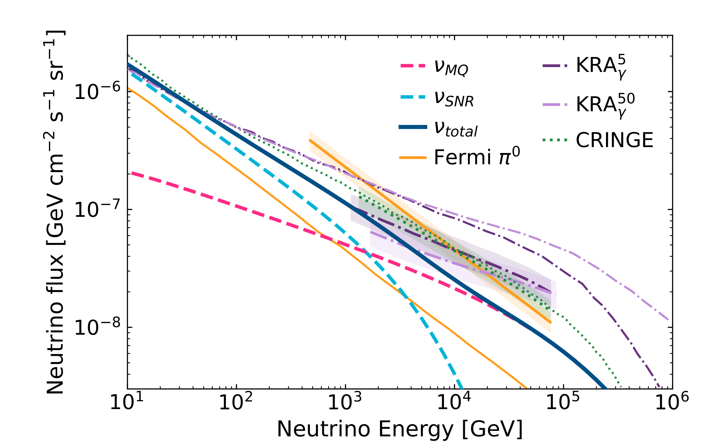
图注：Total predicted per-flavor Galactic diffuse neutrino spectra for the inner Galaxy (dark blue), decomposed into microquasar (light pink) and SNR (light blue) populations, compared with IceCube measurements and nominal spectra of Fermi-$\pi^0$, {\(\sc\) CRINGE}, KRA$_\gamma^5$ and KRA$_\gamma^{50}$ models~\(\citep{Abbasi:2026fkr}.\)
对应解读：对应“建议重点查看的图表”第1项，以及“关键图表逐图导读”中的图2：总中微子能谱与 IceCube 十二年数据对比、SNR/MQ 分量分解。
入选理由：这是支撑论文核心结论的最关键图：直接展示内银河每味弥散中微子通量、IceCube 测量点，以及微类星体和超新星遗迹两类源族群的分量。日报强调的高能端由微类星体抬升、低能端由 SNR 主导、交接能量是否在约 10 TeV 附近，都主要依赖这张图判断。
来源与置信度：\(arxiv_source\)；high；\(arxiv_source\) / sample701.tex:figure[2]
Fig03
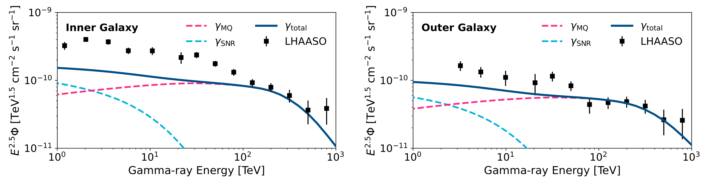
图注：Diffuse gamma-ray flux integrated over the inner (top) and outer (bottom) Galactic regions within $|b|\leq5^\circ$, compared with LHAASO measurements. The same sky mask as in~\(\cite{LHAASO:2024lnz}\) is applied.
对应解读：对应“建议重点查看的图表”第2项，以及“关键图表逐图导读”中的图3：弥散 gamma 射线能谱与 LHAASO 内外银河区域观测对比。
入选理由：这张图检验同一强子模型是否同时满足 gamma 射线约束，是避免只用中微子拟合得出片面结论的关键。它包含内银河和外银河、|b|≤5°、并说明使用与 LHAASO 相同的 sky mask，正好对应日报中要求检查高能端是否超出观测及天区/掩膜一致性的诊断。
来源与置信度：\(arxiv_source\)；high；\(arxiv_source\) / sample701.tex:figure[3]
Fig04
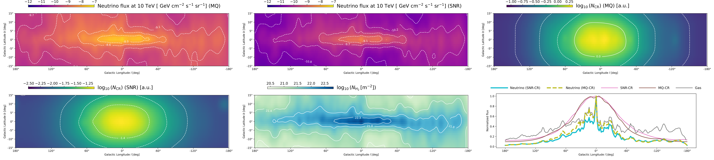
图注：Projected distributions in Galactic coordinates ($|l|<180^\circ$, $|b|<15^\circ$) predicted for microquasar (left column) and SNR (right column) populations associated with induced CR protons. The top row shows the neutrino flux emissivity templates at 10 TeV. The middle row shows the CR density distributions with arbitrary normalization. The bottom-left panel shows the interstellar gas density distribution. The bottom-right panel summarizes the corresponding 1D longitude profiles integrated over $|b|<15^\circ$. All maps are smoothed with a Gaussian kernel of $\sigma=1.1^\circ$.
对应解读：对应“建议重点查看的图表”第3项，以及“关键图表逐图导读”中的图4：银河坐标天空强度图、CR 密度、气体分布和经度剖面。
入选理由：这张图提供空间形态诊断，展示微类星体与 SNR 诱导宇宙线在 10 TeV 的中微子发射模板、CR 密度分布、气体靶分布以及经度剖面。它能支撑日报关于亮区是否追随气体柱密度、旋臂、银心或源族群分布的讨论，比单纯能谱图更能检验多族群模型的空间可区分性。
来源与置信度：\(arxiv_source\)；high；\(arxiv_source\) / sample701.tex:figure[4]
Fig01
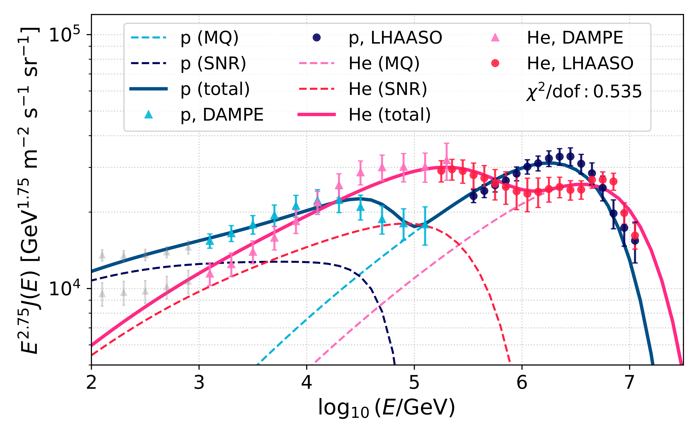
图注：Best-fit spectra for proton (blue) and helium (pink) components from microquasar (light dashed) and SNR (dark dashed) populations, compared against DAMPE (dark spot) \(\citep{DAMPE:2025opn}\) and LHAASO (light triangle) \(\citep{LHAASO:2025byy,LHAASO:2025mlf}\) observations. Sub-TeV data (gray) are excluded from the fit and displayed for completeness.
对应解读：对应“模型拟合”中关于本地宇宙线观测锚定、源族群注入谱和归一化约束的段落，也部分对应“建议重点查看的图表”第7项中的源族群参数和能量预算检查。
入选理由：虽然它不是中微子或 gamma 射线观测对比图，但它展示了微类星体和 SNR 对质子、氦宇宙线谱的最佳拟合分量，并与 DAMPE、LHAASO 宇宙线数据比较。日报强调作者是否真正将宇宙线注入锚定到本地观测，这张图正是判断后续弥散辐射预测是否物理自洽的重要基础。
来源与置信度：\(arxiv_source\)；high；\(arxiv_source\) / sample701.tex:figure[1]
强相关工作
这篇工作与 IceCube 的银河面高能中微子观测属于同类问题的理论解释和模板构建。应检索关键词 “IceCube Galactic plane neutrino diffuse emission 12 years template” 和 “Galactic diffuse neutrino emission cosmic rays”。如果要比较相反观点，可检索仅用超新星遗迹、KRA-gamma 类传播模型、或未分辨源解释 IceCube 银河信号的论文。
它也与 LHAASO 的银河弥散 \(\gamma\) 射线研究直接相关，因为任何强子中微子模型都会给出伴随 \(\gamma\) 射线。应检索关键词 “LHAASO Galactic diffuse gamma-ray emission PeV” 和 “hadronic gamma neutrino connection Galactic cosmic rays”。微类星体方面，应检索 “microquasar cosmic ray acceleration hadronic jets neutrinos” 和具体原型源如 SS 433、Cygnus X-1、Cygnus X-3。SS 433 是历史上最重要的银河喷流系统之一，也是理解微类星体强子加速的原型。
基础理论方面，相关工作包括弥散银河中微子预言、\(pp\) 碰撞次级粒子产额参数化、超新星遗迹激波加速以及银河宇宙线传播模型。检索关键词可用 “Kelner Aharonian Bugayov pp gamma neutrino spectra”、“diffusive shock acceleration supernova remnants cosmic rays”、“GALPROP diffuse gamma rays”。
同一事件 / 同类源线索：
相似工作：
基础理论 / 方法工作：
- https://arxiv.org/abs/astro-ph/0606058
- https://arxiv.org/abs/astro-ph/9807150
- https://arxiv.org/abs/0707.2379
相反观点 / 张力线索：
（未提供）
3. Galactic Electron-Positron Annihilation Emission from X-Ray Binaries with Transient and Persistent Jets
- 来源：arXiv / astro-ph.HE
- 链接：https://arxiv.org/abs/2608.21687v1
- 作者：Argen Gian Detoito, Henric Krawczynski
- 评分：novelty 7/10，importance 8/10，relevance 10/10，final 9.40/10
- 推荐理由：直接研究银河0.511 MeV正负电子湮灭线、X射线双星正电子贡献、全天图和COSI可检验热点，属于MeV伽马射线/高能天体物理高相关主题。
中文题目：带瞬变和持续喷流的 X 射线双星能否解释银河系电子-正电子湮灭辐射？
做了什么：这篇文章重新评估 X 射线双星对银河系 \(0.511\,\mathrm{MeV}\) 电子-正电子湮灭线的贡献。作者把带瞬变喷流和持续喷流的 X 射线双星、以及恒星耀发产生的正电子作为源项，用格林函数求解正电子在银河系介质中的传播和湮灭，生成全天 \(0.511\,\mathrm{MeV}\) 线辐射图和正电子连续谱。主要结论是：X 射线双星可以在若干方向产生可辨认热点，形态上有轻微的负银经、正银纬偏斜，但它们不能单独解释银河中心长期观测到的总湮灭通量。文章还指出，未来 COSI 有希望成像靠近 Cygnus X-1 的热点，其余热点需要角分辨率达到角分量级的更强康普顿望远镜。
为什么重要：银河 \(0.511\,\mathrm{MeV}\) 线是高能天体物理中持续数十年的问题：正电子从哪里来、如何传播、为何湮灭辐射在银心附近很强而盘面贡献有限。X 射线双星一直是热门候选，因为它们天然具备致密天体、强磁场、热冕、喷流和风，这些都可能产生并释放 \(e^{+}\)。这篇文章的重要性在于，它不是只比较总能量预算，而是把源的空间分布、正电子传播和可观测全天图像联系起来，给出可被下一代 \(\gamma\) 射线成像仪检验的热点预言。
理论 / 观测 / 仪器方法价值：对理论而言，本文把 Blandford-Znajek 相关喷流、热冕双光子产对、强磁场单光子产对等正电子源道统一放入银河传播框架，检验其能否满足通量和形态两类约束。对观测而言，文章给出 X 射线双星贡献应在哪里最明显的全天热点，而不仅仅是一个银河总注入率。对仪器和方法而言，它把 COSI 这类 MeV 康普顿望远镜的成像能力与具体天区、具体源类联系起来，说明什么样的角分辨率和灵敏度才能把 X 射线双星贡献从弥散背景中分离出来。
为什么应该关注：如果你关心银河正电子问题，这篇文章的核心信息是：X 射线双星仍然重要，但更可能是可测的局部或子主导贡献，而不是唯一答案。如果你做 MeV \(\gamma\) 射线观测，文中的热点预言可以直接转化为 COSI 及后续任务的目标选择和暴露时间规划。如果你研究喷流或致密双星反馈，这篇文章提醒我们，正电子注入不能只看源内产额，还必须看喷流释放、银河传播、湮灭环境和全天形态是否同时成立。
展开详细解读：文章讲解、背景、理论、重点章节、图表与相关工作
文章详细讲解
科学问题：银河系中持久的 \(0.511\,\mathrm{MeV}\) 线来自低能正电子与电子湮灭，是 INTEGRAL/SPI 等任务长期确认的高能天文信号。问题不在于单个正电子湮灭过程本身，而在于银河尺度的正电子预算和空间形态：哪些源能提供足够的 \(e^{+}\)，这些正电子是否能逃离源区进入星际介质，并在合适的环境中减速、形成正电子素或直接湮灭。X 射线双星很有吸引力，因为黑洞或中子星吸积系统既能产生相对论喷流，也有热冕和强磁场环境，理论上可通过多条通道生成正电子。
作者怎么做：论文将 X 射线双星划分为具有瞬变喷流和持续喷流的系统，并把银河恒星群体中的恒星耀发也作为比较项。正电子产生机制包括 Blandford-Znajek 型黑洞能量抽取相关的喷流产额、吸积冕中的双光子产对，以及强磁化致密天体附近的单光子产对。产生出来的正电子不是被简单假设就地湮灭，而是作为源项进入粒子输运方程。作者用格林函数求解传播问题，从而把离散源分布、注入率、能量损失、空间扩散或有效传播核映射到天空上的 \(0.511\,\mathrm{MeV}\) 线强度和正电子相关连续 \(\gamma\) 射线辐射。
关键结果：文章得到的全天图显示，X 射线双星贡献的湮灭形态有轻微不对称性，偏向负银经和正银纬；同时出现五个 \(0.511\,\mathrm{MeV}\) 热点。作者进一步检查单个源对这些热点的贡献，其中靠近 Cygnus X-1 的热点最有现实观测前景，COSI 可能具备成像能力。总体通量方面，X 射线双星无法单独提供银河观测到的全部电子-正电子湮灭辐射，因此需要其他源类共同贡献，或者需要对注入、逃逸和传播模型作出超出常规假设的修改。
局限和下一步：这类计算的最大不确定性来自正电子产额、喷流或风的逃逸效率、低能正电子在多相星际介质中的传播，以及源样本完整性。X 射线双星的活动占空比、瞬变喷流历史和实际正电子能谱并不容易从电磁观测唯一确定。下一步最关键的是用 COSI 等 MeV 成像观测检验热点预言，并用更高角分辨率任务分辨热点是否与特定 X 射线双星、源群或星际介质结构相联系。若热点未被发现，将强烈压低 X 射线双星的正电子逃逸贡献；若局部热点被确认，则可把 X 射线双星从“总预算候选”推进到“空间形态可检验源类”。
关键结果是怎么做出来的
本文的证据链首先建立在源样本与源类模型上。作者关注银河系 X 射线双星，特别是带瞬变喷流和持续喷流的系统，并把这些源在银河坐标中的位置、距离和可能的正电子注入率作为输运计算输入。由于摘要未给出完整源表数量，读者应在正文的数据或样本章节中重点核对：纳入了哪些黑洞 X 射线双星、中子星 X 射线双星和微类星体；距离缺失或不确定的源如何处理；瞬变源的占空比是否折算进平均注入率；Cygnus X-1 等亮源是否支配局部热点。
第二步是从注入到天空图的传播计算。作者使用格林函数求解粒子输运方程，相当于对每个离散源给出一个传播核，再把所有源的贡献线性叠加为银河全天 \(0.511\,\mathrm{MeV}\) 线图。这里的关键不是单个源能不能产生正电子，而是源项经过传播后在天空上的角分布是否仍保留局部热点，还是被弥散成接近银心或银盘的大尺度结构。应重点查看论文中的全天图、热点放大图和单源贡献分解表，它们支撑“存在五个热点”以及“形态轻微偏向负银经、正银纬”的结论。
第三步是通量归一化与观测可检验性。论文比较模型得到的 \(0.511\,\mathrm{MeV}\) 线通量与银河中心持久湮灭通量，结论是 X 射线双星不能单独解释总量。这个判断通常取决于正电子注入率、湮灭分数、正电子素形成比例、距离因子和仪器点扩散函数。读者应检查表格中每个热点的积分通量、角尺度、主导源，以及与 COSI 灵敏度和角分辨率的比较。特别是 Cygnus X-1 附近热点，文章认为它是最可能被 COSI 成像的案例，因此其信噪比估算和背景假设是全文最需要复核的部分。
统计与显著性方面，本文更像前瞻性模型预言，而不是对现有数据做正式源检出声明。所谓“可被 COSI 成像”应理解为在给定模型通量、暴露时间、背景水平和角分辨率下达到可分辨或可探测阈值，而不是已经从观测数据中发现热点。读者应区分模型亮度峰、仪器可检测源和实际统计显著性三者。若正文给出类似 \(\mathrm{S/N}\)、似然比或最小可检测通量，应检查它们是否包括 MeV 背景、源混淆、扩展源模板误差和能量响应。
系统误差的核心包括四类。第一，X 射线双星正电子产额的物理不确定性很大，不同产对机制可能给出数量级差异。第二，喷流或风中正电子是否逃入星际介质，而不是在源附近冷却或湮灭，是关键自由度。第三，低能正电子传播受磁场、湍流、电离气体和中性气体相结构影响，格林函数核的尺度会直接改变热点对比度。第四，源目录在银心和银面方向受吸收与混淆影响，遗漏源可能改变大尺度形态。稳健性检验应包括改变传播长度、注入谱、源权重、逃逸效率和仪器平滑尺度后，五个热点是否仍存在。
展开背景、理论、公式、模型、章节和图表导读
背景知识
研究对象是银河系 \(0.511\,\mathrm{MeV}\) 湮灭线。低能正电子与电子湮灭时可直接产生两条 \(0.511\,\mathrm{MeV}\) 光子，也可先形成正电子素，再通过双光子或三光子道衰变。天文观测中，线强度、线宽、正电子素连续谱以及角分布共同约束正电子的来源和湮灭环境。这个问题横跨核天体物理、高能双星、星际介质和 MeV 仪器学。
历史上，\(0.511\,\mathrm{MeV}\) 线的候选源包括 \(^{26}\mathrm{Al}\)、\(^{44}\mathrm{Ti}\)、\(^{56}\mathrm{Co}\) 等放射性核素衰变，Ia 型超新星，低质量 X 射线双星，脉冲星和磁星，宇宙线相互作用，甚至暗物质湮灭或衰变。困难在于许多源能给出足够的总正电子数，却难以同时解释银心强、银盘较弱、正电子注入能量不宜过高以及观测形态不完全跟随已知恒星质量或恒星形成示踪等约束。
X 射线双星之所以长期受到关注，是因为它们集中在银河盘和核球，且具有可加速粒子的吸积-喷流系统。黑洞 X 射线双星可在低硬态产生稳态喷流，在态转变时产生瞬变相对论抛射；中子星系统还可能引入强磁场和表面边界层。若喷流含有大量 \(e^{+}e^{-}\) 对，且其中一部分以低到中等能量逃逸，就可成为银河正电子源。但这条链条的每一环都有大不确定性。
现在值得重新看这个问题，有两个原因。第一，INTEGRAL/SPI 之后，MeV 天文学长期缺乏高角分辨率成像能力，导致很多源类只能用大尺度模板比较；COSI 等任务将改善线谱成像和全天巡天能力，使局部热点预言变得可检验。第二，X 射线双星目录、距离、喷流活动分类和银河结构模型不断更新，允许把源类模型从粗略总量估计推进到源到图像的正向建模。
常见误区之一是把“某类源的能量预算足够”直接等同于“它解释了 \(0.511\,\mathrm{MeV}\) 线”。实际上，正电子必须以合适能量逃逸、在传播过程中不过度产生连续 \(\gamma\) 射线，并在观测上给出正确形态。另一个误区是把 \(0.511\,\mathrm{MeV}\) 光子看成源区瞬时标记。低能正电子可能传播相当距离后才湮灭，因此湮灭图不一定逐点追踪注入源图。
基础理论 / 方法脉络
基础物理图像从正电子的产生、传播、减速和湮灭开始。X 射线双星中的正电子可来自强辐射场中的光子-光子碰撞、强磁场中的单光子产对，或黑洞自旋能抽取驱动的喷流。刚产生的正电子通常不是热的，它们需要通过库仑碰撞、电离损失、逆康普顿、同步辐射或绝热膨胀降低能量。只有当能量降到星际介质热或亚相对论范围时，\(0.511\,\mathrm{MeV}\) 线才会高效出现。
本文关心的关键量包括源的正电子注入率 \(Q_{+}\)、注入能谱 \(q(E)\)、源位置 \(\mathbf{r}_{i}\)、传播或扩散系数 \(D(E,\mathbf{r})\)、能量损失率 \(b(E,\mathbf{r})\)、湮灭时间尺度 \(\tau_{\rm ann}\) 和天空方向 \((l,b)\) 上的线强度 \(I_{511}(l,b)\)。这些量之间不是简单一一对应，因为传播核会把一个点源的贡献扩展成有限角尺度结构，多个源叠加后可能形成热点或弥散背景。
格林函数方法的思想是：先求一个单位脉冲源在给定传播模型下对任意位置和能量的响应，然后把真实源项作为许多脉冲或连续源的叠加。对于线性输运方程，这种方法很自然，尤其适合离散 X 射线双星目录。它能清楚地区分源模型的不确定性和传播模型的不确定性，也便于把每个热点拆解为若干主导源的贡献。
观测上，\(0.511\,\mathrm{MeV}\) 线不是只测一条谱线强度。实际需要考虑仪器能量响应、角响应、背景模型、源扩展形态和正电子素连续谱。康普顿望远镜通过重建多次散射事件的入射方向概率来成像，角分辨率和背景抑制决定它能否把一个靠近亮源的局部热点从银河弥散辐射中分离出来。COSI 对 Cygnus X-1 附近热点的潜在可检验性，正是这种模型-仪器连接的例子。
主要退化关系包括：较高注入率与较低逃逸效率可能给出相同线通量；较短传播长度与较强单源权重都会增强热点对比度；源距离误差会同时改变通量和角尺度；背景模板误差可能把弥散不对称误认为源类贡献。因此，判断 X 射线双星是否重要，不能只看总通量，而要同时看形态、热点、连续谱约束和与具体源位置的空间相关性。
公式与推导
第一步是写出正电子数密度 \(n_{+}(E,\mathbf{r},t)\) 的线性输运方程。一个常用形式是
这里 \(D\) 是扩散系数，\(b\equiv-\mathrm{d}E/\mathrm{d}t\) 是能量损失率，\(\tau_{\rm ann}\) 是湮灭时间，\(Q\) 是正电子源项。本文的 X 射线双星、恒星耀发和喷流注入都进入 \(Q\)。
第二步，把离散源写成源项叠加：
其中 \(\dot N_{+,i}\) 是第 \(i\) 个源的平均正电子注入率，\(q_i(E)\) 是归一化注入谱，\(S_i(t)\) 表示持续或瞬变活动历史，\(\mathbf{r}_i\) 是源位置。瞬变喷流与持续喷流的差别可通过 \(S_i(t)\) 或时间平均占空比体现。
第三步，格林函数 \(G\) 满足单位源响应：
其中 \(\mathcal{L}\) 代表上式输运算符。真实解可写为
这就是本文从源目录生成全天图的数学核心。
第四步，若采用稳态、均匀扩散和连续能量损失的简化极限，一个点源的空间核近似具有扩散长度
\(\lambda\) 控制热点是否被抹平：\(\lambda\) 小时图像接近源分布，\(\lambda\) 大时多个源会合并成弥散结构。
第五步，局域湮灭率密度可写为
这一步把传播后的正电子密度转换为可产生 \(0.511\,\mathrm{MeV}\) 光子的物理量。\(\tau_{\rm ann}\) 依赖气体相、电离度和温度，因此星际介质模型会影响线强度分布。
第六步，每次正电子湮灭产生的线光子数与正电子素比例 \(f_{\rm Ps}\) 有关：
第一项是直接湮灭，第二项是正电子素的仲态 \(\mathrm{para}\)-positronium 双光子衰变。该式把湮灭率转成 \(0.511\,\mathrm{MeV}\) 线光子产生率。
第七步，天空方向 \((l,b)\) 上的线强度为视线积分：
这里 \(s\) 是视线距离，\(1/(4\pi)\) 来自各向同性发射。全天图、热点和银经银纬不对称性都来自这个积分。
第八步，对于仪器观测，模型天空图还要与点扩散函数和有效面积卷积，得到预期计数：
\(\mu_k\) 是第 \(k\) 个数据 bin 的期望计数，\(T\) 是曝光时间，\(A_{\rm eff}\) 是有效面积，\(R_k\) 是能量和角响应，\(B_k\) 是背景。COSI 对热点的可探测性最终要通过类似关系评估。
第九步，若计数服从泊松统计，模型比较常用似然为
其中 \(n_k\) 是观测计数。热点模型相对于无热点或纯弥散模板的检验可用
在大样本和常规条件下，\(\sqrt{\mathrm{TS}}\) 常被近似解释为高斯显著性，但扩展源、边界参数和背景系统误差会使这种近似需要校准。
模型拟合 / 应用方法
本文这类工作首先要拟合或设定的是源项参数，而不是传统意义上的单一谱模型。每个 X 射线双星需要一个正电子注入率 \(\dot N_{+}\)、注入谱 \(q(E)\)、喷流占空比或活动历史、逃逸效率，以及距离和位置。持续喷流源可以用长期平均功率近似，瞬变喷流源则需要把爆发频率和单次抛射能量折算为时间平均注入。若这些量没有直接测量，通常需要用 X 射线光度、射电喷流功率或经验标度关系作为代理。
传播模型的拟合量包括扩散长度、能量损失环境、湮灭相分布和正电子素比例。严格地说，低能正电子在银河多相介质中的传播不一定能用单一扩散系数描述，因此实际模型常含有有效传播核。这个核的尺度与源权重高度退化：较大的传播长度会降低热点峰值、增加弥散背景；较高的单源注入率可以部分补偿热点变暗。读者在看结果时应关注作者是否探索了传播参数变化，而不是只给出一个基准模型。
若与观测数据拟合，似然通常在计数空间构建，需要同时拟合源模板、银河弥散模板、仪器背景和可能的各向同性分量。对 \(0.511\,\mathrm{MeV}\) 线，谱线窗口、邻近连续谱、正电子素三光子连续谱和仪器本底线都可能影响残差。判断一个热点是否真实，不能只看平滑图上的亮斑，还要看加入热点模板后泊松似然或 \(\chi^{2}\) 是否显著改善，残差是否在能量和角度上同时符合 \(0.511\,\mathrm{MeV}\) 线特征。
参数退化还包括距离与光度退化、源目录完整性与背景模板退化、喷流成分与注入谱退化。比如一个距离较近但注入率中等的源，可能在天空图上比一个远处高功率源更显著；银面附近的源又容易与弥散背景混淆。Cygnus X-1 附近热点之所以重要，是因为它把模型预言压缩到一个相对明确的方向，便于通过成像和源关联来打破部分退化。
模型失败的方式也很明确。若未来 COSI 没有看到预期的 Cygnus X-1 附近热点，并且灵敏度确实达到论文假设，那么 X 射线双星的正电子逃逸率或传播核就需要下调。若观测到热点但其谱线宽度、正电子素比例或空间形态与模型不符，则可能说明湮灭环境不同，或热点来自其他源类。若全天大尺度形态与 X 射线双星模板相关性很弱，则 X 射线双星只能作为局部贡献，而非银河 \(0.511\,\mathrm{MeV}\) 辐射的主导来源。
重点章节 / 结果段落怎么读
-
引言和问题设定：建议先看作者如何总结银河 \(0.511\,\mathrm{MeV}\) 线的观测约束，以及为什么重新评估 X 射线双星。重点不是候选源列表，而是总通量、核球-盘面形态、正电子注入能量和未来 MeV 成像能力这几条约束如何同时出现。
-
源样本与正电子产生模型：这一部分应仔细读源类划分。持续喷流、瞬变喷流、黑洞系统、中子星系统、恒星耀发是否采用不同注入效率？Blandford-Znajek、双光子产对、单光子产对是否只作为产额估计，还是进入了不同能谱和空间分布？这些假设直接决定最后全天图的归一化。
-
格林函数输运方法：这是全文方法核心。读者应看清输运方程中包含哪些物理过程，是否为稳态，是否假设均匀或分区的星际介质，边界条件如何设定，格林函数如何从单源响应叠加成全天图。如果正文有附录或数值验证，那里通常会说明传播核的尺度和计算精度。
-
全天图和热点结果：主结果应包括 \(0.511\,\mathrm{MeV}\) 线全天图、单源贡献分解、五个热点的位置和通量，以及总形态的轻微负银经、正银纬偏斜。读者应把图像与源表一起看，判断热点是由一两个源支配，还是由源群叠加形成。
-
与 COSI 及未来仪器的比较：讨论部分的重点是可检验性。作者认为 COSI 可能成像 Cygnus X-1 附近热点，而其他热点需要角分量级分辨率。读者应关注这是由通量限制、角分辨率限制还是背景限制主导，因为三者对应不同的后续仪器需求。
-
局限和稳健性检验：若论文有附录或参数变化测试，应优先查看正电子产额、传播长度、源距离、喷流占空比和背景处理的敏感性。全文结论“X 射线双星不能单独解释总通量”是否对这些变化稳定，是判断文章力度的关键。
建议重点查看的图表
-
X 射线双星和恒星耀发源分布图：看银经 \(l\)、银纬 \(b\) 上的源位置是否与热点和大尺度不对称对应，特别注意距离不确定源和银心附近源的处理。
-
\(0.511\,\mathrm{MeV}\) 线全天强度图：看色标是线性还是对数，是否经过仪器点扩散函数平滑，负银经和正银纬偏斜是否显著超过视觉色标效应。
-
五个热点的放大图或列表：检查每个热点的中心坐标、积分通量、角尺度、主导源和相对于银河弥散背景的对比度。
-
单源贡献分解表：重点看 Cygnus X-1 是否支配其附近热点，以及其他热点是否由少数源主导。如果热点由单源主导，源距离和喷流功率误差会特别重要。
-
正电子连续 \(\gamma\) 射线谱或强度图：看模型是否会在 MeV 连续谱上超过已有观测限制。若连续谱过强，即使线通量合适也会被排除。
-
仪器可探测性或 COSI 对比图：看模型通量与灵敏度曲线或最小可检测通量的比较，确认比较是否使用相同线宽、源扩展角和曝光时间。
-
参数变化或稳健性图：若有传播长度、注入率或逃逸效率扫描，应检查五个热点的位置和可见性是否稳定，而不是只在基准模型中出现。
关键图表逐图导读
图 1：如果论文首先给出源分布图，横轴通常是银经 \(l\)，纵轴是银纬 \(b\)，符号或颜色区分持续喷流、瞬变喷流、黑洞候选、中子星系统或恒星耀发背景。读图时不要只看源数密度，还要看亮源权重和距离，因为 \(0.511\,\mathrm{MeV}\) 通量大致受距离平方稀释影响。银面附近的密集源也最容易受到目录不完整和吸收选择效应影响。
图 2：全天 \(0.511\,\mathrm{MeV}\) 线图应是本文核心图之一。坐标为银河坐标，颜色表示强度或通量面密度，可能叠加热点轮廓或已知 X 射线双星位置。主要结论是模型形态略偏向负银经和正银纬，并出现多个局部增强。陷阱是色标和平滑尺度会显著改变视觉印象；必须检查图注中的卷积角分辨率和单位。
图 3：热点放大图或热点编号图应展示五个局部峰。读者应查看每个热点是否与一个明确源位置重合，还是位于多个源贡献的重心。若图中有模型等值线，等值线间隔可以揭示热点是否明显高于周围弥散背景。若热点角尺度接近或小于仪器点扩散函数，实际观测中可能无法可靠分辨。
图 4：单源贡献或累计贡献图通常可用柱状图、饼图或表格呈现。横轴可能是源名，纵轴是对某热点或总通量的贡献比例。这里要重点看是否存在少数源支配结果的情况。若 Cygnus X-1 占其热点的大部分通量，那么该热点同时是好检验对象和高系统误差对象，因为源的喷流成分、距离和历史活动会直接影响结论。
图 5：正电子产生的 \(\gamma\) 射线连续谱图若存在，横轴为能量，纵轴为能量通量或光子通量，模型线可分为不同源类或产对机制。关键是模型不能只匹配 \(0.511\,\mathrm{MeV}\) 线，还要避免在 MeV 连续谱上与已有背景测量冲突。读图陷阱是线通量和连续谱可能使用不同积分区域，不能直接比较归一化。
图 6：COSI 或未来望远镜可探测性图可能比较热点通量、源扩展角和仪器灵敏度。横轴可能是曝光时间、角尺度或线通量，纵轴可能是显著性或最小可检测通量。应确认作者对背景、能量分辨率、线宽和源扩展的假设。所谓“可成像”通常要求不只是达到总通量检出，还要有足够角分辨率把热点与银河弥散发射分开。
论文原图 / 可嵌入图片
（未提供 verified figure；为避免编造图片链接，本节只在能确认官方图片 URL 或成功提取论文原图时嵌入图片。）
强相关工作
这篇工作属于银河 \(0.511\,\mathrm{MeV}\) 正电子来源研究的一支，直接相关的是 INTEGRAL/SPI 对银河湮灭线的形态测量、正电子素比例和核球-盘面比约束。它与放射性核素、Ia 型超新星、脉冲星、磁星、暗物质和低质量 X 射线双星模板比较研究构成同一问题网络。检索关键词可用 “Galactic \(511\,\mathrm{keV}\) emission positron origin INTEGRAL SPI”， “positron annihilation X-ray binaries jets”， “MeV gamma-ray COSI \(511\,\mathrm{keV}\) hotspot”。
同类或历史相近工作通常从两个方向切入：一类估计某源类的总正电子注入率，另一类用模板拟合观测到的 \(0.511\,\mathrm{MeV}\) 全天形态。本文的特点是更强调 X 射线双星离散源经传播后形成的热点，因而与未来成像任务直接相连。潜在张力来自过去一些工作认为低质量 X 射线双星空间分布与 \(0.511\,\mathrm{MeV}\) 形态存在相关性，而另一些工作指出总通量、盘面贡献或注入能量约束使其难以成为唯一来源。检索时还应加入 “low mass X-ray binaries positrons”, “microquasar positron annihilation”, “Cygnus X-1 \(511\,\mathrm{keV}\)” 等关键词。
若要追溯基础理论，需要阅读正电子湮灭辐射综述、银河正电子来源综述、Blandford-Znajek 机制原始论文，以及关于康普顿望远镜 MeV 成像的仪器论文。本文涉及的源名 Cygnus X-1 是同一源上下文中最值得关注的对象；同源论文可检索 “Cygnus X-1 jet pair content”, “Cygnus X-1 MeV emission”, “Cygnus X-1 gamma-ray polarization”。
同一事件 / 同类源线索：
- https://arxiv.org/abs/2608.21687
- https://arxiv.org/pdf/2608.21687
- https://heasarc.gsfc.nasa.gov/docs/cgro/egret/511keV.html
相似工作：
- https://ui.adsabs.harvard.edu/abs/2011RvMP...83.1001P/abstract
- https://ui.adsabs.harvard.edu/abs/2008Natur.451..159W/abstract
基础理论 / 方法工作：
- https://ui.adsabs.harvard.edu/abs/1977MNRAS.179..433B/abstract
- https://ui.adsabs.harvard.edu/abs/1981ApJ...248..109R/abstract
相反观点 / 张力线索：
4. Pair Discharges and Radio Emission from Pulsar Magnetospheres
- 来源：arXiv / astro-ph.HE
- 链接：https://arxiv.org/abs/2608.21920v1
- 作者：Joonas Nättilä, Tuomo Salmi
- 评分：novelty 8/10，importance 8/10，relevance 8/10，final 9.00/10
- 推荐理由：用解析模型和含精确QED率的PIC模拟连接极冠pair discharge、场屏蔽和射电脉冲微结构，是脉冲星磁层微物理的重要理论进展。
中文题目：脉冲星磁层中的正负电子放电与射电辐射
做了什么：这篇文章研究脉冲星极冠间隙中正负电子级联放电如何自洽地产生非稳态等离子体和射电相关的电场振荡。作者提出一个解析的“并发”模型，把粒子加速、曲率辐射或量子电动力学过程、对产生和电场屏蔽放在同一个反馈回路中，并用一维第一性原理粒子模拟检验。核心结论是：间隙不是静态放电区，而会进入由局域等离子体频率和惯性修正控制的极限环振荡；在现实参数下，正负电子对重数可达 \(M_{\pm}\sim 10^4\)，振荡谱与脉冲星射电微结构的时间尺度相容。
为什么重要：脉冲星射电辐射的能量源通常被认为来自磁层电势降和相干等离子体过程，但从“微观对级联”到“宏观可观测射电脉冲结构”之间长期缺少可计算的桥梁。本文的重要性在于，它把间隙电场屏蔽、粒子惯性和对产生延迟导致的非线性振荡明确写成可检验的模型，并用含精确 \(\mathrm{QED}\) 率的 \(\mathrm{PIC}\) 模拟验证。
理论 / 观测 / 仪器方法价值：对理论而言，本文提供了一个从极冠放电微物理推导射电微结构特征频率的框架；对数值方法而言，它展示了如何在较现实等离子体参数下模拟脉冲星间隙的强非线性循环；对观测解释而言，它给出把微秒或亚毫秒射电结构同局域等离子体频率、对重数和间隙电势联系起来的诊断方式。
为什么应该关注：如果你关心脉冲星射电辐射机制、磁层等离子体供应、快速射电瞬变类比，或 \(\mathrm{PIC}\) 模拟如何接近真实中子星参数，这篇文章值得读。它不是简单声称“对级联会产生射电”，而是试图回答：放电为什么会间歇、振荡频率由什么决定、能否产生足够高的对重数，以及这些微观时间尺度是否真的落在射电微结构观测范围内。
展开详细解读：文章讲解、背景、理论、重点章节、图表与相关工作
文章详细讲解
科学问题：脉冲星极冠附近沿开放磁力线存在未被完全屏蔽的平行电场 \(E_{\parallel}\)，它可以把初级电子或正电子加速到超相对论能量，并通过高能光子触发磁场中的正负电子对产生。经典图像早已指出这种级联能为磁层提供等离子体，但真正困难的是非线性反馈：粒子越被加速，辐射和对产生越强；对越多，电荷密度越接近 Goldreich-Julian 所需值，\(E_{\parallel}\) 越被屏蔽；屏蔽后加速停止，等离子体又会流出并重新留下电荷亏空。本文要解决的正是这个放电循环的动力学问题，以及它能否自然产生脉冲星射电微结构所需的频率成分。
作者怎么做：文章先构造一个解析并发模型，把电场演化、粒子动量演化、对产生源项和等离子体屏蔽写成相互耦合的低维动力系统。这个模型强调“并发”而不是“顺序”：加速、辐射、对产生和屏蔽在同一时间窗口内相互作用，因此不能把级联简单看成一次性雪崩。随后作者进行一维沿磁力线的第一性原理 \(\mathrm{PIC}\) 模拟，使用精确 \(\mathrm{QED}\) 辐射和对产生率，并尽量采用接近真实脉冲星极冠的等离子体参数。这样做的价值是把解析模型中关于振荡频率、相位滞后和对重数的预测，与粒子层面的电荷、电流和场演化直接比较。
关键结果：解析模型预言系统进入极限环：\(E_{\parallel}\) 增长、粒子加速、对产生增强、等离子体密度上升并屏蔽电场，然后等离子体外流使电场再次恢复。振荡的基本频率由局域等离子体频率控制，但会受到相对论惯性和有效对重数的修正。模拟验证了这一点，并显示在合理极冠参数下可以得到 \(M_{\pm}\sim 10^4\) 的对重数。更重要的是，电场振荡的功率谱中出现与脉冲星射电微结构相容的频率范围，这为“射电微结构来自间隙放电本身的时变电场”提供了定量支撑。
局限和下一步：本文的一维设置适合研究沿磁力线的极冠放电和纵向电场屏蔽，但真实磁层是三维、弯曲、旋转且存在横向结构的系统。相干射电辐射如何从这些电场振荡转化为可逃逸的横电磁波，仍需要额外辐射机制和传播效应建模。边界条件、局域磁场曲率、表面离子或电子供应、广义相对论 frame dragging、以及外磁层回流电流都可能改变间隙循环。下一步应包括多维 \(\mathrm{PIC}\) 模拟、与全磁层电流闭合条件耦合，以及把模拟输出通过辐射转移或等离子体模转换模型映射到真实射电脉冲轮廓和微结构统计。
关键结果是怎么做出来的
本文最关键的证据链从样本和数据类型上说不是天文巡天样本，而是“解析模型加一维第一性原理数值实验”。作者选择极冠开放磁力线附近的局部通道作为计算域，追踪带电粒子、光子、对产生和电场的联合演化。事件数在这里对应的不是观测到的脉冲个数，而是模拟中多轮放电循环、产生的粒子统计、光子转化事件和电场时间序列。读者应重点看作者是否展示了足够多的循环周期，以排除只是在初始条件松弛阶段看到一次瞬态。
显著性或置信度的逻辑主要来自模型比较和时间序列诊断，而不是传统观测论文中的 \(p\)-value。解析模型给出振荡频率随局域等离子体密度、对重数和相对论惯性变化的标度；\(\mathrm{PIC}\) 模拟则测量电场峰值、粒子密度、对产生率和功率谱。若模拟峰值频率、相位关系和振荡幅度随参数变化都跟解析模型一致，就构成对极限环机制的支持。读者应查看频谱图、时间序列图和参数扫描表，而不应只看单个代表性模拟。
统计和似然方面，本文如果没有采用观测拟合中的显式似然，也仍然有可检验的模型比较：一类模型是静态或准稳态间隙，另一类是含惯性滞后的非线性极限环。支撑后者的关键诊断包括 \(E_{\parallel}\) 与粒子密度之间的相位差、对产生率峰值相对于电场峰值的延迟、振荡频率接近惯性修正后的 \(\omega_{\rm p}\)，以及不同初始条件下是否收敛到相似周期。若这些关系只在某一套精调参数下出现，结论会弱；若在较宽参数区间内出现，则说明机制稳健。
主要图表应包括放电时间序列、相空间或极限环轨道、频谱、对重数随参数变化、以及解析预测与模拟结果对比。系统误差主要来自一维几何、有限盒长、粒子数噪声、宏粒子权重、边界注入条件、辐射和对产生率的近似、以及是否真实覆盖中子星磁场强度和曲率半径。稳健性检验应看分辨率收敛、时间步长收敛、不同种子粒子或注入流量、不同 \(B\)、曲率半径和背景电流条件下结论是否保持。
这篇文章的最强结论不是“已经完整解释所有脉冲星射电辐射”，而是“极冠放电天然产生一个可量化的非稳态电场振荡源”。因此读者在评估时应把重点放在机制闭环是否成立：电场恢复是否来自电荷亏空，屏蔽是否来自对产生，频率是否由等离子体惯性而非数值边界设定，谱峰是否落在观测微结构范围，且对重数是否足以为外磁层供给等离子体。
展开背景、理论、公式、模型、章节和图表导读
背景知识
脉冲星是快速旋转、强磁化的中子星。旋转磁偶极在磁层中诱导电场，理想力自由或磁流体极限要求 \(\mathbf{E}\cdot\mathbf{B}\approx 0\)，但在极冠、狭缝间隙、外间隙或电流片等区域，电荷供应不足会产生沿磁场方向的非零电场。这个 \(E_{\parallel}\) 是高能辐射、粒子加速和等离子体补给的根源之一。
历史上，Goldreich 与 Julian 给出了共转磁层所需电荷密度的基本估计，Ruderman 与 Sutherland 提出了真空间隙和火花放电图像。这些模型解释了为什么极冠附近可能发生间歇级联，也启发了漂移子脉冲和射电微结构的讨论。但早期模型多是半解析或准静态的，对 \(E_{\parallel}\) 如何被成对等离子体动态屏蔽、放电是否周期性复燃、以及频谱如何连接观测，缺少自洽处理。
近十多年，全球磁层 \(\mathrm{PIC}\) 模拟和局部间隙 \(\mathrm{PIC}\) 模拟让这个问题重新变得可解。全球模拟能描述电流闭合和磁层结构，但通常无法解析真实对级联微物理；局部模拟能处理 \(\mathrm{QED}\) 放电，却需要简化几何和边界。本文处于这两者之间的关键位置：它关注局部极冠放电，但目标是提炼出可向宏观观测外推的解析标度。
现在重新看这个问题还有一个原因：射电脉冲的微结构、纳秒巨脉冲、快速射电暴类源的相干辐射问题都迫使我们理解强磁化等离子体如何产生快速、相干、强亮温信号。虽然普通脉冲星和快速射电暴不必共用完全相同机制，但“强磁场、对等离子体、非稳态电场、相干辐射”这些要素高度重叠。极冠放电若能给出自然时间尺度和能量源，就会成为更广泛相干辐射理论的基准。
该领域常见误区包括：第一，把对级联看成一次性静态过程，而忽略屏蔽后的复燃；第二，把高对重数直接等同于强射电辐射，实际上还需要相干机制和可逃逸模；第三，把局域等离子体频率简单代入观测频率，却忽视相对论惯性、传播、Doppler 因子和密度梯度；第四，把一维模拟结果过度解释为完整脉冲轮廓模型。本文的价值和边界都应在这些误区中理解。
基础理论 / 方法脉络
基础物理图像从旋转导体开始：中子星磁场随星体转动，磁层若要近似共转，就需要某种电荷密度来抵消沿磁力线的电场。若局部电荷密度偏离所需值，Gauss 定律会留下 \(E_{\parallel}\)，带电粒子被加速并获得洛伦兹因子 \(\gamma\)。在强磁场和弯曲磁力线上，这些粒子通过曲率辐射或其他高能辐射产生 \(\gamma\)-射线，高能光子再在强磁场中转化为 \(e^+e^-\) 对。
对级联的关键不是单个粒子能量，而是反馈。初级粒子越快，辐射光子越硬；光子越硬，对产生越有效；对越多，电荷密度和电流越容易满足磁层需求，从而屏蔽加速电场。若屏蔽是瞬时且无惯性的，系统可能趋向平衡；但真实等离子体有惯性，粒子产生也有延迟，因此系统很容易过冲，形成电场和密度的振荡。这就是本文解析模型的物理核心。
本文使用的关键量包括平行电场 \(E_{\parallel}\)、局域数密度 \(n\)、Goldreich-Julian 密度 \(n_{\rm GJ}\)、对重数 \(M_{\pm}\)、等离子体频率 \(\omega_{\rm p}\)、惯性修正后的振荡频率、以及电场时间序列的功率谱。\(M_{\pm}\) 通常衡量每个初级粒子最终产生多少二级正负电子，它决定磁层能否获得足够电荷和电流，但并不单独决定射电亮度。
观测联系主要通过时间尺度和谱结构建立。若局域放电振荡频率经过几何、相对论运动和传播效应转换后落在射电微结构对应的时间范围，说明极冠放电可以作为微结构时钟或驱动源。这里要注意退化关系：同一个观测微结构时间尺度可能由不同高度、不同等离子体密度、不同 Lorentz 因子和不同辐射束几何产生，因此不能只用频率匹配证明机制唯一。
数值方法方面，\(\mathrm{PIC}\) 模拟把等离子体表示为宏粒子，电磁场在网格上演化，粒子受 Lorentz 力推进，并按概率采样辐射和对产生过程。主要系统误差来自有限粒子数噪声、网格尺度、时间步长、边界条件、一维近似和宏粒子权重。对这类工作，最重要的不是单个漂亮放电事件，而是解析标度、数值收敛和参数扫描能否一致支持同一动力学图像。
公式与推导
第一步是共转磁层所需电荷密度。对角速度为 \(\boldsymbol{\Omega}\)、磁场为 \(\mathbf{B}\) 的近似共转磁层，Goldreich-Julian 电荷密度可写成
其中 \(c\) 是光速。若实际电荷密度 \(\rho\) 不能跟上 \(\rho_{\rm GJ}\)，就会产生沿磁场的电场。
第二步由 Gauss 定律给出间隙电场的源项。在沿磁力线坐标 \(s\) 的一维近似下，
这说明电场增长的根源是电荷亏空或过剩，而不是任意外加振荡。本文的极限环正是围绕 \(\rho-\rho_{\rm GJ}\) 的符号和幅度变化展开。
第三步是粒子加速。忽略横向运动时，粒子动量 \(p\) 满足
其中 \(q\) 是粒子电荷，\(F_{\rm rad}\) 是辐射反作用力。若短时间内 \(F_{\rm rad}\) 较小，粒子能量增长率近似为 \(d(\gamma m_ec^2)/dt\simeq qE_{\parallel}c\)。
第四步是曲率辐射给出高能光子尺度。沿曲率半径为 \(R_{\rm c}\) 的磁力线运动时，特征光子能量为
其中 \(\hbar\) 是约化 Planck 常数，\(\gamma\) 是粒子 Lorentz 因子。这个关系显示 \(\gamma\) 的小变化会显著改变触发对产生的能力。
第五步用源项描述对产生导致的密度增长。可将正负电子数密度 \(n_{\pm}\) 的演化概括为
其中 \(v_{\pm}\) 是粒子速度，\(S_{\pm}\) 是由辐射和磁场对产生决定的源项。本文模拟中这个源项由更精确的 \(\mathrm{QED}\) 率实现。
第六步定义对重数，它是连接微观级联和宏观磁层供给的量：
其中 \(N_{e^-}\) 与 \(N_{e^+}\) 是级联产生并流出的电子、正电子数，\(N_{\rm primary}\) 是初级粒子数。本文得到的 \(M_{\pm}\sim 10^4\) 表明放电可提供很高等离子体负载。
第七步是等离子体振荡的基本频率。非相对论冷等离子体中
其中 \(n\) 是数密度，\(e\) 是元电荷，\(m_e\) 是电子质量。若粒子具有相对论惯性，常见修正标度为
其中 \(\gamma_{\rm eff}\) 表示参与振荡粒子的有效 Lorentz 因子。本文所说“由局域等离子体频率并受惯性修正控制”可用这一类关系理解。
第八步把电场时间序列变成可和射电微结构比较的频谱。若模拟输出为 \(E_{\parallel}(t)\)，功率谱可定义为
谱峰位置检验振荡频率，谱宽反映放电间歇性和非线性。若 \(P_E(\omega)\) 的主峰随 \(n\) 和 \(\gamma_{\rm eff}\) 按 \(\omega_{\rm eff}\) 标度移动，就支持本文的解析模型。
第九步是用残差或模型比较检验解析预测。可定义模拟频率 \(\omega_i^{\rm sim}\) 与模型频率 \(\omega_i^{\rm model}\) 的加权偏差
其中 \(i\) 标记不同参数运行，\(\sigma_i\) 是频率测量或数值不确定度。即使论文不以传统 \(\chi^2\) 为核心，这种诊断也说明读者应如何判断“解析模型被模拟验证”的强弱。
模型拟合 / 应用方法
这类论文的拟合对象首先是模拟输出而非望远镜光变曲线。可拟合的量包括放电周期、\(E_{\parallel}\) 峰值、平均对重数 \(M_{\pm}\)、对产生率峰值、密度峰值、以及电场功率谱主峰和谱宽。解析模型提供参数化预测，例如振荡频率随 \(n\)、\(\gamma_{\rm eff}\)、背景电流和间隙尺度变化；\(\mathrm{PIC}\) 结果则给出这些量的测量值和数值误差。
如果采用显式统计框架，似然可以建立在时间序列或摘要统计量上。对频谱而言，可比较模拟功率谱 \(P_E(\omega)\) 与模型谱峰 \(\omega_{\rm model}\)；对时间域而言，可比较电场、密度和源项之间的相位差。参数估计的关键不是得到唯一最佳值，而是验证标度关系是否成立，例如 \(\omega\) 是否近似按惯性修正等离子体频率变化。
主要退化关系包括：较高密度 \(n\) 会提高 \(\omega_{\rm p}\)，但较高有效 Lorentz 因子 \(\gamma_{\rm eff}\) 会通过惯性降低频率；更强磁场 \(B\) 和更小曲率半径 \(R_{\rm c}\) 会增强高能光子产生和对产生，但也可能更快屏蔽电场；边界注入电流和表面电荷供应会改变间隙是否形成。这些退化意味着不能只根据一个频率或一个 \(M_{\pm}\) 反推唯一极冠条件。
系统误差需要严肃看待。有限粒子数会在功率谱中引入噪声峰；网格和时间步长可能人为限制最高频率；一维边界可能反射波或固定放电尺度；宏粒子权重可能影响稀有高能光子统计；局部盒子模拟无法自洽决定全球电流。好的稳健性检验应包括分辨率变化、盒长变化、随机种子变化、不同注入条件和不同 \(\mathrm{QED}\) 率实现。
实际应用上，若模型可靠，可以把观测到的微结构时间尺度作为极冠等离子体密度和对重数的间接诊断。但这种应用必须同时考虑发射高度、相对论束流、传播色散、偏振模耦合和几何扫描效应。更现实的拟合路径是：先用本文类型的局部模型给出放电源项和时变电流，再输入全磁层或辐射转移模型，最后与单脉冲微结构、偏振和频率依赖性联合比较。
模型可能失败的地方也很清楚：如果真实射电微结构主要由传播透镜、磁层湍流、发射束几何切割或外磁层重联控制，那么极冠放电频率只会是底层噪声源之一；如果多维效应使放电碎裂成横向火花网络，一维极限环频率也可能被横向耦合改写。因此本文应被看作强有力的微物理模块，而不是完整观测现象学的终点。
重点章节 / 结果段落怎么读
数据/模拟设置：读者应首先看计算域、边界条件、磁场强度、曲率半径、初始粒子注入和 \(\mathrm{QED}\) 过程如何实现。特别要确认一维近似代表的是沿开放磁力线的局部极冠通道，而不是整个磁层。
解析模型：这一部分应重点读电场、粒子密度、对产生源项和惯性项如何耦合。关键是作者如何从这些方程得到极限环，以及振荡频率为什么不是任意数值盒子的本征频率，而是接近惯性修正的局域等离子体频率。
主结果：重点看时间序列和频谱。电场峰值、粒子密度峰值、对产生率峰值之间的先后顺序，是判断反馈闭环是否成立的核心。对重数 \(M_{\pm}\sim 10^4\) 的取得条件也应仔细核对。
参数扫描和模型验证：如果论文给出不同磁场、曲率半径、电流或初始条件下的运行结果，应检查频率标度和对重数趋势是否与解析模型一致。单个 fiducial run 只能说明可能性，参数扫描才说明机制普适性。
讨论与局限：最后读作者如何连接射电微结构，并注意他们是否区分“产生电场振荡”与“产生可逃逸相干射电波”。这一区分决定了本文结论的边界。
建议重点查看的图表
-
放电时间序列图：看 \(E_{\parallel}\)、粒子密度、对产生率和电流随时间的相位关系，确认是否存在重复极限环而非单次瞬态。
-
相空间或极限环图：看 \(E_{\parallel}\) 与 \(n\) 或源项之间是否形成闭合轨道，判断惯性滞后是否是振荡根源。
-
电场功率谱图：看主峰频率、谱宽和高频尾，并与惯性修正的 \(\omega_{\rm p}\) 预测比较。
-
对重数 \(M_{\pm}\) 的参数依赖图或表：看 \(M_{\pm}\sim 10^4\) 是普遍结果还是只在特定极端参数下出现。
-
解析模型与 \(\mathrm{PIC}\) 模拟对比图：看数据点是否沿模型线分布，误差条或散布是否随参数系统偏离。
-
数值收敛或稳健性诊断：看分辨率、时间步长、粒子数、盒长和边界条件改变后，频率与对重数是否稳定。
关键图表逐图导读
图 1：通常应是物理示意或模型结构图。横向可能展示沿开放磁力线的极冠间隙，标出 \(E_{\parallel}\)、初级粒子、曲率光子和 \(e^+e^-\) 对。读图时不要把示意中的空间尺度当成真实比例，重点看反馈方向：电场加速、辐射触发对产生、对等离子体屏蔽电场、外流后电场恢复。
图 2：应重点关注时间序列。横轴一般是归一化时间或物理时间，纵轴可能分别为 \(E_{\parallel}\)、\(n\)、\(S_{\pm}\) 和电流。关键结论是峰值是否周期性出现，以及密度和源项是否相对电场有延迟。读图陷阱是初始阶段可能包含数值松弛，应看后期准周期段。
图 3：若为相空间图，坐标轴可能是 \(E_{\parallel}\) 与 \(n/n_{\rm GJ}\) 或 \(E_{\parallel}\) 与粒子动量。模型线或箭头显示系统沿闭合轨道演化。主要结论是放电不是静态平衡，而是极限环。陷阱是二维投影可能隐藏其他变量，因此应结合时间序列一起判断。
图 4：若为功率谱，横轴为频率 \(\omega\) 或 \(f\)，纵轴为 \(P_E\) 或归一化功率。数据点或曲线来自 \(\mathrm{PIC}\) 的电场时间序列，竖线或阴影可能表示解析预测的 \(\omega_{\rm eff}\)。应看主峰是否随等离子体参数移动，而不只是某个固定频率峰。
图 5：若为参数扫描，横轴可能是 \(B\)、\(R_{\rm c}\)、背景电流、注入率或 \(n/n_{\rm GJ}\)，纵轴为 \(M_{\pm}\)、频率或电场幅度。关键是趋势是否单调、是否有阈值，以及 \(M_{\pm}\sim 10^4\) 的区域是否物理合理。陷阱是归一化单位可能掩盖真实中子星参数范围。
图 6：若为收敛或残差图，应看不同分辨率和粒子数下的曲线是否重合。若高频谱尾或小幅振荡随数值设置大幅改变，说明相应细节不稳健；若主振荡频率和平均对重数稳定，则核心结论更可信。
论文原图 / 可嵌入图片
Fig08
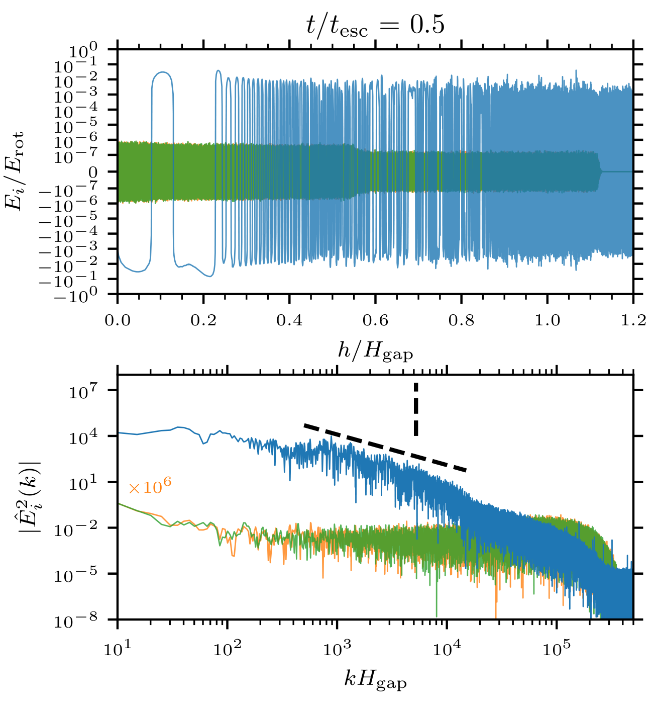
图注：Top panel shows the electric field oscillations in the gap for $E_h$ (blue), $E_y$ (orange), and $E_z$ (green). Bottom panel shows the Fourier spectra of the electric field for $|\hat{E}_h|^2$, $|\hat{E}_y|^2$, and $|\hat{E}_z|^2$ ($y$ and $z$ components are shifted by $\times10^6$). Spectra have slopes of $|\hat{E}_h|^2 \propto k^{-2}$ (tilted dashed line), $|\hat{E}_y|^2 \propto k^{0}$, and $|\hat{E}_z|^2 \propto k^{0}$. The characteristic oscillation wavenumber $k_\mathrm{osc} = \omega_\mathrm{osc}/c$ (computed for $M_\pm = 5 \times 10^2$ and $\langle\gamma^{-3}\rangle = 10^{-3}$ which are measured from the simulation at $t = 0.5 t_\mathrm{esc}$) is shown by the vertical dashed line; it corresponds roughly to the maximum oscillation frequency excited by the discharge.
对应解读：对应“建议重点查看的图表”第3项电场功率谱图，以及“关键图表逐图导读”图4和模型拟合段落中关于主峰频率、谱宽、高频尾与惯性修正等离子体频率比较的讨论。
入选理由：这是候选图中唯一直接给出电场振荡时间序列和傅里叶功率谱的图，并且标出了由模拟测得的对重数和等离子体惯性计算出的特征振荡波数 \(k_osc\)，可直接检验解析频率预测是否与 PIC 输出一致，是支撑射电微结构频率解释的核心证据。
来源与置信度：\(arxiv_source\)；high；\(arxiv_source\) / main.tex:figure[8]
Fig02
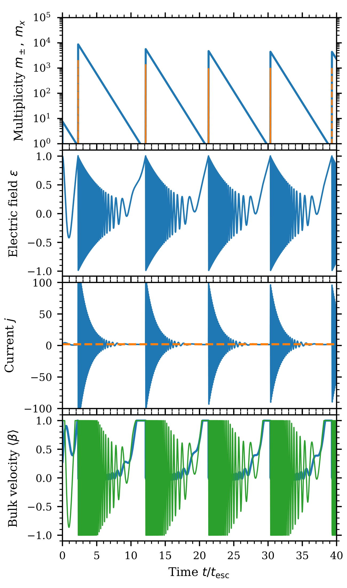
图注：Numerical solution of the analytic discharge model for the fiducial parameters $\alpha = 2$, $t_x = t_\pm = 10^{-3} t_\mathrm{esc}$, $t_\mathrm{acc} = 4\times 10^{-8} t_\mathrm{esc}$, and $\langle \gamma^{-3} \rangle = 8 \times 10^{-8}$. Top panel shows the plasma (blue curve) and photon (orange dashed) multiplicities. Second panel shows the electric field. Third panel shows the electric current (blue) and $\alpha$ (orange dashed). Bottom panel shows the bulk flow velocity $\langle \beta \rangle = \pm j/m_\pm$ (blue) and its proxy $\varepsilon (t_\mathrm{esc}/t_\mathrm{acc}) \langle \gamma^{-3} \rangle$ (green); both are capped at the physical bound $|\beta| = 1$.
对应解读：对应“建议重点查看的图表”第1项放电时间序列、第2项极限环诊断，以及“关键图表逐图导读”图2和解析模型与模拟对比相关段落。
入选理由：该图展示解析放电模型中等离子体/光子对重数、电场、电流和流速随时间的联动，最适合说明电场增长、对产生、屏蔽和恢复组成重复放电循环，而非单次瞬态。它还明确呈现电场、密度和电流之间的相位关系，是理解极限环机制的基础图。
来源与置信度：\(arxiv_source\)；high；\(arxiv_source\) / main.tex:figure[2]
Fig05
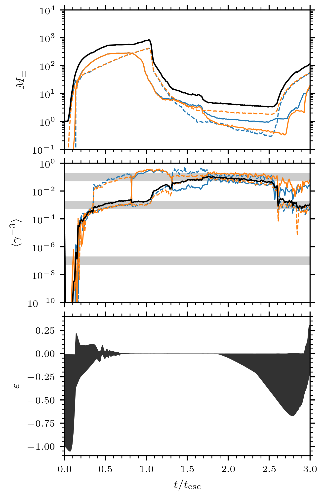
图注：Measurements of the discharge region quantities from a full kinetic simulation during the first pair cascade event. Top panel shows the local peak multiplicity $M_\pm$ found in the gap zone (solid black curve). Multiplicities of electrons (blue) and positrons (orange) are also shown with a split between upwards (solid curves) and downwards (dashed) moving particle populations. The second panel shows the inverse plasma inertia $\langle \gamma^{-3}\rangle$ measured at the location coinciding with the peak total multiplicity. Three bands are highlighted as characteristic values: ignition phase with $\langle \gamma^{-3} \rangle \sim 10^{-7}$, saturation $\sim
0.1$. Third panel shows the minimum and maximum values of the electric field.
对应解读：对应“建议重点查看的图表”第4项对重数参数或测量诊断，以及模型拟合段落中关于平均对重数 M_±、等离子体惯性和电场峰值作为模拟摘要统计量的讨论。
入选理由：该图从完整 kinetic/PIC 模拟中测量局部峰值对重数 M_±、电子/正电子贡献、等离子体惯性指标
来源与置信度：\(arxiv_source\)；high；\(arxiv_source\) / main.tex:figure[5]
Fig03
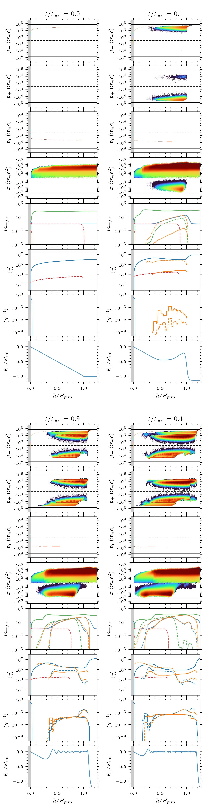
图注：Simulation snapshots of the discharge cycle at $t/t_\mathrm{esc} = 0$ (\textbf{1st column}), $0.1$ (\textbf{2nd column}), $0.3$ (\textbf{3rd column}), and $0.4$ (\textbf{4th column}) for $\alpha = 2$. \(\textbf{Rows 1--4:}\) Particle phase space, $\mathrm{d} n(p)/\mathrm{d} \log p$ (where $p = \gamma\beta$), for electrons (1st row), positrons (2nd), and protons (3rd), and the photon energy spectrum, $x \,\mathrm{d} n_x(x)/\mathrm{d} \log x$ (4th). The values range from low to high as blue to green to red. Vertical thin lines show the $\gamma_\mathrm{gap}$, $\gamma_\mathrm{rad}$, and $x_\mathrm{curv}$ values and the dashed lines the $p = 0$ value. \(\textbf{5th row:}\) Multiplicity of the electrons (blue curve), positrons (orange), and high-energy photons with $x > 2$ (green) for rightwards (solid curves) and leftwards (dashed) moving particles. \(\textbf{6th row:}\) Mean Lorentz factor of electrons (blue) and positrons (orange). \(\textbf{7th row:}\) Inverse plasma-inertia measure, $\langle \gamma^{-3} \rangle$. \(\textbf{8th row:}\) Gap electric field $E_\parallel$ in units of $E_\mathrm{rot}$.
对应解读：对应“建议重点查看的图表”第2项相空间或极限环图，以及“关键图表逐图导读”图3中关于粒子动量、密度、惯性和 \(E_parallel\) 在放电周期中演化的讨论。
入选理由：该图以多个时间快照展示电子、正电子、质子和光子的相空间/能谱、粒子对重数、平均 Lorentz 因子、
来源与置信度：\(arxiv_source\)；high；\(arxiv_source\) / main.tex:figure[3]
Fig04
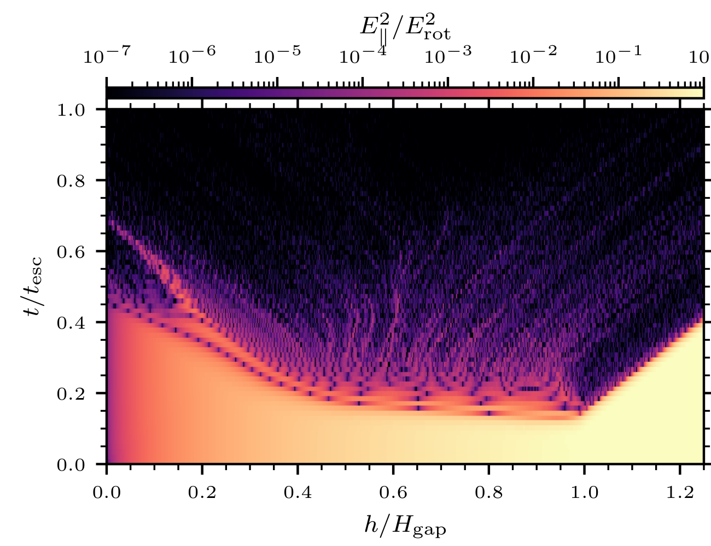
图注：Space-time visualization of the squared electric field $E_\parallel^2/E_\mathrm{rot}^2$ during the first discharge. The excited oscillations are visible as stripes at $t > 0.2 t_\mathrm{esc}$.
对应解读：对应“建议重点查看的图表”第1项放电时间序列和第3项电场振荡诊断，以及“关键图表逐图导读”中关于后期准周期电场振荡的讨论。
入选理由：该图用时空图显示 \(E_parallel^2\) 在首次放电后的条纹状振荡，能直观看出放电激发的波动并非局域瞬时噪声，而是在空间和时间上传播/持续的结构。它对频谱图 Fig08 起到空间结构补充作用。
来源与置信度：\(arxiv_source\)；high；\(arxiv_source\) / main.tex:figure[4]
Fig01

图注：Schematic visualization of the pulsar magnetosphere (thin black curves), the studied electric circuit (thick orange curve), and the relevant circuit components (see text). We simulate the one-dimensional circuit from point a to b.
对应解读：对应“关键图表逐图导读”图1中关于极冠间隙、电路路径和反馈结构的物理示意说明。
入选理由：该图是磁层和一维模拟电路的示意图，有助于读者理解模拟区域从 a 到 b 的几何设定及其与脉冲星磁层的关系。不过它不包含时间序列、频谱、对重数或模型检验量，科学诊断价值低于放电动力学和功率谱图。
来源与置信度：\(arxiv_source\)；high；\(arxiv_source\) / main.tex:figure[1]
强相关工作
这篇工作与脉冲星极冠间隙理论的经典脉络直接相连，尤其是 Goldreich-Julian 共转电荷密度、Ruderman-Sutherland 真空间隙火花、以及后来的空间电荷受限流和非稳态对级联模型。检索关键词可用 “pulsar polar cap pair cascade”, “pulsar gap discharge”, “Goldreich Julian density”, “Ruderman Sutherland spark”, “time dependent pair cascade”。
它也与现代 \(\mathrm{PIC}\) 磁层模拟和局部放电模拟相邻。全球 \(\mathrm{PIC}\) 研究关心电流闭合、Y 点、电流片和整体自洽对注入；局部研究则能更精确处理 \(\mathrm{QED}\) 放电和极冠微物理。本文更接近后者，但它试图给前者提供可参数化的等离子体供应和时变电流源。检索关键词可用 “global PIC pulsar magnetosphere pair creation”, “local PIC polar cap discharge”, “QED PIC pulsar”.
潜在张力来自射电辐射机制本身：电场振荡并不自动等于可逃逸相干射电辐射。相干曲率辐射、等离子体 maser、天线机制、强湍流和传播调制都可能解释部分微结构。读者应把本文放在“放电时钟和能量源”的层面，而不是把它直接等同于完整射电发射模型。检索关键词可用 “pulsar radio microstructure coherent emission”, “pulsar radio emission mechanism review”, “plasma emission pulsar magnetosphere”。
同一事件 / 同类源线索：
相似工作：
（未提供）
基础理论 / 方法工作：
- https://ui.adsabs.harvard.edu/abs/1969ApJ...157..869G/abstract
- https://ui.adsabs.harvard.edu/abs/1975ApJ...196...51R/abstract
相反观点 / 张力线索：
（未提供）
5. Correlation of gamma-ray and optical variability of BL~Lacertae during the period of high blazar activity
- 来源：arXiv / astro-ph.HE
- 链接：https://arxiv.org/abs/2608.22046v1
- 作者：Marina S. Butuzova, Mark A. Gorbachev
- 评分：novelty 6/10，importance 7/10，relevance 10/10，final 8.75/10
- 推荐理由：BL Lacertae高活动期伽马与光学相关性研究，支持SSC零时延并解释孤立耀发；单源结果重要性中等，但属于伽马射线blazar核心方向。
中文题目：BL Lacertae 高活动期中伽马射线与光学变光的相关性
做了什么：这篇文章用 \(Fermi\)-LAT 伽马射线光变曲线和 TESS/地面光学数据研究 BL Lacertae 在 2022 年 9 月约日尺度上的多波段变光，并把时间基线扩展到 2022 年 4 月至 2023 年 9 月的高活动尾声。作者用离散相关函数 \(\mathrm{DCF}\) 检验伽马射线和光学通量之间的时滞，发现主要相关峰位于零时滞，支持同一电子群在同一区域产生同步辐射光学光子并通过同步自康普顿过程产生伽马射线。长时间段中 \(\mathrm{DCF}\) 还出现约 \(12\) 天的次峰；作者认为这不是一个稳定的物理时滞，而是由某一波段额外的孤立耀发叠加到零时滞相关耀发上造成的相关函数假峰。文章进一步用沿喷流传播、磁场衰减并伴随辐射冷却的高能电子团解释这种“孤儿”耀发。
为什么重要：BL Lacertae 是 BL Lac 型耀变体的原型源，处在高活动期时，多波段耀发的相对时序直接约束喷流中辐射区的位置、粒子注入、磁场演化和高能辐射机制。零时滞相关常被视为同步自康普顿图像的证据，但相关函数中的非零时滞峰很容易被解释过度；本文的重要性在于它把一个看似 \(12\) 天延迟的信号拆解为由额外耀发导致的统计结构，提醒读者不要把所有 \(\mathrm{DCF}\) 次峰都当成喷流传播时标或辐射区分离的直接证据。
理论 / 观测 / 仪器方法价值：对理论建模而言，本文给出一个具体案例：同一源在同一高活动阶段可同时呈现零时滞的共区辐射和单波段额外耀发，简单的一团一时区模型不足以解释全部细节。对观测分析而言，它展示了用 TESS 的高节奏光学光变结合 \(Fermi\)-LAT 长基线伽马射线监测来识别相关峰真伪的方法价值。对方法论而言，文章强调 \(\mathrm{DCF}\) 峰的位置和显著性必须结合光变曲线形态、耀发分解和采样窗口共同解读。
为什么应该关注：如果你关心耀变体喷流中伽马射线到底来自同步自康普顿、外康普顿，还是多区叠加过程，这篇文章是一个很好的“相关性诊断如何被误读”的实例。它不是只报告相关系数，而是追问一个非零时滞峰是否真的需要新物理。对于做时域天文、AGN 喷流、多波段监测或相关函数分析的人，本文的价值在于把物理解释和统计陷阱放在同一个具体源上检验。
展开详细解读：文章讲解、背景、理论、重点章节、图表与相关工作
文章详细讲解
科学问题：BL Lacertae 在 2020 年代初经历了持续的高活动阶段，伽马射线和光学波段都出现强烈耀发。核心问题不是简单地问“两个波段是否一起变亮”，而是问它们在日尺度和年尺度上是否具有稳定时滞。如果光学同步辐射和伽马射线辐射来自同一群相对论电子、同一空间区域，最自然的预期是接近零时滞；如果高能辐射区和光学辐射区沿喷流分离，或者粒子冷却、加速、传播时标起主导作用，则可能出现可测的非零时滞。
作者怎么做：文章选择两个互补时间尺度。第一是 2022 年 9 月 BL Lacertae 位于 TESS 视场内的短时间窗口，TESS 提供高采样率光学光变，适合研究约 \(1\) 天尺度上的快速相关性；伽马射线部分来自 \(Fermi\)-LAT 的光变曲线。第二是 2022 年 4 月至 2023 年 9 月的长时间段，覆盖高活动阶段末期的伽马射线耀发。作者用离散相关函数 \(\mathrm{DCF}\) 处理不均匀采样和不同误差水平的两条光变曲线，并比较短基线和长基线中相关峰的结构。
关键结果：短时间尺度和长时间尺度中，最稳健的相关峰都在零时滞附近，说明伽马射线和光学增强基本同步。这与同步自康普顿 \(\mathrm{SSC}\) 图像相符：相对论电子在磁场中产生光学同步辐射，同一批同步光子又被这些电子逆康普顿散射到伽马射线能段。长时间段 \(\mathrm{DCF}\) 还出现约 \(12\) 天的第二显著峰，但作者通过检查光变曲线结构指出，该峰由某一波段的额外耀发与零时滞相关耀发叠加造成，并不必然表示真正的 \(12\) 天传播延迟。
局限和下一步：本文的解释依赖于光变曲线分解和对“额外耀发”的物理判断，因而仍受采样、伽马射线日尺度统计误差、背景建模、耀发轮廓非唯一性和红噪声过程的影响。下一步应把相关函数分析与显式的多区辐射模型、贝叶斯耀发分解、极化变化和射电 VLBI 组分喷出时间结合起来。如果 \(12\) 天尺度在独立高活动期或其他波段组合中重复出现，才更值得被解释为喷流几何或辐射区分离的固有时标；若只在某一复杂耀发序列中出现，则更可能是光变曲线叠加造成的统计结构。
关键结果是怎么做出来的
本文最重要的证据链从样本选择开始。作者没有把 BL Lacertae 的全部历史光变混在一起，而是选取 2022 年 9 月 TESS 可见窗口来研究约日尺度相关性，并选取 2022 年 4 月至 2023 年 9 月来覆盖高活动尾声的一组大耀发。这样的设计使短基线分析对快速、近同步变化敏感，长基线分析则能检查耀发序列中是否存在更长时滞或伪相关峰。
在统计量上，关键工具是离散相关函数 \(\mathrm{DCF}\)。它把两条不均匀采样光变曲线中所有点对按时间差 \(\tau\) 分箱，计算归一化协方差。对本文而言，读者应关注的不只是 \(\mathrm{DCF}\) 峰高，还包括峰宽、峰位置相对于分箱宽度的稳定性、误差条如何估计、以及不同时间段和不同分箱选择下峰是否保留。零时滞峰若在短时间窗口和长时间窗口中都出现，就比单一窗口中的峰更有物理说服力。
核心结论之一是零时滞相关。其证据来自伽马射线和光学光变曲线中主要耀发的同步增强，以及 \(\mathrm{DCF}\) 在 \(\tau\approx0\) 附近的显著峰。文章把这解释为 \(\mathrm{SSC}\) 主导：光学同步辐射和伽马射线逆康普顿辐射共享同一电子注入事件。需要注意的是，零时滞并不自动排除外康普顿或多区模型，但在 BL Lac 型源中，如果没有强外部辐射场证据，\(\mathrm{SSC}\) 是较经济的解释。
另一个关键结果是长基线 \(\mathrm{DCF}\) 中约 \(12\) 天的次峰。文章的处理值得关注：作者没有直接把它解释成伽马射线相对光学延迟 \(12\) 天，而是回到原始光变曲线，检查是否有某一波段的额外耀发会与另一波段的主耀发错配，从而在人为的时间差处分箱中增加协方差。这种“孤儿耀发加同步耀发”的组合可以在 \(\mathrm{DCF}\) 中制造非零时滞峰，是多波段时域分析中非常常见但容易被忽略的问题。
系统误差方面，伽马射线光变的主要限制来自 \(Fermi\)-LAT 在短时间分箱内的光子统计、源区背景模型、邻近源和弥散背景处理；光学数据则涉及不同仪器零点、宿主星系或长期趋势扣除、TESS 系统误差和采样窗口。稳健性应通过改变时间分箱、扣除长期趋势、剔除单个强耀发、使用替代相关估计量或模拟红噪声光变来检验。本文给出的物理解释依赖于这些诊断：如果剔除额外耀发后 \(12\) 天峰消失，而零时滞峰保留，则“假峰”解释明显更强。
支持结论的图表应包括多波段光变曲线、短基线 \(\mathrm{DCF}\)、长基线 \(\mathrm{DCF}\)、以及展示额外耀发位置的分解或标注图。读者应特别看 \(12\) 天峰是否由少数点对支配，峰的置信区间是否跨过相邻滞后分箱，以及原始光变中是否确有未配对的单波段增强。
展开背景、理论、公式、模型、章节和图表导读
背景知识
BL Lacertae 是 BL Lac 型耀变体的命名原型，也是研究相对论喷流非热辐射的长期监测对象。它的喷流几乎指向视线方向，因此多普勒增强使本征较小的辐射区变化在观测上变得极其显著。光学、X 射线、伽马射线和射电波段的变光常常呈现从小时到年尺度的复杂结构，既包括单次粒子注入，也包括喷流几何、激波传播、磁重联和湍流引起的变化。
历史上，耀变体的双峰谱能量分布通常用低能峰的同步辐射和高能峰的逆康普顿辐射解释。对于 BL Lac 型源，外部辐射场较弱，\(\mathrm{SSC}\) 模型往往是首选；对于平谱射电类星体，宽线区或尘埃环提供的外部光子场使外康普顿过程更重要。但真实源并不总是符合这种简化分类，尤其在高活动期，喷流中不同区域可能同时贡献不同波段。
多波段时滞是区分辐射机制的重要线索。如果光学光子是同步辐射种子光子，且伽马射线由同一电子群逆康普顿散射产生，那么最简单的共区模型给出近零时滞。若伽马射线辐射区位于更下游，或者高能电子先产生伽马射线后冷却到产生光学辐射的能量，也可能出现伽马领先或光学领先。问题在于，时滞估计对采样、耀发形状和红噪声非常敏感。
现在重新研究 BL Lacertae 的原因很直接：它在 2020 年代初的高活动阶段提供了异常丰富的光变结构，而 TESS 提供的连续、高节奏光学测光让日尺度相关性分析比传统地面监测更干净。同时，\(Fermi\)-LAT 已积累十多年全天巡天数据，能够把短期窗口放入长时间活动背景中理解。这种组合使我们可以问：短期同步是否只是偶然？长时间活动中出现的非零时滞峰是否真实？
该领域常见误区之一是把 \(\mathrm{DCF}\) 的每一个局部峰都当作物理延迟。实际上，复杂光变曲线中多个耀发的排列会产生交叉项；两个完全同步的耀发加上一个单波段额外耀发，就可能生成非零时滞峰。另一个误区是把零时滞等同于“唯一的 \(\mathrm{SSC}\) 证明”。零时滞支持共区或近共区图像，但还需要谱形、康普顿优势、极化和能量依赖变光共同约束。
基础理论 / 方法脉络
基本物理图像是相对论喷流中的电子被加速到洛伦兹因子 \(\gamma\gg1\)，在磁场 \(B\) 中产生同步辐射。对于 BL Lacertae 这样的视线内喷流，辐射频率和通量都会被多普勒因子 \(\delta\) 放大，观测到的变光时间尺度也被压缩。因此，日尺度光变对应的发射区尺度通常很小，或者要求较大的 \(\delta\)。
在 \(\mathrm{SSC}\) 模型中，同步辐射不只是可观测的低能光子，也充当逆康普顿散射的种子光子。相同电子群把这些种子光子提升到 X 射线或伽马射线能段。如果电子注入、磁场和种子光子密度在同一辐射区内同时变化，光学和伽马射线通量应近同步变化；若种子光子场建立、电子冷却或辐射区传播存在额外时标，则可能产生偏离零时滞的相关峰。
本文使用的关键观测量是两条光变曲线的相关函数。实际观测中，\(Fermi\)-LAT 伽马射线数据常需要按固定时间 bin 做似然分析得到每个 bin 的通量或上限；TESS 光学数据则有高节奏但要处理仪器趋势、背景和可能的系统漂移。两者采样、误差和灵敏度完全不同，不能直接用均匀时间序列的普通互相关函数，而要用适合不均匀采样的 \(\mathrm{DCF}\)。
本文的物理解释还涉及沿喷流传播的电子团。若一个高能电子团被注入后向下游运动，局部磁场随距离衰减，则同步辐射效率下降，而逆康普顿辐射可能以不同方式响应电子能谱和种子光子密度。电子辐射冷却会改变可产生特定波段光子的 \(\gamma\) 分布，使某一波段出现额外耀发或缺少对应耀发。这为“孤儿耀发”提供一种不必引入完全独立外部事件的解释。
主要退化关系包括：时滞可以来自空间分离，也可以来自耀发叠加；光学通量增强可以来自电子数增加，也可以来自 \(B\) 增强或 \(\delta\) 变化；伽马射线增强可以来自电子数、种子光子密度、散射截面区间或多普勒因子变化。\(\mathrm{DCF}\) 只能给出时间域相关证据，不能单独区分这些机制。
公式与推导
第一步从相对论喷流的时间尺度约束开始。若观测到变光时间尺度为 \(t_{\mathrm{var}}\)，发射区半径 \(R\) 满足
其中 \(c\) 是光速，\(\delta\) 是多普勒因子，\(z\) 是红移。这个式子说明日尺度相关性对应紧凑辐射区；若光学和伽马射线零时滞，二者辐射区至少在光行时尺度内相互接近。
第二步，同步辐射的特征频率可写为
其中 \(e\) 是电子电荷，\(m_{e}\) 是电子质量，\(B\) 是磁场强度，\(\gamma\) 是电子洛伦兹因子。给定光学频率 \(\nu_{\mathrm{opt}}\)，这个关系可估计产生光学同步辐射所需的电子能量。
第三步，在 Thomson 近似下，同一电子群把种子光子逆康普顿散射到频率
其中 \(\nu_{\mathrm{seed}}\) 是喷流共动系中相应种子光子的频率。若 \(\nu_{\mathrm{seed}}\) 来自同步辐射场，就是 \(\mathrm{SSC}\) 图像；光学和伽马射线的同步变光自然来自共同的 \(\gamma\) 分布变化。
第四步，电子辐射冷却可用
其中 \(t'\) 是喷流共动系时间，\(\sigma_{T}\) 是 Thomson 截面，\(U'_{B}=B'^{2}/8\pi\) 是磁场能量密度，\(U'_{\mathrm{rad}}\) 是辐射场能量密度。该式说明高 \(\gamma\) 电子更快冷却，可能导致不同波段耀发轮廓不同。
第五步，对应冷却时标为
如果观测到的非零时滞接近 \(t_{\mathrm{cool,obs}}\)，可考虑冷却解释；但若相关峰可由额外耀发几何叠加产生，就不能直接把 \(12\) 天解释为冷却时标。
第六步，若电子团沿喷流距离 \(r\) 传播，磁场可参数化为
其中 \(B_{0}\) 是参考距离 \(r_{0}\) 处磁场，\(m\) 描述磁场衰减。随着 \(B\) 下降，同步辐射通量对电子数的响应会变弱，这为某一波段出现弱对应或孤立耀发提供物理通道。
第七步，离散相关函数的点对归一化协方差通常写作
其中 \(a_{i}\) 和 \(b_{j}\) 是两条光变曲线的通量点，\(\bar{a}\)、\(\bar{b}\) 是均值，\(\sigma_{a}\)、\(\sigma_{b}\) 是样本标准差，\(\bar{\epsilon}_{a}\)、\(\bar{\epsilon}_{b}\) 是平均测量误差。误差扣除项避免把测量噪声误当成本征变光。
第八步，对时间差落在 \(\tau-\Delta\tau/2< t_{j}-t_{i}<\tau+\Delta\tau/2\) 的 \(M\) 个点对求平均，得到
这里 \(\tau\) 是候选时滞，\(\Delta\tau\) 是滞后分箱宽度。本文的零时滞峰对应 \(\tau\approx0\) 处分箱的平均协方差最大；约 \(12\) 天峰则需要检查是否由少数错配耀发贡献。
第九步，相关峰不确定度可用点对离散度估计为
这个式子给出分箱内点对分散程度，但并不完全包含红噪声和采样窗口造成的假峰概率。因此，显著性最好还要通过模拟具有相同功率谱和采样的光变曲线来校准。
第十步，若用似然方式描述 \(Fermi\)-LAT 每个时间 bin 的通量，可写成 Poisson 形式
其中 \(n_{k}\) 是第 \(k\) 个空间或能量 bin 的观测计数，\(\mu_{k}\) 是模型预期计数，\(F_{\gamma}\) 是源伽马射线通量，\(\boldsymbol{\theta}\) 表示背景和谱参数。光变曲线中的每个伽马射线点都来自这种统计推断，因此短时间 bin 的低计数会直接影响 \(\mathrm{DCF}\) 峰的可靠性。
模型拟合 / 应用方法
本文的拟合和统计核心可分成两层。第一层是构造光变曲线：伽马射线数据通常需要对每个时间 bin 做 \(Fermi\)-LAT 似然分析，得到源通量、误差和可能的检验统计量；光学数据需要统一测光零点、扣除仪器趋势，并在不同数据源之间保持通量尺度一致。任何一个时间 bin 的通量误差都会进入后续 \(\mathrm{DCF}\) 的归一化协方差。
第二层是相关性估计。\(\mathrm{DCF}\) 本身不是一个完整物理模型，而是一种非参数相关诊断。拟合量主要是相关峰的位置、峰高、峰宽和显著性。实际应用中，读者应检查滞后分箱宽度是否相对于日尺度变光足够细，是否尝试了不同分箱，是否对长期趋势做了扣除，以及峰位置是否在这些处理下稳定。对本文最重要的模型比较，其实是“零时滞共区相关加额外耀发”与“真实 \(12\) 天时滞相关”之间的解释竞争。
参数退化很明显。一个 \(12\) 天 \(\mathrm{DCF}\) 峰可能由物理传播延迟、电子冷却延迟、两个辐射区的先后点亮、或者完全由耀发叠加造成。若只看相关函数曲线，这些解释很难分开；必须回到原始光变曲线，检查是否存在未配对的单波段耀发。类似地，零时滞峰也可由多普勒因子共同变化造成，而不一定唯一指向电子数共同变化。
系统误差方面，伽马射线日尺度通量点可能受低计数统计和背景模型影响，尤其在源不处于最亮状态时。TESS 光变虽然连续，但可能有仪器系统趋势、散射光背景、动量卸载相关异常和孔径污染。地面光学监测还会引入天气、滤光片转换和宿主星系扣除问题。若这些误差具有时间相关性，会改变 \(\mathrm{DCF}\) 峰形。
实际应用中，本文的分析策略可扩展到其他耀变体高活动期：先用高节奏光学或 X 射线数据识别快速耀发，再与 \(Fermi\)-LAT 或 Cherenkov 望远镜伽马射线光变做相关分析，最后对非零时滞峰做耀发分解和模拟检验。模型可能失败的地方在于，如果源具有强烈多区辐射、频繁重叠耀发或显著几何摆动，单一 \(\mathrm{DCF}\) 峰无法代表唯一物理时标；此时需要联合谱能量分布、极化角旋转和 VLBI 结构演化来约束。
重点章节 / 结果段落怎么读
-
数据与时间段选择：读者应首先看作者如何定义 2022 年 9 月 TESS 窗口以及 2022 年 4 月至 2023 年 9 月长基线。这里决定了相关分析回答的是快速共变问题还是高活动尾声的耀发序列问题。特别要注意时间 bin、数据缺口、伽马射线通量点的显著性门槛和光学数据的处理方式。
-
光变曲线构造：这一部分应关注 \(Fermi\)-LAT 通量如何从似然分析得到，光学数据是否统一到同一波段或同一通量尺度，以及是否扣除了长期趋势。对 BL Lacertae 这种强变源，趋势扣除和耀发边界选择会影响 \(\mathrm{DCF}\) 的低频结构。
-
\(\mathrm{DCF}\) 方法：重点读滞后分箱宽度、误差估计、显著性评估和峰位置定义。不要只看峰值高度；应检查峰附近是否有连续结构，是否对采样窗口敏感，以及是否有模拟或替代分箱作为稳健性检验。
-
短时间尺度结果：这一节支撑零时滞结论。读者应把光变曲线与 \(\mathrm{DCF}\) 图对照，确认主要光学增强和伽马射线增强在误差与 bin 宽内同步，而不是由一个宽峰或采样不足造成的模糊相关。
-
长时间尺度结果与 \(12\) 天峰解释：这是全文最值得细读的部分。关键在于作者如何证明次峰来自额外耀发，而不是稳定物理延迟。应寻找对原始光变曲线的标注、去除或分解耀发后的相关函数变化，以及对孤儿耀发物理来源的讨论。
-
物理讨论：最后看作者如何把零时滞与 \(\mathrm{SSC}\) 联系起来，并如何用沿喷流传播、磁场衰减和电子冷却解释额外耀发。这里的解释应被看作物理可行性论证，而不是唯一模型证明。
建议重点查看的图表
-
多波段长基线光变曲线：检查横轴时间覆盖 2022 年 4 月至 2023 年 9 月，纵轴分别为伽马射线和光学通量；重点看主要耀发是否同步，以及哪个波段存在额外耀发。
-
2022 年 9 月 TESS 窗口放大光变图：检查 TESS 光学高采样曲线与日尺度伽马射线 bin 的对齐程度；重点看快速峰是否在 \(\pm1\) 天内对应。
-
短时间窗口 \(\mathrm{DCF}\) 图：看 \(\tau=0\) 附近峰值、误差条和分箱宽度；注意峰是否宽到无法区分小的正负时滞。
-
长基线 \(\mathrm{DCF}\) 图：重点比较零时滞峰和约 \(12\) 天次峰的峰高、宽度和显著性；检查是否给出置信水平或模拟阈值。
-
耀发分解或标注图：如果文章给出额外耀发的位置，应检查它与 \(12\) 天 \(\mathrm{DCF}\) 峰的对应关系；若没有显式分解，也应在光变曲线中手动对照。
-
稳健性检验表或附图：看改变时间 bin、滞后 bin、去除某段数据或扣除趋势后相关峰是否仍存在；这对判断 \(12\) 天峰是否真实尤其关键。
-
物理模型示意或参数图：若文章展示沿喷流传播的电子团、磁场衰减或冷却曲线，应检查模型能否同时解释孤儿耀发的幅度、持续时间和缺少对应波段增强的事实。
关键图表逐图导读
图 1：通常应是 2022 年 4 月至 2023 年 9 月的伽马射线与光学光变曲线。横轴为时间，纵轴为各波段通量或星等转换后的通量。读图时要先找共同耀发：如果主要峰在两个波段几乎同日出现，这是零时滞相关的直观基础。陷阱是不要把纵轴缩放造成的视觉同步当成定量时滞，必须结合 \(\mathrm{DCF}\)。
图 2：应重点查看 2022 年 9 月 TESS 视场窗口的放大光变。TESS 光学点通常比伽马射线点密得多，因此伽马射线日 bin 会显得稀疏。读者要看光学快速子结构是否在伽马射线误差允许范围内有对应变化；如果伽马射线误差很大，所谓日尺度同步的精度就不能过度解读。
图 3：短时间窗口 \(\mathrm{DCF}\) 图应以时滞 \(\tau\) 为横轴、\(\mathrm{DCF}\) 值为纵轴。零点附近的峰是支持 \(\mathrm{SSC}\) 共区图像的关键。读图陷阱是峰宽：若峰宽接近多个分箱，则结论应是“与零时滞一致”，而不是精确测得 \(\tau=0\)。误差条和置信线决定峰是否显著。
图 4：长基线 \(\mathrm{DCF}\) 图应显示零时滞峰和约 \(12\) 天次峰。读者应比较两者是否都超过显著性阈值，以及 \(12\) 天峰是否孤立、是否由少数强耀发主导。若作者给出红噪声模拟置信区间，应优先看相对于模拟阈值的显著性，而不是只看形式误差条。
图 5：若有耀发标注或分解图，横轴仍是时间，纵轴是通量，模型线可能是多个高斯、指数上升衰减或经验耀发轮廓的叠加。关键是额外耀发是否只出现在一个波段，且其时间位置刚好能在 \(\mathrm{DCF}\) 中产生约 \(12\) 天配对。陷阱是耀发分解不唯一；不同轮廓模型可能改变孤儿耀发的幅度和中心时间。
图 6：若有物理解释图或冷却/磁场演化曲线，应看横轴是距离、时间还是电子能量，纵轴是 \(B\)、\(\gamma\) 或辐射功率。模型线应展示随着电子团传播，磁场衰减和冷却如何改变光学与伽马射线响应。陷阱是这种图通常是可行性示意，不等于参数唯一拟合。
论文原图 / 可嵌入图片
Fig05
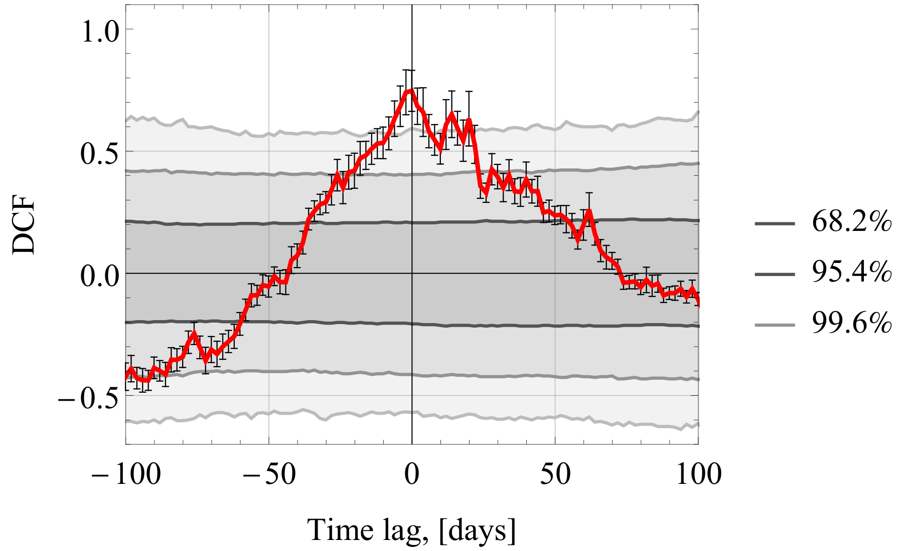
图注：Discrete correlation function for the $\gamma$-ray and optical light curves over the period MJD~59672$-$60199 and its significance levels.
对应解读：对应“建议重点查看的图表”第4项和“关键图表逐图导读”图4：长基线 DCF 图，比较零时滞峰与约 12 天次峰及其显著性。
入选理由：这是全文最关键的统计诊断图，直接展示 2022 年 4 月至 2023 年 9 月长时间段内伽马射线与光学光变的 DCF 及显著性水平，可检验日报强调的零时滞相关和约 12 天第二峰是否显著。它比单纯光变曲线更能支撑作者关于 SSC 零时滞和非零时滞峰来源的核心结论。
来源与置信度：\(arxiv_source\)；high；\(arxiv_source\) / \(oja_template.tex\):figure[5]
Fig01
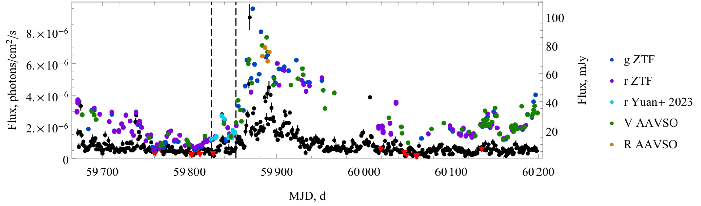
图注：Long-term light curves of BL~Lac in the $\gamma$-ray and optical ranges, shown in black and colors, respectively. Red triangles mark $\gamma$-ray data with TS<9. The energy of the high-energy photons lies in the range 0.14$-$300 GeV. In the optical band, the light curve is constructed from ZTF, Yuan et al. \(\cite{Yuan},\) and AAVSO data, all converted to the brightness in the ZTF g-band filter. Dashed lines denote the TESS observation period.
对应解读：对应“建议重点查看的图表”第1项、第5项，以及“关键图表逐图导读”图1：多波段长基线光变曲线和额外耀发的人工对照。
入选理由：该图给出长基线伽马射线与光学光变曲线，并标出 TESS 观测窗口，是判断主要耀发是否同步、是否存在单波段额外耀发的基础。日报中特别强调需要回到原始光变曲线检查 12 天 DCF 次峰是否由耀发叠加造成，因此这张图与长基线 DCF 必须配合查看。
来源与置信度：\(arxiv_source\)；high；\(arxiv_source\) / \(oja_template.tex\):figure[1]
Fig04
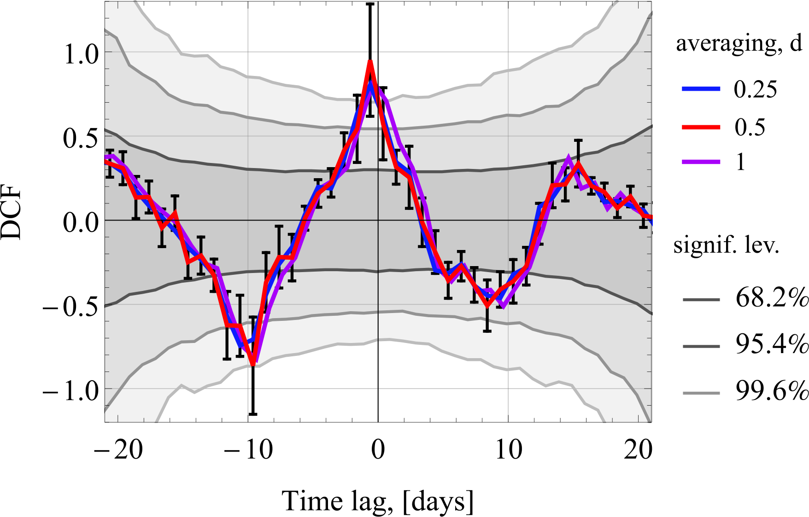
图注：Discrete correlation function for the $\gamma$-ray and optical light curves over the period MJD~59824$-$59852 and its significance levels.
对应解读：对应“建议重点查看的图表”第3项和“关键图表逐图导读”图3：短时间窗口 DCF，检查 tau=0 附近峰值、误差和显著性水平。
入选理由：该图直接给出 TESS 窗口 MJD 59824--59852 内伽马射线与光学曲线的 DCF 及显著性水平，是验证日尺度零时滞相关的主要证据。它能支撑日报中关于‘与零时滞一致而非精确测得零时滞’的解读。
来源与置信度：\(arxiv_source\)；high；\(arxiv_source\) / \(oja_template.tex\):figure[4]
Fig03
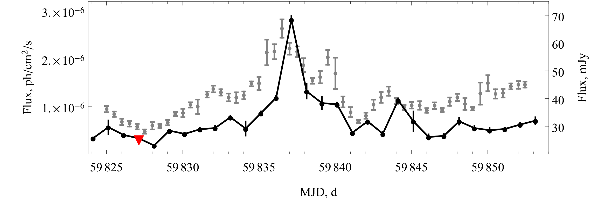
图注：The short-term light curve of BL~Lac according to TESS observations and Fermi-LAT data in the range 0.1$-$300~GeV (gray and black, respectively). Red triangle marks $\gamma$-ray data with TS<9
对应解读：对应“建议重点查看的图表”第2项和“关键图表逐图导读”图2：2022 年 9 月 TESS 窗口放大光变图。
入选理由：该图展示 TESS 高采样光学光变与 Fermi-LAT 日尺度伽马射线光变的直接对照，可用于检查快速光学子结构是否在伽马射线误差和时间 bin 内有对应变化。它是理解短时间 DCF 零时滞峰物理含义和采样限制的必要上下文。
来源与置信度：\(arxiv_source\)；high；\(arxiv_source\) / \(oja_template.tex\):figure[3]
Fig06
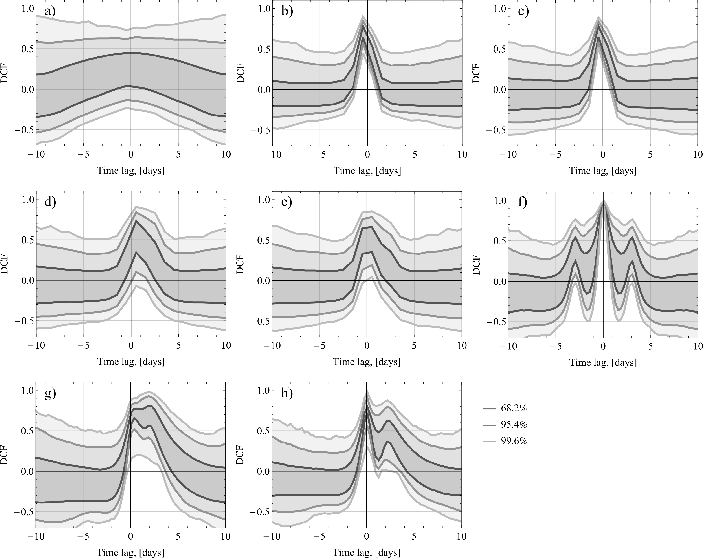
图注：Intervals containing 68.2\%, 95.4\% and 99.6\% of DCF points calculated under different assumptions: a) independently occurring flares during the last two thirds of the considered time interval; b) correlated with zero time lag flares, having in optical series more slow decay. The number of flares is a random variable in the range from 3 to 6; c) Same as in panel b), but with the number of flares ranging from 7 to 15. d) correlated flares with identical parameters, whose time lags follow a mixture of two normal distributions with a common variance of $\sigma^2=0.5$, component medians at 0 and 2, and mixing weights of 60\% and 40\%, respectively; e) correlated flares with identical parameters, whose time lags were randomly assigned to 0 in two-thirds of flare number and to 2 in one-third; f) simultaneous flares with a two-component peak structure, with sub-peaks separated by 2 t.u. The amplitude of the first sub-flare is twice that of the second; g) pairs of two-component $\gamma$-ray flare corresponding to a single optical flare (Case A); h) pairs of two-component optical flare corresponding to a single $\gamma$-ray flare (Case B).
对应解读：对应“建议重点查看的图表”第6项和模型拟合段落：不同耀发假设下的 DCF 置信区间与稳健性/模拟检验。
入选理由：该图汇总多种模拟假设下 DCF 点的 68.2%、95.4% 和 99.6% 区间，正好对应日报要求检查红噪声或耀发叠加是否能产生非零时滞峰的稳健性问题。相比只看观测 DCF，它更能支撑‘12 天峰可能由额外耀发造成’这一解释竞争。
来源与置信度：\(arxiv_source\)；high；\(arxiv_source\) / \(oja_template.tex\):figure[6]
Fig09
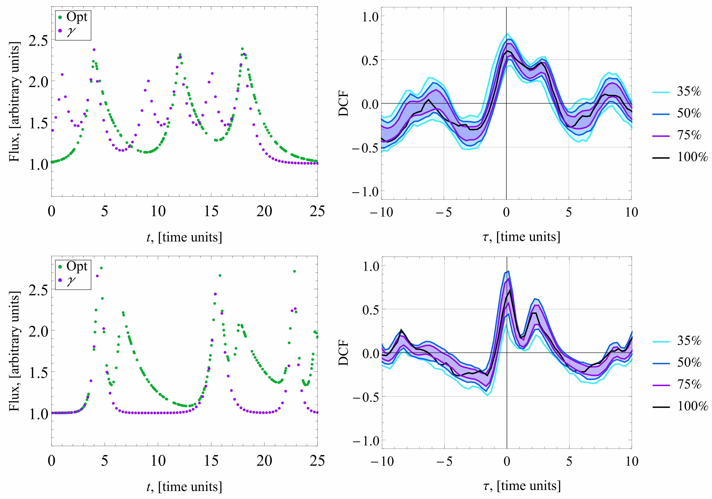
图注：Model light curves (left panels) and the corresponding 99.6\% DCF confidence intervals (right panels) for cases A and B (upper and lower panels, respectively). The DCFs computed from the uniform original model light curves are shown by black lines.
对应解读：对应“建议重点查看的图表”第5项、第7项，以及“关键图表逐图导读”图5/图6：模型光变曲线与对应 DCF 置信区间，用于解释额外耀发或双峰结构如何制造相关峰。
入选理由：该图同时给出 Case A/B 的模型光变曲线和对应 99.6% DCF 置信区间，比单独的模型 DCF 图更直观地连接‘额外耀发结构’与‘DCF 中出现次峰’。它适合作为物理/经验模型解释图，辅助说明 12 天峰不一定代表真实传播延迟。
来源与置信度：\(arxiv_source\)；high；\(arxiv_source\) / \(oja_template.tex\):figure[9]
强相关工作
同一源背景方面，BL Lacertae 有大量历史多波段监测、VLBI、光学偏振和 \(Fermi\)-LAT 研究。应把本文放在“同一源高活动期”文献中阅读，尤其检索关键词 “BL Lacertae 2020 2021 2022 high activity multiwavelength flare Fermi LAT optical polarization VLBI”。这些同源工作可帮助判断 2022 年高活动尾声是否伴随新的射电结喷出、偏振角旋转或谱能量分布状态变化。
同类工作方面，许多耀变体都报告过伽马射线与光学的零时滞或非零时滞相关，例如 Mrk 421、PKS 2155-304、3C 279、PKS 1510-089 等。与这些源相比，本文的特色不是发现相关本身，而是强调一个显著非零峰可能由孤儿耀发造成。建议检索 “blazar discrete correlation function orphan flare synchrotron self-Compton gamma-ray optical lag”。
基础理论方面，应联系 \(\mathrm{SSC}\) 模型、耀变体序列、相对论喷流辐射和时域相关方法的经典文献。相反或存在张力的观点包括外康普顿主导模型、多区湍流模型、几何多普勒因子变化模型，以及把非零时滞解释为沿喷流传播距离的模型。本文对这些观点的启发是：在提出复杂几何或外部场解释前，必须先排除光变曲线叠加导致的相关函数假峰。
同一事件 / 同类源线索：
- https://arxiv.org/abs/2608.22046
- https://arxiv.org/pdf/2608.22046
- https://fermi.gsfc.nasa.gov/ssc/data/access/
- https://tess.mit.edu/
相似工作：
基础理论 / 方法工作：
- https://ui.adsabs.harvard.edu/abs/1988ApJ...333..646E/abstract
- https://ui.adsabs.harvard.edu/abs/1992A%26A...256L..27M/abstract
- https://ui.adsabs.harvard.edu/abs/1997A%26A...321..433U/abstract
- https://ui.adsabs.harvard.edu/abs/1998ARA%26A..36..539U/abstract
相反观点 / 张力线索：
6. Updated Upper Limits on the Isotropic Gravitational-Wave Background from LIGO, Virgo, and KAGRA Data through April 2025
- 来源：arXiv / astro-ph.HE
- 链接：https://arxiv.org/abs/2608.23477v1
- 作者：The LIGO Scientific Collaboration, the Virgo Collaboration, the KAGRA Collaboration, A. G. Abac, A. Abe, I. Abouelfettouh, F. Acernese, K. Ackley
- 评分：novelty 7/10，importance 8/10，relevance 8/10，final 8.70/10
- 推荐理由：LVK截至2025年4月的随机引力波背景官方新上限，包含新数据质量处理和紧致双星背景预测；虽非伽马方向，但对高能致密天体和多信使背景约束重要。
中文题目：截至 2025 年 4 月的 LIGO、Virgo、KAGRA 数据给出的各向同性随机引力波背景最新上限
做了什么：这篇 LIGO–Virgo–KAGRA 联合论文用从首个观测运行到第四观测运行 2025 年 4 月 1 日以前的数据，重新搜索各向同性随机引力波背景。作者重点更新了频域数据质量切除，用来剔除过去常规检查不容易发现的非平稳谱噪声，因此也重新处理了先前已经分析过的第四观测运行数据。结果没有发现显著随机背景信号；对紧致双星并合预期的幂律谱，给出 \(\Omega_{\rm GW}(25\,{\rm Hz})\leq 2.0\times10^{-9}\) 的 \(95\%\) 可信上限；对尺度不变谱，给出 \(\Omega_{\rm GW}(25\,{\rm Hz})\leq 2.8\times10^{-9}\)。论文还更新了非标准偏振背景的限制，检查了相关磁噪声，并结合最新暂现源星族模型预测紧致双星背景约为 \(\Omega_{\rm CBC}(25\,{\rm Hz})=6.3^{+5.0}_{-2.2}\times10^{-10}\)。
为什么重要：随机引力波背景是目前地面引力波探测中最接近“群体宇宙学”和早期宇宙物理的目标之一：它可以来自无法逐个分辨的黑洞和中子星并合，也可能包含相变、宇宙弦或暴胀后过程等早期宇宙信号。本文的上限已经逼近紧致双星背景的预期量级，说明下一阶段探测不只是继续压低空上限，而是在进入可能检测天体物理背景的区间。
理论 / 观测 / 仪器方法价值：方法上的价值在于，它明确处理了一类非平稳频域谱线或谱特征对互相关随机背景搜索的污染，并把旧数据用同一套新切除规则重算，使上限改进可以被干净归因于新数据和新数据质量处理。对理论工作者，这给出了可直接用于排除早期宇宙模型、非标准偏振和紧致双星星族模型的能量密度上限；对观测和仪器团队，它展示了随机背景搜索对相关噪声、谱非平稳性和网络基线选择的敏感性。
为什么应该关注：如果你关心下一次地面探测器是否会首先看到随机背景，这篇文章给出了当前最现实的答案：还没有检测，但上限已接近紧致双星背景的中心预测。它也提醒读者，随机背景搜索的瓶颈不只是探测器振幅灵敏度，还包括那些在单台探测器里看起来不太显眼、但会在长时间互相关中积累成偏差的频域噪声。
展开详细解读：文章讲解、背景、理论、重点章节、图表与相关工作
文章详细讲解
科学问题：随机引力波背景不是一个可单独定位的短暂事件，而是许多弱信号在时间和方向上叠加形成的统计背景。对地面探测器来说，最稳健的搜索对象通常是假定各向同性、近似高斯、非偏振或指定偏振成分的背景，并用不同探测器之间的互相关来从独立仪器噪声中提取共同引力波信号。本文问的是：截至 2025 年 4 月，LIGO、Virgo 和 KAGRA 的所有可用数据是否已经显示出这样的共同随机信号？如果没有，能把 \(\Omega_{\rm GW}\) 的上限压到什么程度？
作者怎么做：论文使用从第一观测运行到第四观测运行早期的数据，核心统计量仍是频域互相关估计量。与以往结果相比，重要变化不是换了完全不同的物理模型，而是加入新的频域切除，专门处理一类非平稳谱噪声特征。这类特征可能不会被传统时域或段级数据质量标记完全识别，但在长时间平均的互相关谱里会产生局部频率偏差。作者因此对先前第四观测运行中已经分析过的数据重新处理，保证新旧数据用一致的数据质量标准。
关键结果：论文没有发现随机背景信号。对紧致双星并合常用的 \(\alpha=2/3\) 幂律谱，在参考频率 \(25\,{\rm Hz}\) 处得到 \(95\%\) 可信上限 \(\Omega_{\rm GW}\leq2.0\times10^{-9}\)；对尺度不变背景 \(\alpha=0\)，得到 \(\Omega_{\rm GW}\leq2.8\times10^{-9}\)。相对于用新频域切除重算后的旧数据约束，新结果改善约 \(1.4\) 倍。作者还给出非标准偏振模式的限制，并验证 Schumann 共振等相关磁噪声仍低于本次搜索灵敏度。
局限和下一步：目前结果仍是上限而非检测；而且紧致双星背景的星族预测中心值 \(\Omega_{\rm CBC}(25\,{\rm Hz})\approx6.3\times10^{-10}\) 仍低于当前上限约数倍。下一步的关键不只是增加观测时间，还包括提高低频灵敏度、继续压制相关环境噪声、改进频域异常识别，并把各向同性搜索与各向异性、非高斯、亚阈值事件群体和单源扣除方法结合起来。
关键结果是怎么做出来的
数据和样本选择方面，论文合并了 LIGO、Virgo、KAGRA 从第一观测运行到第四观测运行 2025 年 4 月 1 日前的应变数据。随机背景搜索不是数单个候选事件，而是把可用数据分成许多短时间段，对每个探测器对计算交叉功率谱，再按噪声功率谱和重叠约化函数加权合并。因此“样本量”主要体现为有效同时观测时间、可用探测器基线数、频率通道数和通过数据质量切除后的频段覆盖。
本文证据链的核心新增环节是频域切除。作者指出有一类非平稳谱噪声特征没有被过去的数据质量检查有效缓解。这对随机背景尤其危险，因为即使单个频段异常很窄，长时间积分后也可能在互相关估计量中留下系统偏移。论文因此不是简单把新数据接到旧结果上，而是用更新后的频域 cuts 重跑第四观测运行中已分析的数据，再与新增数据合并，避免把数据处理版本差异误当成灵敏度提升。
显著性和可信区间方面，论文采用随机背景搜索的标准似然框架：在给定谱形 \(\Omega_{\rm GW}(f)=\Omega_{\rm ref}(f/f_{\rm ref})^\alpha\) 后，把所有频率和基线的互相关估计量组合成对 \(\Omega_{\rm ref}\) 的估计及方差。由于没有得到与零显著偏离的正信号，结果以 \(95\%\) 可信上限报告，并明确上限对应对 \(\Omega_{\rm GW}\) 使用对数均匀先验。对 \(\alpha=2/3\) 和 \(\alpha=0\) 两个代表性谱形，分别得到 \(2.0\times10^{-9}\) 和 \(2.8\times10^{-9}\)。
支持主结论的图表通常应包括：不同观测运行和探测器基线贡献的积分后灵敏度曲线、互相关点估计随频率的分布、幂律积分灵敏度或后验上限曲线、频域切除前后对噪声异常的影响，以及磁噪声投影相对于统计误差的比较。读者应特别看互相关残差是否在若干频段呈现相干偏离，以及切除后这些偏离是否消失；这比只看最终上限数字更能判断结果稳健性。
主要系统误差包括单台探测器功率谱估计误差、校准不确定性、重叠约化函数和探测器几何的不确定性、环境相关噪声，尤其是全球磁场扰动导致的跨站点相关项。作者报告相关磁噪声仍低于当前搜索敏感度，这是随机背景论文中很关键的稳健性检查。另一个稳健性点是把先前数据用同一新 cuts 重算后再比较改进倍数，因此 \(1.4\) 倍提升不是旧版数据处理和新版数据处理混在一起得到的表观结果。
展开背景、理论、公式、模型、章节和图表导读
背景知识
随机引力波背景 \(\Omega_{\rm GW}(f)\) 描述的是单位对数频率间隔内的引力波能量密度相对于宇宙临界密度的比例。它可以有天体物理来源，例如宇宙中大量无法逐个分辨的双黑洞、双中子星和黑洞–中子星并合；也可以有宇宙学来源，例如一阶相变、宇宙弦网络、暴胀相关过程或其他早期宇宙机制。不同来源的频谱形状、统计性质和各向异性程度不同。
历史上，地面探测器寻找随机背景主要依赖两个或多个探测器之间的互相关。单台探测器的噪声远大于预期背景，且很难只从自功率谱中区分弱随机信号和仪器噪声；但如果相隔很远的探测器噪声近似独立，而引力波在两台探测器中产生具有确定几何相关性的响应，长时间互相关就能逐渐积累信噪比。这一思想在 LIGO 首次探测单个并合事件之前就已成熟，是引力波数据分析的基础分支之一。
为什么现在值得重新看：随着第四观测运行继续积累数据，随机背景搜索进入一个微妙阶段。上限还未到紧致双星背景的中心预测以下，但已经接近同一数量级。此时系统误差、频域非平稳性和相关环境噪声会越来越重要。早期上限主要受统计噪声支配；当观测时间增加后，原先可忽略的小型谱线、非平稳噪声尾部和跨站点相关扰动都可能成为限制因素。
该领域常见误区之一是把“没有检测”理解为“没有背景”。实际上当前上限仍高于许多标准天体物理预测，非检测更多是在排除较强的宇宙学背景或极端星族模型。另一个误区是认为随机背景搜索只需堆时间；事实上，互相关方法会把任何跨探测器相关的非引力波噪声也一起堆起来，因此环境监测、频域 veto、校准和基线一致性检验与曝光时间同样重要。
基础理论 / 方法脉络
基本物理图像是：大量弱引力波叠加后，在探测器中表现为近似随机的应变场 \(h(t)\)。若这些来源在天空上近似均匀、方向无偏，并且单个源无法分辨，则可以用各向同性随机背景描述。其强度通常不用应变振幅直接表示，而用无量纲能量密度谱 \(\Omega_{\rm GW}(f)\)，这样便于与宇宙学能量预算和早期宇宙模型比较。
对地面干涉仪，探测器输出 \(s_i(t)=h_i(t)+n_i(t)\)，其中 \(h_i(t)\) 是引力波响应，\(n_i(t)\) 是仪器噪声。随机背景的 \(h_i(t)\) 本身通常弱于 \(n_i(t)\) 很多，因此不能通过单台探测器的功率谱直接读出。关键假设是不同站点的仪器噪声近似不相关，而同一个随机引力波背景会按照探测器相对位置和臂方向产生可计算的相关性。
这个相关性由重叠约化函数 \(\gamma_{ij}(f)\) 描述。它编码探测器对天空各方向、各偏振的响应叠加，以及基线长度带来的相位延迟。对于 Hanford–Livingston 这样的近似同型探测器，低频 \(\gamma_{ij}(f)\) 较大；频率升高后，由于波长接近或小于基线长度，不同方向相位抵消增强，\(\gamma_{ij}(f)\) 会振荡并衰减。
本文采用的主要信号模型是幂律背景，即 \(\Omega_{\rm GW}(f)=\Omega_{\rm ref}(f/f_{\rm ref})^\alpha\)。其中 \(\alpha=2/3\) 对应圆轨道紧致双星在并合前 inspiral 阶段的经典低频谱形，\(\alpha=0\) 是尺度不变背景的常用近似。非标准偏振搜索则改变响应函数和重叠约化函数，使同一互相关数据可用于检验张量以外的标量或矢量模式。
主要退化和系统误差来自三方面。第一，谱指数 \(\alpha\) 与振幅 \(\Omega_{\rm ref}\) 有退化：不同谱形会把权重放在不同频段，导致上限不可简单横向比较。第二，窄带谱线、非平稳噪声和校准误差会改变频域权重或产生假残差。第三，全球磁场扰动可在远距离探测器中诱导相关信号，模仿低频随机背景，因此必须用磁强计和耦合函数估计其贡献。
公式与推导
第一步是定义随机背景强度。令 \(\rho_c=3H_0^2/(8\pi G)\) 为临界密度，则单位对数频率的引力波能量密度为
这里 \(H_0\) 是哈勃常数，\(G\) 是引力常数。这个定义把探测器测到的应变谱与宇宙能量预算连接起来。
第二步，把能量密度写成应变功率谱。对各向同性、平稳、非偏振的张量背景，有
其中 \(S_h(f)\) 是单边应变功率谱密度。因子 \(10\pi^2\) 来自张量偏振平均和 LIGO/Virgo 常用归一化；不同偏振假设会改变响应归一化。
第三步，本文的代表性谱形可写为
其中 \(f_{\rm ref}=25\,{\rm Hz}\)，\(\Omega_{\rm ref}\equiv\Omega_{\rm GW}(f_{\rm ref})\)。\(\alpha=2/3\) 代表 inspiral 主导的紧致双星背景，\(\alpha=0\) 代表尺度不变背景。
第四步，两个探测器 \(i,j\) 的频域互相关期望值满足
其中 \(\tilde{s}_i(f)\) 是探测器输出的傅里叶变换，\(\gamma_{ij}(f)\) 是重叠约化函数。若噪声跨站点不相关，互相关的均值就主要来自共同引力波背景。
第五步，一个频率分箱中的交叉功率估计量可概念性写作
其中 \(T\) 是数据段长度。这样归一化后，\(\hat{C}_{ij}(f)\) 可直接估计 \(\Omega_{\rm GW}(f)\)，但在 \(\gamma_{ij}(f)\) 很小或噪声很大的频率处方差会变大。
第六步，在弱信号极限下，互相关估计量的方差近似为
其中 \(P_i(f)\) 和 \(P_j(f)\) 是两台探测器的噪声功率谱，\(\Delta f\) 是频率分辨率。这说明灵敏度由观测时间、带宽、单台噪声和几何重叠共同决定。
第七步，对给定 \(\alpha\)，所有基线和频率的最优振幅估计可写成反方差加权形式
这个式子展示了为什么不同谱指数会强调不同频段，也解释了频域 cuts 会改变最终上限。
第八步，若近似高斯似然成立，振幅的似然可写为
结合对 \(\Omega_{\rm ref}\) 的先验，积分后验即可得到 \(95\%\) 可信上限。本文报告的上限对应对 \(\Omega_{\rm ref}\) 采用对数均匀先验。
第九步，相关磁噪声可用类似响应模型估计为
其中 \(r_i(f)\) 是磁场到应变通道的耦合函数，\(P_B^{ij}(f)\) 是两个站点磁场的互功率谱。若 \(|M_{ij}(f)|\) 明显小于互相关统计误差或目标信号水平，则磁噪声不会主导当前上限。
模型拟合 / 应用方法
这类分析的拟合量通常不是单个事件的质量、自旋或距离，而是随机背景谱的整体参数，最简单的是 \(\Omega_{\rm ref}\) 和固定或扫描的谱指数 \(\alpha\)。本文重点报告 \(\alpha=2/3\) 与 \(\alpha=0\) 两个模型下的 \(95\%\) 可信上限。对于非标准偏振，拟合对象可变成不同偏振分量的背景振幅，响应矩阵和重叠约化函数随之改变。
似然构造基于频域互相关估计量及其方差。在弱信号极限下，噪声功率谱由相邻数据或分段估计给出，互相关点估计近似服从高斯分布。模型比较通常不是在复杂机器学习意义上完成，而是比较不同谱形或不同偏振假设下的后验、信噪比、贝叶斯因子或上限曲线；没有显著偏离零时，最重要输出就是上限以及该上限对先验的依赖。
残差诊断非常关键。读者应检查 \(\hat{C}(f)\) 相对于模型的残差是否呈白噪声状，是否集中在已知仪器线、校准线、供电线或环境线附近，是否由某一条探测器基线主导。本文新增的频域 cuts 正是针对非平稳谱噪声，因此切除前后的残差和贡献频段变化应被视为方法结果的一部分，而不是技术附录中的小问题。
参数退化主要包括谱指数与振幅退化、低频灵敏度与磁噪声退化、以及张量和非张量偏振响应在有限探测器网络中的分离退化。尤其在探测器数目和方位有限时，不同偏振模式可能在某些基线上给出相似互相关形状，需要借助多基线、多频率和先验假设区分。
模型可能失败的地方也很明确：真实背景可能不是各向同性、不是高斯、不是单一幂律，也可能由少数接近阈值的亚阈源主导。若存在明显各向异性或非高斯尾部，把所有信号压缩成 \(\Omega_{\rm ref}\) 的单参数幂律模型会损失信息。实际应用中，应把本文上限当作针对“各向同性、平稳、指定谱形”背景的约束，而不是对所有随机或弥散引力波信号的一刀切排除。
重点章节 / 结果段落怎么读
数据与数据质量部分最值得先读。这里应关注作者如何定义可用时间、哪些探测器基线进入分析、第四观测运行数据如何与早期运行统一处理，以及新增频域 cuts 针对的非平稳谱特征是什么。读这部分时不要只看最终 livetime，更要看频段和基线被切除的模式。
方法部分应重点读互相关统计量、幂律模型、先验选择和组合方式。特别要确认 \(f_{\rm ref}=25\,{\rm Hz}\)、\(\alpha=2/3\) 和 \(\alpha=0\) 的定义，以及上限是 Bayesian credible upper limit 而不是 frequentist confidence upper limit。若论文给出多个先验结果，应区分对数均匀先验和线性均匀先验的差别。
主结果部分应围绕上限表和灵敏度图阅读。核心数字是 \(\Omega_{\rm GW}(25\,{\rm Hz})\leq2.0\times10^{-9}\) 与 \(2.8\times10^{-9}\)，以及相对重新处理旧数据后的 \(1.4\) 倍改善。读者应看这些改进来自新增观测时间、探测器灵敏度，还是频域 cuts 后噪声尾部减少。
系统误差与环境噪声部分不能跳过。随机背景分析的可信度很大程度上取决于相关噪声评估，尤其是 Schumann 共振相关磁场噪声。应读清楚磁耦合函数如何测量或上限化，磁噪声投影与统计误差相比处于什么水平。
讨论和天体物理解释部分连接 GWTC-5.0 星族模型与紧致双星背景预测。这里的重点不是把 \(6.3^{+5.0}_{-2.2}\times10^{-10}\) 当作精确常数，而是理解当前上限与预期背景之间还差多少、哪些并合率和质量分布假设主导不确定性。
建议重点查看的图表
-
频域互相关谱或 \(\hat{C}(f)\) 图：看数据点是否围绕零分布，误差棒是否随频率按噪声曲线变化，是否有窄频段异常。
-
新频域 cuts 的诊断图：看被切除的频率和时间段是否集中在已知谱线附近，切除后是否明显减少非高斯尾部或异常残差。
-
幂律积分灵敏度或 \(\Omega_{\rm GW}\) 上限曲线：比较 \(\alpha=2/3\)、\(\alpha=0\) 以及其他谱指数的上限，注意不同谱形权重不同，不能只按数字大小判断。
-
各观测运行或各探测器基线贡献表：看 Hanford–Livingston、Hanford–Virgo、Livingston–Virgo 等基线分别贡献多少灵敏度，是否某一基线异常主导结果。
-
后验分布图：检查 \(\Omega_{\rm ref}\) 后验是否在零附近无显著正偏，\(95\%\) 上限如何由积分后验得到，以及先验选择是否影响明显。
-
磁噪声预算图：看磁噪声投影 \(M_{ij}(f)\) 相对于统计误差、目标上限和可能信号模型的位置，特别关注低频段。
-
紧致双星背景预测与观测上限比较图：看 \(\Omega_{\rm CBC}\) 的 \(90\%\) 可信区间与当前上限的间隔，判断下一阶段探测的现实性。
关键图表逐图导读
图 1：若论文给出观测运行和探测器灵敏度概览，横轴通常是频率，纵轴是应变噪声幅度谱或等效 \(\Omega_{\rm GW}\) 灵敏度。数据线代表不同探测器或运行期。读图重点是 \(20\)–\(100\,{\rm Hz}\) 的灵敏度改善，因为随机背景搜索对这一段权重很大。陷阱是不要把单台噪声最低处直接等同于随机背景最敏感处，互相关还受 \(\gamma_{ij}(f)\) 控制。
图 2：频域 cuts 或谱异常诊断图通常以频率为横轴，纵轴为统计偏离量、被切除比例或残差分布。模型线或阈值线显示哪些频点被判为异常。读者应看切除是否过度集中在少数已知污染频段，以及是否可能误删真实宽带信号。真正合理的 cuts 应主要去除窄带或非平稳污染，而不是系统性挖掉最敏感宽频区。
图 3：互相关估计 \(\hat{C}(f)\) 图一般横轴为频率，纵轴为估计的 \(\Omega_{\rm GW}(f)\) 或归一化交叉功率，误差棒为 \(1\sigma\)。若无信号，点应在零附近随机散布。读图陷阱是单个频点的 \(2\sigma\) 偏离并不重要；关键是偏离是否按某个幂律模型在宽频段相干积累。
图 4：后验或似然图通常横轴为 \(\Omega_{\rm ref}\)，纵轴为后验密度或对数似然。应检查峰值是否接近零，\(95\%\) 分位点在哪里，以及对数均匀先验是否使低振幅区域权重变化。不要把后验峰略正解读为检测，随机背景检测需要全局显著性和系统误差排除。
图 5：上限随谱指数变化图通常横轴为 \(\alpha\)，纵轴为 \(\Omega_{\rm ref}^{95\%}\)。曲线最低处反映探测器网络最敏感的谱形，而不是宇宙真实偏好的谱形。读者应对照 \(\alpha=2/3\) 和 \(\alpha=0\) 的位置，理解为何两者上限不同。
图 6：磁噪声预算图横轴为频率，纵轴可为等效 \(\Omega_{\rm GW}\)、交叉功率或噪声幅度。数据线代表磁场相关项估计，阴影或误差线代表不确定性。关键是磁噪声线是否低于统计误差和上限灵敏度；若在低频接近误差预算，应关注作者是否做了保守上限和频段剔除。
图 7：紧致双星背景预测图通常把观测上限与星族模型预测区间放在同一 \(\Omega_{\rm GW}\)–频率图上。读者应看预测带的宽度来自并合率、质量分布和红移演化，而不是测量噪声本身。若预测带上缘接近当前上限，说明未来运行的非检测也会开始反馈约束星族模型。
论文原图 / 可嵌入图片
Fig03
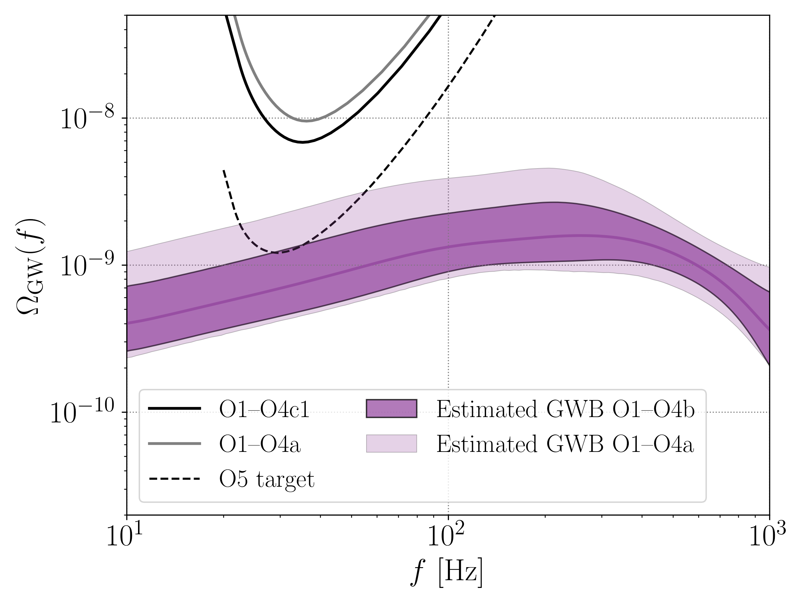
图注：The purple band shows the combined estimate of the CBC background at the 90\% credible level, with the median indicated by the solid line. For comparison, the previous estimate after O4a from Ref.~\(\cite{O4a_iso_paper}\) is also shown. The figure further includes the $2\sigma$ PI sensitivity curve of the O1--O4c1 search presented in this work, together with the corresponding curve from the O4a search and the projected target sensitivity for one year of coincident O5 data. The O5 projection assumes equal observing time at the expected O5a, O5b and O5c sensitivity levels.
对应解读：对应“建议重点查看的图表”第3项幂律积分灵敏度/上限曲线、第7项紧致双星背景预测与观测上限比较图，以及“关键图表逐图导读”图7。
入选理由：该图直接把本文 O1--O4c1 搜索的 2σ 幂律积分灵敏度曲线、O4a 旧结果、O5 一年投影目标灵敏度和 CBC 背景 90% 可信区间放在一起，是判断当前上限与紧致双星背景预测差距、以及未来 O5 是否接近探测的最核心图。它最能支撑日报中关于 Ω_CBC 仍低于当前上限数倍、未来运行有望逼近预测带的解读。
来源与置信度：\(arxiv_source\)；high；\(arxiv_source\) / main.tex:figure[3]
Fig01
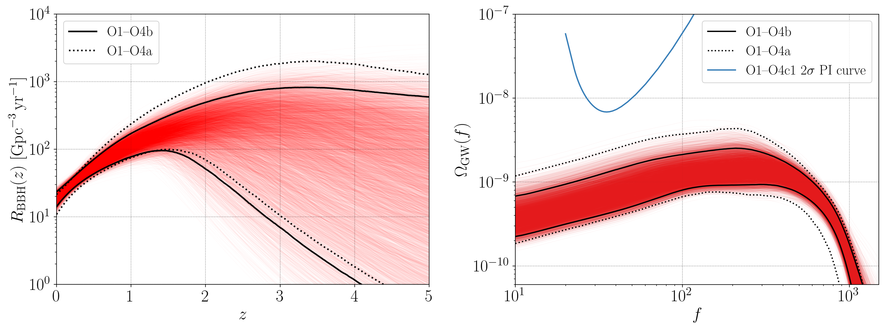
图注：\(\textit{Left panel:}\) Redshift evolution of the BBH merger rate density, inferred hierarchically from the BBH detections in GWTC-5.0, spanning observing runs O1--O4b. The red traces show the individual posterior samples, while the solid black lines indicate the 90\% credible bounds. For comparison, the 90\% credible bounds obtained previously with GWTC-4.0, which includes events through O4a, are shown as dotted lines. \(\textit{Right panel:}\) Prediction of the stochastic energy-density spectrum of the BBH population. The red traces correspond to the individual posterior samples on the energy-density spectrum obtained by sampling over the possible mass, spin and redshift distributions of BBH mergers, while the solid black curves indicate 90\% credible bounds on $\Omega_\mathrm{BBH}(f)$. For comparison, we also indicate the 90\% credible bounds obtained after O4a with dotted lines as presented in Ref.~\(\cite{O4a_iso_paper}.\) Furthermore, we show the $2\sigma$ PI sensitivity curve from O1--O4c1 data.
对应解读：对应“建议重点查看的图表”第7项紧致双星背景预测与观测上限比较图，并支撑正文中基于 GWTC-5.0 星族模型预测 CBC/BBH 背景的段落。
入选理由：该图左 panel 给出 GWTC-5.0 推断的 BBH 并合率红移演化，右 panel 给出 BBH 随机背景能量密度谱及 90% 可信区间，并叠加 O1--O4c1 的 PI 灵敏度曲线。它比单纯结果表更能说明 Ω_BBH 预测的不确定性来自并合率和星族分布，并展示新旧 GWTC-4.0/O4a 预测之间的变化。
来源与置信度：\(arxiv_source\)；high；\(arxiv_source\) / main.tex:figure[1]
Fig02
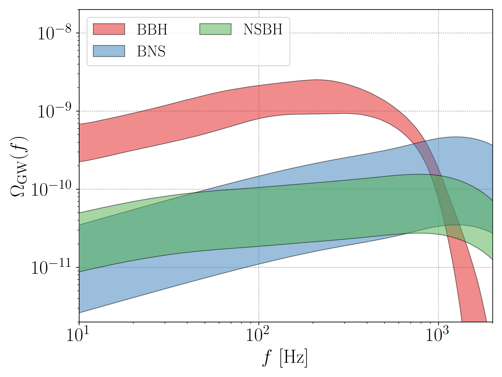
图注：Predicted astrophysical GWBs from BBH, BNS and NSBH coalescences at the 90\% credible level.
对应解读：对应“建议重点查看的图表”第7项紧致双星背景预测与观测上限比较图，以及日报中关于紧致双星背景由不同源族贡献的解释。
入选理由：该图展示 BBH、BNS 和 NSBH 三类并合源对天体物理随机背景的 90% 可信预测，可帮助读者区分总 CBC 背景中不同源族的贡献。虽然它不直接展示本文观测上限或 cuts 诊断，但对理解 Ω_CBC 预测带的物理来源仍有辅助价值。
来源与置信度：\(arxiv_source\)；high；\(arxiv_source\) / main.tex:figure[2]
强相关工作
这篇工作属于 LVK 随机引力波背景连续系列，直接同类工作包括 O1、O2、O3 以及 O4 早期数据的各向同性 stochastic searches。应检索关键词 “LIGO Virgo KAGRA isotropic stochastic gravitational-wave background O3 upper limits”、“power-law integrated sensitivity stochastic background”、“Schumann resonance correlated magnetic noise LIGO”。这些论文之间的主要关系是数据量增加、探测器噪声下降和数据质量处理演化；本文特别强调新频域 cuts，因此与早期结果比较时必须注意是否采用同一数据处理版本。
理论和模型层面，它与紧致双星随机背景预测、宇宙弦背景、一阶相变背景和非标准引力偏振搜索都有交集。紧致双星背景是最保守也最可能首先被地面探测器看到的天体物理背景；宇宙学背景通常需要更强模型假设，且许多参数空间已被 LIGO–Virgo 上限、脉冲星计时阵列、宇宙微波背景和大爆炸核合成联合限制。应检索关键词 “compact binary coalescence stochastic background prediction”、“cosmic strings stochastic gravitational waves LIGO”、“alternative polarizations stochastic gravitational wave background”。
潜在张力不一定表现为某篇论文“反对”本文，而是体现在模型预测与上限之间的参数空间压缩。例如某些高弦张力宇宙弦模型、强一阶相变模型或极高并合率的原初黑洞模型可能被当前上限排除或强烈限制。另一方面，标准紧致双星背景预测仍低于上限，因此本文的非检测与主流星族模型并不冲突。
同一事件 / 同类源线索：
相似工作：
基础理论 / 方法工作：
相反观点 / 张力线索：
7. AI-Assisted Extraction of Follow-up Observations from GCN Circulars in Astro-COLIBRI
- 来源：arXiv / astro-ph.HE
- 链接：https://arxiv.org/abs/2608.23270v1
- 作者：Fabian Schüssler, S. Bisero, M. Cellier, A. Ciric, B. Cornejo, I. Jaroschewski, A. Kaan Alkan, W. Kiendrébéogo
- 评分：novelty 7/10，importance 8/10，relevance 8/10，final 8.70/10
- 推荐理由：将GCN Circular自动结构化并接入Astro-COLIBRI，覆盖GRB和多信使跟踪观测，已处理完整历史档案且开源；对实时高能瞬变跟进有实用价值。
中文题目：用 AI 从 GCN Circular 自由文本中提取后随观测：Astro-COLIBRI 的事件级结构化数据库
做了什么：这篇文章介绍了 Astro-COLIBRI 的一个新组件：把 GCN Circular 中自然语言写成的后随观测报告自动解析成结构化、可检索、与瞬变事件关联的记录。系统先用确定性规则做事件关联和预处理，再用受 schema 约束的大语言模型抽取测光、红移、观测设施、联系人、时间等字段，最后写入 Astro-COLIBRI API 并在网页、移动端、CSV 和 VOTable 中展示。作者在 2026 年上半年 1775 篇 Circular 的运行语料上实现全流程无失败；人工审计 210 篇 Circular 的 25880 个明确字段判断，确认 25827 个正确，字段级准确率约为 99.80%。随后系统处理了 2016 年以来的 GCN 存档，得到 5787 个瞬变事件、26811 份报告、68393 条个别观测记录，并已实时运行。
为什么重要：高能瞬变天文学的瓶颈不只是探测，而是把分散在 Circular、邮件、网页和团队内部表格里的后随信息快速变成机器可读的事件历史。GRB、中微子告警、引力波候选体、快速蓝光瞬变等对象的价值很大程度取决于数小时到数天内的多波段后随；如果这些信息只能靠人读 Circular，实时决策和统计复盘都会变慢。本文的重要性在于它把长期以人为中心的 GCN 文本流转化为事件级数据库，并给出了可审计的准确率和红移交叉验证。
理论 / 观测 / 仪器方法价值：对观测而言，它提供了一个实时后随态势图：哪些望远镜看过、何时看过、报了什么限制或探测、谁是联系人。对方法而言，它展示了大语言模型在天文信息抽取中较稳妥的一种用法：不让模型自由生成结论，而是把它限制在预定义 schema、确定性预处理和后验质量控制之内。对资料库建设而言，2016 年以来的 68393 条观测记录可用于后随覆盖率、响应时间、红移测定效率和设施贡献的统计研究。
为什么应该关注：如果你做 GRB、瞬变源、多信使告警或时域巡天，这类工具会直接影响你能否在事件爆发后几分钟内判断“还缺什么观测”。如果你做数据系统或天文信息学，本文给出了一套可复用的架构：监听非结构化公告、事件关联、schema 抽取、质量审计、API 入库和用户端展示。更广泛地说，它是天文学把 LLM 用到生产环境的一例，不是用 AI 写摘要，而是把 AI 放进有约束、可回溯、可验证的数据管线。
展开详细解读：文章讲解、背景、理论、重点章节、图表与相关工作
文章详细讲解
科学问题：GCN Circular 是高能瞬变后随观测的核心交流渠道之一，但它本质上是自由文本。观测者会在 Circular 里报告测光点、上限、红移、谱线识别、宿主星系候选、望远镜配置、天气限制、联系人等信息。人读这些文本很有效，但机器很难稳定利用；而实时多信使和多波段决策需要的是事件级、时间排序、字段明确的记录。本文要解决的问题不是发现某个新天体，而是把瞬变天文学的“后随知识流”从邮件式文本转成可查询的数据层。
作者怎么做：系统由一个持续运行的 Circular listener 开始，监听新 GCN Circular，先做确定性预分析，例如识别事件名、报告类型、可能的观测设施、时间表达和事件关联。随后调用受 schema 约束的大语言模型抽取字段，包括测光、红移、观测时间、滤光片、仪器、报告联系人、探测或上限等。抽取结果不是直接作为最终科学结论发布，而是提交到 Astro-COLIBRI API，经过单位规范化、事件级合并、格式转换和质量控制后，在网页端和移动端显示，并可导出为 CSV 或 VOTable。
关键结果：作者报告，在经过调参后，2026 年上半年运行评估语料中的 1775 篇 Circular 都完成了端到端工作流，没有工作流失败。内部人工审计覆盖 210 篇 Circular，对 25880 个明确字段级判断中确认 25827 个正确，准确率为 99.80%；剩余错误集中在 231 份被评估报告中的 8 份，主要涉及观测时间和设施归属。红移方面，系统抽取结果与独立 GRBweb 汇编在 249 个共有事件中有 228 个一致；不一致案例被追溯为上限、候选宿主估计或后续被修订的数值，而不是明显误读 Circular。最终，系统应用于 2016 年以来 GCN 存档，得到 5787 个事件、26811 份报告、68393 条个别观测记录。
局限和下一步：本文是方法和系统论文，评估重点放在字段抽取正确性、工作流稳定性和红移外部交叉检验，而不是对所有可能科学用途给出完整误差传播。自由文本中的歧义仍然存在，例如同一 Circular 同时报多个源、同一设施多仪器观测、相对时间与绝对时间混写、非标准滤光片、候选红移与确认红移混写等。下一步最值得关注的是外部社区审计、对失败案例的公开标注、与 VOEvent、TNS、Fink、Lasair、ANTARES 等时域 broker 的互操作，以及把抽取结果用于可量化的后随策略优化。
关键结果是怎么做出来的
本文最核心的证据链来自三个层次的样本：一是 2026 年上半年 1775 篇 GCN Circular 的运行评估语料，用来测试全流程稳定性；二是其中 210 篇 Circular 的人工审计子样本，用来给字段级准确率；三是 2016 年以来完整 GCN 存档，用来展示系统扩展到历史数据后的产出规模。这样的设计把“能不能跑完”“抽取得准不准”“跑完整个档案能得到什么科学资产”分开评估，是这类信息抽取系统比较合理的验证路径。
事件数和记录数方面，最终历史运行结果给出 5787 个 transient events、26811 份 reports、68393 条 individual observations。这里需要注意，报告数不等于观测点数：一份 Circular 可能包含多个时间、多个滤光片、多个曝光段或多个目标；反过来，多份 Circular 也可能重复报告同一事件的逐步精化信息。因此读者应关注论文中如何定义 observation、report 和 event 的层级关系，以及重复信息、修订信息和候选信息如何被归一化。
准确率评估使用的是内部人工审计。作者报告 25880 个 definite field-level decisions 中有 25827 个被确认，错误数为 53，对应准确率约为 \(25827/25880 \simeq 0.9980\)。更重要的是错误分布：剩余错误集中于 8 份报告，主要是观测时间和设施归属，而不是红移或测光值大规模误读。这说明系统的主要风险可能不是随机噪声式错误，而是少数结构复杂 Circular 中的字段归属错误；实际使用时应把这些字段作为人工复核优先级。
模型比较或外部交叉验证方面，红移与 GRBweb 的比较是一个关键诊断。两者共有 249 个事件，其中 228 个一致。作者进一步说明，差异来自上限、候选宿主估计或后续修订，而不是解析器把文本读错。这类交叉验证很有价值，因为红移是高能瞬变后随中科学权重很高的字段；但它也不是完整验证，因为 GRBweb 的覆盖对象、采纳标准和更新节奏与 GCN Circular 抽取数据库并不完全等价。
支撑结论的图表应包括系统架构图、抽取 schema 示例、人工审计混淆或错误分类、红移交叉匹配表、以及历史档案处理后的事件和观测数分布。系统误差主要来自自由文本歧义、事件别名映射、非标准单位和滤光片、报告修订历史、候选值与确认值混合，以及 LLM 在长文本或多目标文本中的归属错误。稳健性检验应看是否有端到端失败率、不同 Circular 类型的准确率、不同字段的准确率、以及对 prompt/schema 版本变化的回归测试。
展开背景、理论、公式、模型、章节和图表导读
背景知识
GCN Circular 长期承担着 GRB 和其他高能瞬变后随结果的快速通报功能。与自动化 alert packet 不同，Circular 是研究者写给研究者看的短文，优点是信息丰富、上下文清楚、能快速说明谱线识别或观测条件；缺点是格式不稳定，机器难以直接读取。随着 Fermi、Swift、INTEGRAL、MAXI、SVOM、LIGO/Virgo/KAGRA、IceCube 等设施产生越来越多告警，后随信息的组织方式已经成为科学效率问题。
历史上，瞬变事件数据库通常有两条路线：一条是结构化上报，例如 VOEvent、TNS 或巡天 broker 的 alert stream；另一条是人工整理的事件页面、GRB 表格和团队内部数据库。GCN Circular 夹在两者之间：它是公开、快速、权威性较高的文字记录，但缺乏统一表格结构。很多关键事实，例如某个红移是否为候选宿主、某个上限是否经过银河消光改正、某个时间是曝光中点还是开始时间，往往只在句子中体现。
为什么现在值得重新看？一方面，多信使天文学要求跨设施协同速度更快：中微子或引力波候选体的电磁后随窗口短，早期光变和颜色信息非常关键。另一方面，大语言模型和 schema-constrained extraction 让自由文本解析进入可工程化阶段；只要把输出空间限制好，再配合确定性规则和审计，就可能在生产系统中达到足够高的可靠性。本文正是在这个交叉点上，尝试把 LLM 从“聊天工具”变成“受控信息抽取器”。
该领域常见误区之一是把“AI 摘要 Circular”与“结构化科学数据库”混为一谈。前者可以读起来流畅但不可计算，后者必须有字段定义、单位、时间标准、事件关联、上限和探测的区别、错误和置信标记。另一个误区是认为高准确率就等于没有科学风险；事实上，少数设施归属或时间归属错误可能在响应时间统计、设施性能评估和光变曲线拟合中产生系统偏差。还有一个误区是忽略版本问题：Circular 报告的是当时知识状态，后续论文或数据库可能修订红移、分类和宿主信息，二者不能简单判为谁对谁错。
基础理论 / 方法脉络
从物理图像看，瞬变后随观测的核心对象是事件随时间演化的多波段信号。对 GRB 余辉来说，观测者关心的是在触发时间之后不同时间 \(t\)、不同频率 \(\nu\) 上的通量 (F_\
u(t))、颜色、衰减指数、可能的喷流折断、红移 \(z\) 和吸收。Circular 中的一条测光记录通常包含时间、滤光片、星等或通量、误差或上限、仪器和校准体系；这些都是后续物理建模的输入。
本文的模型不是天体物理辐射模型，而是信息抽取和数据归一化模型。它把 Circular 文本视为含有若干 report-level 和 observation-level 字段的非结构化观测记录。report-level 字段包括事件关联、联系人、Circular 编号、发布时间和报告机构；observation-level 字段包括观测时间、设施、滤光片、亮度、限制、曝光、坐标或红移等。关键假设是：大部分科学信息可映射到预定义 schema，且无法确定的信息应被标为缺失、候选或限制，而不是被模型强行补全。
观测方法层面，系统必须处理多种天文约定。星等可能是 AB 或 Vega，时间可能是 UTC、MJD、触发后小时数或曝光中点，亮度可能是探测值也可能是 \(3\sigma\) 或 \(5\sigma\) 上限。红移可能来自吸收线、发射线、宿主星系光谱或光度红移候选。若这些语义没有被结构化保留，后续用户在画光变曲线或做统计样本时会把不等价数据混在一起。
常见退化和系统误差主要不是物理参数退化，而是文本语义退化。例如“we observed with the 1.0 m telescope using \(r\)-band”后面跟多个时间和星等时，设施归属较容易；但如果一篇 Circular 汇总多个团队、多台望远镜和多个目标，LLM 可能把时间、滤光片或上限分配给错误设施。事件别名也是系统误差来源：同一 GRB 可能有 Swift 名称、Fermi trigger、IceCube notice 关联或临时 optical counterpart 名称，错误的别名合并会影响事件级数据库。
公式与推导
可以把一份 Circular 记为文本 \(D\)，其中包含若干候选字段 \(y\)，例如事件名、观测时间、滤光片、星等、红移和设施。信息抽取的目标不是生成自由文本摘要，而是在给定 schema \(S\) 下寻找最可能的结构化记录：
其中 \(C\) 表示确定性预处理给出的上下文，例如候选事件列表、Circular 元数据和已知设施词典。这个式子说明，schema \(S\) 是约束输出空间的核心，能减少模型产生不可用字段的概率。
端到端系统还要做事件关联。若文本 \(D_i\) 可能对应事件 \(e_j\)，可用打分函数表示为
其中 \(q_{\rm name}\)、\(q_{\rm time}\)、\(q_{\rm pos}\) 和 \(q_{\rm context}\) 分别表示名称、时间、位置和上下文匹配质量，\(w\) 为权重。实际系统可用规则而非显式拟合权重，但这个表达式有助于理解为什么事件别名、触发时间和坐标是关键字段。
测光归一化需要从星等转成通量密度。若报告的是 AB 星等 \(m_{\rm AB}\)，对应通量密度为
其中 \(F_\nu\) 是频率通量密度。若报告的是上限 \(m_{\rm lim}\)，则它对应 \(F_\\)
u<F_{\
u,{\(\rm\) lim}})，不能当作普通探测点参与无删失拟合。
时间统一通常要把 UTC 或触发后时间转为相对触发时间。若触发时刻为 \(T_0\)，观测时刻为 \(T_{\rm obs}\)，则
其中 \(\Delta t\) 是源静止系时间；若红移未知，则只能使用观测者系 \(T_{\rm obs}-T_0\)。这也解释了红移字段为什么会影响后续物理解释，而不仅是一个目录属性。
对典型余辉光变，可用幂律近似表示
其中 \(F_0\) 是归一化通量，\(\alpha\) 是时间衰减指数，\(\beta\) 是谱指数。Astro-COLIBRI 的抽取记录不是直接拟合这个模型，但它提供的结构化 \(t\)、\(\nu\)、\(F_\nu\) 和上限正是做这类拟合的输入。
字段级人工审计的准确率可写成
本文对应 \(N_{\rm correct}=25827\)、\(N_{\rm total}=25880\)，得到 \(\hat{p}\simeq 0.9980\)。如果近似看作二项分布，标准误差为
这给出了字段级准确率统计不确定度的量级，但不能替代按字段类别和按报告复杂度分层的系统误差分析。
红移交叉验证可表示为匹配集合 \(M\) 上的一致率：
其中 \(N_{\rm shared}=249\)，一致事件数为 \(228\)。但红移不一致不一定是错误，因为 \(z_{\rm parser}\) 可能记录的是 Circular 发布时的候选值、限制或后来被修订前的值，而 \(z_{\rm ref}\) 可能是整理库中的最终采纳值。
若要评估完整管线的运行可靠性，可定义失败率
在运行评估语料中，作者报告 \(N_{\rm processed}=1775\) 且无工作流失败，因此经验失败率为 \(0\)。不过在小样本上观测到零失败不等于真实失败概率为零；工程上仍需持续监测超长文本、格式突变和 API 异常。
模型拟合 / 应用方法
本文的“拟合”主要不是传统天体物理参数拟合，而是结构化抽取系统的设计、调参和验证。可视为在固定 schema 下，对文本到字段的映射函数进行优化：确定性规则负责高置信度、可枚举的部分，大语言模型负责自然语言歧义较强的部分，质量控制层负责拒绝、规范化或标记不确定输出。拟合量包括字段值本身、字段类别、事件关联、报告与观测层级关系，以及限制值和候选值的语义标签。
似然或后验在论文中未必以显式数学形式给出，但实践上等价于让系统在多个候选解析之间选择最可信的一种。对用户来说，应该关注的是字段级残差和错误分类：观测时间是否偏移、设施是否错配、滤光片是否混淆、上限是否被当作探测、红移候选是否被当作确认值。相比整体准确率，按字段分层的 precision、recall 和错误代价更能反映系统是否适合某个科学任务。
参数退化在这里表现为语义退化。一个典型例子是时间和设施的耦合：同一句话中可能先列设施，再列多个观测块；如果文本结构不清，系统可能把第二个时间块归给第一个设施。另一个例子是红移和宿主归属：候选宿主的光度红移、吸收线下限、暂定谱线识别和最终光谱红移在科学上不同，但在短文本中可能都以“\(z\sim\)”或“\(z=\)”出现。schema 必须允许这些状态，否则模型会被迫过度确定化。
系统误差包括训练或 prompt 调参语料的代表性、GCN 写作风格随时间变化、不同子领域 Circular 的格式差异、非英语或半结构化表格的解析问题、以及外部参考库本身的选择函数。历史档案从 2016 年处理到现在时，还要考虑 GCN 平台迁移、命名规范变化和仪器群变化。这些误差会影响后随覆盖率统计和设施响应效率统计，尤其是当某类 Circular 更容易被解析或更常包含完整测光信息时。
实际应用中，用户可以把抽取数据库当作候选输入层，而不是不可质疑的最终真值。若要用它做余辉光变拟合，应保留原始 Circular 链接并对关键点人工复核；若要做人口统计，例如多少 GRB 有红移、多少事件在 \(1\) 小时内被光学望远镜跟进，则应检查样本选择和缺失机制。对实时观测规划来说，即便少量字段需要复核，系统也能显著降低人工浏览大量 Circular 的成本。
重点章节 / 结果段落怎么读
数据和系统输入部分应首先读清楚：作者处理的是 GCN Circular 自由文本，同时还合并社区直接提交的结构化报告。重点看 Circular listener 如何获取新报告、如何识别事件、如何处理别名和元数据；这决定了后面所有字段能否正确挂到事件级页面。
方法部分应关注抽取 schema 和工作流边界。读者要看哪些字段由确定性规则抽取，哪些字段交给 schema-constrained LLM，哪些字段允许为空、候选、限制或多值。不要只看“用了 LLM”，而要看 LLM 输出是否被严格限制、是否有格式校验、单位规范化和 API 层验证。
质量控制和评估部分是全篇最关键。应重点读 1775 篇运行评估语料、210 篇人工审计子样本、25880 个字段判断、错误集中在哪些字段，以及红移与 GRBweb 交叉验证的定义。这里决定了系统能否被科学用户信任，也决定了哪些使用场景需要人工复核。
结果和产品部分展示系统输出如何被用户实际使用，包括报告摘要、联系人工具、光学余辉背景图、CSV 和 VOTable 下载。读者应检查这些产品是否保留原始来源、时间戳、字段不确定性和限制值语义，因为这些元数据比漂亮界面更影响科学可复用性。
讨论和用例部分应按“实时决策”和“档案统计”两类阅读。实时决策看的是延迟、覆盖、可读性和联系人信息；档案统计看的是历史完整性、选择效应和版本控制。若附录包含 schema、字段列表、prompt 或错误样例，应优先阅读，因为那是判断系统可迁移性的关键。
建议重点查看的图表
-
系统架构图：看 Circular listener、确定性预处理、LLM 抽取、API 入库、网页/移动端展示之间的数据流；尤其要看是否有验证和回退路径。
-
抽取 schema 或示例输出表：看 report-level 与 observation-level 字段如何分层，是否区分探测、上限、候选值、确认值和修订值。
-
人工审计结果表：看总准确率之外的分字段准确率，特别是观测时间、设施归属、滤光片、测光值、红移和联系人字段。
-
错误分类或失败案例图：看错误是否集中在少数复杂 Circular，还是广泛分布于所有字段；这决定了系统风险是可局部修复还是结构性问题。
-
红移交叉验证图或表：看与 GRBweb 共有的 249 个事件中哪些一致、哪些不一致；重点区分限制、候选宿主估计和后续修订。
-
历史档案产出分布：看 2016 年以来每年事件数、报告数和观测数的变化；注意这些趋势可能混合了真实后随活动和 GCN 使用习惯变化。
-
用户端光学余辉上下文图：看测光点和上限如何显示，是否清楚标记滤光片、时间系统、来源 Circular 和不确定性。
关键图表逐图导读
图 1：如果论文给出系统架构图，横向通常应从 GCN Circular 输入开始，到 listener、pre-analysis、schema-constrained LLM、Astro-COLIBRI API、数据库和用户端产品结束。读图时不要只看流程箭头，要检查每一步是否有验证、规范化和错误处理；没有质量控制节点的 AI 管线很难在实时天文中长期可靠运行。
图 2：抽取 schema 或 JSON 示例图通常展示一篇 Circular 如何被拆成事件、报告和观测记录。坐标轴可能不存在，但层级关系是重点：一个 event 下有多个 reports，一个 report 下有多个 observations。读图陷阱是把缺失字段理解为零值，或把上限当成探测；应看 schema 是否明确保存这些语义。
图 3：人工审计结果若以表格或条形图展示，横轴可能是字段类别，纵轴是正确率、错误数或审核字段数。重点不是 99.80% 这个总数本身，而是错误集中在哪些字段。若观测时间和设施归属错误占主导，说明光变曲线构建和设施贡献统计需要额外复核。
图 4：红移交叉验证图或表应比较解析器抽取的 \(z\) 与外部 GRBweb 采纳的 \(z\)。理想散点图会沿 \(y=x\) 分布；若是表格，则要看不一致案例的注释。读图陷阱是把所有不一致视为抽取错误，因为候选值、限制值和后续修订在时间上代表不同知识状态。
图 5：历史档案处理结果可能以年度柱状图或累积分布展示事件数、报告数和观测数。横轴若是年份，纵轴若是计数，应注意 2016 年以来 GCN 生态和仪器参与度在变化，不能直接把计数变化解释为宇宙瞬变率变化。
图 6：用户端光学余辉上下文图若展示亮度随时间变化，横轴通常是触发后时间，纵轴可能是星等或通量。读图时要确认星等轴方向、滤光片混合方式、上限箭头、银河消光和红移校正是否被处理；否则不同来源的点放在一起只能作为态势参考，不能直接作为精密物理拟合。
论文原图 / 可嵌入图片
Fig02
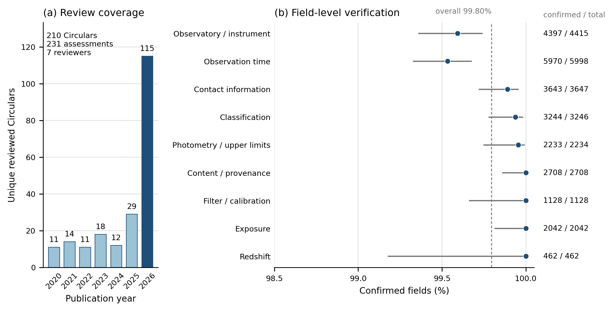
图注：Human verification of the final production parser using reviews submitted from 2026 July 13 onward (snapshot: 2026 July 30). (a) Publication-year distribution of the 210 unique Circulars covered by 231 assessments from seven reviewers. Twenty Circulars were independently assessed by multiple reviewers: 19 by two reviewers and one by three reviewers. (b) Confirmed fraction for definite (confirmed or rejected) field decisions, grouped by scientific content. Points show the observed fractions, horizontal bars show 95\% Wilson score intervals, and right-hand labels give the confirmed and definite counts. The dashed line marks the overall field-confirmation fraction of 25,827/25,880 (99.80\%). The seven uncertain verdicts and one source-supported missing observation are not included in the plotted fractions.
对应解读：对应“建议重点查看的图表”第3项人工审计结果表，以及“关键图表逐图导读”图3；也支撑模型拟合段落中关于字段级残差、错误集中字段和置信区间的讨论。
入选理由：这是验证系统可靠性的核心图。caption 明确给出人工审核样本、按科学内容分组的字段确认率、95% Wilson 置信区间、总确认率 25827/25880=99.80% 以及不确定判定处理方式，直接支撑日报中关于不能只看总体准确率、要看分字段误差和系统风险位置的解读。
来源与置信度：\(arxiv_source\)；high；\(arxiv_source\) / main.tex:figure[2]
Fig03
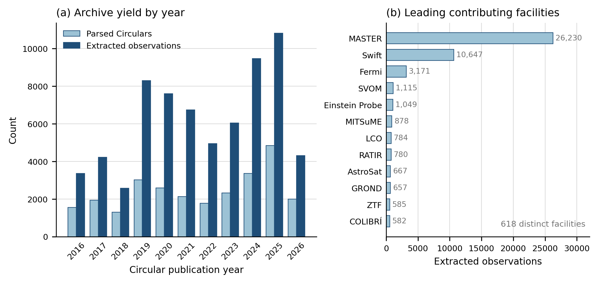
图注：The follow-up database produced by applying the final pipeline to the GCN Circular archive from 2016 onward (snapshot: 2026 July 30). (a) Parsed Circulars and extracted observations per Circular publication year. (b) The twelve facilities contributing the most extracted observations, out of 618 in total; instrument-level names are grouped under their facility. The wide-field MASTER network dominates because it reports many short exposures and limits per Circular.
对应解读：对应“建议重点查看的图表”第6项历史档案产出分布，以及“关键图表逐图导读”图5。
入选理由：该图展示 2016 年以来 GCN Circular 存档处理后的年度 Parsed Circulars 和 extracted observations 分布，并列出贡献观测最多的设施，直接支撑日报中关于历史档案产出、设施贡献、GCN 使用习惯和仪器参与度变化不能简单解释为瞬变率变化的提醒。
来源与置信度：\(arxiv_source\)；high；\(arxiv_source\) / main.tex:figure[3]
Fig04
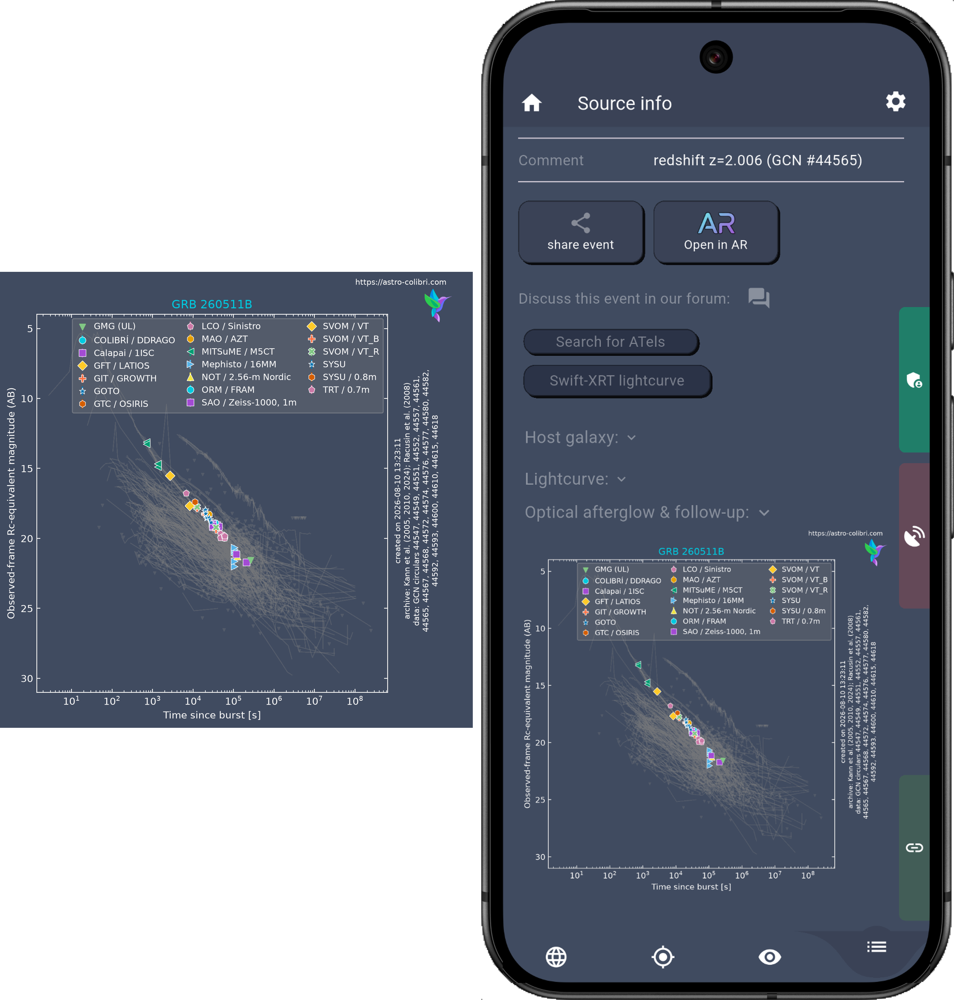
图注：Optical-afterglow and follow-up presentation in \(\ac{}.\) Panel (a) shows an example context figure for GRB~260511B, combining current-event photometry extracted from GCN Circulars and observation reports with archival GRB afterglow measurements on a common observer-frame \(\rcab{}\) magnitude scale. Panel (b) shows the mobile source-information panel with the generated context figure, light-curve download, fitting control, and expandable observation-report section.
对应解读：对应“建议重点查看的图表”第7项用户端光学余辉上下文图，以及“关键图表逐图导读”图6。
入选理由：该图展示 Astro-COLIBRI 中的光学余辉上下文产品，将当前事件从 Circular 和报告抽取的测光与历史 GRB 余辉样本放在共同 observer-frame Rc/AB 星等尺度上，并展示移动端信息面板；非常适合说明抽取数据库如何转化为面向实时观测的用户端科学产品。
来源与置信度：\(arxiv_source\)；high；\(arxiv_source\) / main.tex:figure[4]
Fig05
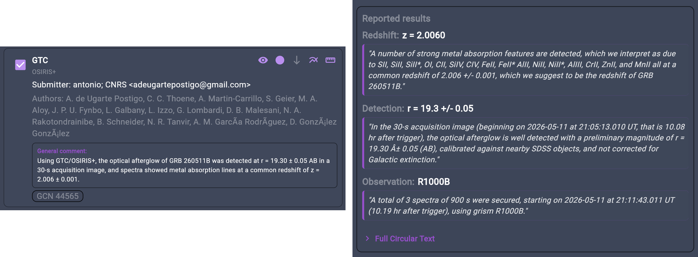
图注：Report-level presentation of extracted Circular information in the \(\ac{}\) frontend. Panel (a) shows an individual report summary card with selection state, observatory/instrument metadata, classification icons, submitter and author information, extracted summary text, and Circular identifier. Panel (b) shows the expanded report details, where structured values such as redshift, detection magnitude, and observing setup are displayed together with the exact Circular excerpts from which they were extracted; the full Circular text can be opened below for verification and complete context.
对应解读：对应“建议重点查看的图表”第2项抽取 schema 或示例输出表，也关联第5项红移等结构化字段展示与原文核验。
入选理由：虽然不是完整 schema 图，但它具体展示 report-level 前端如何呈现抽取出的 observatory/instrument、classification、submitter/author、summary、redshift、detection magnitude、observing setup 等结构化字段，并保留对应 Circular 原文摘录用于核验，直接支撑日报中关于结构化记录不能脱离原始文本、候选值和确认值需可追溯的讨论。
来源与置信度：\(arxiv_source\)；high；\(arxiv_source\) / main.tex:figure[5]
Fig06
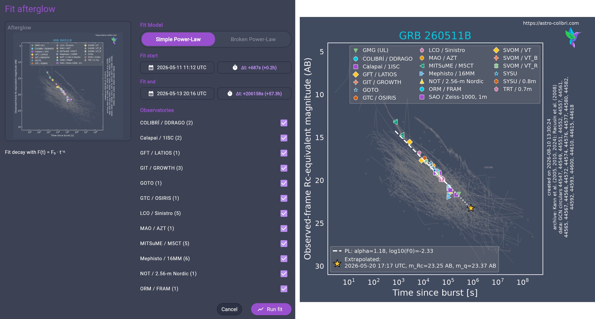
图注：Frontend fitting workflow for the optical-afterglow product. Panel (a) shows the fit dialog, where a user selects the model family, time interval, and contributing observatory/instrument groups and may request an extrapolation to a future observing time. Panel (b) shows the resulting figure with the complete event photometry and archival comparison population, the curve fitted to the selected detections, its extension to the requested time, and the extrapolated point marked by a star.
对应解读：对应模型拟合段落中关于抽取结果可作为光学余辉拟合输入层、但需人工复核关键点的应用讨论；也延伸自“建议重点查看的图表”第7项用户端光学余辉产品。
入选理由：该图展示前端基于提取测光进行光变模型选择、时间区间筛选、设施/仪器分组选择、外推和拟合曲线显示的流程。它不是论文抽取质量验证的核心证据，但能说明结构化数据库如何进入实际光变拟合和观测规划工作流，因此可作为应用层补充图。
来源与置信度：\(arxiv_source\)；high；\(arxiv_source\) / main.tex:figure[6]
强相关工作
这项工作应放在 GCN、VOEvent、时域 broker 和 GRB 数据库建设的脉络中看。GCN Circular 是同类源和同类事件的历史记录核心；VOEvent 更偏机器可读告警；TNS 面向瞬变命名和分类；Fink、Lasair、ANTARES、AMPEL 等 broker 处理巡天 alert stream。本文的独特位置是把自由文本后随报告转成结构化事件级记录，而不是替代原始告警系统。检索关键词可用 “GCN Circulars structured extraction”, “Astro-COLIBRI”, “VOEvent transient astronomy”, “GRB follow-up database”, “schema constrained LLM information extraction astronomy”。
与相近工作相比，本文更像天文信息基础设施论文，而不是单一天体物理发现论文。它与人工维护的 GRB 红移表、Swift/XRT GRB repository、GRBweb 这类资料库存在互补关系：后者往往更适合整理后的高质量科学量，前者则保留实时 Circular 中的观测过程和时间顺序。潜在张力在于“实时知识状态”与“事后整理真值”并不总一致；红移交叉验证中出现的候选宿主、限制和后续修订正是这种张力的例子。后续读者应检索同一事件的原始 Circular、后续同行评议论文和整理数据库，避免把任何单一来源当作绝对真值。
同一事件 / 同类源线索：
相似工作：
- https://gcn.nasa.gov/
- https://www.wis-tns.org/
- https://fink-broker.org/
- https://lasair-ztf.lsst.ac.uk/
基础理论 / 方法工作：
相反观点 / 张力线索：
（未提供）
8. Reconstructing the Auger UHECR Dipole: A Hybrid Analysis of 4LAC AGNs and Nearby Starburst Galaxies
- 来源：arXiv / astro-ph.HE
- 链接：https://arxiv.org/abs/2608.23107v1
- 作者：Swaraj Pratim Sarmah, Umananda Dev Goswami, Sovan Chakraborty
- 评分：novelty 7/10，importance 7/10，relevance 9/10，final 8.70/10
- 推荐理由：直接针对Auger超高能宇宙线偶极各向异性，结合Fermi-LAT 4LAC AGN和近邻星暴星系混合模型；与宇宙线起源和伽马源族群高度相关。
中文题目：重建 Auger 超高能宇宙线偶极：结合 4LAC 伽马射线 AGN 与近邻星暴星系的混合模型
做了什么：这篇文章问的是：Pierre Auger Observatory 在能量高于 \(8\,\mathrm{EeV}\) 的超高能宇宙线中看到的大尺度偶极各向异性，能否由已知天体源分布解释。作者把 Fermi-LAT 4LAC 伽马射线 AGN、近邻星暴星系、源通量权重、红移分布、\(\mathrm{GZK}\) 衰减和混合成分传播效应放进同一个半经验框架，发现单独的 AGN 或单独的星暴星系都不能同时给出 Auger 观测到的偶极幅度和方向。最佳解释是一个混合模型：在 \(8\)--\(16\,\mathrm{EeV}\) 能段，各向异性通量中约 \(23\%\) 来自 AGN、约 \(45\%\) 来自星暴星系，其余近似各向同性背景；模型给出偶极幅度 \(5.03\%\)，方向 \((104.1^\circ,-25.1^\circ)\)，与 Auger 偶极方向相差约 \(7.10^\circ\)。
为什么重要：Auger 偶极是目前超高能宇宙线起源问题中最稳健的大尺度观测线索之一，但它不是“指向某个源”的小角度关联，而是经过磁场偏折、能量损失和成分混合后留下的低阶多极信号。这篇文章的重要性在于，它把常被分别讨论的两类候选源——伽马射线亮 AGN 和近邻星暴星系——放在同一个可比较的偶极重建框架中，检验它们是否能解释 \(8\,\mathrm{EeV}\) 以上的 Auger 结果。
理论 / 观测 / 仪器方法价值：对理论而言，这项工作给出了一个源类混合、传播衰减和近似各向同性背景共同决定偶极的可操作模型；对观测而言，它把 Auger 偶极方向和幅度转化为对候选源族贡献比例的约束；对方法而言，它展示了如何用目录源加权、\(\mathrm{GZK}\) horizon 和混合成分假设从天空图直接构造偶极矢量，而不是只做事后角距离比较。
为什么应该关注：如果你关心超高能宇宙线源，应该关注这篇文章的原因是：它提醒我们，单一源族解释 Auger 偶极很可能过于简单；近邻星暴星系可能主导各向异性部分，而 AGN 更像是次要但不可忽略的补充。即使模型仍很依赖目录完备性、磁场偏折和源权重假设，它也给出了一个清晰的判据：任何成功模型不仅要给出足够大的偶极幅度，还必须把方向推到 Auger 看到的南天区域附近。
展开详细解读：文章讲解、背景、理论、重点章节、图表与相关工作
文章详细讲解
科学问题：Pierre Auger Observatory 在 \(E>8\,\mathrm{EeV}\) 的宇宙线到达方向中报告了显著的大尺度偶极，这通常被视为银河外起源的强证据之一。但“偶极存在”并不等于“源已经确定”。宇宙线带电，会受到银河磁场和河外磁场偏折；同时高能质子和原子核在宇宙微波背景、红外背景中发生光致相互作用，导致 \(\mathrm{GZK}\) 衰减。因此，候选源在电磁波段的天空分布与宇宙线到达方向之间不会是一一对应关系。本文的核心问题是：Fermi-LAT 4LAC 中的伽马射线 AGN 和近邻星暴星系，是否能在加入传播衰减和混合成分后重建 Auger 观测到的偶极幅度与方向。
作者怎么做：作者从 4LAC AGN 目录和近邻星暴星系样本出发，用源的伽马射线通量、距离或红移、\(\mathrm{GZK}\) 衰减因子以及能段相关传播权重构造预期的宇宙线天空强度图。随后把强度图分解为偶极分量，并与 Auger 在不同能段报告的偶极幅度和方向比较。与只问“哪些源离到达方向近”不同，本文关注的是低阶大尺度统计量：偶极矢量的模长和方向。作者还引入混合成分框架，使不同电荷数和不同能量下的传播 horizon、磁偏折和可见各向异性强度能够以有效参数形式进入模型。
关键结果：单独使用 AGN 源族，模型难以同时匹配 Auger 偶极的方向和幅度；单独使用近邻星暴星系也不够。混合 AGN 加星暴星系后，\(8\)--\(16\,\mathrm{EeV}\) 能段的最佳拟合给出约 \(23\%\) 的 AGN 贡献和约 \(45\%\) 的星暴星系贡献，其余为准各向同性背景。该模型给出偶极幅度 \(5.03\%\)，方向 \((104.1^\circ,-25.1^\circ)\)，与 Auger 观测方向的角距离约 \(7.10^\circ\)。作者还指出，随能量区间变化，近邻星暴星系在各向异性分量中的相对作用增强，而 AGN 通常提供较弱但非零的补充。
局限和下一步：本文是半经验的目录加权重建，不是完整的三维磁流体传播模拟。结果会受到 4LAC 目录选择函数、星暴星系样本选取、伽马射线通量是否真正追踪宇宙线注入功率、未知源光度函数、银河磁场模型、河外磁场扩散以及 Auger 暴露函数等因素影响。下一步应把能谱、成分、到达方向和候选源目录放入联合似然中，并测试不同银河磁场模型、不同核素注入谱以及不同源演化。更关键的是，应检验同一混合模型能否同时解释 Telescope Array 热斑、Auger 小尺度相关检验以及未来更高统计量的南北全天数据。
关键结果是怎么做出来的
本文最重要的证据链从样本定义开始。作者选取 Fermi-LAT Fourth AGN Catalog 中的伽马射线 AGN 作为一类候选源，并选取近邻星暴星系作为另一类候选源。4LAC 的优势是天空覆盖好、源数多、伽马射线通量可作为活动核非热功率的经验权重；星暴星系样本的优势是距离近、红外和射电活动强、与强恒星形成和强磁化外流有关，更容易在 \(\mathrm{GZK}\) horizon 内贡献可观的超高能宇宙线通量。作者没有把所有源等权处理，而是把源通量、距离衰减和传播损失都纳入权重。
统计对象不是逐事件小角度关联，而是 Auger 报告的偶极。对每个源族，作者构造一个天空强度分布，再计算相应偶极矢量。比较量至少包括偶极幅度、赤经赤纬方向以及与 Auger 偶极方向的角距离。单源族模型的失败不是说这些源完全不能产生宇宙线，而是它们无法在给定权重方案下同时满足两个约束：\(d\) 要接近 Auger 的百分之几水平，方向也要落在观测置信区域附近。
核心模型比较是 AGN-only、SBG-only 和 AGN+SBG+准各向同性背景三类。混合模型中，自由度主要体现为 AGN 分量、星暴星系分量和背景分量的相对归一化。最佳拟合在 \(8\)--\(16\,\mathrm{EeV}\) 给出 \(f_{\rm AGN}\simeq0.23\)、\(f_{\rm SBG}\simeq0.45\)，模型偶极幅度为 \(d\simeq5.03\%\)，方向为 \((l,b)\) 或等效天球坐标中的 \((104.1^\circ,-25.1^\circ)\)，与 Auger 方向相距 \(7.10^\circ\)。这说明星暴星系对方向拉动很强，AGN 则修正幅度和方向，使总偶极更接近观测。
支撑结论的关键图表应包括：源在天空中的分布图、加入传播权重后的通量图、不同源族的偶极矢量比较图、各能段最佳拟合分量比例表，以及模型与 Auger 偶极的角距离或拟合优度曲线。读者需要特别看 AGN-only 和 SBG-only 的残差：是幅度错了，还是方向错了，还是两者都错。若只有总模型结果而缺少单源族失败的定量诊断，那么“需要混合模型”的说服力会下降。
系统误差方面，最重要的是源目录选择函数、权重代理量和磁场偏折。4LAC 伽马射线亮度可能只追踪喷流指向地球的 AGN，而不是所有能够加速超高能宇宙线的 AGN；星暴星系的红外或射电亮度也未必线性追踪 \(E>8\,\mathrm{EeV}\) 的宇宙线注入率。另一方面，若宇宙线成分偏重，磁场会显著涂抹源方向，偶极仍可保留，但高阶结构会被抑制。因此稳健性检验应包括改变源权重、改变最大距离、改变成分假设、改变角平滑尺度和改变背景归一化。
展开背景、理论、公式、模型、章节和图表导读
背景知识
研究对象是超高能宇宙线，通常指能量达到 \(10^{18}\,\mathrm{eV}\) 以上的带电粒子。到 \(8\,\mathrm{EeV}\) 以上时，银河系内常规超新星遗迹加速机制很难解释其能量和通量，主流观点认为主要起源于银河外源。Pierre Auger Observatory 在南半球拥有巨大面积的地面阵列，能够长期积累这类稀有事件，并通过到达方向分布寻找大尺度各向异性。
历史上，超高能宇宙线起源研究经历过多轮候选源变化：AGN、伽马暴、射电星系、星暴星系、星系团激波等都曾被提出。困难在于宇宙线不是光子，到达方向会被磁场偏折；同时事件率很低，极高能端的统计量长期不足。早期许多小角度关联声称后来都因统计涨落、试验因子或样本更新而削弱。相比之下，Auger 的大尺度偶极更稳健，因为它不依赖某个单一源的精确指向。
观测背景中有两条线索尤其重要。第一，Auger 在 \(E>8\,\mathrm{EeV}\) 报告了显著偶极，各向异性方向大致远离银河中心，这支持银河外起源。第二，Auger 的能谱和 \(X_{\max}\) 成分测量暗示最高能宇宙线可能不是纯质子，而是随能量变重的混合成分。混合成分会改变 \(\mathrm{GZK}\) horizon、磁偏折角和源关联强度，因此不能只用质子直线传播图像解释偶极。
为什么现在值得重新看？一方面，Fermi-LAT 4LAC 提供了更完整的伽马射线 AGN 目录，可用来构造全天候选源模板；另一方面，Auger 对星暴星系方向的相关性检验曾显示有趣迹象，使星暴星系成为严肃候选源族。把两者放在同一个框架中比较，有助于判断 Auger 偶极是否要求多个源族共同贡献，还是只是某个目录选择效应的表现。
该领域常见误区包括：把偶极方向误读为“宇宙线直接来自该方向的一个源”；把伽马射线亮度等同于超高能宇宙线功率；忽略银河磁场对重核的偏折；以及只看角距离而不看暴露函数和试验因子。本文的价值正是在于把问题转化为大尺度模板匹配：源族能否在合理权重下产生正确的低阶多极，而不是追逐单个事件和单个天体的表面邻近。
基础理论 / 方法脉络
最基础的物理图像是：若宇宙线源在大尺度上完全均匀，并且传播各向同性，那么地球上看到的到达方向应当近似各向同性；若近邻宇宙中的源分布不均匀，或传播 horizon 有限，那么到达方向会出现低阶多极结构。偶极是最简单的非均匀项，可理解为天空一侧通量略高、相反方向通量略低。Auger 观测到的百分之几偶极正是这种近邻源分布和传播效应叠加后的信号。
候选源模板的关键是权重。对第 \(i\) 个源，若其宇宙线注入功率与某个电磁波段通量相关，则地球接收的贡献可近似写成与源内禀亮度成正比、与距离平方反比，并乘上传播衰减因子。对 AGN，本文使用 4LAC 伽马射线信息作为活动核非热活动的代理；对星暴星系，近邻性和强恒星形成活动使其在高能端更容易留下大尺度结构。这里的核心假设是电磁亮源统计上也更可能是宇宙线强源，但这种假设并非必然成立。
传播效应主要有两类。第一是能量损失：高能质子会与宇宙微波背景发生光 pion 产生，原子核会发生光致裂变，导致远距离源贡献被压低，这通常归入 \(\mathrm{GZK}\) 衰减。第二是磁偏折：带电粒子在银河和河外磁场中偏转，偏折角大致随电荷数 \(Z\) 增大、随能量 \(E\) 减小。混合成分模型等价于承认到达地球的事件包含不同 \(Z\) 的粒子，因此同一源模板会被不同程度地平滑。
观测统计上，地面阵列并不是均匀看全天。Auger 位于南半球，暴露函数随赤纬变化，因此任何源模板都必须与观测暴露相乘后再与数据比较。若不处理暴露函数，一个北天源密集目录可能会给出错误的偶极方向或幅度。本文关注的偶极重建本质上是对暴露修正后天空强度的一阶球谐分量估计。
常见退化关系包括源权重与背景分量的退化、磁场平滑角与源贡献比例的退化、成分与传播 horizon 的退化。比如增加各向同性背景会降低总偶极幅度；增大磁偏折平滑会削弱高阶结构但不一定完全抹掉偶极；把成分改得更重会让远源和小角度关联更弱。理解这些退化，才能正确解读本文给出的 \(23\%\) AGN 和 \(45\%\) 星暴星系贡献：它们是特定模板与假设下的有效比例，而不是源天体真实能量预算的唯一解。
公式与推导
第一步，从天空强度开始。设到达方向单位矢量为 \(\hat{\mathbf n}\)，宇宙线积分强度可作偶极近似：
这里 \(I_0(E)\) 是全天平均强度，\(\mathbf d(E)\) 是能量相关偶极矢量，偶极幅度为 \(d(E)=|\mathbf d(E)|\)。该式适用于大尺度各向异性较弱、\(d\ll1\) 的情形，也是把复杂源分布压缩成一阶方向统计量的起点。
第二步，把离散候选源写成模板。若第 \(i\) 个源在方向 \(\hat{\mathbf n}_i\)、距离 \(D_i\)，其权重可近似写为
其中 \(A_s\) 是源族归一化，\(L_i\) 是由伽马射线通量、红外亮度或其他电磁指标推断的代理亮度，\(\lambda_{\rm loss}(E,Z)\) 是能量和电荷相关的损失长度。指数项是 \(\mathrm{GZK}\) 衰减的简化写法，强调远源在最高能端被压低。
第三步，考虑磁场涂抹。若用角尺度 \(\sigma_i(E,Z)\) 的核函数表示偏折，源模板可写成
其中 \(s\) 表示 AGN 或星暴星系源族，\(K\) 是归一化角平滑核。对小角偏折，常用尺度关系为
其中 \(B\) 是典型磁场强度，\(L_{\rm coh}\) 是相干长度。该比例说明重核和低能事件更容易被涂抹。
第四步，混合源族与各向同性背景。本文所讨论的混合模型可概念化为
并满足
这里 \(f_{\rm AGN}\)、\(f_{\rm SBG}\) 和 \(f_{\rm iso}\) 是到达地球通量中的有效比例。本文在 \(8\)--\(16\,\mathrm{EeV}\) 的结果可理解为在该约束下寻找最接近 Auger 偶极的比例。
第五步，从模型强度计算偶极矢量。若忽略暴露不均匀，连续形式为
系数 \(3\) 来自球面上一阶项的归一化。实际地面阵列需要加入暴露函数 \(\omega(\hat{\mathbf n})\)，否则估计会偏向可观测天区。
第六步，观测事件的似然可写成方向概率乘积：
这里 \(N\) 是事件数，\(\hat{\mathbf n}_j\) 和 \(E_j\) 是第 \(j\) 个事件的方向和能量。即使本文主要与已发表偶极量比较，这个式子也说明完整事件级分析应如何连接模板与数据。
第七步，若只比较偶极幅度和方向，可定义近似的诊断量：
其中 \(d_{\rm Auger}\) 是 Auger 测得的偶极幅度，\(\sigma_d\) 是其不确定度，\(\Delta\psi\) 是模型偶极方向与观测偶极方向的球面角距离，\(\sigma_\psi\) 表示方向误差尺度。本文给出的 \(\Delta\psi\simeq7.10^\circ\) 就是这类方向匹配的核心量。
第八步，方向角距离由球面余弦公式给出：
其中 \((l_1,b_1)\) 与 \((l_2,b_2)\) 是模型和观测偶极方向的经纬坐标。这个公式让读者可以直接检查模型方向是否真的落在 Auger 置信区域附近，而不是只看二维投影图上的视觉接近。
模型拟合 / 应用方法
本文的拟合量主要是源族贡献比例和由此产生的偶极矢量。最简化的参数可以写成 \(f_{\rm AGN}\)、\(f_{\rm SBG}\)、\(f_{\rm iso}\)，再加上固定或半固定的源权重、传播损失和角平滑设定。拟合目标是让模型偶极幅度 \(d_{\rm model}\) 和方向尽可能接近 Auger 在相应能段报告的 \(d_{\rm Auger}\) 与方向。与能谱拟合不同，这里的关键残差不是通量随能量的形状，而是球面上一阶各向异性矢量的残差。
如果做事件级分析，合理的统计量是包含暴露函数的方向似然；如果只使用 Auger 已发表偶极结果，则可用偶极幅度差和方向角距离构造有效 \(\chi^2\) 或距离函数。后者信息量较少，但适合快速比较不同源模板。读者应注意：当只拟合偶极时，多个非常不同的天空图可能给出相似的一阶矢量，因此模型并未被高阶多极或小尺度相关充分检验。
参数退化很明显。增加 \(f_{\rm iso}\) 会稀释偶极，使 \(d_{\rm model}\) 下降；提高星暴星系权重可能把方向拉向近邻星暴星系集中的区域；AGN 模板因源数多、红移分布更广，往往产生更分散或更低对比度的贡献。磁场平滑角与源族比例也会退化：更大的平滑角可以让少数近邻强源产生更宽的大尺度结构，从而在偶极层面模仿更多弱源的叠加。
系统误差需要分层理解。目录层面，4LAC 受伽马射线探测阈值、银河面遮蔽、喷流 beaming 和红移不完备影响；星暴星系样本受距离 cut、红外亮度估计和局部宇宙结构影响。传播层面，\(\mathrm{GZK}\) 衰减长度依赖核素和背景光模型；磁场层面，银河磁场模型的不确定性可改变偶极方向数度到数十度。观测层面，Auger 暴露函数、能量标定和事件选择也会影响不同能段的偶极比较。
实际应用上，这类模型适合作为“源族可行性筛选器”。若某源族无论怎样归一化都无法把偶极方向拉到观测区域，就很难成为主导源族；若某混合模型能同时解释偶极、能谱和成分，才值得进入更昂贵的蒙特卡洛传播模拟。本文结果的最佳读法不是把 \(23\%\) 和 \(45\%\) 当成精确宇宙学常数，而是把它们看作在当前目录和传播假设下，AGN 次要、近邻星暴星系主要、背景不可忽略这一结构性结论。
重点章节 / 结果段落怎么读
数据与样本部分应优先看作者如何定义 4LAC AGN 样本和近邻星暴星系样本。关键问题包括：是否剔除低银纬源，如何处理没有红移的 AGN，星暴星系的距离上限如何设定，源通量采用哪个波段，是否对目录不完备进行修正。这些选择直接决定模板的偶极方向。
传播与权重方法部分是论文的核心。读者应检查源权重是否包含距离平方衰减、\(\mathrm{GZK}\) 衰减、混合成分影响和磁偏折平滑。尤其要看 \(\mathrm{GZK}\) attenuation 的具体参数化，因为 \(8\)--\(16\,\mathrm{EeV}\) 与更高能段的 horizon 不同，近邻源优势会随能量变化。
偶极重建部分需要看清作者如何从天空模板得到偶极幅度和方向。理想情况下，应包括暴露函数处理、球面坐标定义、不同能段的独立计算，以及与 Auger 观测值的角距离比较。若论文只给最终方向而没有说明归一化和暴露修正，读者应保持谨慎。
主结果部分应集中比较 AGN-only、SBG-only 和 hybrid 模型。最重要的是 \(8\)--\(16\,\mathrm{EeV}\) 能段，因为摘要中给出了明确最佳拟合：\(f_{\rm AGN}=23\%\)、\(f_{\rm SBG}=45\%\)、\(d=5.03\%\)、方向角差 \(7.10^\circ\)。读者应同时看其他能段是否呈现一致趋势，即星暴星系随能量升高更主导各向异性分量。
讨论和稳健性部分应检查作者如何处理替代解释。需要看他们是否改变源权重、源距离 cut、背景比例、组成假设和角平滑尺度；是否讨论 4LAC 选择效应；是否承认星暴星系与局部大尺度结构之间的混淆。附录若包含目录表、参数扫描或坐标转换，也很值得读，因为偶极方向对这些技术细节敏感。
建议重点查看的图表
-
候选源全天分布图：看 4LAC AGN 和近邻星暴星系在银河坐标或赤道坐标中的分布，特别是 Auger 可见天区内的源密度和强源位置。
-
加权后天空强度模板图：不要只看源点位置，要看加入通量、距离和 \(\mathrm{GZK}\) 衰减后的亮区是否明显向近邻星暴星系集中。
-
AGN-only、SBG-only 与 hybrid 的偶极矢量图：重点看矢量终点与 Auger 偶极方向的角距离，以及各模型的偶极幅度是否在观测误差范围内。
-
各能段最佳拟合比例表：检查 \(f_{\rm AGN}\)、\(f_{\rm SBG}\)、\(f_{\rm iso}\) 随能量的变化，确认“星暴星系越来越主导”是否由多个能段支持。
-
拟合优度或参数扫描图：看贡献比例平面上是否存在宽阔退化谷，还是最佳点很尖锐；这决定了百分比结果应被理解为强约束还是模型依赖估计。
-
稳健性检验图或表：检查改变角平滑、源权重、红移 cut、成分假设后，偶极方向和幅度是否仍接近 Auger。
关键图表逐图导读
图 1：通常应是候选源在天空中的分布。横轴可能是银河经度或赤经，纵轴是银河纬度或赤纬，符号区分 4LAC AGN 与星暴星系，点大小可能代表通量或权重。读图时不要把点多的区域等同于贡献大的区域，因为远处大量弱 AGN 在 \(\mathrm{GZK}\) 衰减和距离平方衰减后可能贡献有限；近邻少数星暴星系反而可能主导偶极。
图 2：应关注加权后的天空模板或通量图。颜色条代表模型强度，可能分别给出 AGN-only 和 SBG-only。关键是比较亮区与 Auger 偶极方向是否同侧，以及模板是否过于局域化或过于平滑。读图陷阱是投影会扭曲角距离，最好结合文中的球面角距离数值。
图 3：若论文给出偶极重建图，应重点看不同模型的偶极矢量终点。坐标轴通常是天球投影，Auger 观测方向可能带有置信区域，模型方向用星号、箭头或不同颜色标出。最重要的结论是 hybrid 模型方向与 Auger 相差约 \(7.10^\circ\)，而单源族模型偏离更大或幅度不对。
图 4：参数比例扫描图可能以 \(f_{\rm AGN}\) 为横轴、\(f_{\rm SBG}\) 为纵轴，颜色表示 \(\chi^2\)、角距离或偶极幅度残差。应查看最佳点 \((0.23,0.45)\) 周围的置信区域是否封闭，以及是否存在沿着固定总各向异性分量的退化带。若退化很宽，百分比不应过度解释。
图 5：能量分段结果图或表应显示 \(8\)--\(16\,\mathrm{EeV}\)、更高能段或累计能段中的偶极幅度和方向。读者应检查趋势是否物理合理：随能量升高，传播 horizon 变短、近邻源相对重要性增强；但事件数下降会使统计误差增大。因此高能段若误差很大，不能把比例变化读成精确演化。
图 6：稳健性图应展示改变模型假设后的结果，例如不同平滑角、不同 \(\mathrm{GZK}\) 衰减长度、不同源权重代理量。重点看 hybrid 结论是否稳定。如果只有最佳模型而缺少这些检验，读者应把结论视为有启发性的模板匹配，而不是最终源鉴定。
论文原图 / 可嵌入图片
Fig04
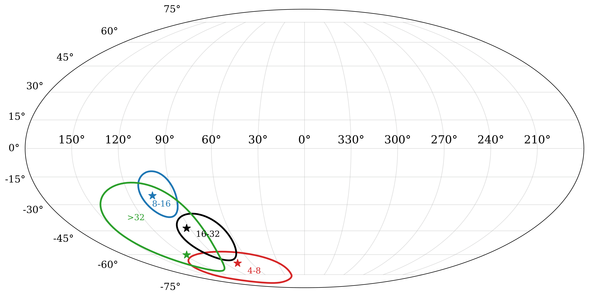
图注：Energy evolution of the reconstructed hybrid AGN+SBG dipole direction in equatorial coordinates for the $4$--$8$ EeV, $8$--$16$ EeV, $16$--$32$ EeV, and $>32$ EeV energy intervals. The coloured contours represent the corresponding Auger dipole-direction uncertainty regions, while the star symbols denote the reconstructed dipole directions obtained from the best-fit hybrid source fractions listed in Table~\(\ref{tab:hybrid_fit}.\) The reconstructed dipole progressively shifts toward southern declinations with increasing energy, reflecting the growing dominance of nearby southern starburst galaxies at the highest energies. The agreement between the reconstructed and observed dipole directions improves significantly with energy.
对应解读：对应“建议重点查看的图表”第3项AGN-only、SBG-only与hybrid偶极矢量图，以及“关键图表逐图导读”图3/图5中关于不同能段偶极方向、Auger置信区域和hybrid模型方向匹配的讨论。
入选理由：这是候选图中最直接支撑日报核心结论的图：它给出不同能段hybrid AGN+SBG重建偶极方向，并叠加Auger偶极方向不确定区域，可直接检验模型方向是否接近观测、是否随能量向南天近邻星暴星系主导区域移动。相比源分布或传播曲线，它直接展示了论文最关键的偶极方向拟合诊断量。
来源与置信度：\(arxiv_source\)；high；\(arxiv_source\) / \(paper4LAC_SBG.tex\):figure[4]
Fig05
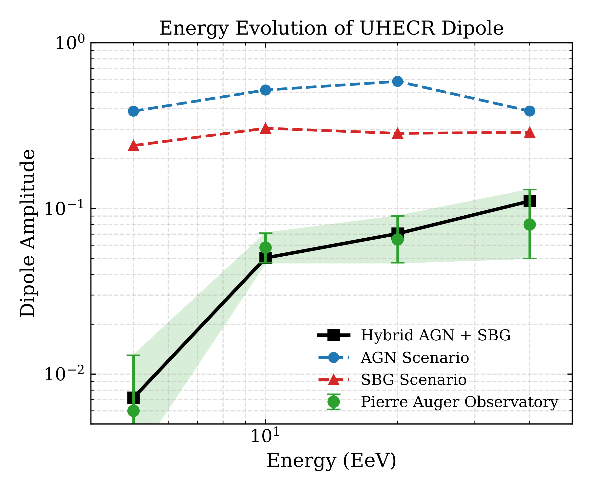
图注：Energy evolution of the UHECR dipole amplitude in the hybrid AGN+SBG framework compared with the Auger measurements.
对应解读：对应“建议重点查看的图表”第3项偶极幅度是否在观测误差范围内、第4项各能段结果趋势，以及“关键图表逐图导读”图5关于能量分段偶极幅度和Auger测量比较的解读。
入选理由：日报反复强调模型不仅要匹配方向，还要匹配偶极幅度。该图直接比较hybrid框架下偶极幅度随能量的演化与Auger测量，是检验5.03%量级结果和高能段趋势的关键证据。它与Fig04互补，分别覆盖偶极矢量的模长和方向。
来源与置信度：\(arxiv_source\)；high；\(arxiv_source\) / \(paper4LAC_SBG.tex\):figure[5]
Fig01
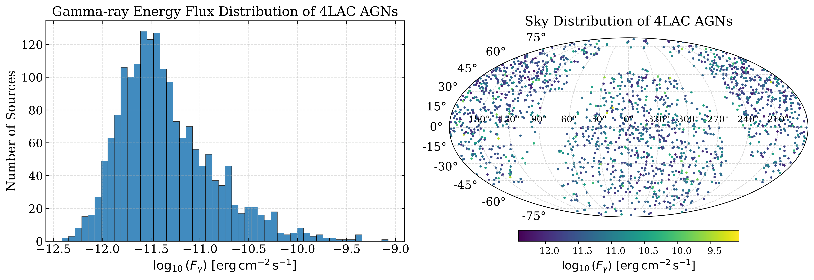
图注：Left: Distribution of the gamma-ray energy fluxes of 4LAC AGNs in the $100$ MeV--$100$ GeV energy range, showing that most sources are relatively faint while only a few are highly luminous. Right: Equatorial sky distribution of the 4LAC AGNs in a Mollweide projection, color-coded by gamma-ray energy flux. The reduced source density near the Galactic plane is due to strong Galactic foreground emission, which limits the detection of extragalactic AGNs. The catalog serves as the source population for the UHECR dipole analysis.
对应解读：对应“建议重点查看的图表”第1项候选源全天分布图，以及“关键图表逐图导读”图1关于4LAC AGN天空分布、通量编码和银河面选择效应的说明。
入选理由：该图展示4LAC AGN的通量分布和全天赤道坐标分布，是理解AGN-only模板为何可能较分散、且受银河面探测选择影响的基础。虽然它不包含SBG分布和偶极拟合结果，但对解释目录选择函数、强源位置和源权重输入非常有用。
来源与置信度：\(arxiv_source\)；high；\(arxiv_source\) / \(paper4LAC_SBG.tex\):figure[1]
Fig03
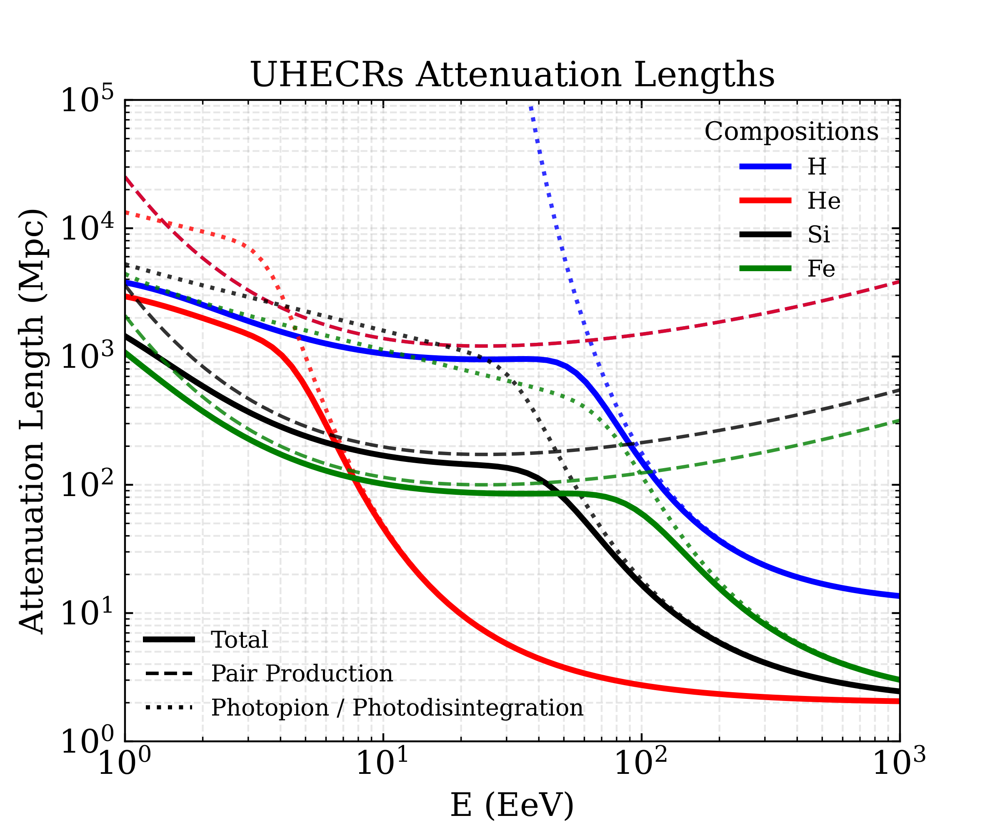
图注：Energy-dependent attenuation lengths of UHECRs for different primary compositions: Proton (blue), Helium (red), Silicon (black), and Iron (green). Solid lines show the total attenuation length, dashed lines represent pair-production losses, and dotted lines indicate photopion production (protons) or photodisintegration (nuclei). The rapid decline of the dotted curves marks the onset of strong GZK energy losses.
对应解读：对应“建议重点查看的图表”第2项加权模板中的GZK衰减因素，以及模型拟合段落中关于传播损失、混合成分和能量依赖horizon的讨论。
入选理由：该图不是最终拟合诊断图，但它给出不同核素的能量依赖衰减长度，是论文构造源权重和解释近邻SBG随能量升高更重要的物理基础。它能帮助读者理解为什么远处大量AGN在高能段贡献被压低。
来源与置信度：\(arxiv_source\)；high；\(arxiv_source\) / \(paper4LAC_SBG.tex\):figure[3]
Fig02
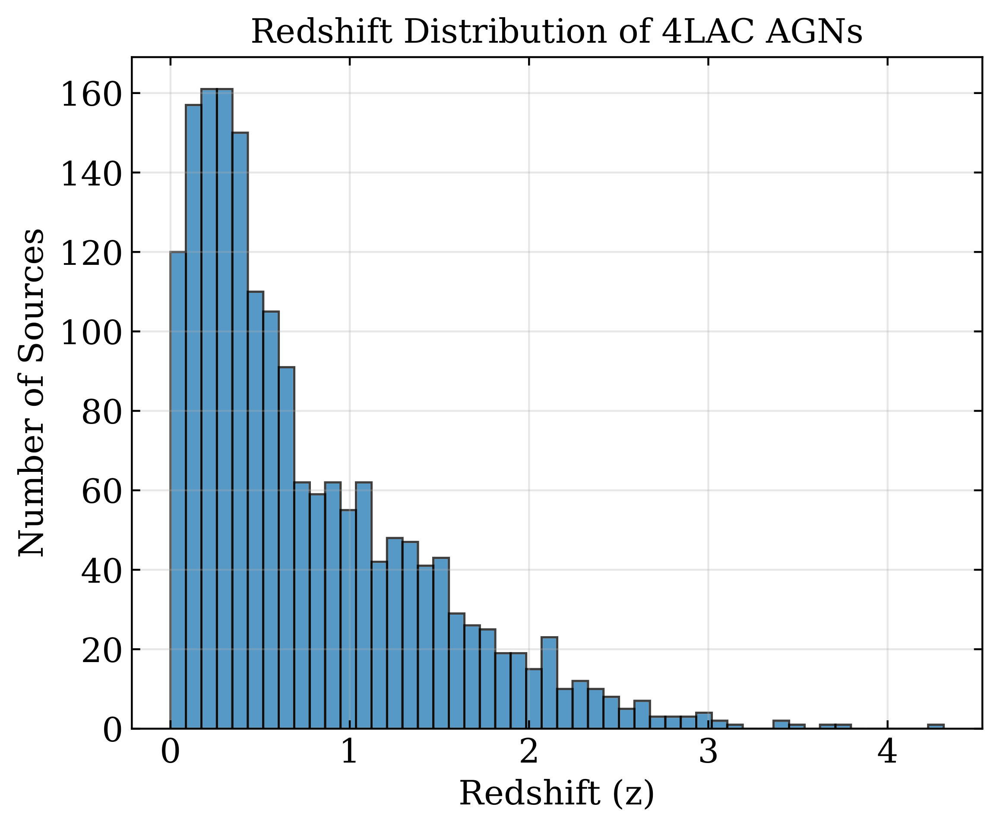
图注：Redshift distribution of 4LAC AGNs after removing sources with missing or non-physical redshifts. A total of $1806$ sources are retained for the analysis.
对应解读：对应模型拟合段落中关于4LAC红移分布、距离权重和目录完备性的系统误差讨论。
入选理由：该图仅展示AGN红移分布，不能直接检验hybrid比例、偶极方向或幅度；但它能辅助说明AGN样本的距离分布和传播衰减输入。相较Fig04、Fig05和Fig01，其与日报重点图表的关系较弱，因此排序靠后。
来源与置信度：\(arxiv_source\)；high；\(arxiv_source\) / \(paper4LAC_SBG.tex\):figure[2]
强相关工作
与本文最直接相关的是 Auger 对 \(E>8\,\mathrm{EeV}\) 大尺度偶极的观测论文，以及 Auger 对星暴星系和其他候选源目录的小尺度或中尺度相关检验。这些工作提供了本文要解释的观测目标：偶极幅度、方向、能量阈值和统计显著性。建议检索关键词包括“Pierre Auger large-scale anisotropy dipole above 8 EeV”、“Auger starburst galaxies UHECR anisotropy”、“UHECR dipole mixed composition”。
同类源研究方面，4LAC AGN 目录、Fermi-LAT blazar catalog、射电星系和星暴星系模板分析都与本文有关。相反或有张力的方向包括：AGN 是否因喷流 beaming 而不是总宇宙线功率被高估；星暴星系相关是否只是局部大尺度结构的替代指标；Telescope Array 北天热斑与 Auger 南天偶极能否由同一源族解释。建议检索“4LAC AGN UHECR correlation”、“Telescope Array hotspot starburst galaxies”、“UHECR source catalog likelihood”。
基础理论上，应同时阅读 \(\mathrm{GZK}\) 截断、Hillas 加速条件、宇宙线在磁场中的扩散和偏折、以及混合成分传播模型的经典文献。本文的半经验模板方法并不替代这些物理过程，而是把它们压缩为衰减长度、平滑角和源权重；理解这些近似的物理来源，有助于判断模型参数是否合理。
同一事件 / 同类源线索：
- https://arxiv.org/abs/1709.07321
- https://arxiv.org/abs/1801.06160
- https://arxiv.org/abs/2608.23107
- https://arxiv.org/abs/1905.10771
相似工作：
- https://arxiv.org/abs/1709.07321
- https://arxiv.org/abs/1801.06160
- https://arxiv.org/abs/1404.5890
- https://arxiv.org/abs/1905.10771
基础理论 / 方法工作：
- https://ui.adsabs.harvard.edu/abs/1966PhRvL..16..748G/abstract
- https://ui.adsabs.harvard.edu/abs/1966JETPL...4...78Z/abstract
- https://ui.adsabs.harvard.edu/abs/1984ARA%26A..22..425H/abstract
相反观点 / 张力线索：
9. The imprint of individual neutron star spins on ejecta, $r$-process nucleosynthesis, and kilonovae in binary neutron star mergers
- 来源：arXiv / astro-ph.HE
- 链接：https://arxiv.org/abs/2608.22058v1
- 作者：Beyhan Karakas, Rahime Matur, David Radice, Roland Haas, Maximilian Ruffert
- 评分：novelty 8/10，importance 8/10，relevance 7/10，final 8.65/10
- 推荐理由：系统研究BNS个体自旋在相同有效自旋下对抛射物、r过程和千新星的影响，显示可观测EM差异可打破GW退化；对多信使致密星并合重要。
中文题目：双中子星并合中单颗中子星自旋对抛射物、\(r\) 过程核合成和千新星的印记
做了什么：这篇论文用数值相对论并合模拟和千新星辐射转移后处理，研究一个在引力波中很难分开的量：两颗中子星的单独自旋 \(\chi_1\) 与 \(\chi_2\)。引力波主导相位通常主要约束有效自旋 \(\chi_{\rm eff}\)，但作者在固定总质量、质量比和 \(\chi_{\rm eff}\) 的条件下改变单星自旋分配，发现电磁对应体并不只看 \(\chi_{\rm eff}\)。在 \(M_{\rm tot}=2.55\,M_\odot\)、\(\chi_{\rm eff}=0\) 的模型中，动力学抛射质量可相差约 \(45\) 倍，\(A\geq140\) 重元素产额跨越两个数量级以上，千新星峰值亮度差异可达约 \(0.9\) 星等，颜色差异可达约 \(1.5\) 星等。核心结论是：千新星光变曲线和颜色可能帮助打破引力波中单独自旋的退化。
为什么重要：双中子星并合参数反演中，\(\chi_1\) 与 \(\chi_2\) 的信息通常被压缩进 \(\chi_{\rm eff}\)，导致不同自旋构型在引力波数据中近似不可区分。这篇工作指出，同样的 \(\chi_{\rm eff}\) 可能对应非常不同的潮汐破坏、剪切界面、冲击加热、中微子照射和低电子丰度抛射物，因此会留下可观测的核合成与千新星差异。这对第三代引力波探测器时代和高 cadence 多色巡天很重要，因为多信使数据可能不只是确认并合发生，还能反推并合前中子星的自旋分配。
理论 / 观测 / 仪器方法价值：理论价值在于，它把单独自旋从引力波相位的次级修正，提升为影响抛射物和核合成的动力学变量；观测价值在于，它给出了同一 \(\chi_{\rm eff}\) 下可达 \(\sim1\) 星等量级的千新星亮度和颜色可分辨信号；方法价值在于，它把有限温、成分依赖的 SFHo 状态方程、数值相对论抛射物、中微子发射与吸收、\(r\) 过程网络和千新星模型串成一个比较框架，并做了用相同参数化盘风替代模拟盘风的稳健性检查。
为什么应该关注：如果你做引力波参数估计，这篇论文提醒你不要把 \(\chi_{\rm eff}\) 相同的并合都当成电磁上等价的事件；如果你做千新星建模，它说明早期颜色和峰值亮度中可能混有单星自旋信息，而不只是总抛射质量、视角或不透明度；如果你关心 \(r\) 过程丰度来源，它给出一个机制：同一有效自旋下，重元素产额仍可因自旋分配而大幅改变。
展开详细解读：文章讲解、背景、理论、重点章节、图表与相关工作
文章详细讲解
科学问题：双中子星并合的引力波相位在低阶近似下主要依赖有效自旋 \(\chi_{\rm eff}\)，而不是分别依赖 \(\chi_1\) 和 \(\chi_2\)。这意味着两个系统即使一颗星顺行快速自旋、另一颗星逆行自旋，只要质量加权后 \(\chi_{\rm eff}\) 相同，在引力波中可能很难区分。论文要问的是：这种退化是否也会延续到并合后的物质抛射、\(r\) 过程核合成和千新星辐射？如果不会，那么电磁对应体就能为单独自旋提供额外约束。
作者怎么做：他们进行了系统的数值相对论模拟，选择有限温、成分依赖的 SFHo 状态方程，并包括中微子发射和吸收。比较设计的关键不是简单扫自旋，而是在固定总质量、质量比和 \(\chi_{\rm eff}\) 的情况下改变 \(\chi_1\) 与 \(\chi_2\) 的分配。样本覆盖三个总质量区间，包括较低质量的 \(M_{\rm tot}=2.55\,M_\odot\) 和会发生 prompt collapse 的 \(M_{\rm tot}=4.10\,M_\odot\) 模型。随后作者把模拟得到的动力学抛射物和长期或参数化的盘风成分输入核合成与千新星后处理，比较元素产额、镧系元素比例、光变曲线和颜色演化。
关键结果：在 \(M_{\rm tot}=2.55\,M_\odot\) 且 \(\chi_{\rm eff}=0\) 的模型中，只改变单独自旋分配就能让动力学抛射质量变化约 \(45\) 倍。更重的 \(A\geq140\) 核素绝对产额跨越两个数量级以上，镧系元素与轻 \(r\) 过程物质的质量比从约 \(2\) 增至约 \(70\)。在 \(M_{\rm tot}=4.10\,M_\odot\) 的 prompt-collapse 情形中，同样固定 \(\chi_{\rm eff}=0\) 时重元素产额差异超过四个数量级。千新星没有抹平这种差异：峰值亮度差异可达约 \(0.9\) 星等，在 \(40\,{\rm Mpc}\) 距离下，若采用文中设定的观测深度，三个固定 \(\chi_{\rm eff}=0\) 的模型对在常见观测历元和所有视角下仍可探测，并且同一历元颜色差异可达约 \(1.5\) 星等。
局限和下一步：这仍然是有限样本的数值相对论研究，依赖 SFHo 状态方程、所选质量比、自旋取值、中微子处理和抛射物判据。千新星辐射转移还受原子不透明度、非 LTE 效应、热化效率、盘风几何以及视角分布影响。下一步需要扩大状态方程族、质量比和自旋方向空间，尤其需要包括更一般的倾斜自旋与进动，同时把结果嵌入联合引力波—电磁贝叶斯反演，看现有或未来数据到底能把 \(\chi_1\) 与 \(\chi_2\) 分开到什么程度。
关键结果是怎么做出来的
这篇论文最重要的证据链始于样本构造：作者并不是只比较不同 \(\chi_{\rm eff}\) 的并合，而是专门选择固定总质量、质量比和 \(\chi_{\rm eff}\) 的模型对或模型组，然后改变单星自旋分配。这样的控制变量设计很关键，因为它把“有效自旋改变了并合动力学”和“单独自旋在同一 \(\chi_{\rm eff}\) 下仍有影响”区分开来。文摘明确给出三组总质量区间，其中 \(M_{\rm tot}=2.55\,M_\odot\) 是非 prompt-collapse 或较长寿命残骸更可能显著贡献抛射物的代表，而 \(M_{\rm tot}=4.10\,M_\odot\) 是 prompt-collapse 极端情形。
在 \(M_{\rm tot}=2.55\,M_\odot\)、\(\chi_{\rm eff}=0\) 的固定组合中，主要可观测中间量是动力学抛射质量、电子丰度分布、速度分布和角分布。作者报告动力学抛射质量相差约 \(45\) 倍，这个量级已经远大于许多千新星模型中常见的微调范围。支持这一结论的图表通常应包括每个模型的抛射物质量表、抛射物在 \(Y_e\) 与速度或极角平面上的分布图，以及时间积分抛射通量曲线。读者需要检查这种差异是否来自少数数值噪声粒子、是否受抛射判据影响，以及模拟终止时仍未逃逸的边界物质是否会改变排序。
核合成部分的证据链把抛射物轨迹映射为最终丰度。文摘给出的硬结果是 \(A\geq140\) 的绝对产额跨越两个数量级以上，镧系元素与轻 \(r\) 过程物质质量比从约 \(2\) 到约 \(70\)。这说明差异不只是“多抛出了一点物质”，而是电子丰度、熵和膨胀时标共同改变了核反应路径。模型比较应当依赖核网络后处理的丰度图、按质量数 \(A\) 的产额曲线，以及不同成分质量比的表格。稳健性方面，需要看作者是否对中微子吸收开关、盘风参数化、核物理输入或轨迹采样做了比较。
千新星部分把上述差异转成观测量。作者报告峰值亮度差异最高约 \(0.9\) 星等，同一历元颜色差异最高约 \(1.5\) 星等，并在 \(40\,{\rm Mpc}\) 距离下对所有视角和常见历元高于采用的深度。这类结论一般来自多波段光变曲线、颜色曲线、视角依赖图和观测深度线的交叉检查。统计显著性不是传统的事件计数显著性，而是模型间可分辨度：星等差需要和测光误差、距离误差、消光、不透明度系统误差、视角退化以及爆发时刻不确定度比较。
一个关键稳健性检验是，作者把模拟导出的 secular ejecta 替换为相同的参数化盘外流，发现颜色印记仍然存在。这一步直接针对潜在反驳：也许所有差异都只是盘质量不同导致的。结果表明，动力学抛射物本身在千新星中占有重要贡献，尤其通过富中子、镧系元素丰富、高不透明度成分影响红光和近红外。另一个系统项是中微子吸收；作者发现它系统性增亮千新星并把峰值相关颜色推向更蓝，这意味着不完整的中微子处理会偏移自旋印记的幅度和颜色方向。
展开背景、理论、公式、模型、章节和图表导读
背景知识
双中子星并合是重元素 \(r\) 过程核合成、短伽马暴和千新星的核心场景。GW170817 之后，千新星不再只是理论预言，而成为能约束抛射质量、速度、组成和视角的观测工具。传统建模通常把并合系统参数压缩为总质量、质量比、状态方程、潮汐形变率和有效自旋，单独自旋的作用很少被系统地单独检查。
历史上，自旋在双中子星引力波中的角色相对尴尬。已知银河系双中子星的自旋通常不高，当前探测器对双中子星自旋的约束也弱；同时引力波相位对自旋最敏感的组合接近质量加权的 \(\chi_{\rm eff}\)。因此许多分析默认低自旋先验，或者只讨论 \(\chi_{\rm eff}\)。但数值相对论并合本身是强非线性过程，两颗星在接触前的自旋状态会改变剪切层、潮汐尾、冲击加热和角动量再分配，这些都直接关系到抛射物。
观测背景也在变化。Rubin、Roman、ULTRASAT、WINTER、Mephisto 等宽场或快速响应设施会让多色千新星样本增加，第三代引力波探测器会把双中子星信噪比提高很多。即便引力波仍主要给出 \(\chi_{\rm eff}\)，电磁观测可能通过颜色、峰值时间和光度补充信息。因此，现在重新看单星自旋不是为了追求小修正，而是为了避免在联合反演中把真实物理差异错误归因于不透明度或抛射质量。
该领域常见误区之一是把“\(\chi_{\rm eff}\) 相同”理解为“并合结果相同”。这在引力波 inspiral 主导相位近似中或许足够，但对接触、碰撞和后并合流体动力学未必成立。另一个误区是把千新星颜色全部归因于单一的蓝、红两成分质量；实际上电子丰度 \(Y_e\)、速度、角分布、热化效率、中微子照射和视角都能制造类似颜色变化。本文的价值正在于用控制变量的数值实验展示：单独自旋是这些变化的上游原因之一。
基础理论 / 方法脉络
基础物理图像是，两颗中子星在并合前携带轨道角动量和自旋角动量。引力波相位首先由轨道能量损失控制，而自旋—轨道耦合在低阶近似中主要通过质量加权组合 \(\chi_{\rm eff}\) 进入。然而接触之后，流体的相对速度、剪切层涡旋、冲击面位置和潮汐尾形态会对每颗星自己的自旋方向和大小敏感。也就是说，引力波早期相位的退化不必然等同于物质动力学的退化。
抛射物形成主要有几条通道：潮汐剥离产生较冷、低 \(Y_e\)、赤道集中的物质；碰撞冲击产生更热、可能经中微子照射提高 \(Y_e\) 的物质；并合后盘风或磁—黏滞外流产生较慢、质量可观的 secular ejecta。单独自旋会改变接触时的局部相对速度和角动量分布，因此即使 \(\chi_{\rm eff}\) 固定，潮汐与冲击抛射的比例也可能不同。
核合成的关键量包括电子丰度 \(Y_e\)、熵 \(s\)、膨胀时标 \(\tau_{\rm exp}\) 和抛射质量 (M_{
m ej})。低 \(Y_e\) 物质拥有更多中子，容易形成第二、第三峰以及镧系元素和锕系元素；较高 \(Y_e\) 物质更偏向轻 \(r\) 过程。镧系元素高不透明度会把辐射推迟并移向红外，所以核合成差异会通过千新星颜色被放大。
观测和建模逻辑是：数值相对论给出抛射物的质量、速度、方向和组成分布；核反应网络给出放射性加热率与最终丰度；辐射转移或半解析千新星模型把这些输入转为多波段光变曲线。常见退化包括 (M_{
m ej}) 与不透明度 \(\kappa\) 的退化、距离与光度的退化、视角与成分角分布的退化、盘风质量与动力学抛射质量的退化。本文特别通过替换为相同参数化盘风来削弱“只是盘风不同”的解释。
公式与推导
第一步是说明引力波中为何会出现单独自旋退化。对第 \(i\) 颗中子星，常用无量纲自旋定义为
其中 \(S_i\) 是自旋角动量，\(m_i\) 是引力质量，\(G\) 是引力常数，\(c\) 是光速。若自旋与轨道角动量近似共线，主导自旋组合为
这就是本文控制变量设计的核心：在固定 \(m_1\)、\(m_2\) 和 \(\chi_{\rm eff}\) 时改变 \(\chi_1\) 与 \(\chi_2\)。
第二步看 inspiral 能量损失。圆轨道近似下，轨道频率 \(\Omega\) 与分离 \(a\) 满足
四极矩辐射导致能量损失
其中 \(M=m_1+m_2\)，\(\mu=m_1m_2/M\)。这解释了为什么总质量和质量比必须固定，否则抛射物差异可能只是轨道能量和角动量预算不同造成的。
第三步把自旋差异连接到物质是否逃逸。数值相对论中常用近似无束缚判据可写成
其中 \(u_t\) 是流体四速度的时间协变分量；满足该条件的流体元在忽略后续相互作用时可逃逸到无穷远。动力学抛射质量可形式化写为
其中 \(\rho\) 是静质量密度，\(W\) 是洛伦兹因子，\(\gamma\) 是空间度规行列式。本文报告同一 \(\chi_{\rm eff}\) 下 \(M_{\rm ej}\) 可相差约 \(45\) 倍。
第四步是核合成控制量。电子丰度定义为
其中 \(n_p\) 与 \(n_n\) 分别为质子和中子数密度。粗略地，初始中子质子比为
较低的 \(Y_e\) 意味着更高的中子种子比，更容易合成 \(A\geq140\) 的重 \(r\) 过程核素和镧系元素。
第五步连接放射性加热与千新星光度。若单位质量加热率近似为 \(\dot q(t)\)，热化效率为 \(\epsilon_{\rm th}(t)\)，总加热功率可写作
光子扩散时间的标度为
其中 \(\kappa\) 是有效不透明度，\(v\) 是特征速度。镧系元素增加会提高 \(\kappa\)，使峰值更晚、更红。
第六步是把模型亮度转为观测星等和颜色。给定波段通量 \(F_\nu\)，AB 星等为
两个模型在同一波段的亮度差满足
因此文中 \(\sim0.9\) 星等峰值差对应约 \(10^{0.4\times0.9}\simeq2.3\) 倍的通量比，\(\sim1.5\) 星等颜色差则是很强的多波段可分辨信号。
模型拟合 / 应用方法
这类工作的拟合对象可以分成三层。第一层是数值相对论输出的物理量：\(M_{\rm ej}\)、速度分布、角分布、\(Y_e\) 分布、盘质量和残骸寿命。它们不是通过观测数据直接拟合出来的，而是由离散模拟给出，再用于构造经验关系或模型族。模型间比较需要固定总质量、质量比和 \(\chi_{\rm eff}\)，否则参数退化会掩盖单独自旋效应。
第二层是核合成后处理。这里的输入是抛射物轨迹，拟合或诊断量包括按质量数 \(A\) 的丰度 \(X(A)\)、\(A\geq140\) 产额、镧系元素质量分数和轻 \(r\) 过程物质质量。系统误差来自核质量模型、裂变产额、反应率、弱相互作用率和轨迹采样。若不同单星自旋构型的丰度差异大于这些核物理不确定性，结论会更稳健；若差异只出现在少数核素，则应更谨慎。
第三层是千新星光变曲线拟合。观测上通常拟合多波段星等 \(m_b(t)\)，参数包括抛射质量、速度、不透明度、温度演化、视角、距离模数和宿主消光。似然可用测光残差构造，例如比较观测星等与模型星等的差。本文虽然主要是前向模拟，但它给出了未来联合反演可用的特征：同一 \(\chi_{\rm eff}\) 下的峰值星等差、同历元颜色差和视角依赖。
主要退化关系包括 \(M_{\rm ej}\) 与 \(\kappa\)：增加质量和增加不透明度都能推迟峰值并增强红色成分；\(v\) 与 \(M_{\rm ej}\)：更高速度缩短扩散时标；视角与成分几何：从极向看会更容易看到蓝色、低不透明度物质；距离和消光会整体改变亮度和颜色。本文用相同参数化盘风替代模拟 secular ejecta 的测试，正是在检查盘风质量和动力学抛射差异之间的退化。
模型可能失败的地方也很明确：若真实并合存在强磁场放大、喷流注入、非轴对称长期风、倾斜自旋进动或不同状态方程，单独自旋印记的幅度可能变化。观测应用时，不能只用单波段峰值亮度判断 \(\chi_1\) 与 \(\chi_2\)，而应联合早期蓝光、晚期红外、颜色演化、引力波质量和潮汐参数，并把中微子吸收和不透明度系统误差显式纳入后验。
重点章节 / 结果段落怎么读
数据与模拟设置部分应首先阅读。重点看作者如何选择三个总质量区间、质量比、自旋组合以及固定 \(\chi_{\rm eff}\) 的模型对。还要看 SFHo 状态方程、中微子发射与吸收方案、网格分辨率、抛射物判据和模拟终止时间，因为这些决定了抛射质量和组成是否可信。
动力学抛射结果部分是全文核心之一。读者应关注不同单星自旋分配下 \(M_{\rm ej}\)、平均速度、\(Y_e\) 分布和角分布的变化，而不只是总质量表。特别要找 \(M_{\rm tot}=2.55\,M_\odot\) 与 \(M_{\rm tot}=4.10\,M_\odot\)、\(\chi_{\rm eff}=0\) 的对照，因为文摘中的最大差异来自这些控制实验。
核合成部分需要按两个层次读：一是最终丰度曲线是否整体改变，二是重 \(r\) 过程指标，如 \(A\geq140\) 产额和镧系元素与轻 \(r\) 过程质量比如何变化。若论文有中微子吸收开关或不同抛射成分组合，应检查它们是否改变单独自旋排序。
千新星建模部分要看多波段光变、颜色曲线和视角图。峰值 \(\sim0.9\) 星等差异与同历元 \(\sim1.5\) 星等颜色差异是否发生在实际可观测窗口内，是判断观测价值的关键。\(40\,{\rm Mpc}\) 的深度比较也应和 GW170817 类事件的实际测光精度相联系。
讨论和稳健性检验部分要重点看两个问题：第一，作者把 simulation-derived secular ejecta 换成相同参数化盘风后，自旋印记是否仍存在；第二，中微子吸收如何系统性增亮并蓝化千新星。这两点分别检验盘风退化和弱相互作用处理的系统影响。
建议重点查看的图表
-
模型参数表：检查每个模型的 \(M_{\rm tot}\)、质量比、\(\chi_1\)、\(\chi_2\)、\(\chi_{\rm eff}\)、塌缩类型和模拟分辨率，确认所谓固定 \(\chi_{\rm eff}\) 比较是否真的控制了其他变量。
-
动力学抛射质量与时间演化图：看 \(M_{\rm ej}(t)\) 是否在模拟结束前收敛，约 \(45\) 倍差异是否来自持续增长的尾部或数值瞬态。
-
抛射物 \(Y_e\)、速度和角分布图：看单独自旋主要改变低 \(Y_e\) 赤道潮汐物质，还是改变高 \(Y_e\) 冲击物质；这决定核合成和颜色变化的物理解释。
-
核合成丰度曲线：检查按质量数 \(A\) 的丰度，尤其 \(A\geq140\)、第二峰、第三峰和镧系元素区间的相对差异，避免只看总产额。
-
镧系元素与轻 \(r\) 过程质量比表或柱状图：看从约 \(2\) 到约 \(70\) 的变化是否由总质量、\(Y_e\) 分布还是盘风混合驱动。
-
多波段千新星光变曲线：检查峰值亮度差 \(\sim0.9\) 星等发生在哪些波段、哪些视角、哪些时间，并与采用的观测深度线比较。
-
颜色演化图：看同一历元 \(\sim1.5\) 星等颜色差异是否持续足够长，是否可能被消光、距离误差或爆发时刻不确定度混淆。
-
稳健性图：重点看相同参数化盘风替换实验和中微子吸收开关实验，确认动力学抛射和中微子处理对结论的独立贡献。
关键图表逐图导读
图 1：通常应是模型参数或初始构型示意。横向应比较不同 \(M_{\rm tot}\) 或不同固定 \(\chi_{\rm eff}\) 组，表格列出 \(\chi_1\)、\(\chi_2\)、质量比和塌缩命运。读图陷阱是只看 \(\chi_{\rm eff}\)，而忽略某些模型可能在残骸寿命或塌缩类型上不同，这会放大电磁差异。
图 2：动力学抛射质量和抛射率随时间的图最关键。坐标轴一般是并合后时间与累计 \(M_{\rm ej}\) 或 \(dM_{\rm ej}/dt\)，不同颜色代表自旋构型。应检查曲线是否在末端趋于平台；如果没有，抛射质量的绝对值可能仍有外推不确定性，但模型间排序若很稳定，结论仍有意义。
图 3：\(Y_e\)—速度或 \(Y_e\)—极角分布图用于解释核合成差异。数据点或二维直方图显示逃逸流体元的质量权重，颜色可能代表质量密度或质量分数。若低 \(Y_e\) 物质显著增加，就能自然解释 \(A\geq140\) 和镧系元素产额增加；若主要变化在高 \(Y_e\) 区，则更可能影响蓝色千新星。
图 4：核合成丰度曲线应以质量数 \(A\) 为横轴、归一化或绝对丰度为纵轴，模型线代表不同单星自旋分配。读者应区分归一化丰度和绝对产额：归一化曲线相似并不意味着总重元素质量相同；本文报告的 \(A\geq140\) 绝对产额跨越两个数量级以上，必须看绝对质量指标。
图 5：多波段光变曲线通常以并合后时间为横轴、绝对或视星等为纵轴，不同线型表示波段或视角。星等轴常常向上更亮或向下更亮，读图时要先确认方向。关键是峰值 \(\sim0.9\) 星等差异是否超过典型测光误差和模型系统误差，并且是否出现在实际可观测的 cadence 内。
图 6：颜色曲线或颜色—时间图应展示同一历元的颜色差异。横轴为时间，纵轴为类似 \(g-r\)、\(r-i\) 或光学—近红外颜色。若同一 \(\chi_{\rm eff}\) 模型对在多个视角下保持 \(\sim1.5\) 星等颜色分离，这比单波段亮度更有诊断力；但要警惕宿主消光和滤波器转换带来的系统偏移。
图 7：参数化盘风替换和中微子吸收开关图是稳健性导读重点。若替换为相同盘风后模型间颜色差仍存在，说明动力学抛射不是可忽略项；若中微子吸收使所有模型系统性变蓝变亮，则说明绝对颜色预测依赖弱相互作用处理，但相对自旋印记可能仍可保留。
论文原图 / 可嵌入图片
Fig01
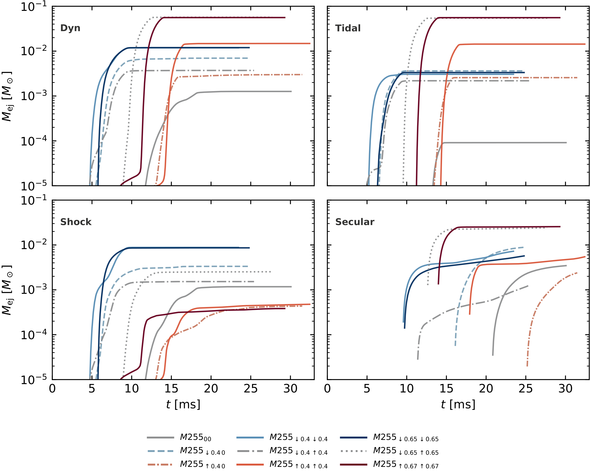
图注：Cumulative ejecta masses for the $M_\mathrm{tot} = 2.55\,M_\odot$ models, shown for the dynamical, tidal, shock-heated and secular ejecta components.
对应解读：对应“建议重点查看的图表”第2项和“关键图表逐图导读”中动力学抛射质量随时间演化的核心图。
入选理由：该图直接给出M_tot=2.55 M_sun模型的累计抛射质量，并区分动力学、潮汐、冲击加热和secular ejecta成分，是检验固定chi_eff=0下动力学抛射质量约45倍差异是否可靠、是否由某一抛射通道主导的最关键证据。
来源与置信度：\(arxiv_source\)；high；\(arxiv_source\) / main.tex:figure[1]
Fig07
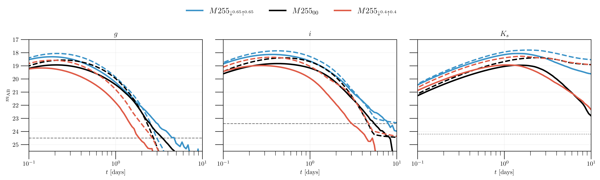
图注：Apparent $g$, $i$ and $K_s$ kilonova light curves at $40\,\mathrm{Mpc}$ for the $M_\mathrm{tot}=2.55\,M_\odot$ models with $\chi_\mathrm{eff} = 0$. Solid lines show the simulation based ejecta, while dashed lines show the hybrid model with parametric disc outflows. The horizontal lines mark the adopted $5\sigma$ limiting magnitudes for Rubin $g$ and $i$ and VLT/HAWK-I in $K_s$.
对应解读：对应“建议重点查看的图表”第6项和第8项，以及“关键图表逐图导读”中多波段光变曲线、观测深度线和相同参数化盘风替换实验。
入选理由：该图同时展示40 Mpc处g、i、K_s多波段视星等光变、观测5σ深度线，以及模拟抛射与参数化盘风混合模型的对比，直接支撑峰值亮度差、可探测性和盘风—动力学抛射退化检验，是电磁可观测结论中信息量最高的图。
来源与置信度：\(arxiv_source\)；high；\(arxiv_source\) / main.tex:figure[7]
Fig02
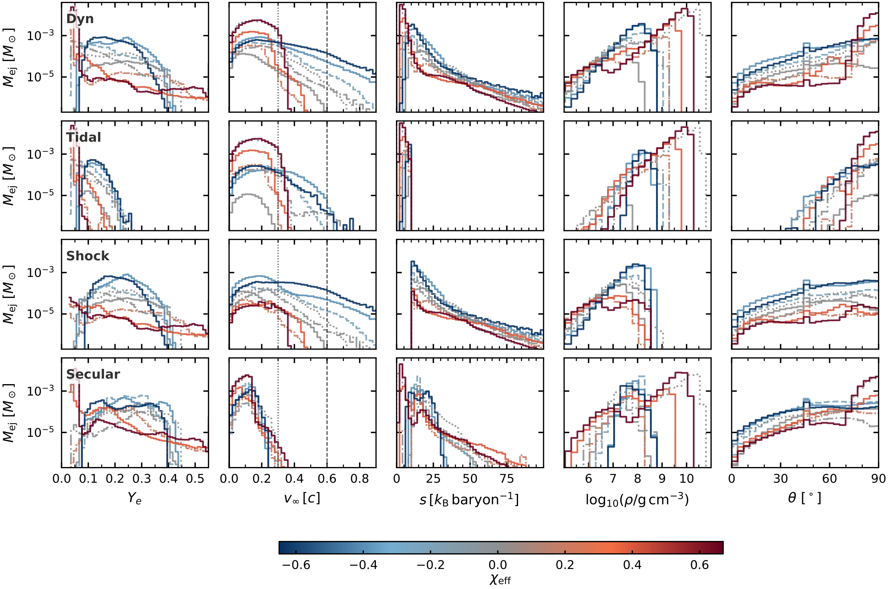
图注：Variation of ejecta properties with $\chi_\mathrm{eff}$ for the $M_\mathrm{tot} = 2.55\,M_\odot$ models. The colours indicate $\chi_\mathrm{eff}$, with $\chi_\mathrm{eff} = 0$ corresponding only to the irrotational model. Rows show the dynamical, tidal, shock-heated, and secular ejecta, while columns show the electron fraction $Y_e$, asymptotic velocity $v_\infty$, entropy per baryon $s$, rest-mass density $\rho$, and polar angle $\theta$. In the velocity column, the vertical lines at $v_\infty=0.3\,c$ and $0.6\,c$ mark the thresholds used to define the high-velocity and fast ejecta, respectively.
对应解读：对应“建议重点查看的图表”第3项，以及模型拟合段落中关于Y_e、速度、角分布、熵和密度等数值相对论输出诊断量。
入选理由：该图按抛射成分展示Y_e、\(v_infty\)、熵、密度和极角分布，并标出高速度与fast ejecta阈值，可用于判断单独自旋主要改变低Y_e潮汐物质还是高Y_e冲击物质，从而连接抛射物性质、核合成和千新星颜色变化。
来源与置信度：\(arxiv_source\)；high；\(arxiv_source\) / main.tex:figure[2]
Fig04
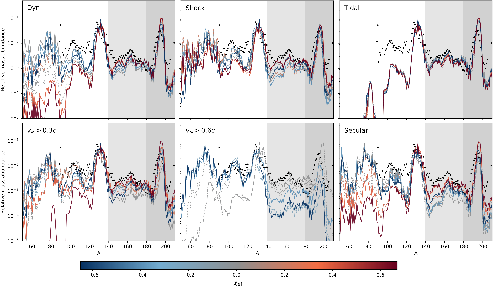
图注：Impact of effective spin on the $r$-process nucleosynthesis for $M_\mathrm{tot}=2.55\,M_\odot$ models. Panels show the dynamical, shock-heated, tidal, high-velocity ($v_\infty>0.3\,c$), fast ($v_\infty > 0.6\,c$) and secular ejecta. Black dots show the solar $r$-process abundance pattern, while the shaded regions mark the mass number ranges beyond the second and around the third $r$-process peaks.
对应解读：对应“建议重点查看的图表”第4项，以及“关键图表逐图导读”中按质量数A的r过程丰度曲线。
入选理由：该图直接比较M_tot=2.55 M_sun模型中不同有效自旋对r过程核合成的影响，包含动力学、潮汐、冲击加热、高速、fast和secular ejecta，并标出第二峰以上和第三峰附近质量数区间，是核实A>=140、第二峰、第三峰和镧系元素相关差异的主要图。
来源与置信度：\(arxiv_source\)；high；\(arxiv_source\) / main.tex:figure[4]
Fig06
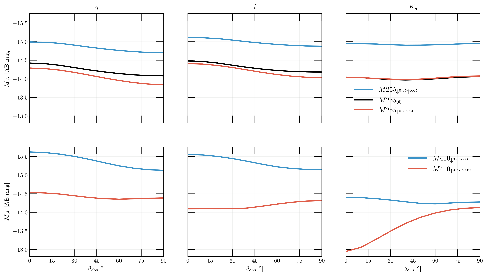
图注：Viewing angle dependence of the kilonova peak absolute magnitudes in the $g$, $i$ and $K_s$ bands. The upper row shows the $M_\mathrm{tot} = 2.55\,M_\odot$ models with $\chi_\mathrm{eff} =0$, while the lower row shows the $M_\mathrm{tot} = 4.10\,M_\odot$ models.
对应解读：对应“建议重点查看的图表”第6项和“关键图表逐图导读”中峰值亮度、波段和视角依赖的讨论。
入选理由：该图展示g、i、K_s波段千新星峰值绝对星等随视角变化，并分别覆盖M_tot=2.55 M_sun且chi_eff=0模型和M_tot=4.10 M_sun模型，可直接检验约0.9星等峰值差异是否具有波段和视角依赖。
来源与置信度：\(arxiv_source\)；high；\(arxiv_source\) / main.tex:figure[6]
Fig03
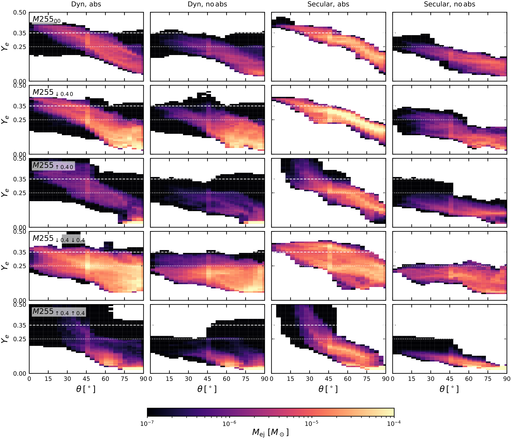
图注：Distribution of the electron fraction of the dynamical and secular ejecta for models with (abs) and without (no abs) neutrino absorption for different spin configurations with $M_\mathrm{tot} = 2.55\,M_\odot$.
对应解读：对应“建议重点查看的图表”第8项中中微子吸收开关实验，以及模型拟合段落中弱相互作用处理带来的系统误差。
入选理由：该图比较有无中微子吸收时动力学和secular ejecta的电子分数分布，能说明中微子吸收如何系统性改变Y_e，从而影响蓝/红千新星和核合成解释；虽然它不是直接的光变稳健性图，但对理解中微子处理的系统误差很重要。
来源与置信度：\(arxiv_source\)；high；\(arxiv_source\) / main.tex:figure[3]
强相关工作
这篇工作与 GW170817/AT2017gfo 的千新星解释直接相关，后者是双中子星并合、\(r\) 过程和多色千新星建模的基准事件。GW170817 的早期蓝光与晚期红外通常被解释为不同 \(Y_e\)、不同不透明度和不同几何成分的组合；本文进一步指出，在相同 \(\chi_{\rm eff}\) 下，单独自旋分配本身也可能改变这些成分。检索关键词可用 “GW170817 kilonova ejecta lanthanide opacity”、 “AT2017gfo r-process nucleosynthesis”、 “binary neutron star spin effective spin electromagnetic counterpart”。
它也应与双中子星数值相对论自旋研究、并合抛射物经验公式、以及千新星辐射转移模型一起阅读。已有很多工作讨论总质量、质量比、状态方程和潮汐形变率对抛射物的影响，也有研究讨论中微子吸收如何提高 \(Y_e\) 并产生蓝色成分。本文的新点是控制 \(\chi_{\rm eff}\) 后系统比较 \(\chi_1\) 与 \(\chi_2\) 的分配。相反或张力方向的文献包括认为双中子星天体物理自旋通常较小、现有引力波难以测量单星自旋、以及千新星模型系统误差可能掩盖这类信号的研究。建议检索 “individual spin binary neutron star numerical relativity ejecta”、 “neutrino absorption kilonova blue component”、 “kilonova parameter degeneracy ejecta opacity viewing angle”。
同一事件 / 同类源线索：
- https://arxiv.org/abs/1710.05832
- https://arxiv.org/abs/1710.05435
- https://arxiv.org/abs/1710.05833
- https://arxiv.org/abs/1710.05836
相似工作：
基础理论 / 方法工作：
- https://arxiv.org/abs/1512.09183
- https://arxiv.org/abs/1302.6530
- https://arxiv.org/abs/1605.04608
- https://arxiv.org/abs/1705.07084
相反观点 / 张力线索：
10. Finite-Solid-Angle Boltzmann Radiation Transport on Dynamical Spacetimes in AthenaK
- 来源：arXiv / astro-ph.HE
- 链接：https://arxiv.org/abs/2608.22020v1
- 作者：Hengrui Zhu, Alexander J. Dittmann, Lizhong Zhang, James M. Stone, Eduardo Mario Gutierrez, David Radice
- 评分：novelty 8/10，importance 7/10，relevance 8/10，final 8.65/10
- 推荐理由：将有限立体角广义相对论辐射输运扩展到动态ADM时空并接入AthenaK，对并合、吸积盘和多信使强引力系统模拟有可复用方法价值，属HE计算方法值得读。
中文题目：AthenaK 中面向动态时空的有限立体角玻尔兹曼辐射输运
做了什么：这篇论文把 White 等人在静态 Kerr--Schild 时空中发展的有限立体角广义相对论辐射输运方法，扩展到以 ADM 形式给出的时间依赖时空，并实现在 AthenaK 框架中。核心技术变化是把原先依赖固定时空四标架和守恒变量归一化的 HARM 型写法，改写成 Valencia 型 Eulerian 形式；同时用 Cholesky-gauge 空间四标架，让角向输运所需的局域正交基及其导数成为 ADM 变量的代数函数。作者通过平直与弯曲时空光束、辐射--流体耦合、时间变化几何等测试验证精度和稳健性，并展示了一个辐射双黑洞环双星盘应用。
为什么重要：动态强引力系统，例如双黑洞吸积盘、中子星并合残骸和核心坍缩超新星，需要同时处理演化时空、磁流体和辐射或中微子输运。许多数值相对论模拟仍依赖灰近似、矩方法或射线后处理；这篇文章的重要性在于把角分辨的玻尔兹曼输运直接接到演化 ADM 时空上，为研究各向异性辐射场、阴影、束流、照射反馈和多信使信号提供了更少闭合假设的数值工具。
理论 / 观测 / 仪器方法价值：方法价值主要在三个层面：第一，它保留有限立体角方法对辐射角分布的显式描述，比二矩方法更能控制闭合误差；第二，它采用 Eulerian/Valencia 型守恒结构，便于和 AthenaK 的相对论流体、磁流体和动态时空模块耦合；第三，Cholesky-gauge tetrad 使局域角坐标随 ADM 度规平滑演化，降低了动态网格或动态时空中角向输运的几何噪声。
为什么应该关注：如果你关心并合前后吸积盘的电磁 counterpart、喷流和盘风的辐射反馈、动态黑洞时空中的光子传播，或想比较矩方法与更接近玻尔兹曼方程的角分辨输运，这篇文章值得读。它不是给出某个天体源的新观测结论，而是提供一套可在动态强引力背景中使用的辐射输运基础设施；这类基础设施会决定未来多信使模拟中哪些辐射效应能被可靠计算，哪些只是闭合关系的产物。
展开详细解读：文章讲解、背景、理论、重点章节、图表与相关工作
文章详细讲解
科学问题：广义相对论辐射输运的完整问题是求解相空间分布函数在弯曲时空中的演化，并同时考虑物质吸收、发射和散射。对于黑洞附近的吸积流、双致密星并合残骸或核心坍缩环境，辐射场往往高度各向异性，局域光束、阴影和照射反馈不能仅靠标量能量密度和通量完全描述。White 等人的有限立体角方法已经证明，在固定 Kerr--Schild 背景上以有限角元追踪辐射分布是可行的；但真实数值相对论问题中的度规本身随时间演化，原有依赖时间独立四标架的写法不再够用。
作者怎么做：本文把原有 HARM 型固定时空实现改造成 Valencia 型 Eulerian 公式。时空用 ADM 分解给出，即演化变量包括 lapse、shift 和空间三度规，而输运方程在 Eulerian 观测者的局域正交框架中写成保守形式。关键设计是 Cholesky-gauge 空间 tetrad：它从空间三度规的 Cholesky 分解构造局域正交基，使 tetrad 及其空间、时间导数都能由 ADM 变量及其导数代数得到。这样，光子方向在局域角坐标中的平移、聚焦和引力红移项可以随动态度规连续更新，而不需要绑定某个特定的 gauge evolution 方程。
关键结果：测试套件覆盖了几个应当分开检查的误差来源。平直时空光束测试验证有限立体角离散和空间输运是否保持光束形状；弯曲时空光束测试检验测地线弯折和角向平移；辐射--流体耦合测试检验局域隐式源项能否稳定处理吸收、发射和物质能量动量交换；时间依赖几何测试则直接针对本文新增能力，即度规变化时 tetrad 和角向输运是否产生非物理不连续。论文还将该求解器用于辐射环双星盘，展示其能跟随动态强引力系统的辐射输运，并可作为未来多信使模拟的组成部分。
局限和下一步：这篇文章主要是数值方法论文，重点在算法推广和标准测试，而不是穷尽所有物理过程。有限立体角方法的成本随角向分辨率和频率维度迅速增加；在强散射、高光深或极端各向异性区域，角分辨率、隐式耦合收敛和物质状态方程都会影响结果。下一步自然包括更完整的频率依赖输运、更复杂散射核、更严格的辐射--磁流体--动态时空全耦合能量动量守恒检验，以及与二矩、蒙特卡洛和射线追踪结果在同一动态并合场景中的交叉比较。
关键结果是怎么做出来的
本文最核心的证据链不是某个天体源的事件数，而是一组数值验证：作者需要证明新的 Valencia 型有限立体角输运在动态 ADM 时空中仍然收敛、守恒并保持角向几何一致性。因此，读者应把样本理解为一套基准问题集合，分别隔离空间平流误差、角向输运误差、局域源项刚性、动态 tetrad 误差和实际强引力应用中的耦合误差。
数据或样本选择方面，论文采用的测试包括平直光束、曲率背景中的光束传播、辐射--流体相互作用问题、时间依赖几何问题，以及一个辐射环双星盘示例。平直测试通常用于测量数值扩散和角向离散误差；弯曲测试用于检查光线偏折、红移和局域方向基变换；辐射--物质耦合测试用于观察隐式源项在强吸收或高光深条件下是否稳定；动态几何测试则直接验证本文从固定背景扩展到 ADM 演化背景的主张。
显著性或置信度在这类方法论文中通常不以观测统计的 \(p\)-value 表示，而以收敛阶、守恒误差、解析解或高精度参考解的残差、以及长期稳定性来体现。读者应关注误差范数是否随网格尺度 \(\Delta x\)、时间步长 \(\Delta t\) 和角向分辨率 \(\Delta \Omega\) 按预期下降；还要看动态时空测试中是否出现随 tetrad gauge 或 ADM 变量插值引入的系统性漂移。
模型比较的重点是新旧公式的结构差异。原方法适合固定 Kerr--Schild 背景，本文的 Eulerian 形式则把辐射守恒量定义在 ADM 切片的 Eulerian 观测者上，并把几何源项写成可由 lapse、shift、空间度规及其导数计算的形式。若图表中同时给出解析测地线、参考数值解或低阶矩方法结果，最应关注的是光束中心位置、光束宽度、总能量守恒误差和角分布畸变。
系统误差主要来自四类：空间重构和通量求解带来的数值扩散，角空间离散造成的 ray effect 或角向噪声，局域隐式物质耦合的非线性求解容差，以及 ADM 变量和 tetrad 导数的数值微分误差。稳健性检验应包括改变分辨率、改变角向网格、改变时间步长、在静态极限下回收旧方法结果，以及在动态几何中检查守恒量和约束量是否没有非物理增长。
支撑结论的图表应包括测试问题的二维辐射强度图、沿特定截线的解析/数值对比、误差随分辨率的收敛图、能量动量交换随时间的守恒诊断，以及环双星盘中的辐射场形态和光度变化。若这些图显示新求解器在静态极限、动态几何和物质耦合三种情形下都表现一致，本文“可用于动态强引力多信使模拟”的结论才算站得住。
展开背景、理论、公式、模型、章节和图表导读
背景知识
研究对象是广义相对论背景下的辐射输运。这里的“辐射”可以是光子，也可以类比到某些中微子输运问题；关键是分布函数生活在相空间中，而不是只由能量密度和通量两个低阶矩描述。靠近黑洞或中子星并合残骸时，辐射传播会受到引力红移、透镜、frame dragging 和动态时空切片的影响，物质吸收和发射又会把辐射场反过来耦合到流体热力学与动量方程。
历史上，数值相对论和高能天体物理中常见的辐射处理大致分为几类。射线追踪精确描述给定背景上的光子传播，但常作为后处理使用，难以自洽反馈到流体；通量限制扩散和 M1 二矩方法计算便宜，适合大规模演化，但需要闭合关系，在多束交叉、阴影和强各向异性时可能失败；蒙特卡洛方法物理直观且适合复杂相互作用，但噪声和计算成本较高。有限立体角玻尔兹曼方法位于这些方法之间：它显式离散角空间，较少依赖闭合假设，但成本比矩方法高。
为什么现在值得重新看，是因为动态强引力模拟的硬件和软件基础正在变化。AthenaK 这类现代 GPU 友好代码框架使更高维度的输运计算逐渐可行；同时，多信使天文学要求从同一并合或爆发现象中预测引力波、电磁辐射和可能的中微子信号。只在固定背景上做辐射后处理，越来越难回答辐射反馈如何改变盘风、喷流、核合成和光变的问题。
该领域一个常见误区是把“广义相对论射线追踪”和“广义相对论辐射输运”混为一谈。前者常沿 null geodesic 传播强度，适合成像和谱合成；后者还要处理相空间分布在数值网格上的演化以及与物质的能量动量交换。另一个误区是认为只要度规已知，动态时空输运只是把固定时空公式中的度规换成时间依赖度规。实际上，局域正交基的选择、角坐标的演化、守恒变量定义和几何源项都会影响数值平滑性和守恒性。
基础理论 / 方法脉络
基本物理图像是：辐射由无质量粒子的相空间分布函数 \(f\) 描述，沿测地线传播，并通过发射、吸收和散射与物质交换能量动量。在弯曲时空中，\(f\) 的演化不仅有普通空间平流，还包含动量空间中的红移、聚焦和方向改变。有限立体角方法把每个网格点处的传播方向离散成若干角元，直接演化每个角元中的辐射强度或等价守恒量。
ADM 分解把四维时空写成一族空间切片随时间演化。对于数值相对论代码，基本几何量通常是 lapse \(\alpha\)、shift \(\beta^i\)、空间度规 \(\gamma_{ij}\) 和外曲率 \(K_{ij}\)。Eulerian 观测者的四速度垂直于空间切片，适合定义局域测得的辐射能量、方向和通量。Valencia 型形式的优点是把演化方程写成“时间导数加空间通量等于源项”的形式，容易与有限体积流体求解器耦合。
本文特定假设的核心是 tetrad 构造。局域正交 tetrad 把坐标基下的光子四动量投影到 Eulerian 观测者的局域惯性框架中，从而定义辐射方向角。Cholesky-gauge 空间 tetrad 通过空间三度规的 Cholesky 分解获得，避免了任意旋转自由度引起的不连续角坐标。由于 tetrad 及其导数可由 ADM 变量代数给出，角向输运项可以在动态时空中稳定计算。
观测或诊断层面，方法论文不直接拟合望远镜数据，而是拟合或比较数值解与解析解、参考解之间的残差。关键量包括辐射能量密度、辐射通量、压力张量、总能量动量交换率、光束质心和角分布。常见退化包括：空间分辨率不足与角分辨率不足都可能表现为光束展宽；源项求解容差过松与时间步长过大都可能表现为能量交换误差；tetrad 导数噪声与物理曲率聚焦都可能改变局域角分布。
公式与推导
第一步从 ADM 度规写起。动态时空被分解为 lapse \(\alpha\)、shift \(\beta^i\) 和空间度规 \(\gamma_{ij}\)：
这里 \(t\) 是切片时间，\(x^i\) 是空间坐标。这个公式说明论文的输运系统只需要读入 ADM 变量，而不依赖某一种具体 gauge evolution 方程。
Eulerian 观测者的单位法向量可写为
并满足 \(n_\mu n^\mu=-1\)。光子四动量 \(p^\mu\) 在这个观测者看来具有能量
\(\epsilon\) 是局域辐射能量或频率变量的基础，动态时空中的引力红移和 Doppler 变化都会体现在 \(\epsilon\) 的演化中。
把光子动量分解到局域正交框架，可写为
其中 \(e_{\hat a}^{\ \mu}\) 是空间 tetrad，\(\ell^{\hat a}\) 是局域传播方向的单位向量。有限立体角方法就是把 \(\ell^{\hat a}\) 所在的单位球面离散成角元 \(\Delta\Omega_q\)。
Cholesky-gauge 的思想可抽象为令空间度规满足
其中 \(L_{ik}\) 是 Cholesky 下三角矩阵；由此构造的 tetrad 满足
这一步的物理含义是把坐标空间中的非正交网格方向转成局域正交方向，并固定旋转规范，使角坐标不会因为任意 tetrad 旋转而跳变。
无碰撞玻尔兹曼方程的协变形式是
有相互作用时右端替换为碰撞项 \(C[f]\)。这里 \(\Gamma^i_{\mu\nu}\) 是 Christoffel 符号。第一项代表空间传播，第二项代表动量空间中的引力弯折和红移。
在有限立体角、有限体积离散后，一个典型 Valencia 型守恒更新可概括为
\(U_q\) 是第 \(q\) 个角元的辐射守恒量，\(F^i_q\) 是空间通量，\(S^{\rm geom}_q\) 包含由 tetrad 导数、曲率和切片运动产生的几何源项，\(S^{\rm int}_q\) 是发射、吸收和散射等物质耦合源项。
由分布函数得到辐射能量动量张量的连续表达是
角向和能量离散后，可近似为
其中 \(w_{qk}\) 包含能量 bin 和立体角权重。这个量用于检查辐射对流体的反馈和总能量动量守恒。
物质耦合常可用简化的吸收发射源项表示为
其中 \(I_\nu\) 是比强度，\(j_\nu\) 是发射系数，\(\alpha_\nu\) 是吸收系数。若 \(\alpha_\nu\Delta s\gg1\)，源项刚性很强，显式更新会受限；这解释了论文保留局域隐式 matter coupling 的必要性。
数值验证常用误差范数和收敛阶诊断，例如
这里 \(U^{\rm ref}_m\) 是解析解或高分辨率参考解，\(h\) 表示网格尺度。若 \(p_{\rm conv}\) 接近算法设计阶数，说明空间、时间和角向离散在该测试中按预期工作。
模型拟合 / 应用方法
这篇文章的“拟合”更准确地说是数值模型验证和参数敏感性检验，而不是从观测数据反演天体参数。被比较的量包括每个角元的辐射守恒量、由角积分得到的能量密度和通量、光束传播轨迹、辐射--物质能量交换率，以及在动态几何应用中的光度或辐射场形态。参考对象可能是解析解、半解析测地线、静态极限下旧代码结果，或更高分辨率数值解。
统计量通常不是贝叶斯后验，而是误差范数、残差图、收敛阶和守恒误差。对一个光束测试，残差应分解来看：光束中心偏移说明传播速度或几何偏折有误；光束宽度增加说明数值扩散或角分辨率不足；总能量漂移说明通量守恒或几何源项处理有问题；角分布出现棋盘状结构则可能是角网格和空间网格耦合导致的 ray effect。
参数退化在方法测试中同样存在。空间分辨率 \(\Delta x\)、时间步长 \(\Delta t\)、角元大小 \(\Delta\Omega\)、源项隐式求解容差和 ADM 变量插值精度都可能影响同一个残差指标。例如光束展宽既可能来自空间重构耗散，也可能来自角向分辨率不足；辐射能量误差既可能来自物质耦合非线性迭代，也可能来自动态 tetrad 导数不够平滑。因此稳健性检验必须逐一改变这些控制参数，而不是只展示一个高分辨率运行。
模型可能失败的场景包括极高光深下源项刚性超过局域隐式求解器的稳定范围、强散射主导时角向离散成本过高、动态时空中 ADM 变量噪声使 tetrad 导数产生伪角向输运、以及多束交叉时角网格分辨率不足造成非物理混合。对于环双星盘示例，读者还应区分“证明方法能跑”与“给出收敛的天体物理预测”两件事；后者需要更系统的分辨率、微物理和初始条件研究。
实际应用时，一个可靠的工作流应包括：先在固定平直和固定弯曲背景中校准空间与角向分辨率，再打开物质耦合测试局域能量动量交换，最后接入动态时空并检查 ADM 约束、总守恒量和辐射残差是否同步稳定。若要与 M1 或蒙特卡洛方法比较，最好在相同流体背景上输出同一组矩量和角分布诊断，而不是只比较总光度。
重点章节 / 结果段落怎么读
数据/样本与问题设置部分应先读。这里会说明作者选择了哪些基准测试：平直光束、弯曲光束、辐射--流体耦合、时间依赖几何和环双星盘。读者要判断这些测试是否覆盖了新算法声称解决的所有难点，尤其是动态时空中的 tetrad 平滑性和几何源项。
方法部分是全文核心。重点看从 HARM 型固定背景公式到 Valencia 型 Eulerian 公式的改写，特别是守恒变量如何定义、通量项和源项如何分离、局域隐式 matter coupling 如何保留。不要只看最终方程，还要看变量归一化变化，因为这决定了与 AthenaK 其他模块耦合时的守恒性。
Cholesky-gauge tetrad 段落应仔细读。它解释了为何空间 tetrad 不是任意选取，而是由 ADM 空间度规代数构造。这里的关键不是 Cholesky 分解本身多复杂，而是它固定了局域正交基的规范选择，使角向输运在动态时空中连续、可微且与度规兼容。
测试结果部分要按误差来源分类阅读。平直测试看数值扩散和收敛阶；弯曲测试看测地线偏折和红移；耦合测试看隐式源项稳定性；时间依赖几何测试看本文新增能力。若论文给出误差表或收敛图，应优先看这些，而不是只看漂亮的二维辐射图。
应用和讨论部分应理解为能力展示。环双星盘结果说明该求解器能用于动态强引力多信使场景，但不必把示例中的每个光变或形态特征都当成已收敛的 astrophysical prediction。读者应关注作者如何描述计算成本、可扩展性、未来频率依赖或更复杂微物理扩展。
建议重点查看的图表
-
平直时空光束传播图：看光束是否沿预期方向传播、是否发生过度展宽、边界附近是否有伪反射或负强度。
-
弯曲时空光束或测地线对比图：看数值光束中心是否跟随解析或高精度测地线，局域方向角是否平滑变化，强曲率区误差是否增大。
-
收敛阶或误差范数图/表：看 \(L_1\)、\(L_2\) 或最大范数随网格和角分辨率变化的斜率；若斜率在动态几何中明显下降，需要检查几何源项或 tetrad 导数。
-
辐射--流体耦合测试图：看辐射能量、物质内能和总能量随时间的变化，尤其是高光深或强吸收极限下是否保持稳定。
-
时间依赖时空测试诊断：看在度规显式变化时，辐射场是否出现非物理振荡，tetrad 切换或角坐标更新是否带来离散噪声。
-
环双星盘应用图：看辐射能量密度、通量矢量、角分布或光度曲线如何随双星轨道相位变化；同时看作者是否给出分辨率或物理近似的限定。
-
守恒量残差图：看辐射与物质之间交换的四力是否在总能量动量预算中闭合，动态时空下是否出现长期漂移。
-
计算性能或成本表：若有，应看角元数、网格规模、隐式源项迭代次数和 wall-clock 成本，以评估该方法在真实三维并合模拟中的可行性。
关键图表逐图导读
图 1：通常应是算法或坐标框架示意。横轴和纵轴可能代表空间坐标，箭头或小球面代表局域传播方向。读图重点是全局坐标基、Eulerian 局域正交 tetrad 和有限立体角方向之间的关系。陷阱是不要把图中的方向箭头理解为固定在坐标网格上；它们是在局域正交框架中定义，并随 ADM 度规演化。
图 2：平直光束测试。坐标轴通常为空间位置，颜色表示辐射能量密度或某个角元强度，模型或参考解可能以轮廓线表示。主要结论应是光束传播速度、方向和形状与预期一致。读图陷阱是仅凭二维色图难以判断收敛；必须结合截线残差或误差范数。
图 3：弯曲背景传播测试。横纵轴为空间坐标或径向/角向坐标，数据展示光束被引力场偏折或聚焦。参考线若为测地线，重点看数值光束质心是否跟随它，以及强曲率区是否有系统偏移。读图陷阱是角分辨率不足会把物理透镜聚焦误判为数值扩散或反过来。
图 4：辐射--流体耦合测试。横轴一般是时间，纵轴可能是辐射能量、气体内能、温度或总能量误差。模型线代表解析热平衡解或不同分辨率结果。关键是隐式源项是否允许大吸收系数下稳定趋于平衡，并保持总能量预算闭合。
图 5：时间依赖几何测试。横轴可能为时间或空间坐标，纵轴是辐射场诊断量、误差范数或守恒残差。这里要看当 ADM 变量随时间变化时，解是否平滑响应，而不是出现与时间步或 tetrad 更新同步的高频噪声。若有多条曲线代表不同分辨率，收敛趋势比单次运行更重要。
图 6：环双星盘应用。坐标轴多为空间平面，颜色为辐射能量密度、通量强度或光学深度，箭头为通量方向；也可能包含随时间变化的光度曲线。主要结论是求解器能在动态双星强引力背景中处理辐射输运。读图陷阱是这类展示图往往说明“方法可运行”，不等价于最终天体物理结论已对分辨率、微物理和初始条件收敛。
论文原图 / 可嵌入图片
Fig08
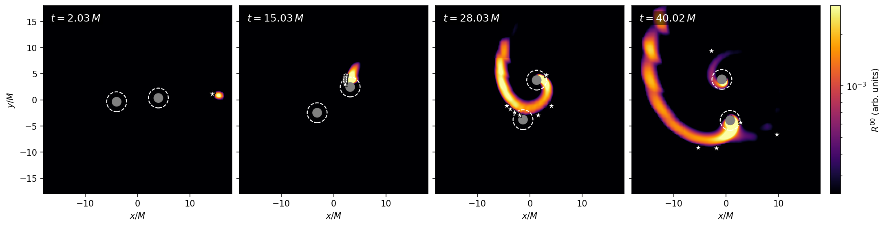
图注：Flash-beam transport on an orbiting equal-mass Kerr--Schild binary and a black-hole-tracking AMR grid at \(t/M=2.03,15.03,28.03,\) and \(40.02\). Color shows the coordinate-frame component \(R^{00}\), with an independent logarithmic normalization in each panel to expose the pulse morphology. White stars mark the instantaneous positions of the subset of ten null particles that are evolved in the same time-dependent geometry. Gray disks mark the horizons, and dashed white circles mark the retrograde photon-ring radii, with the prograde ones close to the horizons.
对应解读：“建议重点查看的图表”第5项时间依赖时空测试诊断，以及第6项动态双星/环双星盘应用；也对应逐图导读中关于动态强引力背景下辐射输运能力的说明。
入选理由：这是候选图中最直接展示本文新增能力的图：在随时间变化的等质量 Kerr--Schild 双星几何和 AMR 网格中传播 flash beam，并叠加同一动态几何中演化的 null particles 作为轨迹参照。它比单纯静态测试更能检验 tetrad、角坐标更新和几何源项在动态时空中的稳定性。
来源与置信度：\(arxiv_source\)；high；\(arxiv_source\) / main.tex:figure[8]
Fig03
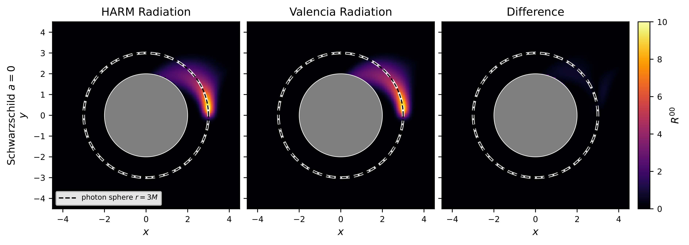
图注：Photon-ring beam on a stationary Schwarzschild background: the coordinate-frame radiation component \(R^{00}\) from the HARM solver (left), the Valencia solver (middle), and their absolute pointwise difference (right). The beam is injected tangent to the photon sphere at \(r=3M\) (dashed circle).
对应解读：“建议重点查看的图表”第2项弯曲时空光束或测地线对比图；对应逐图导读中“弯曲背景传播测试”和模型验证段落。
入选理由：该图比较 Schwarzschild 背景中 photon-ring beam 的 HARM 旧求解器、Valencia 新求解器和逐点绝对差异，能直接支撑论文关于新 Eulerian/ADM 公式在固定弯曲时空极限下与既有实现一致的主张。右侧差异图也比单纯形态图更有诊断价值。
来源与置信度：\(arxiv_source\)；high；\(arxiv_source\) / main.tex:figure[3]
Fig02
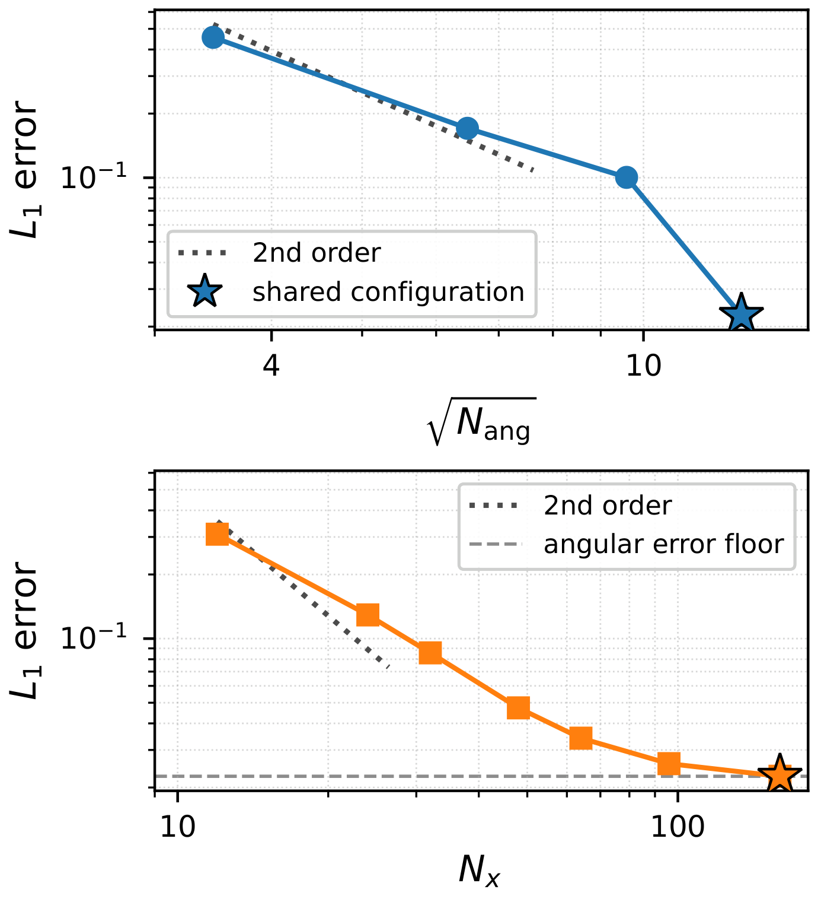
图注：Relative \(L_1\) error of the crossing-beams solution under angular refinement at fixed \(160\times100\) spatial resolution (top) and spatial refinement at fixed \(N_{\rm ang}=162\) (bottom). The star is the shared finest configuration, and the dashed line marks the angular-error floor of the spatial sweep.
对应解读：“建议重点查看的图表”第3项收敛阶或误差范数图/表；对应模型拟合段落中关于角分辨率、空间分辨率和误差范数分解的讨论。
入选理由：该图给出 crossing-beams 测试的相对 L1 误差随角向 refinement 和空间 refinement 的变化，并标出误差 floor，是判断有限立体角方法数值收敛性和角向/空间误差退化关系的核心图。
来源与置信度：\(arxiv_source\)；high；\(arxiv_source\) / main.tex:figure[2]
Fig04
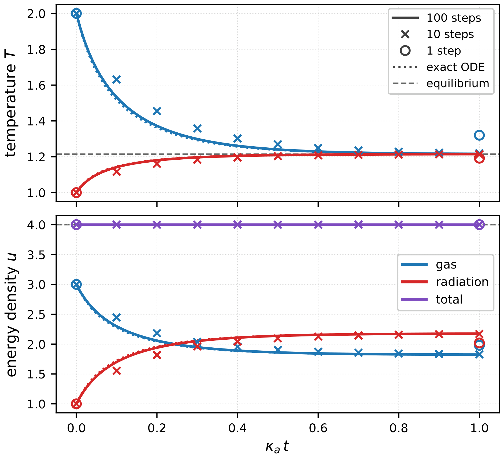
图注：Homogeneous gas--radiation equilibration compared with the exact energy-conserving ODE. The panels show temperatures (top) and energy densities (bottom) for \(100\), \(10\), and \(1\) implicit source substeps.
对应解读：“建议重点查看的图表”第4项辐射--流体耦合测试图；对应逐图导读中关于隐式源项、热平衡和总能量预算闭合的讨论。
入选理由：图中将均匀气体--辐射热平衡过程与精确能量守恒 ODE 对比，并展示不同隐式源项子步数下温度和能量密度的演化，能直接检验局域 matter coupling 的稳定性和能量交换处理。
来源与置信度：\(arxiv_source\)；high；\(arxiv_source\) / main.tex:figure[4]
Fig05
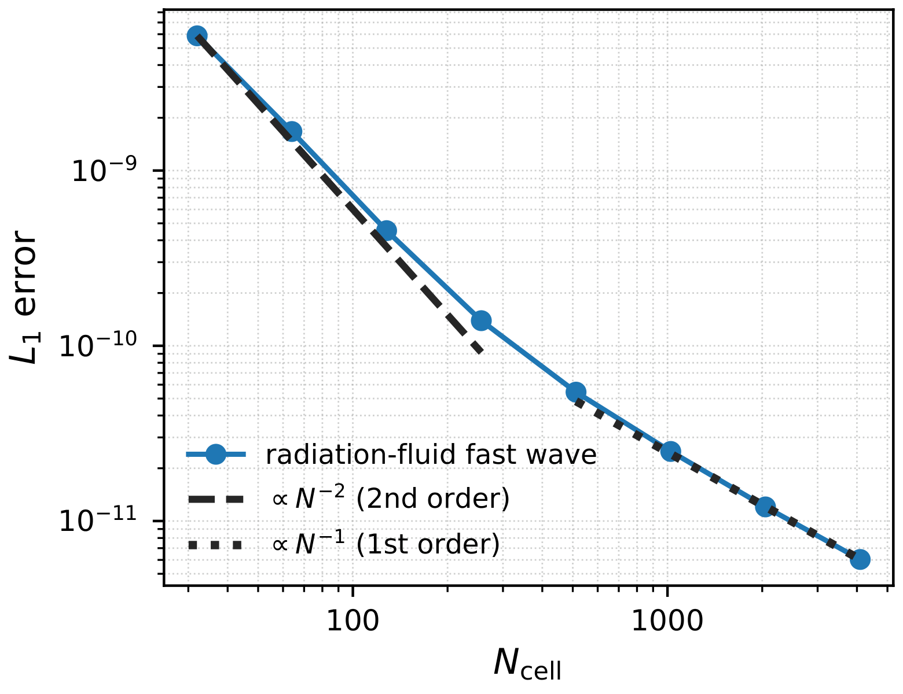
图注：Convergence of the radiation--fluid fast wave measured with the composite conserved-fluid \(L_1\) error. The error is second order at low resolution and approaches first order once the operator-split radiation--matter coupling dominates.
对应解读：“建议重点查看的图表”第3项收敛阶/误差范数，以及第4项辐射--流体耦合测试；对应模型验证中关于 operator-split radiation--matter coupling 误差主导的说明。
入选理由：该图给出 radiation--fluid fast wave 的 composite conserved-fluid L1 error 收敛曲线，显示低分辨率二阶、高分辨率趋近一阶的转变。它能揭示辐射--物质耦合算法本身对整体精度的限制，比只看单次热平衡曲线更能诊断方法误差来源。
来源与置信度：\(arxiv_source\)；high；\(arxiv_source\) / main.tex:figure[5]
Fig09
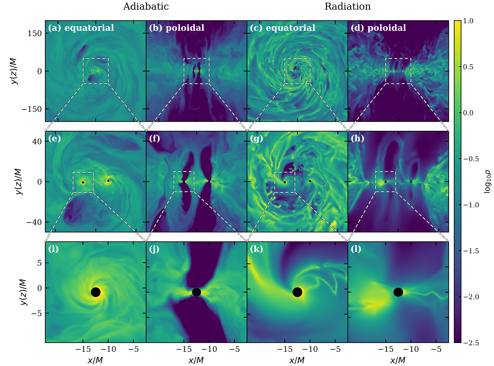
图注：Phase-matched equatorial and poloidal rest-mass density slices from the adiabatic GRMHD evolution (left columns) and its radiation-GRMHD continuation (right columns). Rows span \(\pm200M\), \(\pm50M\), and \(\pm10M\), highlighting the circumbinary flow structure, the cavity, and accretion onto an individual hole respectively; black regions mark the excised horizon interiors.
对应解读：“建议重点查看的图表”第6项环双星盘应用图；对应详细解读中关于将求解器用于辐射环双星盘、但需区分方法展示与收敛天体物理预测的段落。
入选理由：虽然该图主要展示的是相位匹配的密度切片而非辐射能量密度或光度曲线，但它是候选图中唯一明确来自 circumbinary disk 的 GRMHD 与 radiation-GRMHD 延续对比图，能为应用部分提供流体结构、空腔和单个黑洞吸积环境的上下文。
来源与置信度：\(arxiv_source\)；high；\(arxiv_source\) / main.tex:figure[9]
强相关工作
这篇工作最直接的同类来源是 White 等人在 \(2023\) 年提出的有限立体角广义相对论辐射输运方法，以及 HARM/KORAL/GRMHD 社区中关于固定黑洞背景辐射输运的算法论文。检索关键词可用 “finite solid angle general relativistic radiation transport White 2023”、“Boltzmann radiation transport HARM”、“GR radiation transport AthenaK”、“Valencia formulation radiation transport dynamic spacetime”。这些工作构成同类方法脉络：从固定背景上的角分辨输运，走向可与动态数值相对论时空耦合的输运。
相反或互补路线包括 M1 二矩闭合、通量限制扩散、蒙特卡洛辐射输运和后处理射线追踪。M1 方法在大规模三维演化中便宜且常用，但在多束交叉和阴影中有闭合误差；蒙特卡洛方法处理复杂相互作用灵活，但噪声和成本高；射线追踪适合成像与谱，但通常不反馈流体。检索关键词可用 “general relativistic M1 radiation transport”、“GR Monte Carlo radiation transport”、“radiation GRMHD closure problem”、“neutrino transport numerical relativity”。
由于本文不是针对某个具名瞬变、源或观测事件，而是数值方法与代码发展论文，因此没有同一事件或同一源的文献链。相关上下文应看同类源和历史原型：双黑洞环双星盘、黑洞吸积盘辐射 GRMHD、中子星并合中微子输运、核心坍缩超新星输运。检索关键词可用 “radiative circumbinary disk general relativity”、“binary black hole accretion disk radiation transport”、“neutrino radiation hydrodynamics numerical relativity”。
同一事件 / 同类源线索：
相似工作：
基础理论 / 方法工作：
相反观点 / 张力线索：
11. Discovery of an Extremely Luminous Sporadic Radio Pulsar
- 来源：arXiv / astro-ph.HE
- 链接：https://arxiv.org/abs/2608.21940v1
- 作者：Fengqiu Adam Dong, Robert Main, Jackson D. Taylor, Shion Andrew, Alyssa Cassity, Shami Chatterjee, Alice P. Curtin, Emmanuel Fonseca
- 评分：novelty 8/10，importance 7/10，relevance 8/10，final 8.65/10
- 推荐理由：发现极亮、极低占空比的 sporadic radio pulsar/RRAT，峰值亮度和FAST可探测到本星系群的讨论对脉冲星瞬变族群有意义；虽非伽马射线主题，但属致密天体HE相关。
中文题目：发现一个极高亮度、偶发射电脉冲星 PSR J2108+5055
做了什么：这篇论文报告 CHIME/FRB 发现了一颗周期为 \(0.495\,\mathrm{s}\) 的偶发、变模射电脉冲星 PSR J2108+5055。它最亮单脉冲的峰值流量密度达到 \(3.1\pm1.0\,\mathrm{kJy}\)，若采用由色散量估计的距离 \(1.6\pm0.3\,\mathrm{kpc}\)，对应谱光度约 \((7.5\pm2.3)\times10^{23}\,\mathrm{erg\,s^{-1}\,Hz^{-1}}\)。作者给出极低的发射占空比上限 \(0.002\%\)，并由自转参数估计其表面偶极磁场、特征年龄和自转能损失率。核心意义在于：这样一个银河系内罕见但单脉冲极亮的 RRAT，说明传统周期搜索会系统性漏掉一类低占空比高峰值源；更进一步，若类似脉冲出现在本星系群边缘，FAST 级别望远镜仍可能探测到。
为什么重要：PSR J2108+5055 把“普通脉冲星、RRAT、极亮单脉冲源、近邻星系可探测射电瞬变”这几个问题连在一起。它的自转能损失率和磁场并不极端，却能偶尔产生千 Jy 量级脉冲，说明单脉冲亮度函数、发射几何或等离子体相干辐射过程可能比只看平均轮廓时表现得更极端。对于寻找银河系外脉冲星、理解 RRAT 与正常脉冲星连续谱、评估单脉冲巡天漏检率，这都是一个有用的标尺源。
理论 / 观测 / 仪器方法价值：观测价值在于展示 CHIME/FRB 这类宽视场瞬变仪器不仅能发现 FRB，也能系统补足传统脉冲星巡天对低占空比源的盲区。方法价值在于论文把单脉冲发现、周期折叠、色散距离、自转导数推断、巡天可探测体积和 GBNCC 非探测约束放在同一框架里，给出了一种估计“类似源族群上限”的简单路线。理论价值在于提供一个低平均活动率、非极端自转参数但极端峰值亮度的个例，对相干射电发射模型和脉冲能量分布模型有约束作用。
为什么应该关注：如果你关心射电瞬变，这个源提醒我们：有些看起来像孤立 FRB 式单脉冲的事件，可能来自极低占空比的银河系脉冲星；如果你关心脉冲星总体普查，它说明“没有周期信号”不等于“没有旋转中子星”；如果你关心银河系外脉冲星探测，PSR J2108+5055 给出了一个具体的亮度标尺，说明 FAST 对本星系群内极亮单脉冲源并非完全无望。
展开详细解读：文章讲解、背景、理论、重点章节、图表与相关工作
文章详细讲解
科学问题：RRAT，也就是旋转射电暂现源，通常只在少数自转周期中发出可探测单脉冲，因而很容易逃过依赖长期相干折叠的传统脉冲星巡天。本文的问题不是简单地“又发现一颗 RRAT”，而是问：是否存在一类平均发射占空比极低、但偶发单脉冲亮到足以在银河系外距离上被大型望远镜看见的中子星？PSR J2108+5055 的最亮脉冲达到 \(\mathrm{kJy}\) 量级，而其周期 \(0.495\,\mathrm{s}\)、磁场 \(5.8\times10^{11}\,\mathrm{G}\)、特征年龄 \(1.2\times10^7\,\mathrm{yr}\) 并不显示出类似磁星那样的极端参数，这使它特别值得关注。
作者怎么做：作者使用 CHIME/FRB 数据发现单脉冲候选，并通过多个脉冲的到达时间和色散校正确认其来自同一旋转源，测得周期为 \(0.495\,\mathrm{s}\)。他们估计峰值流量密度，采用由色散量推断的距离 \(1.6\pm0.3\,\mathrm{kpc}\)，把观测流量换算为谱光度。随后用定时或周期变化信息估计自转导数，从标准磁偶极近似给出表面磁场、特征年龄和自转能损失率。论文还用 GBNCC 巡天作为对照，建立一个简单可探测性模型：如果类似 PSR J2108+5055 的源在 GBNCC 覆盖天区内大量存在，理论上应有一定数量被看到；非探测或少探测反过来约束类似源的数目。
关键结果：最亮脉冲峰值流量密度为 \(3.1\pm1.0\,\mathrm{kJy}\)，对应谱光度 \((7.5\pm2.3)\times10^{23}\,\mathrm{erg\,s^{-1}\,Hz^{-1}}\)；第二亮脉冲仍达到 \(1.5\pm0.7\,\mathrm{kJy}\)。源的发射占空比上限只有 \(0.002\%\)，说明它在绝大多数自转周期中不可见，传统周期折叠很难发现。作者进一步指出，若把最亮脉冲放在本星系群边缘，FAST 仍能探测；若按第二亮脉冲估计，FAST 的可探测距离约 \(1\,\mathrm{Mpc}\)，覆盖本星系群内区，包括仙女座方向。这不是说 FAST 必然会常规发现 M31 脉冲星，而是说“极端单脉冲尾部”把银河系外脉冲星搜索带入可行参数空间。
局限和下一步：距离来自色散量模型，因此谱光度和银河系外可探测距离都依赖电子密度模型；单脉冲流量定标也会受到 CHIME 波束响应、源在波束中的位置、频谱结构和散射的影响。占空比上限取决于观测时长、搜索阈值和脉冲能量分布尾部，不能简单等同于源的内禀“开关概率”。下一步最关键的是更长时间的定时和多频监测：确定 \(\dot P\) 的稳健性、检查变模或零发射状态的统计规律、测量偏振和旋转量、约束发射高度与磁层几何，并用 FAST、GBT、MeerKAT 或 CHIME 后续数据检验亮脉冲是否服从幂律、对数正态或混合分布。
关键结果是怎么做出来的
本文最重要的证据链从 CHIME/FRB 的单脉冲事件开始。样本不是一个传统意义上的大量脉冲轮廓样本，而是一个极端稀疏的单脉冲集合：源在绝大多数旋转周期中低于探测阈值，只在极少数时刻以很高信噪比出现。作者需要先证明这些脉冲不是独立的射电瞬变或 RFI，而是同一个天体在相同色散量下、按同一 \(0.495\,\mathrm{s}\) 自转周期相位关系重复出现。周期关联和色散一致性是把它归类为 RRAT 或偶发脉冲星的核心。
亮度结果依赖两步：先从仪器信噪比和 CHIME 波束响应估计峰值流量密度，再用色散量距离给出谱光度。最亮脉冲 \(3.1\pm1.0\,\mathrm{kJy}\) 和第二亮脉冲 \(1.5\pm0.7\,\mathrm{kJy}\) 的误差很大一部分来自通量定标、波束位置和距离不确定性，而不是纯热噪声。读者应特别关注论文中给出的单脉冲动态谱、去色散前后信号、以及流量定标表；这些图表决定了“极端高亮”是否由真实天体信号而非波束校准偏差主导。
占空比上限 \(0.002\%\) 是另一条关键结果。它通常来自“观测到的可检出脉冲数”与“总观测自转周期数”的比值或上限估计，而总周期数由有效曝光时间除以周期得到。由于只有最亮尾部越过阈值，这个占空比严格说是“超过该巡天阈值的可探测发射占空比”，而非中子星完全不发射的时间比例。稳健性要看作者是否考虑了时间覆盖不均匀、日漂移望远镜曝光窗口、RFI 掩蔽、不同频率通道灵敏度变化，以及搜索管线对窄脉冲和宽脉冲的不同响应。
自转物理量的结果来自标准脉冲星公式：由 \(P\) 和 \(\dot P\) 推出磁场、特征年龄和自转能损失率。这里结论的重点不是这些数值多么精确，而是它们显示 PSR J2108+5055 并非一个极端高磁场年轻磁星式对象。若 \(\dot E\approx2.2\times10^{32}\,\mathrm{erg\,s^{-1}}\)，却能偶发产生千 Jy 脉冲，那么单脉冲峰值亮度不一定简单跟 \(\dot E\) 单调对应，至少存在很大的几何、传播或间歇性调制。
GBNCC 约束是论文中从个例走向族群问题的一步。作者用 GBNCC 的天区、频率、灵敏度和观测策略构造一个简单模型，估计若存在许多峰值流量类似的 RRAT，应该被 GBNCC 探测到多少个。由此他们给出在 GBNCC 区域内类似源数量约 \(80\) 个的上限。这个数字不应被读成银河系总数的精确测量，而应读成在给定亮度、脉冲率、频谱和空间分布假设下的数量级约束。读者应检查模型是否假设各向同性空间分布、固定亮度函数、固定脉冲能量分布，以及是否把天区内距离分布和散射展宽纳入选择函数。
银河系外可探测性论证由辐射平方反比缩放和望远镜灵敏度给出。把最亮脉冲放到本星系群边缘仍可被 FAST 探测，是一个直观但依赖假设的结论：它假设脉冲在 FAST 频段仍有足够亮度，传播散射不会严重展宽，且单脉冲能量分布的极亮尾部会在有限观测时间内出现。支撑该结论的图表通常应展示峰值流量随距离缩放、FAST 探测阈值曲线、以及最亮和第二亮脉冲对应的最大距离。
展开背景、理论、公式、模型、章节和图表导读
背景知识
RRAT 最初是在单脉冲搜索中发现的一类中子星候选：它们不像普通射电脉冲星那样每个周期都稳定出现，而是偶尔爆发一个可探测脉冲。历史上，这类源的重要性在于它们揭示了脉冲星可见性的选择效应。一个源只要平均轮廓太弱或发射窗口太稀疏，就可能在周期折叠搜索中消失，但在单脉冲搜索中突然出现。
PSR J2108+5055 属于这一脉络，但亮度极端。普通银河系脉冲星单脉冲可以有强烈调制，蟹脉冲星等年轻高能对象还会出现 giant pulses；RRAT 则经常被理解为普通脉冲星的低占空比端、老年脉冲星的间歇发射状态，或与磁层等离子体状态切换有关的现象。本文源的有趣之处在于它同时具有极低可探测占空比和极高峰值流量密度，而自转参数并不特别极端。
观测背景也很关键。CHIME/FRB 是日漂移、宽视场、低频射电瞬变仪器，最初以 FRB 发现能力著称，但同样非常适合发现银河系内明亮单脉冲。它的优势是大瞬时视场和长期重复覆盖，劣势是瞬时定位和通量定标受波束模型影响较大。对 RRAT 这类稀疏事件而言，大视场和长时间基线往往比一次深积分更重要。
现在值得重新看这个问题，是因为 FRB、银河系射电瞬变、长周期射电源和间歇脉冲星之间的边界正在变得模糊。极亮单脉冲可以在分类上造成误导：一个只出现一次的银河系 RRAT 事件，若距离或色散解释不清，可能看起来像一类快速射电暂现；反过来，重复 FRB 的低活动阶段也会让人想起极端 RRAT。因此，明确银河系内极端单脉冲源的亮度函数和重复率，是解释射电瞬变天空的基础工作。
该领域常见误区之一是把 RRAT 当成一种与普通脉冲星完全分离的天体种群。实际上，很多证据支持它们至少部分是同一连续谱上的不同发射状态。另一个误区是把观测占空比直接等同于内禀发射占空比；如果许多弱脉冲低于阈值，源可能一直在发射，只是只有极亮尾部可见。第三个误区是只根据峰值流量评价物理极端性，而忽略距离、频谱、脉宽、波束校准和传播散射。
基础理论 / 方法脉络
基础物理图像是旋转磁化中子星在开放磁力线区加速带电粒子，产生相干射电辐射。观测者只有在辐射束扫过视线时看到脉冲，因此周期 \(P\) 主要反映自转，脉冲形状反映磁层发射几何、传播效应和仪器响应。对普通脉冲星，许多周期叠加后形成稳定平均轮廓；对 RRAT，只有少量周期出现足够强的单脉冲，平均轮廓可能不可见。
色散量是本文距离和分类的重要量。射电脉冲穿过电离星际介质时，不同频率到达时间不同；低频延迟更大。通过寻找能最大化脉冲信噪比的色散量 \(\mathrm{DM}\)，可以区分天体信号和本地干扰，并用银河系自由电子密度模型估计距离。这个距离不是几何视差，而是模型距离，因此会把电子密度模型误差传递到谱光度中。
亮度估计从峰值流量密度出发。单脉冲研究常关心峰值流量密度 \(S_\nu\)、脉宽 \(W\)、 fluence 或能量通量 \(F_\nu\sim S_\nu W\)，以及谱光度 \(L_\nu\sim4\pi d^2 S_\nu\)。这里的 \(L_\nu\) 通常是各向同性等效量，不意味着辐射真的各向同性；如果发射有窄波束，真实能量预算会低于各向同性估计，但源在观测方向上的表观亮度仍然重要。
本文还使用标准自转减速公式。给定周期 \(P\) 和周期导数 \(\dot P\)，在真空磁偶极近似和典型转动惯量 \(I\) 下，可以估计表面偶极磁场 \(B\)、特征年龄 \(\tau_c\) 和自转能损失率 \(\dot E\)。这些量不是直接测量的微观发射条件，而是宏观能量库和演化阶段的指标。PSR J2108+5055 的宏观参数并不极端，使得它的极亮单脉冲更像是发射状态或统计尾部的问题。
观测方法上，CHIME/FRB 的单脉冲搜索需要在许多试探 \(\mathrm{DM}\)、时间宽度和天空波束中寻找显著峰值。主要退化关系包括：脉冲越宽，峰值信噪比越低；散射和未完全去色散会展宽脉冲；源在波束边缘会导致流量低估或误差增大；频谱指数和带内闪烁会影响从 CHIME 频段外推到 FAST 或 GBNCC 频段的灵敏度比较。
族群约束的逻辑是选择函数问题。一个源能否被巡天发现，不只取决于它的峰值光度，还取决于观测时长、重复率、脉冲能量分布、望远镜增益、系统温度、天空温度、频段、采样时间和搜索阈值。因此，本文给出的 GBNCC 区域类似源上限本质上是把“没有看到很多类似极亮 RRAT”转化为对空间数量密度或源数的统计约束。
公式与推导
第一步是色散延迟。冷等离子体中群速度随频率变化，两个频率 \(\nu_1\) 和 \(\nu_2\) 之间的到达时延可写为
其中 \(K_{\rm DM}\simeq4.149\,\mathrm{ms\,GHz^2\,pc^{-1}\,cm^3}\)，\(\mathrm{DM}=\int n_e\,dl\) 是自由电子柱密度，\(\nu_1\) 与 \(\nu_2\) 用 \(\mathrm{GHz}\) 表示。对 PSR J2108+5055，正确的 \(\mathrm{DM}\) 会使多频动态谱中的脉冲对齐，并支持其为天体信号。
第二步是由流量密度到谱光度。若采用各向同性等效定义，则
其中 \(d\) 是距离，\(S_\nu\) 是峰值流量密度。该式忽略波束因子，因此 \(L_\nu\) 是便于比较的表观量。代入 \(d\simeq1.6\,\mathrm{kpc}\) 和最亮脉冲 \(S_\nu\simeq3.1\,\mathrm{kJy}\)，即可得到论文所报 \(\sim10^{24}\,\mathrm{erg\,s^{-1}\,Hz^{-1}}\) 量级。
第三步是单脉冲 fluence 或谱能量尺度。若脉冲有效宽度为 \(W\)，则
其中 \(S_{\nu,\rm pk}\) 是峰值流量密度，\(\mathcal{F}_\nu\) 常用 \(\mathrm{Jy\,ms}\) 表示。对应的各向同性等效谱能量为
这两个量比峰值流量更接近能量预算，但对脉宽、散射和时间分辨率更敏感。
第四步是望远镜单脉冲灵敏度，可由辐射计方程估计：
更常用的近似写法是
其中 \((\mathrm{S/N})_{\rm th}\) 是阈值，\(T_{\rm sys}\) 是系统温度，\(G\) 是增益，\(n_p\) 是偏振数，\(\Delta\nu\) 是带宽，\(W\) 是匹配滤波后的脉宽。FAST 的大 \(G\) 和较低等效系统噪声使其对远距离极亮单脉冲特别有利。
第五步是最大可探测距离的平方反比缩放。若同一脉冲在距离 \(d_0\) 处峰值流量为 \(S_0\)，给定探测阈值 \(S_{\rm min}\)，则
这正是把 PSR J2108+5055 的最亮和第二亮脉冲放到本星系群距离时的基本计算。该式假设频谱、散射、带宽内传播效应和脉宽不随距离或视线显著改变。
第六步是占空比或活动率估计。若有效观测时长为 \(T_{\rm obs}\)，周期为 \(P\)，可观测到的自转周期数为
若探测到 \(N_{\rm det}\) 个超过阈值的脉冲，则可探测占空比可估为
论文给出的 \(f_{\rm det}<0.002\%\) 应理解为给定观测和阈值条件下的强脉冲出现比例上限。
第七步是自转减速量。磁偶极近似下表面偶极磁场常写为
其中 \(P\) 以 \(\mathrm{s}\) 为单位，\(\dot P\) 为无量纲的周期变化率。特征年龄为
它假设初始周期远小于当前周期且制动指数为 \(3\)。对真实脉冲星，这只是演化时间尺度估计。
第八步是自转能损失率：
其中 \(I\sim10^{45}\,\mathrm{g\,cm^2}\) 是中子星转动惯量。PSR J2108+5055 的 \(\dot E\approx2.2\times10^{32}\,\mathrm{erg\,s^{-1}}\)，说明其宏观能量释放率不在年轻高能脉冲星的顶端。
第九步是巡天非探测约束的统计形式。若某巡天对每个类似源的平均探测概率为 \(p_{\rm det}\)，区域内真实源数为 \(N\)，则期望探测数为
在泊松近似下观测到 \(k\) 个源的概率为
当 \(k\) 很小或为零时，可反推出 \(N\) 的上限。GBNCC 约束约 \(80\) 个类似源，本质上就是这种选择函数加泊松上限的数量级实现。
模型拟合 / 应用方法
本文的拟合首先发生在单脉冲搜索层面：对一组试探 \(\mathrm{DM}\)、脉宽和到达时间进行匹配滤波，选择能最大化信噪比的参数组合。这里的拟合量包括 \(\mathrm{DM}\)、脉冲到达时间、有效宽度、峰值信噪比和可能的频率结构。残差应表现为去色散后动态谱的脉冲在各频率上对齐；若存在系统性倾斜，可能说明 \(\mathrm{DM}\) 偏差、散射尾、仪器延迟或 RFI。
周期和定时拟合是第二层。多个单脉冲的到达时间若能被同一周期 \(P\) 连接，就支持旋转中子星解释。若时间基线足够长，还可拟合 \(\dot P\)，进而得到 \(B_{\rm s}\)、\(\tau_c\) 和 \(\dot E\)。这类极低占空比源的定时难点在于 TOA 稀疏、脉冲相位抖动大、单脉冲形状不稳定，容易造成周期别名或相位连接不唯一。因此读者应检查论文如何处理整数周数模糊和周期误差传播。
通量拟合或定标是第三层，也是系统误差最显著的部分。CHIME 是宽波束日漂移仪器，源相对波束中心的位置、频率依赖增益、天空温度、带内 RFI 掩蔽都会影响 \(S_\nu\)。论文给出的 \(3.1\pm1.0\,\mathrm{kJy}\) 已显示误差不小。若将该流量用于推断银河系外可探测距离，误差会按平方根传到 \(d_{\rm max}\)，而距离本身又进入 \(L_\nu\) 的平方，因此亮度结论对系统误差敏感。
族群模型拟合较简化。作者用 GBNCC 巡天建立一个类似源数量上限，实质上需要假设源空间分布、峰值流量或光度分布、脉冲出现率、频谱指数和巡天灵敏度。主要退化是：较低活动率可以被较大的源数补偿，较陡频谱会改变 CHIME 与 GBNCC 的相对可见性，更宽的散射脉冲会降低单脉冲信噪比，非均匀银河系分布会改变天区内预期数。因此 \(\sim80\) 的上限更适合看作条件化约束，而不是模型无关的银河系族群规模。
实际应用场景包括三类。第一，后续定时观测可把该源纳入脉冲星 \(P\)–\(\dot P\) 图并比较 RRAT 与普通脉冲星分布。第二，单脉冲能量分布拟合可判断是否存在 giant-pulse-like 幂律尾部，还是普通脉冲调制的对数正态尾部。第三，银河系外搜索可以使用本文给出的亮度标尺，设计对 M31、M33 或本星系群矮星系的单脉冲搜索策略，但必须把散射、频谱和有限观测时长造成的非探测概率纳入后验。
重点章节 / 结果段落怎么读
-
数据与发现部分应重点看 CHIME/FRB 如何筛选候选单脉冲、如何排除 RFI、如何确定天区位置和 \(\mathrm{DM}\)。这一部分决定 PSR J2108+5055 是否可靠地属于天体重复源，而不是孤立仪器事件。
-
周期确认与源分类部分应关注 \(0.495\,\mathrm{s}\) 周期如何从稀疏脉冲中得到。读者需要看相位连接是否唯一、不同脉冲是否在同一旋转相位附近出现、以及作者如何称其为 sporadic mode-changing RRAT。
-
单脉冲亮度和距离部分是全文核心。应检查峰值流量密度、误差预算、色散距离 \(1.6\pm0.3\,\mathrm{kpc}\)、以及谱光度换算。特别要看作者是否讨论 CHIME 波束模型和源位置不确定性对 \(S_\nu\) 的影响。
-
自转参数和物理解释部分应读 \(B_{\rm s}\)、\(\tau_c\)、\(\dot E\) 的推导。这里的重点是该源宏观自转参数普通，但单脉冲峰值亮度极端；这对发射机制的启发比单个参数数值更重要。
-
GBNCC 族群约束和 FAST 可探测性部分应作为选择函数练习来读。看作者怎样从非探测或巡天灵敏度推类似源数量上限，又怎样用平方反比缩放得出本星系群可探测距离。不要把这些外推当成无条件预言，而要关注模型假设。
建议重点查看的图表
-
单脉冲动态谱图：看去色散前后脉冲是否在频率上对齐，带内是否有 RFI 掩蔽或异常频率结构，信号是否符合天体色散规律。
-
脉冲相位或周期折叠诊断图：看多个事件是否能被 \(0.495\,\mathrm{s}\) 周期统一解释，相位散布是否小于由 TOA 误差和脉冲抖动预期的范围。
-
单脉冲流量或信噪比分布图：看最亮和第二亮脉冲是否是孤立极端点，还是连续能量分布的一部分；这关系到 giant-pulse-like 解释。
-
定时参数或 \(P\)–\(\dot P\) 位置图：看 PSR J2108+5055 相对普通脉冲星、RRAT、磁星和 giant-pulse 源的位置，确认其自转参数并不极端。
-
GBNCC 可探测性或族群上限图：看源数上限如何随脉冲率、峰值流量阈值、距离分布或频谱假设变化；若只有单一数字，应检查表格中的假设。
-
FAST 最大探测距离图或灵敏度比较表：看最亮脉冲和第二亮脉冲分别对应的 \(d_{\rm max}\)，以及阈值采用的 \((\mathrm{S/N})_{\rm th}\)、带宽、脉宽和系统温度。
-
观测覆盖或曝光时间表：看占空比上限 \(0.002\%\) 的分母如何定义，有效观测时间是否扣除了不可用时段、RFI、边缘波束和灵敏度不足区间。
关键图表逐图导读
图 1：通常应是发现脉冲的动态谱或瀑布图。横轴多为时间，纵轴为频率，颜色表示强度或信噪比。读者应看未去色散图中低频延迟是否符合 \(\nu^{-2}\) 规律，去色散后脉冲是否垂直对齐。陷阱是带内闪烁或 RFI 可造成频率结构，不能仅凭亮斑判断天体性。
图 2：若论文给出脉冲到达时间和相位图，横轴可能是 MJD 或事件编号，纵轴是按 \(0.495\,\mathrm{s}\) 周期折叠后的相位。关键是多个脉冲是否聚集在稳定相位窗口。如果相位散布很大，要区分真实发射窗口宽、单脉冲 jitter、TOA 误差和错误周期别名。
图 3：流量密度或单脉冲能量分布图应重点看横轴 \(S_\nu\)、fluence 或信噪比，纵轴为事件数、累计数或出现率。最亮 \(3.1\,\mathrm{kJy}\) 脉冲和第二亮 \(1.5\,\mathrm{kJy}\) 脉冲若远离主体分布，说明极端尾部很强；若样本太少，则不能可靠地区分幂律和对数正态。读图陷阱是低端不完备性会把分布截断，不能直接拟合全区间。
图 4：\(P\)–\(\dot P\) 图若出现，横轴通常为周期 \(P\)，纵轴为 \(\dot P\)，并叠加等 \(B_{\rm s}\)、等 \(\tau_c\)、等 \(\dot E\) 线。PSR J2108+5055 应位于普通脉冲星或 RRAT 区域，而非磁星高 \(B\) 区。陷阱是 \(\tau_c\) 和 \(B_{\rm s}\) 都依赖简化磁偶极假设，不应过度解释为真实年龄和真实表面局部磁场。
图 5：GBNCC 模型图可能展示可探测源数或上限随假设参数变化。横轴可能是源数、脉冲率、峰值流量阈值或距离，纵轴是期望探测数或置信上限。要看 \(\sim80\) 的上限是否对应特定置信度和特定峰值流量条件。陷阱是把这个区域上限误当成全银河系总数。
图 6：FAST 可探测性图应把峰值流量按距离平方反比缩放，并叠加 FAST 单脉冲阈值。横轴可能是距离，纵轴是预期流量或信噪比。最亮脉冲曲线若在本星系群边缘仍高于阈值，支持作者的外推；第二亮脉冲到 \(\sim1\,\mathrm{Mpc}\) 则覆盖 M31 内区。读图陷阱是频谱指数、散射展宽和有限等待时间往往不会在简单距离曲线中完整体现。
论文原图 / 可嵌入图片
Fig03
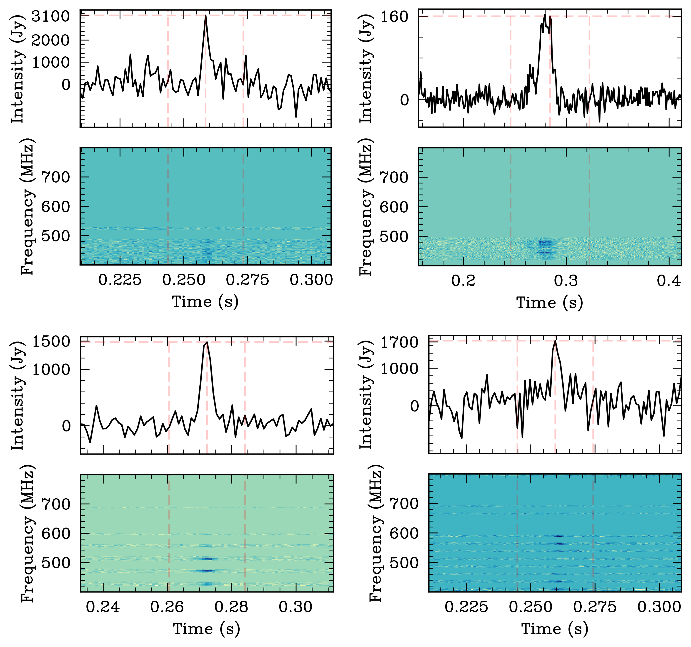
图注：Four notable pulses from \(\pulsar{},\) ordered left to right. \(\textit{First:}\) the pulse with the highest peak flux density, $3.1\pm1.0$\,kJy, recorded in a suboptimal formed beam (Appendix \ref{sec:beam_positions}). \(\textit{Second:}\) the pulse with the highest fluence. \red{\textit{Third:} the brightest pulse recorded close to its optimal formed-beam response, at $1.5\pm0.7$\,kJy (hour angle $-29.6^\circ$); this is the fiducial pulse used in Section \(\ref{sec:FRB}.\) \(\textit{Fourth:}\) the brightest pulse detected in the far sidelobes of CHIME (hour angle $-57.7^\circ$). This pulse lies outside the hour angle range covered by our holography data, so its peak flux density of 1.7\,kJy is a lower limit.} The data shown are the total intensity recorded at 0.98\,ms, with 16,384 frequency channels. The ``clamping'' pattern, characterized by notches in the dynamic spectrum, is a result of \(\pulsar{}\) being off-axis \(\citep{10.23919/URSIGASS.2017.8105318}.\) In the figure, we apply a static radio frequency interference (RFI) mask to remove known bad frequency channels. We also remove channels with less than 0.1 times the sensitivity of the most sensitive frequency channel. These channels usually contain no signal and thus only dilute the pulse. The pink lines show the maximum flux density and the integration region for the fluence calculation.
对应解读：对应“建议重点查看的图表”第1项单脉冲动态谱图、第3项单脉冲流量诊断，以及“关键图表逐图导读”中图1/图3关于最亮与第二亮脉冲的解读。
入选理由：这张图直接展示4个代表性单脉冲的动态谱、RFI掩蔽、频率通道结构、峰值流量和fluence积分区域，且明确标出最亮脉冲3.1±1.0 kJy、接近最佳波束响应的1.5±0.7 kJy脉冲以及远旁瓣事件。它最能支撑论文核心结论：该源存在kJy级极亮单脉冲，同时也暴露了波束位置、clamping频率结构和通量定标系统误差。
来源与置信度：\(arxiv_source\)；high；\(arxiv_source\) / main.tex:figure[3]
Fig01
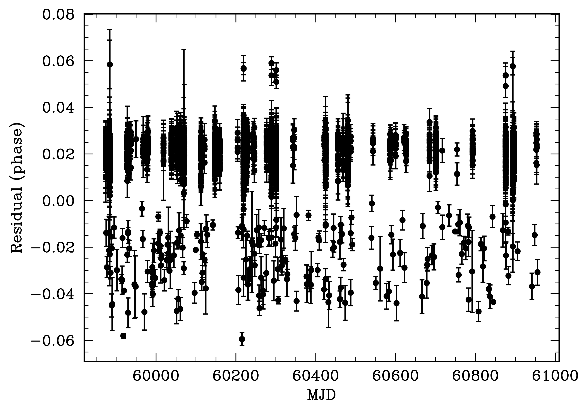
图注：The timing residuals for each pulse detected with total intensity data using CHIME/FRB. The timing residuals are derived with the timing solution presented in Table \(\ref{tab:timing_sol}.\)
对应解读：对应“建议重点查看的图表”第2项脉冲相位或周期折叠诊断图，以及“模型拟合”中周期和定时拟合、TOA残差检查。
入选理由：图注表明该图给出CHIME/FRB总强度数据中每个脉冲相对于定时解的timing residuals，是检验多个稀疏单脉冲能否由同一0.495 s旋转周期统一解释的关键证据。相比普通展示图，它直接对应日报强调的相位连接、周期别名和残差系统性的核心诊断。
来源与置信度：\(arxiv_source\)；high；\(arxiv_source\) / main.tex:figure[1]
Fig06
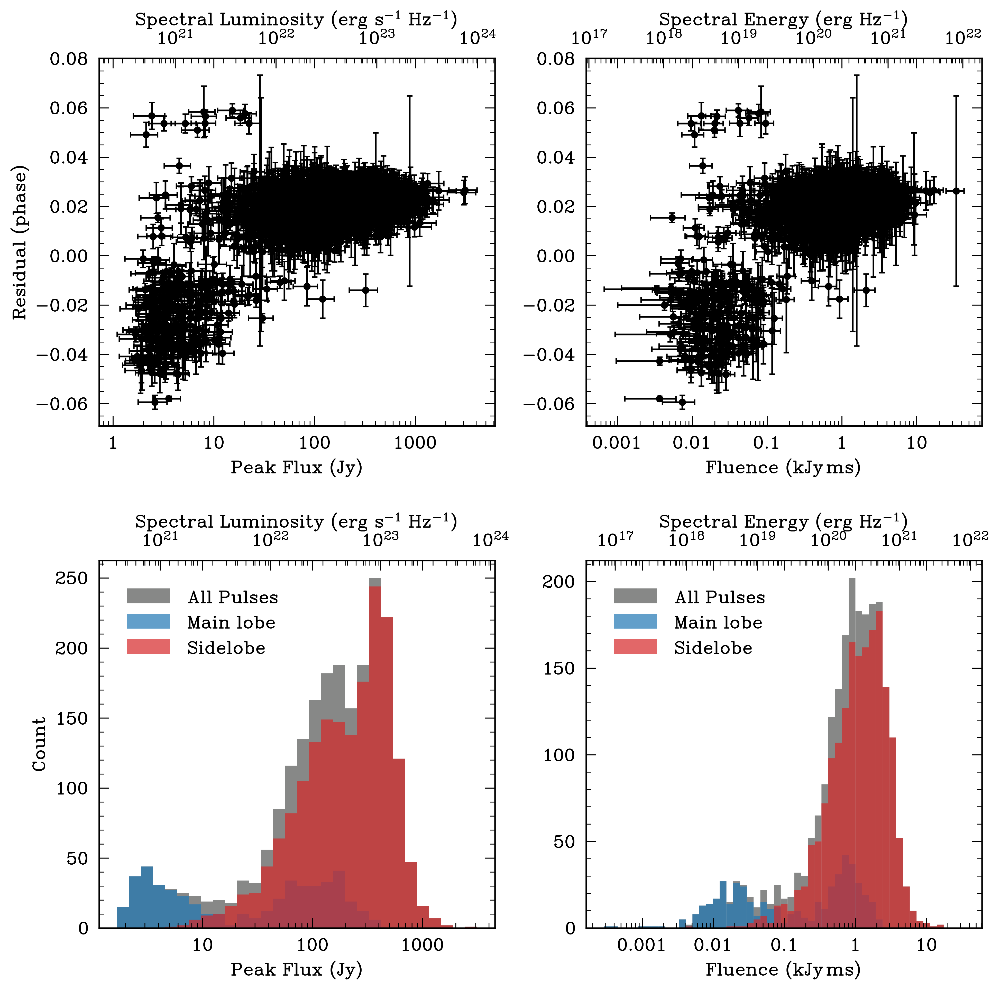
图注：The top row shows the timing residuals plotted against the peak flux density and fluence. We note that across both timing residual figures, there is a clear separation between two distinct emission modes, as indicated by both intrinsic brightness and residuals. The bottom row shows histograms of the peak flux and fluence. The histograms appear bimodal; however, these histograms are not corrected for the complex selection effects of the CHIME/FRB system.
对应解读：对应“建议重点查看的图表”第3项单脉冲流量或信噪比分布图，以及“关键图表逐图导读”中图3关于流量/fluence分布和极端尾部的讨论。
入选理由：该图同时给出timing residuals与peak flux density、fluence的关系，以及峰值流量和fluence直方图，并指出两个发射模式在亮度和残差上有清晰分离。它比单纯的事件列表更适合讨论最亮脉冲是否属于连续分布、是否存在双峰或模式切换，以及低端选择效应如何影响能量分布解释。
来源与置信度：\(arxiv_source\)；high；\(arxiv_source\) / main.tex:figure[6]
Fig08
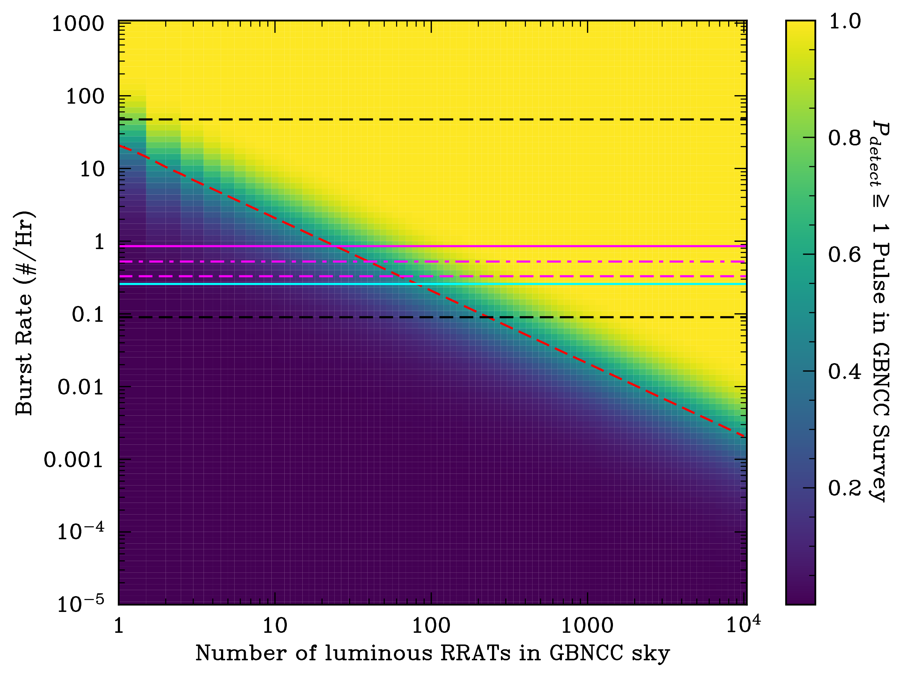
图注：The probability of detecting at least one pulse from one extremely luminous RRAT in the GBNCC Survey. The black-dashed line shows the mean and minimum burst rates of RRATs in the RRATalogue. We note that these rates are likely biased high, as RRATs with low burst rates have no measurement. The red dashed diagonal line is the $P=0.5$ contour. The magenta solid, dash dot, and dashed lines (in descending order) show the burst rate of \(\pulsar{}\) in aggregate, mode 1, and mode 0, respectively. The cyan solid line shows the $S_{peak}>100$\,Jy \(\pulsar{}\) burst rate, where $S_{peak}$ is the peak flux density. The \(\pulsar{}\) burst rates are provided in Table \(\ref{tab:timing_sol}.\)
对应解读：对应“建议重点查看的图表”第5项GBNCC可探测性或族群上限图，以及“关键图表逐图导读”中图5关于GBNCC模型和约80个类似源上限的解读。
入选理由：这张图展示GBNCC巡天中探测至少一个极亮RRAT脉冲的概率，并叠加RRATalogue平均/最低burst rate、P=0.5等值线以及PSR J2108+5055不同模式和S_peak>100 Jy的burst rate。它是理解族群上限如何依赖爆发率和探测概率的最直接图表，能避免把条件化上限误读为全银河系无模型约束。
来源与置信度：\(arxiv_source\)；high；\(arxiv_source\) / main.tex:figure[8]
Fig10
图注：Left: Band-averaged CHIME response normalized to the sensitivity of CHIME towards Cygnus A at the meridian. These data were derived from holography between the Galt Telescope and individual CHIME feeds. Right: Calibration of the flux density of Cygnus A and Taurus A in the sidelobes.
对应解读：对应“模型拟合”中通量定标系统误差段落，以及“建议重点查看的图表”第6项灵敏度比较/系统温度相关检查的替代支撑图。
入选理由：论文没有候选的FAST最大探测距离图，但Fig10给出CHIME旁瓣响应和Cyg A、Tau A通量定标，是评估3.1 kJy和1.5 kJy峰值流量系统误差的关键依据。由于银河系外可探测距离按流量平方根外推，通量定标图对理解FAST外推结论的可靠性非常重要。
来源与置信度：\(arxiv_source\)；high；\(arxiv_source\) / main.tex:figure[10]
Fig09
图注：Transient phase space figure for \(\pulsar{}\) in comparison to other transients. \(\pulsar{}\) reaches a spectral luminosity similar to that of intermediate SGR1935+2154 bursts. Figure adapted from \(\cite{Nimmo:Hessels:Kirsten:2022}.\) Sokolowski+ (\cite{Sokolowski:Kumar:Dhavali:2025}) represents the brightest detected Crab giant pulse at 215\,MHz. Cordes+ (\cite{Cordes:Bhat:Hanskins:2004}) represents the brightest Crab giant pulses detected at 430\,MHz. The widths of Crab giant pulses at low frequencies are inflated due to scattering.
对应解读：对应日报详细解读中关于谱光度、Crab giant pulse、SGR1935+2154和其他暂现源比较的段落。
入选理由：该图把PSR J2108+5055放入暂现源相空间，并显示其谱光度可接近中等强度SGR1935+2154爆发、与低频Crab giant pulse等比较。虽然它不直接给出P–Pdot或FAST距离，但能支撑论文关于“极端单脉冲亮度”在更广泛射电暂现源背景中的定位。
来源与置信度：\(arxiv_source\)；high；\(arxiv_source\) / main.tex:figure[9]
强相关工作
这篇工作与 RRAT 发现和单脉冲搜索传统直接相关。应把它放在 McLaughlin 等人首次系统报告 RRAT 的工作之后阅读，同时与 CHIME/FRB 在银河系脉冲星和快速射电暂现方面的发现能力联系起来。检索关键词可用 “RRAT single pulse search”, “rotating radio transient luminosity function”, “CHIME FRB pulsar single pulse”, “sporadic mode-changing pulsar”。
它也应与 giant pulse 和银河系外脉冲星搜索文献对照。蟹脉冲星等 giant-pulse 源展示了极端单脉冲尾部，但往往有年轻、高 \(\dot E\) 背景；PSR J2108+5055 的自转能损失率较低，因此可能代表不同机制或不同选择效应。对于银河系外搜索，应检索 “FAST Local Group pulsar search”, “M31 pulsar search”, “giant pulses extragalactic detectability”。如果要找相反观点或张力，应关注 RRAT 是否真是独立种群、RRAT 与 nulling pulsars 的连续性、以及低占空比源族群数量是否被现有巡天强烈限制。
同一事件 / 同类源线索：
相似工作：
基础理论 / 方法工作：
- https://ui.adsabs.harvard.edu/abs/1968Natur.217..709H/abstract
- https://ui.adsabs.harvard.edu/abs/1981ApJ...246..919B/abstract
- https://ui.adsabs.harvard.edu/abs/2005AJ....129.1993C/abstract
相反观点 / 张力线索：
12. When the stars don't align: Investigating inconsistencies in binary black hole formation across population synthesis codes
- 来源：arXiv / astro-ph.HE
- 链接：https://arxiv.org/abs/2608.21609v1
- 作者：Alexandra G. Guerrero, Michael Zevin, Duncan B. Maclean, Katelyn Breivik, Carl L. Rodriguez, Max M. Briel, Daniel E. Holz
- 评分：novelty 8/10，importance 8/10，relevance 7/10，final 8.65/10
- 推荐理由：系统比较COSMIC、METISSE和POSYDON对BBH并合形成的预测差异，指出同一初始双星几乎不能跨代码一致演化；对引力波源族群解释有重要警示意义。
中文题目：恒星不按同一套规则演化时：三个双星种群合成代码对并合双黑洞形成的预测为何严重不一致
做了什么：这篇论文把同一批初始双星同时交给三个现代双星种群合成代码：快速代码 \(\texttt{COSMIC}\)、嵌入 \(\texttt{METISSE}\) 的混合方案，以及更详细的 \(\texttt{POSYDON}\)，并尽量统一金属丰度、初始双星、物理参数化选择，专门比较哪些系统最终会形成在哈勃时内并合的双黑洞。结果很尖锐：在 \(0.01 Z_\odot\) 的 \(10^6\) 个初始双星中，各代码都能产生约 \(5\times10^3\) 到 \(9\times10^3\) 个并合双黑洞，但三者共同认定为并合双黑洞的初始系统只有一个，任意两个代码之间一致的前身系统也不超过约 \(14\%\)。更重要的是，即使同一个初始双星在两个代码中都形成并合双黑洞，它们经历的演化通道和最终黑洞质量、轨道性质也常常不同。论文的核心结论不是“哪个代码错了”，而是：目前双星种群合成对双黑洞形成通道的逐系统预测远没有很多应用默认的那么稳健。
为什么重要：引力波天文学越来越依赖双星种群合成来解释 \(\mathrm{LIGO}/\mathrm{Virgo}/\mathrm{KAGRA}\) 看到的黑洞质量谱、自旋、并合率和红移演化。如果不同代码在同一初始条件下连“哪一个双星会变成并合双黑洞”都基本对不上，那么用单一代码反推共同包层效率、超新星踢速、恒星风、金属丰度历史或孤立双星通道占比时，系统误差可能被严重低估。
理论 / 观测 / 仪器方法价值：这项工作的价值在于把比较从“总体分布像不像”推进到“逐个初始双星是否走向同一结局”。这种一对一交叉匹配能暴露平均统计量掩盖的差异：不同代码可能给出相近的总并合数，却由完全不同的前身系统贡献。它也为未来建立标准化双星演化基准测试、代码间物理模块替换、以及引力波人口推断中的理论误差建模提供了直接依据。
为什么应该关注：如果你用双星种群合成来解释引力波事件、预测第三代探测器样本、构造黑洞质量和自旋先验，或把观测并合率转化为恒星演化参数约束，这篇文章都值得读。它提醒我们：当前模型不确定性不只是某个参数条形误差，而可能是通道识别、演化阶段顺序、质量转移稳定性和紧致天体形成判据之间的结构性差异。
展开详细解读：文章讲解、背景、理论、重点章节、图表与相关工作
文章详细讲解
科学问题：论文关注的是双星种群合成代码之间的可重复性，而不是单个物理过程的微调。双星种群合成通常从初始主星质量、质量比、轨道周期、偏心率和金属丰度出发，沿着恒星风、洛希瓣溢出、共同包层、超新星、黑洞形成和引力波辐射等阶段，把大量初始双星演化到紧致双星。过去很多比较只问最终并合率或质量分布是否大体相近；本文问得更严格：在完全相同的初始双星列表上，不同代码是否会把同一个系统判为在哈勃时内并合的双黑洞。
作者怎么做：作者选取三类有代表性的代码。\(\texttt{COSMIC}\) 是快速种群合成代码，继承快速恒星演化公式和参数化二体相互作用；\(\texttt{METISSE}\) 被整合进 \(\texttt{COSMIC}\)，用插值详细恒星模型来改进单星演化部分，同时保留不少快速二体处理；\(\texttt{POSYDON}\) 则利用详细双星演化网格和机器学习或插值方式处理关键相互作用阶段。作者对三种单一金属丰度的初始种群运行相同的初始双星样本，并在可能范围内统一风质量损失、紧致遗迹形成、超新星踢速、共同包层等参数化选择，以减少“输入不一致”造成的假差异。
关键结果：最醒目的结果来自 \(0.01 Z_\odot\) 的 \(10^6\) 个初始双星。三个代码各自产生约 \(5\times10^3\) 到 \(9\times10^3\) 个能在哈勃时内并合的双黑洞，表面看总量只差一个因子不到二；但逐个初始系统交叉匹配后，三者共同选中的并合双黑洞前身只有一个。任意两个代码之间，一致成为并合双黑洞的前身比例也不超过约 \(14\%\)。这说明相似的总体产额可能来自几乎不重叠的前身集合。更进一步，两个代码都把某一系统判为并合双黑洞时，常常仍给出不同的质量、轨道分离、延迟时间和形成路径。
局限和下一步：作者没有把结论解释为某个代码必然更正确，因为三个代码在效率、物理细节和覆盖参数空间方面目标不同。详细代码也可能受网格边界、插值和缺失物理限制；快速代码则可能在计算效率和大样本探索上更有优势。下一步需要做的是更精细的模块级基准测试：固定单星模型只比质量转移，固定质量转移只比共同包层，固定共同包层只比紧致遗迹和踢速；同时需要用观测约束校准，而不是只在代码之间投票。对引力波人口推断而言，还应把“代码结构不确定性”显式纳入模型比较。
关键结果是怎么做出来的
样本选择是这篇论文证据链的核心。作者没有让三个代码各自抽样，而是使用相同的初始双星种群，包括主星质量、伴星质量或质量比、初始轨道、偏心率等初值，并设置三个单一金属丰度种群。这样做的优点是差异不能简单归因于蒙特卡洛抽样噪声或初始条件不同；每一个初始双星都有跨代码可追踪的身份标签。论文把“最终形成双黑洞且在哈勃时间内并合”作为主要终态筛选条件。
最关键的计数结果来自低金属丰度 \(0.01 Z_\odot\) 的 \(10^6\) 个初始双星。每个代码都产出数量级相近的并合双黑洞，大约为 \(5\times10^3\) 到 \(9\times10^3\)。如果只看并合效率，这似乎意味着三者预测没有灾难性冲突；但作者进一步计算代码间并合前身集合的交集，发现三代码共同交集仅为一个系统，双代码交集比例也低于约 \(14\%\)。这个结果应当在集合维恩图、交集矩阵或类似表格中重点检查，因为它直接支撑“总体相近但个体完全不同”的主结论。
论文还比较了形成通道，而不是只比较是否并合。典型诊断包括系统是否经历稳定质量转移、共同包层、接触、合并失败、超新星后解绑，以及第一次和第二次黑洞形成前后的轨道变化。关键在于：同一个初始双星即使在两个代码中都被判为并合双黑洞，也可能在一个代码中通过共同包层收缩，在另一个代码中通过稳定质量转移或不同的包层处理达到紧轨道。这类通道分类图、桑基图或阶段序列表，是判断差异来自哪个物理环节的主要证据。
统计显著性在这里不主要依赖传统的 \(p\) 值，而依赖大样本下的集合重叠、分布差异和逐系统不一致性。由于初始样本达到 \(10^6\)，并合双黑洞数量达到数千，随机泊松误差约为几个百分点量级，远小于代码间前身集合几乎不重叠的差异。因此最有力的稳健性判断是：差异不是小样本噪声，而是模型结构和实现差异导致的。若论文给出不同金属丰度下的重复分析，应重点看这种低重叠是否在多个金属丰度上持续存在。
系统误差主要来自三类：第一，无法完全统一的物理实现，例如恒星半径演化、核心质量定义、质量转移稳定性判据和共同包层启动条件；第二，快速公式、详细单星插值和详细双星网格覆盖范围之间的计算结构差异；第三，某些二体相互作用的边界条件和数值处理方式。论文的稳健性价值在于，它没有只比较默认设置，而是在尽量统一参数化后仍发现巨大不一致，从而说明问题不是简单的“默认参数不同”。
展开背景、理论、公式、模型、章节和图表导读
背景知识
双星种群合成是连接恒星演化理论和引力波观测的主要工具之一。对孤立双星形成双黑洞的情景来说，一个宽双星必须经历质量转移、恒星风剥离、超新星或直接塌缩、可能的共同包层收缩，并最终形成足够紧的双黑洞，使引力波辐射能在哈勃时间内驱动并合。每个阶段都涉及难以直接观测或难以三维模拟的大量近似。
历史上，快速双星种群合成代码的优势是能在大参数空间上运行 \(10^6\) 到 \(10^8\) 个系统，适合估计并合率和人口分布。但快速公式往往把复杂的恒星结构演化压缩成拟合公式，并把质量转移、共同包层和超新星踢速写成少数参数。随着引力波样本增大，人们开始要求模型不仅给出数量级并合率，还能解释黑洞质量谱、质量比、自旋倾角、红移演化和特殊事件。
详细恒星和双星演化代码能更真实地处理恒星结构、半径响应、核心增长、非保守质量转移和接触阶段，但计算代价高，且通常只能覆盖有限网格。混合方案试图在两者之间折中：用详细单星或双星模型训练插值器，再在种群合成中快速调用。本文比较的三个代码正好代表了这个谱系中的不同位置，因此比较结果不仅是代码评测，也反映了方法学取舍。
现在重新看这个问题很重要，因为引力波人口推断已经进入“精细解释”阶段。早期只要模型能给出与观测同数量级的双黑洞并合率，就可能被认为可行；现在则要用观测事件去约束恒星风、金属丰度、共同包层效率、超新星踢速和黑洞质量间隙。如果代码间结构差异没有被纳入误差预算，观测数据越多，反而越容易给出虚假的精确约束。
该领域一个常见误区是把“总并合率相近”误解为“物理路径相同”。本文恰恰表明，总数相近可以由完全不同的系统贡献。另一个误区是认为详细代码必然给出真值；事实上详细模型也受输入物理、网格覆盖、插值误差和边界处理限制。更合理的态度是把不同代码看作不同模型族，并通过模块级比较和观测校准来识别可信部分。
基础理论 / 方法脉络
从物理图像看，孤立双星形成并合双黑洞需要两个条件同时满足：两颗大质量恒星都留下黑洞，并且最终黑洞双星足够紧。低金属丰度环境下恒星风较弱，恒星能保留更多质量，因此更容易形成较重黑洞；但保留更多包层也会影响半径演化、质量转移稳定性和共同包层发生概率。双黑洞能否在哈勃时间内并合，对最终半长轴非常敏感，因此早期相互作用中很小的半径或质量差异都可能放大为终态差异。
本文涉及的关键演化环节包括洛希瓣溢出、稳定或不稳定质量转移、共同包层、超新星质量损失和踢速、以及引力波辐射驱动的轨道衰减。质量转移稳定性通常取决于施主星半径对失质量的响应与洛希瓣半径响应的比较；共同包层则常用能量形式参数化，把轨道能释放与包层束缚能联系起来。这些判据在不同代码中的实现差异，是导致同一初始系统走向不同终态的主要候选来源。
三类代码的差异可以理解为对同一物理流程采用不同近似。\(\texttt{COSMIC}\) 依靠快速拟合公式，速度快，适合大规模统计；\(\texttt{METISSE}\) 通过详细单星模型插值改进恒星半径、核心质量和寿命等量，但双星相互作用部分仍需要参数化；\(\texttt{POSYDON}\) 更直接利用详细双星演化网格，对相互作用阶段的结构响应更细致，但会受网格边界、插值和预计算物理选择影响。本文的比较本质上是在测试这些不同近似是否给出一致的双黑洞形成映射。
观测和统计逻辑上，论文不是直接拟合 \(\mathrm{LIGO}/\mathrm{Virgo}/\mathrm{KAGRA}\) 数据，而是比较理论预测的内部一致性。每个初始双星可以被看成一个输入点，代码给出一个分类标签：并合双黑洞、非并合双黑洞、双中子星、黑洞中子星、合并成单星、解绑或其他终态。逐系统比较比总体直方图更严格，因为它检查的是从初始条件到终态的映射函数是否一致。
主要退化和系统误差包括金属丰度与风质量损失退化、共同包层效率与质量转移稳定性退化、超新星踢速与双星存活概率退化、以及初始轨道分布与延迟时间分布退化。一个代码可能通过较强轨道收缩和较高双星存活率得到某个并合率，另一个代码可能通过较弱风损失和不同质量转移边界得到相近并合率。正因如此，单看最终并合率无法判定物理是否一致。
公式与推导
可以把种群合成看成对初始双星参数空间的积分。设初始参数为 \(\boldsymbol{\theta}_0=(m_1,q,a_0,e_0,Z)\)，其中 \(m_1\) 是主星初始质量，\(q=m_2/m_1\) 是质量比，\(a_0\) 是初始半长轴，\(e_0\) 是偏心率，\(Z\) 是金属丰度。若初始分布为 \(p(\boldsymbol{\theta}_0)\)，则某代码 \(c\) 预测的并合双黑洞形成效率可写为
其中 \(I_c=1\) 表示该初始系统在代码 \(c\) 中形成哈勃时内并合的双黑洞，\(I_c=0\) 表示没有。本文最重要的思想就是不仅比较 \(\eta_c\)，还比较 \(I_c(\boldsymbol{\theta}_0)\) 本身。
蒙特卡洛种群中，第 \(i\) 个系统带有权重 \(w_i\) 时，形成效率估计为
如果所有模拟系统等权，则 \(w_i=1\)。在 \(N=10^6\) 且并合数为几千的情况下，计数泊松误差约为 \(\sqrt{N_{\rm merge}}/N_{\rm merge}\)，只有百分之几，因此无法解释代码间前身集合几乎不重叠的现象。
双黑洞是否能在哈勃时内并合主要由引力波辐射时间决定。对近圆轨道，Peters 公式给出
其中 \(a\) 是双黑洞形成后的半长轴，\(m_{\rm BH,1}\) 和 \(m_{\rm BH,2}\) 是两个黑洞质量。由于 \(t_{\rm GW}\propto a^4\)，不同代码在共同包层或质量转移后给出的半长轴只要相差一个小因子，就能把系统从“可并合”推到“不可并合”。
共同包层常用能量形式描述：
其中 \(\alpha_{\rm CE}\) 是共同包层效率，\(\lambda\) 描述包层束缚能，\(m_{\rm core}\)、\(m_{\rm env}\) 和 \(m_{\rm donor}\) 分别是核心、包层和施主星质量，\(m_{\rm comp}\) 是伴星质量。即使名义上采用相同的 \(\alpha_{\rm CE}\)，不同代码对核心边界、半径和包层束缚能的定义也会改变 \(a_{\rm f}\)。
质量转移稳定性常可用半径响应指数表达：
若施主星失质量后膨胀得比洛希瓣更快，即通常可理解为 \(\zeta_\star<\zeta_{\rm L}\)，系统更容易进入不稳定质量转移或共同包层。不同代码对 \(R_\star\)、\(R_{\rm L}\) 和非保守转移的处理不同，会直接改变演化通道分类。
最终黑洞质量可粗略写成从初始质量到预超新星质量再到遗迹质量的映射：
其中 \(m_{\rm ZAMS}\) 是零龄主序质量，\(\dot{M}_{\rm wind}\) 是风损失率，\(\Delta M_{\rm MT}\) 是相互作用造成的质量交换，\(f_{\rm rem}\) 是紧致遗迹处方。该式说明质量谱差异不只来自遗迹处方，也来自之前所有改变预超新星结构的阶段。
代码间逐系统一致性可以用集合重叠衡量。若 \(S_A\) 和 \(S_B\) 是两个代码预测的并合双黑洞前身集合，一个常用指标是 Jaccard 指数
本文发现交集非常小，说明即使 \(|S_A|\) 和 \(|S_B|\) 大小接近，两个集合的成员也可以高度不同。三代码共同交集可写为 \(|S_A\cap S_B\cap S_C|\)，在低金属丰度样本中只有一个系统。
若要比较某个最终可观测量 \(x\)，例如黑洞总质量、啁啾质量或延迟时间，可以把每个代码的预测写成分布 \(p_c(x)\)。经验分布函数差异可用
其中 \(F_A\) 和 \(F_B\) 是两个代码的累积分布函数。这个量帮助判断“即便成员不同，最终分布是否相似”。但本文的重点是，分布相似并不保证物理通道一致。
联系引力波观测时，常用啁啾质量
如果不同代码给出不同的 \(m_{\rm BH,1}\)、\(m_{\rm BH,2}\) 和延迟时间分布，它们对 \(\mathcal{M}\) 分布、探测选择效应和红移演化的预测都会不同。因此代码不一致会直接传播到引力波人口推断。
模型拟合 / 应用方法
这篇论文本身更像模型互比而不是对观测数据做参数拟合，但它涉及的统计对象可以明确表述。每个代码给出的拟合量或预测量包括并合双黑洞数量、形成效率、黑洞质量分布、质量比分布、轨道分离、延迟时间和形成通道标签。若把代码看成模型 \(M_c\)，则同一初始样本下的输出差异就是不同模型对同一输入的条件预测差异。
参数估计层面，双星种群合成常要调节共同包层效率 \(\alpha_{\rm CE}\)、包层结构参数 \(\lambda\)、风质量损失尺度、超新星踢速分布、质量转移保守性、初始质量函数和初始轨道分布。实际拟合引力波观测时，似然通常比较观测到的质量、自旋和红移分布与模型预测分布，并乘上选择函数校正。本文提醒我们，即使这些超参数名义相同，不同代码的内部定义和演化路径也可能不同，因此“同一个参数值”未必代表同一物理模型。
残差诊断不应只看总并合率。更有信息量的残差包括：逐系统终态分类是否一致、形成通道转移矩阵是否一致、共同包层前后的轨道分离差异、第一次和第二次紧致天体形成时的质量差异、延迟时间分布尾部是否由相同前身贡献。如果两个代码的总率相近但交集很小，那么总体直方图的残差会低估结构性误差。
主要退化关系包括：较高共同包层效率可能被较强风损失或不同稳定质量转移边界部分补偿；较小踢速可提高双星存活率，从而模仿更高形成效率；金属丰度降低会增加黑洞质量，但也改变恒星半径和相互作用时机。代码间差异可能在这些退化方向上表现为“不同物理组合给出相似总率”。因此在观测拟合中，只给出单代码后验会把模型族不确定性误认为参数不确定性。
模型可能失效的场景包括极端质量比、接触双星、赫罗图上快速演化阶段、共同包层启动边界、脉动对不稳定性超新星质量区间、以及低金属丰度下很大质量恒星的风和混合过程。详细代码在这些区域可能没有足够网格覆盖，快速代码可能使用外推公式。本文的实际应用建议是：在把任何代码输出作为引力波人口先验之前，应先做跨代码基准、模块替换实验和观测后验的模型平均。
重点章节 / 结果段落怎么读
数据与初始条件部分应首先阅读。重点看作者如何生成相同的初始双星列表，三个金属丰度如何设置，初始质量、质量比、轨道周期和偏心率分布是否完全共享，以及每个代码中哪些物理参数化被强制统一。这个部分决定了后续差异能否被归因于代码实现，而不是输入样本不同。
代码与物理处方部分是理解结果的关键。读者应区分 \(\texttt{COSMIC}\)、\(\texttt{METISSE}\)+\(\texttt{COSMIC}\) 和 \(\texttt{POSYDON}\) 在单星演化、双星相互作用、共同包层、遗迹质量、超新星踢速和插值或网格使用上的差别。尤其要看哪些参数“尽量统一”但仍可能因内部定义不同而不等价。
主结果部分应重点看并合双黑洞的计数、集合重叠和分布比较。最重要的不是 \(5\times10^3\) 到 \(9\times10^3\) 的产额本身，而是三者共同交集只有一个系统，以及任意两者一致比例低于约 \(14\%\)。如果论文给出不同金属丰度的重复结果，应比较这种不一致是否随 \(Z\) 改变。
形成通道分析部分需要慢读。这里通常会展示哪些系统经历稳定质量转移、共同包层、超新星解绑或其他阶段，以及同一初始系统在不同代码中的通道是否改变。对专业读者来说，这部分最能指向物理差异来源，例如半径演化差异、质量转移稳定性边界差异或共同包层能量处理差异。
讨论与稳健性检验部分应关注作者如何避免过度解读。重点看他们是否测试了参数统一的范围、是否讨论了详细代码网格边界和快速代码公式限制、是否给出未来模块级比较建议。结论部分的重点不是否定种群合成，而是要求把代码结构差异纳入理论误差。
建议重点查看的图表
-
初始样本或参数空间覆盖图：看 \(m_1\)、\(q\)、\(a_0\)、\(e_0\) 和 \(Z\) 的覆盖是否相同，尤其要确认三个代码确实从同一输入集合出发。
-
各代码并合双黑洞数量表：看不同金属丰度下每个代码产生的并合双黑洞数，以及相对于 \(10^6\) 初始双星的效率。注意不要只被总数相近迷惑。
-
代码间前身集合重叠图：优先检查维恩图、交集矩阵或 Jaccard 指数表。核心读数是三代码共同交集和双代码交集比例。
-
最终质量和轨道性质分布图：看 \(m_{\rm BH,1}\)、\(m_{\rm BH,2}\)、\(\mathcal{M}\)、质量比、最终半长轴和延迟时间分布是否相近，以及差异是否集中在高质量端或短延迟端。
-
形成通道分类图：看稳定质量转移、共同包层、接触和超新星阶段的比例；尤其要看同一初始系统在不同代码中是否被分到不同通道。
-
前身参数空间图：看并合双黑洞前身在初始主星质量、质量比和轨道周期平面上的区域。若三个代码选择的区域几乎不重叠，说明差异发生在早期演化判据。
-
个例演化轨迹图：若论文展示代表性系统，应看半径、质量、轨道分离随时间的变化，判断分叉点发生在洛希瓣溢出、共同包层还是超新星阶段。
关键图表逐图导读
图 1：如果是初始样本分布图，横轴通常会是初始主星质量、轨道周期或半长轴，纵轴可能是质量比、偏心率或系统权重。读图时要确认三个代码不是各自抽样，而是共享同一批点。陷阱是只看边缘分布相同还不够，最好确认逐系统身份可匹配。
图 2：并合双黑洞产额图或表通常以代码为横轴，以并合双黑洞数量或形成效率为纵轴，并按金属丰度分组。主要结论是三个代码在 \(0.01 Z_\odot\) 下都给出数千个并合双黑洞，但数量范围约为 \(5\times10^3\) 到 \(9\times10^3\)。读图陷阱是把这理解成一致；本文后面的集合重叠显示这种一致只是表面上的。
图 3：前身集合重叠图可能以维恩图、热图或交集矩阵呈现。坐标轴若是代码对，颜色或数字表示共同并合前身数量或比例。最关键的是三代码共同交集只有一个系统，双代码一致比例也很低。读图时要区分交集相对于哪个分母归一化：相对于某个代码的并合样本、相对于并集，或相对于总初始样本。
图 4：最终双黑洞性质分布图通常会展示黑洞质量、总质量、啁啾质量、质量比、最终半长轴或延迟时间。模型线或直方图若看起来部分重叠，并不意味着逐系统一致。应检查高质量端、低质量比端和短延迟时间端，因为这些区域常对风损失、共同包层和选择效应最敏感。
图 5：形成通道图可能用堆叠柱状图或桑基图表示不同阶段的路径。横轴可能是代码或金属丰度，颜色代表稳定质量转移、共同包层、接触、超新星后存活等通道。读图重点是同一并合类别是否由不同通道贡献；陷阱是通道名称相同但代码内部判据不完全相同。
图 6：若有逐系统演化个例，横轴通常是时间或演化阶段，纵轴是质量、半径、洛希瓣半径或轨道分离。数据点或线条代表不同代码对同一初始双星的演化。读图时寻找第一次分叉：是恒星半径不同导致更早洛希瓣溢出，还是质量转移稳定性判据不同导致进入共同包层，或是超新星质量损失和踢速改变了双星存活。
论文原图 / 可嵌入图片
Fig07
图注：(Top panel) Individual binaries that merge as \(\ac{BBH}s\) in both \(\COS{}\) and \(\MET{}\) (\(\CosmicMetisseOverlapN\); squares), \(\COS{}\) and \(\POS{}\) (\(\CosmicPosydonOverlapN\); diamonds), or \(\MET{}\) and \(\POS{}\) (\(\MetissePosydonOverlapN\); triangles), for a fiducial metallicity population of $Z = 0.01 Z_\odot$. In both the top and bottom panels, we down-sample and plot a random subset of 150 out of the \(\CosmicMetisseOverlapN\) binaries that merge in \(\COS{}\) and \(\MET{}\) for clarity. The colors of the data points indicate what mass transfer history each binary goes through for \mbox{(\texttt{code 1} $|$ \texttt{code 2})}. There is one individual binary that leads to a \(\ac{BBH}\) merger in all three codes (hexagon outlined in red and colored according to the mass transfer history in \(\COS{}\) on the left, in \(\MET{}\) on the top right, and in \(\POS{}\) on the bottom right). (Bottom panel) Same binaries as the top panel, but now showing the resulting \(\ac{DCO}\) properties for \(\texttt{code 1}\) and \(\texttt{code 2}\) separately, with a gray dotted line connecting each individual binary. The binary that merges in all three codes is outlined in red and connected by red dotted lines. The disconnect between \(\ac{DCO}\) parameters in each code demonstrates that even when the same individual binary becomes a merging \(\ac{BBH}\) in two codes, the final \(\ac{DCO}\) parameters are typically dissimilar.
对应解读：“代码间前身集合重叠图”和“关键图表逐图导读：图 3”；同时对应模型互比中逐系统终态与最终参数是否一致的诊断。
入选理由：这是最直接支撑论文核心结论的图：展示同一初始双星在不同代码中是否都成为并合双黑洞，并标出三代码共同并合的唯一系统；下方面板还用连线比较同一前身在两个代码中的最终双致密天体参数，说明即便前身重叠，终态质量和轨道性质也常不一致。
来源与置信度：\(arxiv_source\)；high；\(arxiv_source\) / manuscript.tex:figure[7]
Fig04
图注：Primary masses and orbital periods at \(\ac{ZAMS}\) and \(\ac{BBH}\) formation, where the primary mass, $m_1$, is always defined as the mass of the initially more massive star at \(\ac{ZAMS}.\) (Top panels) Scatter points of individual \(\ac{ZAMS}\) binaries that end up becoming merging \(\ac{BBH}s\) when evolved with \(\COS{}\) (left panels), \(\MET{}\) (middle panels), and \(\POS{}\) (right panels), respectively, colored by mass transfer type, for a single metallicity of $Z = 0.01 Z_\odot$. The colors indicate if the system went through solely stable mass transfer either both before and after or only after the first \(\ac{SN}\) ((SMT)$+$SMT; purple), no or stable mass transfer before the first \(\ac{SN}\) with a \(\ac{CE}\) phase after the first \(\ac{SN}\) ((SMT)$+$CE; green), one \(\ac{CE}\) event before the first \(\ac{SN}\) (1CE; cyan), a \(\ac{CE}\) phase both before and after the first \(\ac{SN}\) (CE$+$CE; gold), if both stars begin unstable mass transfer at the same time (double core CE; dark orange), or if the binaries never go through a mass transfer event (non-interacting; navy blue). The respective one-dimensional marginal distributions are also shown on the top and right side in each panel as stacked histograms. (Bottom panels) Same as top panels, but now looking at properties of merging \(\acp{BBH}\) at the formation of the \(\ac{BBH}.\) Below these plots are the percentage of merging \(\acp{BBH}\) coming from each mass transfer type.
对应解读：“前身参数空间图”“形成通道分类图”和“最终质量和轨道性质分布图”；对应关键图表导读中关于初始主星质量、轨道周期、BBH形成时性质和通道比例的讨论。
入选理由：该图同时给出ZAMS阶段和BBH形成阶段的主星质量—轨道周期分布，并按质量转移/共同包层通道着色，还附有边缘分布和各通道百分比，是理解三个代码为何选择不同前身区域、不同形成通道的核心综合图。
来源与置信度：\(arxiv_source\)；high；\(arxiv_source\) / manuscript.tex:figure[4]
Fig05
图注：Same as Figure~\(\ref{fig:m1-p}\) but for mass ratio and primary mass.
对应解读：“前身参数空间图”和“最终质量和轨道性质分布图”；对应日报中要求检查质量比、主星质量以及不同代码选择区域是否重叠的部分。
入选理由：该图补充Fig04没有直接展示的质量比维度，把质量比与主星质量结合起来比较三个代码的并合BBH前身和形成后性质，有助于判断差异是否集中在极端质量比或特定质量范围。
来源与置信度：\(arxiv_source\)；high；\(arxiv_source\) / manuscript.tex:figure[5]
Fig06
图注：Same as Figure~\(\ref{fig:m1-p}\) but for mass ratio and orbital period.
对应解读：“前身参数空间图”；对应关键图表导读中关于初始质量比、轨道周期平面以及早期演化判据差异的讨论。
入选理由：该图展示质量比—轨道周期平面，是识别哪些初始双星区域被不同代码判为并合BBH前身的重要补充。与Fig04、Fig05合用，可以更完整地覆盖初始参数空间中的质量、质量比和轨道周期三个关键维度。
来源与置信度：\(arxiv_source\)；high；\(arxiv_source\) / manuscript.tex:figure[6]
Fig11
图注：Delay time distribution of merging \(\acp{BBH}\) in \(\COS{}\) (dark green), \(\MET{}\) (magenta), and \(\POS{}\) (light blue) for 3 fiducial metallicities. The distributions are normalized to the total amount of mass in the population assuming a binary fraction of one. They gray dotted line denotes a Hubble time.
对应解读：“最终质量和轨道性质分布图”以及模型预测量中的延迟时间分布；对应日报中提醒检查短延迟端和哈勃时内并合判据的部分。
入选理由：延迟时间是并合BBH人口预测和引力波人口拟合中的关键输出量。该图按三个金属丰度比较COSMIC、METISSE和POSYDON的延迟时间分布，并标出哈勃时间，可用于说明总并合率之外的时间分布差异。
来源与置信度：\(arxiv_source\)；high；\(arxiv_source\) / manuscript.tex:figure[11]
Fig08
图注：A branched Van den Heuvel diagram for the single system that consistently becomes a \(\ac{BBH}\) merger in \(\COS{}\) (left branch), \(\MET{}\) (middle branch), and \(\POS{}\) (right branch). Time is depicted along the y-axis, but is not drawn to scale. Evolution times are provided on the left, important phases in the evolution are provided on the right, and orbital periods are provided above each step. Yellow circles indicate MS stars. Yellow circles with orange centers are stars on the Hertzsprung gap. Yellow circles with blue centers are stars that have begun core He burning. Bare orange circles are stripped He stars. Black circles indicate a black hole.
对应解读：“个例演化轨迹图”和关键图表导读中关于逐系统演化分叉点的部分。
入选理由：该图针对唯一一个在三种代码中都成为并合BBH的系统，给出分支式Van den Heuvel演化图，包含演化阶段、时间和轨道周期变化。它能直观展示即使同一初始系统在三代码中都成功并合，其详细演化路径仍需要逐阶段比较。
来源与置信度：\(arxiv_source\)；high；\(arxiv_source\) / manuscript.tex:figure[8]
强相关工作
这篇工作应放在双星种群合成代码比较和引力波双黑洞形成通道研究的交叉处阅读。同类工作包括 \(\texttt{COSMIC}\)、\(\texttt{COMPAS}\)、\(\texttt{StarTrack}\)、\(\texttt{MOBSE}\)、\(\texttt{BPASS}\)、\(\texttt{POSYDON}\) 等代码对双黑洞并合率、质量谱和延迟时间分布的预测。建议检索关键词：“binary population synthesis code comparison”，“BBH merger formation channels”，“COSMIC POSYDON COMPAS StarTrack comparison”，“common envelope uncertainty binary black holes”。
它也直接关联到 \(\mathrm{LIGO}/\mathrm{Virgo}/\mathrm{KAGRA}\) 引力波目录的人口推断。观测论文通常把双黑洞质量谱、自旋和红移分布约束得越来越精细，但理论解释常依赖某一套种群合成模型。本文提供了一个反向警告：如果模型族差异没有进入后验，所谓对共同包层效率或金属丰度演化的强约束可能过于乐观。建议结合检索：“GWTC-3 population properties”，“LVK binary black hole population inference”，“isolated binary evolution versus dynamical formation”。
在相反观点或张力方面，一些研究会强调不同代码在并合率数量级、质量分布或某些观测统计上可以达成相当一致，从而支持孤立双星通道的稳健性。本文并不完全否定这种观点，而是指出一致性可能停留在边缘分布层面；一旦检查逐系统前身和通道，差异会被显著放大。因此后续争论的焦点应从“能否复现观测分布”转向“哪些物理模块在可检验意义上稳健”。
同一事件 / 同类源线索：
相似工作：
基础理论 / 方法工作：
- https://arxiv.org/abs/gr-qc/9712019
- https://arxiv.org/abs/1406.7299
- https://arxiv.org/abs/1602.04531
相反观点 / 张力线索：
（未提供）
说明
评分由 LLM 给出初评，再由本地阈值策略过滤；IACT、TeV 伽马射线和高能中微子天文学按重点方向处理。